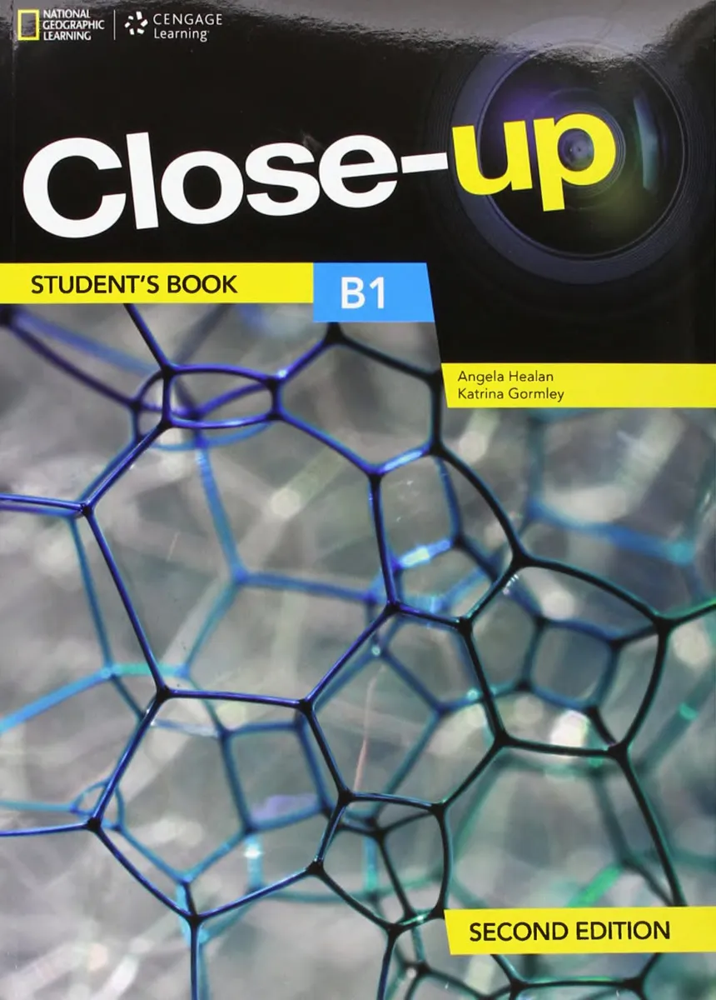
STUDENT'S BOOK
A n g e la Healan
K atrina G o rm le y
SECOND EDITION
To access the resources on the online student zone,
please visit NGL.Cengage.com/closeup and select
'Student Companion site'.
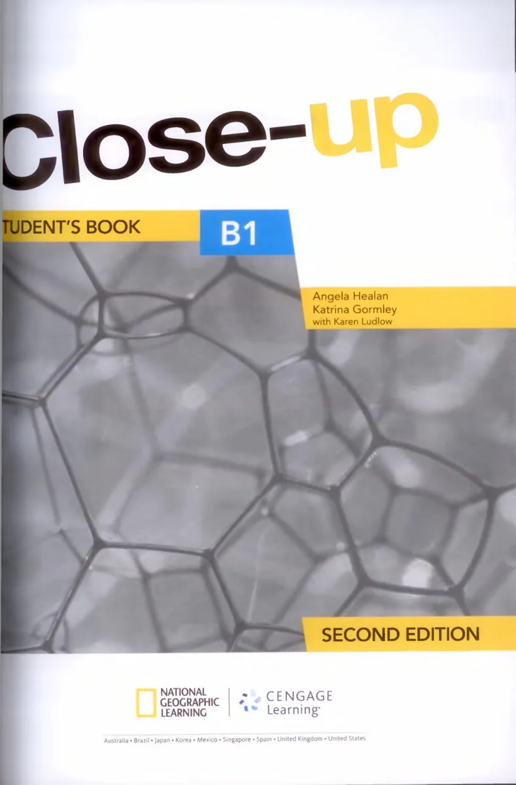
Close-up
IDENT'S BOOK
A ngela Healan
Katrina G orm ley
with Karen Ludlow
SECOND EDITION
NATIONAL
GEOGRAPHIC
* 4C E N G A G E
Learning'
LEARNING
Australia • Brazil - Japan • Korea • Mexico • Singapore - Spain • United Kingdom • United States
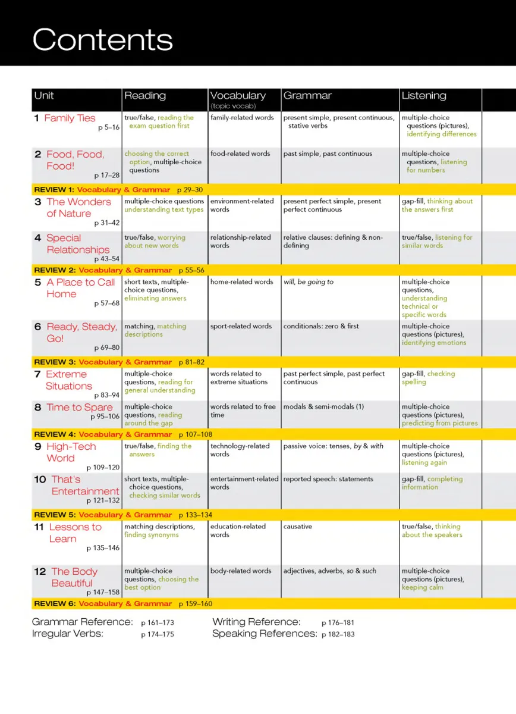
Contents
Reading
Vocabulary
Unit
Gram m ar
Listening
(to p ic v o c a b )
1Family Ties
p 5-1 6
true/false, reading th e
fam ily-related w ords
present sim ple, present continuous,
m ultiple-choice
exam question first
stative verbs
questions (pictures),
id e n tifyin g differences
2Food, Food,
Food!
choosing th e correct
fo o d -re la te d w ords
past sim ple, past continuous
m ultiple-choice
o p tio r , m ultiple-choice
questions
questions, listening
fo r num bers
p17-28
REVIEW 1: Vocabulary & Grammar
p 29 -3 0
3The Wonders
of Nature
m ultiple-choice questions
understand ing te x t types
environm ent-related
w ords
present p e rfe ct sim ple, present
p e rfe ct continuous
ga p-fill, th in kin g about
th e answers first
p 31 -42
4Special
Relationships
true/false, w o rryin g
ab out new w ords
relationship-related
w ords
relative clauses: de fin in g & no n
d efining
tru e/fa lse, listening fo r
sim ilar w ords
p 43 -5 4
REVIEW 2: Vocabulary & Grammar
p 5 5 -5 6
5A Place to Call
Home
ho m e-related w ords
will, be g o in g to
m ultiple-choice
questions,
understanding
technical or
specific w ords
6Ready, Steady,
Go!
sh o rt texts, m u ltiple-
choice questions,
elim inating answers
p 57 -6 8
m atching, m atching
descriptions
spo rt-related w ords
conditionals: zero & first
m ultiple-choice
questions (pictures),
id e n tifyin g em otions
p 69 -8 0
REVIEW 3: Vocabulary & Grammar
p 81 -8 2
7Extreme
Situations
m u ltiple-choice
questions, reading fo r
general understanding
w ords related to
extrem e situations
past p e rfe ct sim ple, past pe rfect
continuous
ga p-fill, checking
spelling
p 83 -94
8Time to Spare
p 9 5 -106
m u ltiple-choice
questions, reading
around th e gap
w ords related to free
tim e
m odals & sem i-m odals (1)
m ultiple-choice
questions (pictures),
p re d ictin g fro m pictures
REVIEW 4: Vocabulary & Grammar
p 107-10 8
9High-Tech
World
true/false, fin d in g th e
tech nolog y-related
w ords
passive voice: tenses, b y & w ith
m ultiple-choice
questions (pictures),
listening again
answers
p 109-120
10That's
Entertainment
sh o rt texts, m u ltiple-
en terta in m en t-re la ted
w ords
re p o rte d speech: statem ents
ga p-fill, com pletin
inform ation
choice questions,
checking sim ilar w ords
p 121-132
REVIEW 5: Vocabulary & Grammar
p 133-13 4
11Lessons to
Learn
m atching descriptions,
fin d in g synonym s
education-related
w ords
causative
tru e/fa lse, thin kin g
a b out th e speakers
p 135-146
12The Body
Beautiful
m u ltiple-choice
questions, choosing th e
best op tio n
b o dy-re la ted w ords
adjectives, adverbs, so & such
m ultiple-choice
questions (pictures),
keeping calm
p 147-158
REVIEW 6: Vocabulary & Grammar
p 159-16 0
Grammar Reference:
Writing Reference:
p 1 6 1 - 1 7 3
p 1 76 - 1 8 1
Irregular Verbs:
Speaking References: p 182-183
1 7 4 - 1 7 5
p
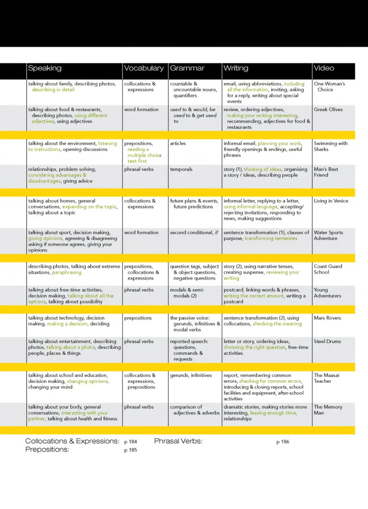
Speaking
Vocabulary
Gram m ar
Writing
Video
talking a b o u t fam ily, describing photos,
collocations &
countable &
em ail, using abbreviations, including
O ne W om an's
describing in detail
expressions
uncountable nouns,
quantifiers
all th e in fo rm a tio n , invitin g, asking
fo r a reply, w ritin g a b o u t special
events
Choice
talking a b o u t fo o d & restaurants,
w ord form ation
used to & w ould, be
review, o rdering adjectives,
G reek Olives
describing photos, using d iffe re n t
adjectives, using adjectives
used to & g e t used
to
m aking you r w ritin g in te re stin g ,
recom m ending, adjectives fo r fo o d &
restaurants
talking a b o u t the environm ent, listening
to in stru ctio ns, op ening discussions
prepositions,
articles
inform al em ail, planning you r w o rk ,
frie n d ly openings & endings, useful
phrases
reading a
m u ltip le choice
te x t first
relationships, problem solving,
considering advantages &
disadvantages, giving advice
phrasal verbs
tem porals
story (1), th in kin g o f ideas, organising
a sto ry / ideas, describing people
ta lkin g a b o u t hom es, general
conversations, e xp a n d in g on th e to p ic ,
ta lkin g a b o u t a to p ic
collocations &
future plans & events,
inform al letter, replying to a letter,
using inform al language, a cce p tin g /
rejecting invitations, responding to
news, m aking suggestions
expressions
futu re predictions
talking a b o u t spo rt, decision m aking,
giving o p in ion s, agreeing & disagreeing
asking if som eone agrees, giving your
opinions
w ord form ation
second con ditio nal, if
sentence tra nsform ation (1), clauses o f
purpose, tra n sfo rm in g sentences
describing photos, talking a b o u t extrem e
situations, paraphrasing
prepositions,
question tags, subject
story (2), using narrative tenses,
creating suspense, review ing your
w ritin g
collocations &
expressions
& o b je ct questions,
negative questions
ta lkin g a b o u t fre e -tim e activities,
decision m aking, ta lk in g a b out all th e
o p tio n s , ta lkin g a b o u t po ssib ility
phrasal verbs
m odals & sem i-
postcard, linking w ords & phrases,
w ritin g th e correct am o u n t, w ritin g a
postcard
m odals (2)
talking a b o u t technology, decision
m aking, m aking a de cision, de cid ing
prepositions
the passive voice:
sentence tra nsform ation (2), using
collocations, checking th e m eaning
gerunds, infinitives &
m odal verbs
talking a b o u t e n terta in m en t, describing
photos, ta lkin g ab out a p h o to , describing
pe ople, places & things
phrasal verbs
re p o rte d speech:
le tte r o r story, o rdering ideas,
choosing th e rig h t questior , fre e-tim e
activities
questions,
com m ands &
requests
talking a b o u t school and education,
decision m aking, changing op in ion s,
changing your m ind
collocations &
gerunds, infinitives
re port, rem em bering com m on
errors, checking fo r com m on errors,
introducing & closing reports, school
facilities and equipm ent, after-school
activities
expressions,
prepositions
talking a b o u t your body, general
conversations, interacting w ith your
p a rtn e r, talking a b o u t health and fitness
phrasal verbs
com parison o f
dram atic stories, m aking stories m ore
interesting, leaving en ough tim e ,
relationships
adjectives & adverbs
Collocations & Expressions: p 184
Phrasal Verbs:
Prepositions:
p 185
p 186
S w im m ing w ith
Sharks
M an's Best
Friend
Living in Venice
W ater Sports
A dven ture
C oast G uard
School
Young
Adventurers
M ars Rovers
Steel Drum s
The Maasai
Teacher
The M em ory
Man
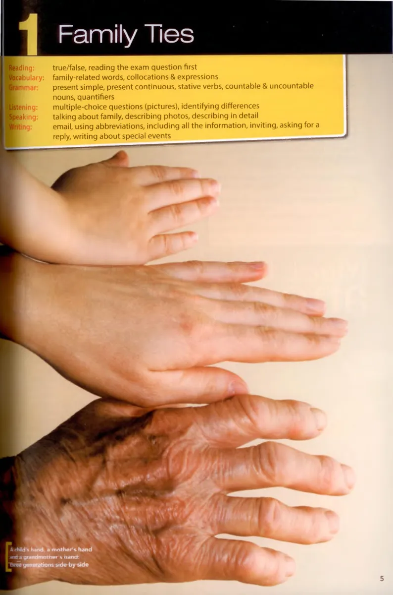
Family Ties
Reading:
true/false, reading the exam question first
Vocabulary: family-related words, collocations & expressions
present simple, present continuous, stative verbs, countable & uncountable
nouns, quantifiers
listening:
multiple-choice questions (pictures), identifying differences
Speaking:
talking about family, describing photos, describing in detail
email, using abbreviations, including all the information, inviting, asking for a
reply, writing about special events
5
Family Ties
A Work in pairs. How many words for family
members can you think of? W rite as many
as you can in one minute.
В How can you learn about your family's
past? W rite down the different ways in
your notebook. Then, quickly read the
text. Are your answers the same?
Read the text about family history and
match the headings below with the
correct sections in the text.
A Your turn
В What is genealogy?
С Research and records
|
Meet the,
ancestors
What makes you who you are? Part of the answer is in your family's
past. Become a detective and find clues to your family history.
1.
gene: part of a cell passed
from parents to children that
determines how they look
generation: the people of about
the same age in a particular famil]
ancestor: person related to you
who lived a long time ago
genealogy: the study of family
history
When you look in the mirror, do
you see your father's smile? Maybe
you take after your mother or look
like a grandparent? That's because
of DNA. Our DNA contains genes
that make each person in the world
different - no two people look, think
or act the same. We pass down our
genes through generations. Scientists
can test your DNA to find out which
part of the world your ancestors
were from.
Your family's history may be a mystery
to you, but there's a way to find out
about it. It's called genealogy, and
it's the study of the people you are
related to. Genealogy helps you put
together your family history. It starts
with the relatives you know, such as
parents and grandparents, and then
you can learn about ancestors who
lived and died before you were born.
2.
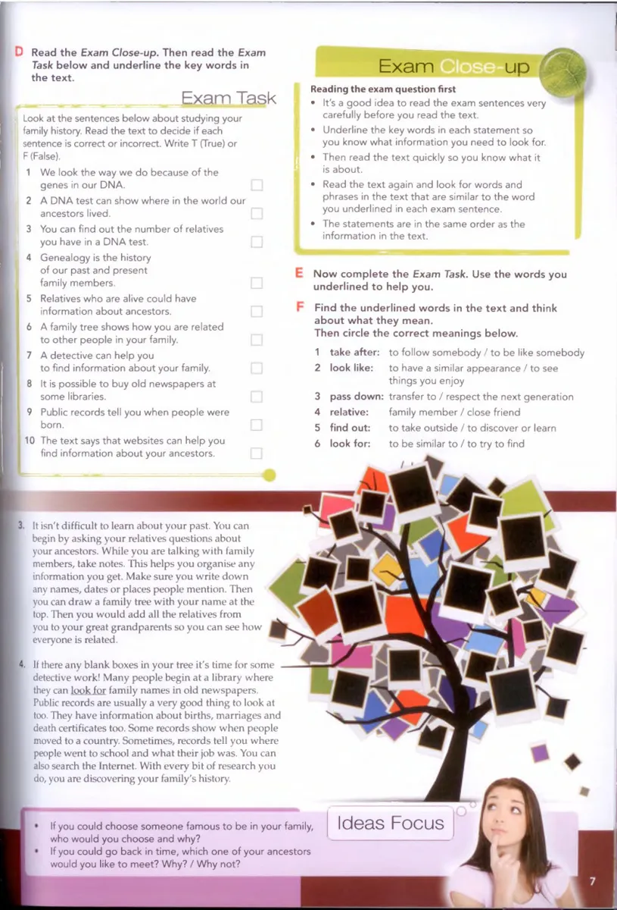
5 Read the Exam Close-up. Then read the Exam
Task below and underline the key words in
the text.
________________Exam Task
Look at the sentences below about studying your
family history. Read the text to decide if each
sentence is correct or incorrect. Write T (True) or
F (False).
We look the way we do because of the
genes in our DNA.
1
2
A DNA test can show where in the world our
ancestors lived.
3
You can find out the number of relatives
you have in a DNA test.
4
Genealogy is the history
of our past and present
family members.
5
Relatives who are alive could have
information about ancestors.
A family tree shows how you are related
to other people in your family.
6
7
A detective can help you
to find information about your family.
It is possible to buy old newspapers at
some libraries.
8
9
Public records tell you when people were
born.
10
The text says that websites can help you
find information about your ancestors.
Exam
ui
Reading the exam question first
• It's a good idea to read the exam sentences very
carefully before you read the text.
• Underline the key words in each statement so
you know what information you need to look for.
• Then read the text quickly so you know what it
is about.
• Read the text again and look for words and
phrases in the text that are similar to the word
you underlined in each exam sentence.
• The statements are in the same order as the
information in the text.
Now complete the Exam Task. Use the words you
underlined to help you.
Find the underlined words in the text and think
about what they mean.
Then circle the correct meanings below.
1
take after:
to follow somebody / to be like somebody
2
look like:
to have a similar appearance / to see
things you enjoy
3
pass down:transfer to / respect the next generation
4
relative:
family member / close friend
5
find out:
to take outside / to discover or learn
look for:
6
to be similar to / to try to find
It isn't difficult to learn about your past. You can
begin by asking your relatives questions about
your ancestors. While you are talking with family
members, take notes. This helps you organise any
information you get. Make sure you write down
any names, dates or places people mention. Then
you can draw a family tree with your name at the
top. Then you would add all the relatives from
you to your great grandparents so you can see how
everyone is related.
4. If there any blank boxes in your tree it's time for some
detective work! Many people begin at a library where
they can look for family names in old newspapers.
Public records are usually a very good thing to look at
too. They have information about births, marriages and
death certificates too. Some records show when people
moved to a country. Sometimes, records tell you where
people went to school and what their job was. You can
also search the Internet. With every bit of research you
!
do, you are discovering your family's history.
If you could choose someone famous to be in your family,
who would you choose and why?
If you could go back in time, which one of your ancestors
would you like to meet? Why? / Why not?
Ideas Focus
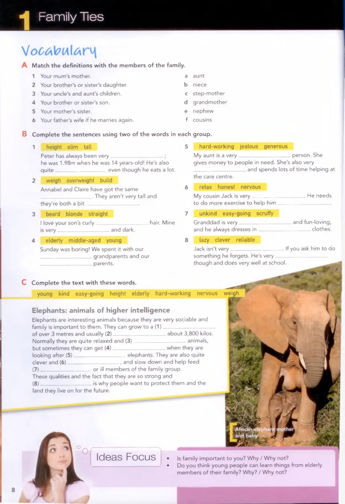
Family Ties
Match the definitions with the members of the family.
aunt
a
1
Your mum's mother.
b
niece
2 Your brother's or sister's daughter.
step-mother
с
3 Your uncle's and aunt's children.
grandmother
d
4 Your brother or sister's son.
nephew
e
5 Your mother's sister.
f cousins
6 Your father's wife if he marries again.
в
Complete the sentences using two of the words in each group.
height slim
tall
1
Peter has always been very____________________;
he was 1.98m when he was 14 years-old! He's also
quite____________________ even though he
eats a lot.
weigh
overweight
build
Annabel and Claire have got the same
____________________They aren't very tall and
they're both a bit____________________
beard
blonde
straight
I love your son's curly____________________hair. Mine
is very____________________ and dark.
elderly
middle-aged
young
Sunday was boring! We spent it with our
___________________grandparents and our
___________________parents.
С Complete the text with these words.
weighI
young
kind
easy-going
height
elderly
hard-working
nervous
Elephants: animals of higher intelligence
►
Elephants are interesting animals because they are very sociable and
family is important to them. They can grow to a (1)-----------------
of over 3 metres and usually (2)____________________about 3,800 kilos.
Normally they are quite relaxed and (3)
but sometimes they can get (4)
looking after (5)_______________
clever and (6)_________________
(7)-------------
________animals,
when they are
elephants. They are also quite
_, and slow down and help feed
or ill members of the family group.
These qualities and the fact that they are so strong and
(8)___________________ is why people want to protect them and the
land they live on for the future.
hard-working
jealous
generous
My aunt is a very___________________person. She
gives money to people in need. She's also very
and spends lots of time helping at
the care centre.
relax
honest
nervous
My cousin Jack is very__________
to do more exercise to help him
unkind
easy-going
scruffy
Granddad is very
and he always dresses in
lazy
clever
reliable
Jack isn't very
something he forgets. He's very
though and does very well at school.
_. He needs
and fun-loving,
________clothes.
If you ask him to do
Ideas Focus
•
Is family important to you? Why / Why not?
•
Do you think young people can learn things from elderly
members of their family? Why? / Why not?
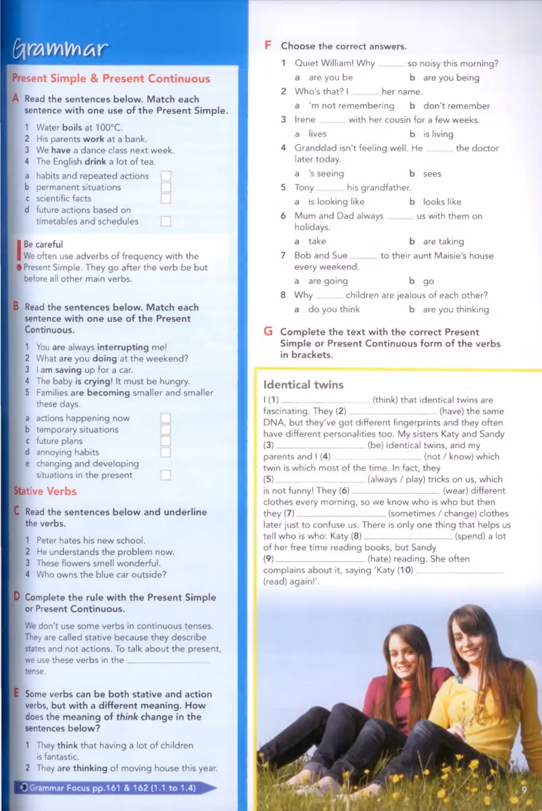
F Choose the correct answers.
1
Quiet William! W h y
so noisy this morning?
a
are you be
b are you being
2 Who's that? I
her name.
b don't remember
a
'm not remembering
3
Irene
with her cousin for a few weeks,
b is living
a
lives
4 Granddad isn't feeling well. H e
the doctor
later today.
b sees
a
's seeing
5 Tony
his grandfather.
b looks like
a
is looking like
6
Mum and Dad always
us with them on
holidays.
b are taking
a
take
Bob and Sue______to their aunt Maisie's house
7
every weekend.
a
are going
b go
8 Why
children are jealous of each other?
b are you thinking
a
do you think
G Complete the text with the correct Present
Simple or Present Continuous form of the verbs
in brackets.
Identical twins
________________(think) that identical twins are
K1)____________
fascinating. They (2)
(have) the same
DNA, but they've got different fingerprints and they often
have different personalities too. My sisters Katy and Sandy
(3 )____________________ (be) identical twins, and my
parents and I (4)_____________________(not / know) which
twin is which most of the time. In fact, they
(5)
(always / play) tricks on us, which
is not funny! They (6)_____________________(wear) different
clothes every morning, so we know who is who but then
they (7)_____________________(sometimes / change) clothes
later just to confuse us. There is only one thing that helps us
tell who is who: Katy (8)
(spend) a lot
of her free time reading books, but Sandy
(9)
(hate) reading. She often
complains about it, saying 'Katy (10)_____________________
(read) again!'.
f a mw\ №\ £ \ r
present Simple & Present Continuous
A Read the sentences below. Match each
sentence with one use of the Present Simple.
1 Water boils at 100°C.
2 His parents work at a bank.
3 We have a dance class next week.
4 The English drink a lot of tea.
a habits and repeated actions
b permanent situations
с scientific facts
d future actions based on
timetables and schedules
I
Be careful
We often use adverbs of frequency with the
Ф Present Simple. They go after the verb be but
I before all other main verbs.
В Read the sentences below. Match each
sentence with one use of the Present
Continuous.
1 You are always interrupting me!
2 What are you doing at the weekend?
3 I am saving up for a car.
4 The baby is crying! It must be hungry.
5 Families are becoming smaller and smaller
these days.
a actions happening now
b temporary situations
с future plans
d annoying habits
e changing and developing
situations in the present
ptative Verbs
С Read the sentences below and underline
\ the verbs.
I 1 Peter hates his new school,
j
2 He understands the problem now.
3 These flowers smell wonderful.
4 Who owns the blue car outside?
P Complete the rule with the Present Simple
I
or Present Continuous.
I We don't use some verbs in continuous tenses.
I They are called stative because they describe
I states and not actions. To talk about the present,
I we use these verbs in the___________________
j tense.
p Some verbs can be both stative and action
verbs, but with a different meaning. How
does the meaning of think change in the
sentences below?
1 They think that having a lot of children
is fantastic.
2 They are thinking of moving house this year.
0 Grammar Focus pp.161 & 162 (1.1 to 1.4)
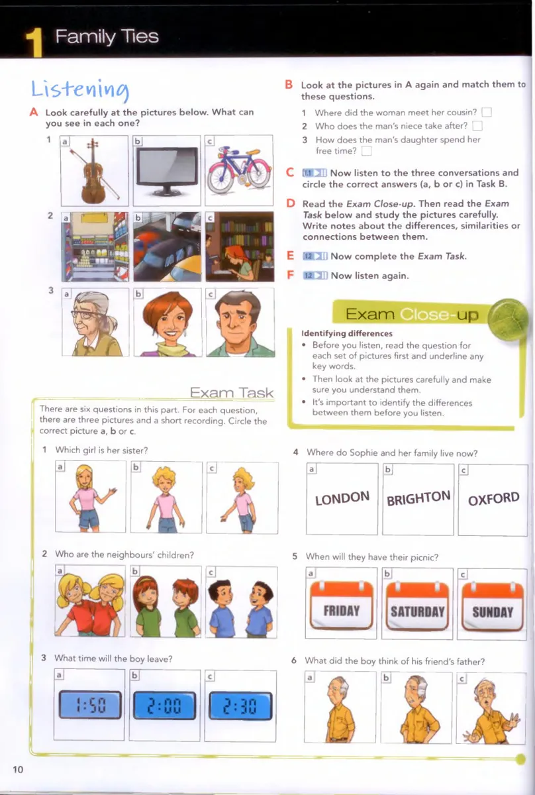
Family Ties
В Look at the pictures in A again and match them to
these questions.
1
Where did the woman meet her cousin? Q
2 Who does the man's niece take after? Q
3
How does the man's daughter spend her
free time? Q
С K 2 D Now listen to the three conversations and
circle the correct answers (a, b or c) in Task B.
D Read the Exam Close-up. Then read the Exam
Task below and study the pictures carefully.
W rite notes about the differences, similarities or
connections between them.
e ял аNow complete the Exam Task.
1.2C3U Now listen again.
Exam
up
Identifying differences
• Before you listen, read the question for
each set of pictures first and underline any
key words.
• Then look at the pictures carefully and make
sure you understand them.
• It's important to identify the differences
between them before you listen.
L\ s+evi i vi £)
A Look carefully at the pictures below. W hat can
you see in each one?
В
A
|t M
V
НИШ -i JuOjШ
H
_________________Exam Task
There are six questions in this part. For each question,
there are three pictures and a short recording. Circle the
correct picture a, b or c.
1
Which girl is her sister?
4 Where do Sophie and her family live now?
bj
±i
I T
BRIGHTON
LONDON
OXFORD
2 Who are the neighbours' children?
5 When will they have their picnic?
3 What time will the boy leave?
6 What did the boy think of his friend's father?
I
10
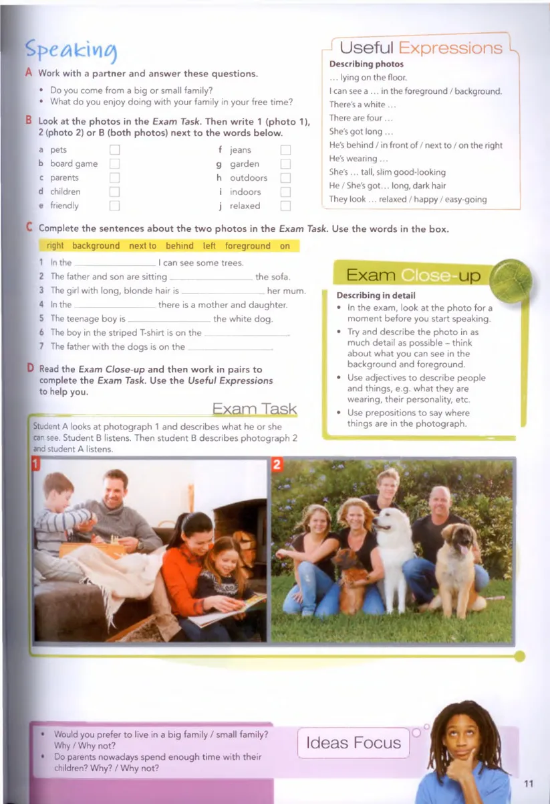
!
p-Hjseful Expressions Ц
Describing photos
... lying on the floor.
I can see a ... in the foreground / background.
There's a white...
There are four...
She's got long ...
He's behind / in front of / next to / on the right
He's wearing ...
She's ... tall, slim good-looking
He / She's got... long, dark hair
They look ... relaxed / happy / easy-going
A Work with a partner and answer these questions.
• Do you come from a big or small family?
• What do you enjoy doing with your family in your free time?
Look at the photos in the Exam Task. Then write 1 (photo 1),
2 (photo 2) or В (both photos) next to the words below.
a
pets
f
jeans
□
□
board game
garden
□
9
□
parents
h
outdoors
□
□
children
i
indoors
□
□
friendly
relaxed
□
j
□
b
с
d
Complete the sentences about the two photos in the Exam Task. Use the words in the box.
right
background
next to
behind
left
foreground
on
I can see some trees.
The father and son are sitting
the sofa.
The girl with long, blonde hair is________________
her mum.
In the
there is a mother and daughter.
The teenage boy is_____
. the white dog.
The boy in the striped T-shirt is on the
The father with the dogs is on the____
; D Read the Exam Close-up and then work in pairs to
complete the Exam Task. Use the Useful Expressions
to help you.
Exam Task
Student A looks at photograph 1 and describes what he or she
can see. Student В listens. Then student В describes photograph 2
and student A listens.
В
Exam
Describing in detail
• In the exam, look at the photo for a
moment before you start speaking.
• Try and describe the photo in as
much detail as possible - think
about what you can see in the
background and foreground.
• Use adjectives to describe people
and things, e.g. what they are
wearing, their personality, etc.
• Use prepositions to say where
things are in the photograph.
Would you prefer to live in a big family / small family?
Why / Why not?
Do parents nowadays spend enough time with their
children? Why? / Why not?
Ideas Focus
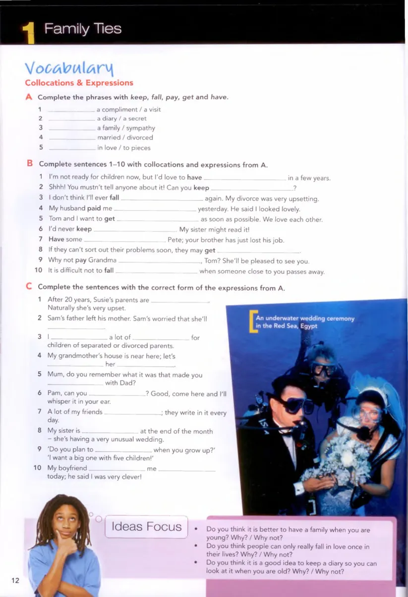
4 Family Ties
Collocations & Expressions
Complete the phrases with keep, fall, pay, g e t and have.
1
_______________a compliment / a visit
2 _______________a diary / a secret
3 _______________a family / sympathy
4 _______________married / divorced
5 _______________in love / to pieces
Complete sentences 1-10 with collocations and expressions from A.
1
I'm not ready for children now, but I'd love to have___________________________ in a few years.
2 Shhh! You mustn't tell anyone about it! Can you keep__________________________?
3
I don't think I'll ever fall
_ again. My divorce was very upsetting.
My husband paid m e__________________________yesterday. He said I looked lovely.
4
Tom and I want to g e t_________________________as soon as possible. We love each other.
5
6 I'd never keep------------------------My sister might read it!
7 Have some-----------------------Pete; your brother has just lost his job.
8 If they can't sort out their problems soon, they may g e t___________________________
Why not pay Grandma________________________, Tom? She'll be pleased to see you.
9
It is difficult not to fall----------------------when someone close to you passes away.
10
Complete the sentences with the correct form of the expressions from A.
___
1
After 20 years, Susie's parents are
Naturally she's very upset.
2 Sam's father left his mother. Sam's worried that she'll
lot o f__________________for
3 I _________________a
children of separated or divorced parents.
4 My grandmother's house is near here; let's
----------------her___________________
5 Mum, do you remember what it was that made you
__________________with Dad?
6 Pam, can you----------------? Good, come here and I'll
whisper it in your ear.
7 A lot of my friends__________________ ; they write in it every
day.
8 My sister is---------------- at the end of the month
- she's having a very unusual wedding.
9 'Do you plan to __________________when you grow up?'
'I want a big one with five children!'
10 My boyfriend__________________ m e___________________
today; he said I was very clever!
В
Ideas Focus
Do you think it is better to have a family when you are
young? Why? / Why not?
Do you think people can only really fall in love once in
their lives? Why? / Why not?
Do you think it is a good idea to keep a diary so you can
look at it when you are old? Why? / Why not?
12
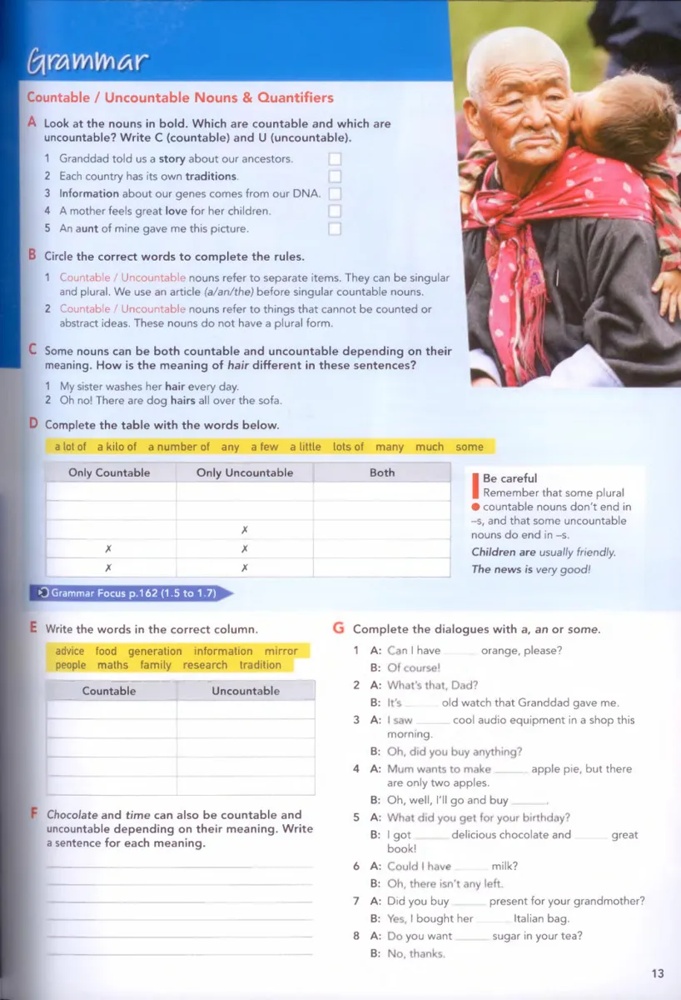
Countable / Uncountable Nouns & Quantifiers
A Look at the nouns in bold. Which are countable and which are
uncountable? W rite С (countable) and U (uncountable).
1 Granddad told us a story about our ancestors.
2 Each country has its own traditions.
3 Information about our genes comes from our DNA. [
4 A mother feels great love for her children.
5 An aunt of mine gave me this picture.
В Circle the correct words to complete the rules.
1 Countable / Uncountable nouns refer to separate items. They can be singular
and plural. We use an article (a/an/the) before singular countable nouns.
2 Countable / Uncountable nouns refer to things that cannot be counted or
abstract ideas. These nouns do not have a plural form.
С Some nouns can be both countable and uncountable depending on their
meaning. How is the meaning of hair different in these sentences?
1
My sister washes her hair every day.
2 Oh no! There are dog hairs all over the sofa.
D Complete the table with the words below.
a lot of a kilo of
a number of
any
a few
a little
lots of
many
much
some
Both
Only Countable
Only Uncountable
I
Be careful
Remember that some plural
• countable nouns don't end in
-s, and that some uncountable
nouns do end in -s.
Children are usually friendly.
The news is very good!
X
X
X
X
X
О Grammar Focus p.162 (1.5 to 1.7)
E Write the words in the correct column.
advice
food
generation
information
mirror
people
maths
family
research
tradition
Uncountable
Countable
Complete the dialogues with a, an or some.
1
A:
n I have
orange, please?
B:
2
A:
B:
3
A:
B:
4
A:
B:
A:
5
B:
A:
6
B:
7
A:
B:
8
A:
B:
old watch that Granddad gave me.
cool audio equipment in a shop this
morning.
apple pie, but there
are only two apples.
Oh, well, I'll go and buy
I got_
book!
Chocolate and tim e can also be countable and
uncountable depending on their meaning. W rite
a sentence for each meaning.
delicious chocolate and
э
milk?
: Did you buy
present for your grandmother?
I bought her
Italian bag.
you want_______sugar in your tea?
great
13
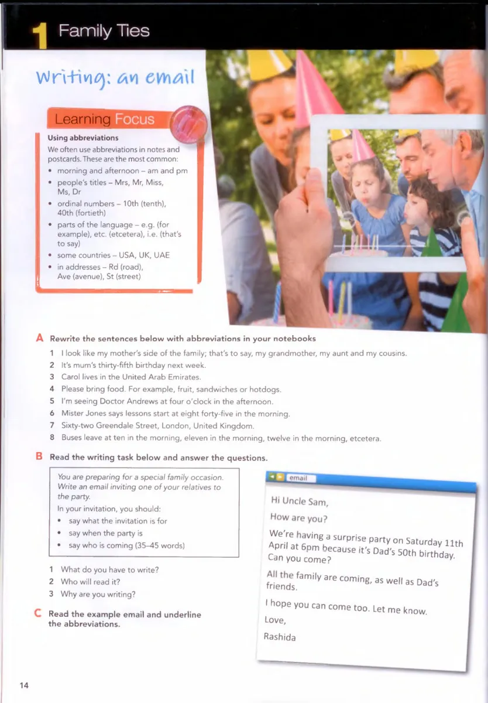
Family Ties
-
w
irm
vi M
;
Learning
Using abbreviations
We often use abbreviations in notes and
postcards. These are the most common:
• morning and afternoon - am and pm
• people's titles - Mrs, Mr, Miss,
Ms, Dr
• ordinal numbers - 10th (tenth),
40th (fortieth)
• parts of the language - e.g. (for
example), etc. (etcetera), i.e. (that's
to say)
• some countries - USA, UK, UAE
• in addresses - Rd (road),
Ave (avenue), St (street)
A
Rewrite the sentences below with abbreviations in your notebooks
1
I look like my mother's side of the family; that's to say, my
grandmother, my aunt
and my cousins.
2
It's mum's thirty-fifth birthday next week.
3 Carol lives in the United Arab Emirates.
4 Please bring food. For example, fruit, sandwiches or hotdogs.
5 I'm seeing Doctor Andrews at four o'clock in the afternoon.
6 Mister Jones says lessons start at eight forty-five in the morning.
7
Sixty-two Greendale Street, London, United Kingdom.
8
Buses leave at ten in the morning, eleven in the morning,
twelve in the morning,
etcetera.
В Read the writing task below and answer the questions.
You are preparing for a special family occasion.
Write an email inviting one o f your relatives to
the party.
In your invitation, you should:
•
say what the invitation is for
•
say when the party is
•
say who is coming (35-45 words)
1
What do you have to write?
2 Who will read it?
3 Why are you writing?
Read the example email and underline
the abbreviations.
ZTsteZi3 SUrprise party °" Satu^v u«h
CanLco; er
aUSeit'SDad'S 50,hbirthday-
f r iends. f amil V 3r e C Om‘ ng' a s we l1 a s Dad's
I hope you can come too. Let me know.
Love,
Rashida
14
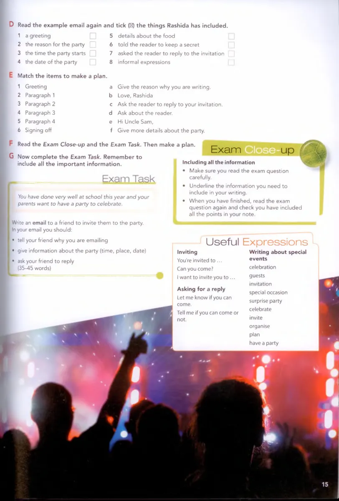
D Read the example email again and tick (Й) the things Rashida has included.
1
a greeting
Q
5
details about the food
2
the reason for the party
Q
6
told the reader to keep a secret
3
the time the party
starts Q
7
asked the reader to reply to the invitation [
4
the date of the party
Q
8
informal expressions
Match the items to make a plan.
Greeting
a
1
Give the reason why you are writing.
2
Paragraph 1
b
Love, Rashida
3
Paragraph 2
с
Ask the reader to reply to your invitation.
4
Paragraph 3
d
Ask about the reader.
5
Paragraph 4
e
Hi Uncle Sam,
6
Signing off
f
Give more details about the party.
■ Read the Exam Close-up and the Exam Task. Then make a plan.
G Now complete the Exam Task. Remember to
include all the important information.
Exam
Including all the information
• Make sure you read the exam question
carefully.
• Underline the information you need to
include in your writing.
• When you have finished, read the exam
question again and check you have included
all the points in your note.
You have done very well at school this year and your
parents want to have a party to celebrate.
Write an email to a friend to invite them to the party.
In your email you should:
• tell your friend why you are emailing
• give information about the party (time, place, date)
• ask your friend to reply
(35-45 words)
Useful Expressions Ц
Inviting
Writing about special
events
You're invited to ...
celebration
Can you come?
guests
I want to invite you to ...
invitation
Asking for a reply
special occasion
Let me know if you can
come.
surprise party
celebrate
Tell me if you can come or
invite
not.
organise
plan
have a party
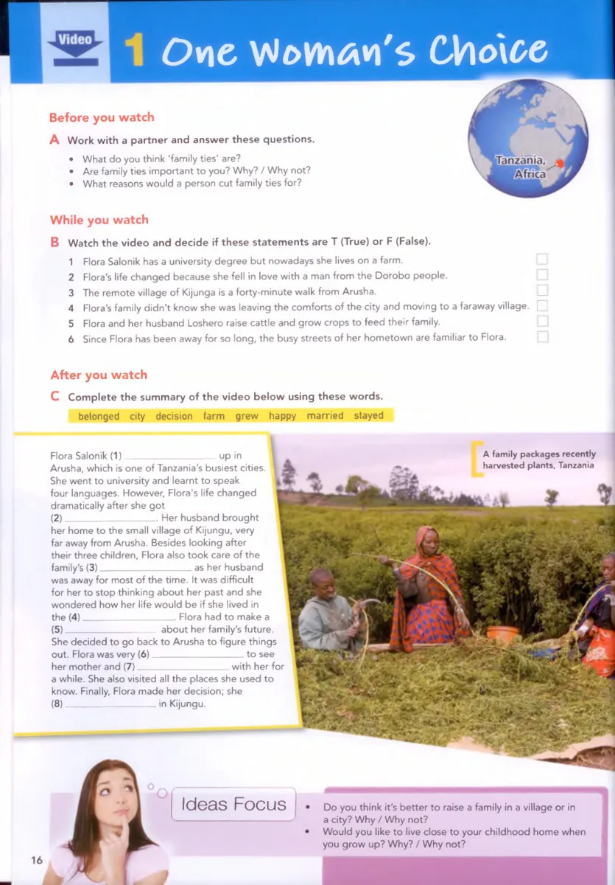
О Vie Vtc>W\Av\'$ CV\o\06
Before you watch
A Work with a partner and answer these questions.
• What do you think 'family ties' are?
• Are family ties important to you? Why? / Why not?
• What reasons would a person cut family ties for?
While you watch
В Watch the video and decide if these statements are T (True) or F (False).
1
Flora Salonik has a university degree but nowadays she lives on a farm.
2 Flora's life changed because she fell in love with a man from the Dorobo people.
3 The remote village of Kijunga is a forty-minute walk from Arusha.
4 Flora's family didn't know she was leaving the comforts of the city and moving to a faraway village. ; ]
5 Flora and her husband Loshero raise cattle and grow crops to feed their family.
6 Since Flora has been away for so long, the busy streets of her hometown are familiar to Flora.
After you watch
С Complete the summary of the video below using these words.
belonged
city
decision
farm
grew
happy
married
stayed
Flora Salonik (1)____________________up in
Arusha, which is one of Tanzania's busiest cities.
She went to university and learnt to speak
four languages. However, Flora's life changed
dramatically after she got
(2)_____________________Her husband brought
her home to the small village of Kijungu, very
far away from Arusha. Besides looking after
their three children, Flora also took care of the
family's (3)____________________ as her husband
was away for most of the time. It was difficult
for her to stop thinking about her past and she
wondered how her life would be if she lived in
the (4)_____________________Flora had to make a
(5)___________________ about her family's future.
She decided to go back to Arusha to figure things
out. Flora was very (6)___________________to see
her mother and (7)____________________ with her for
a while. She also visited all the places she used to
know. Finally, Flora made her decision; she
(8)___________________in Kijungu.
A family packages recently
harvested plants, Tanzania
Ideas Focus
Do you think it's better to raise a family in a village or in
a city? Why / Why not?
Would you like to live close to your childhood home when
you grow up? Why? / Why not?
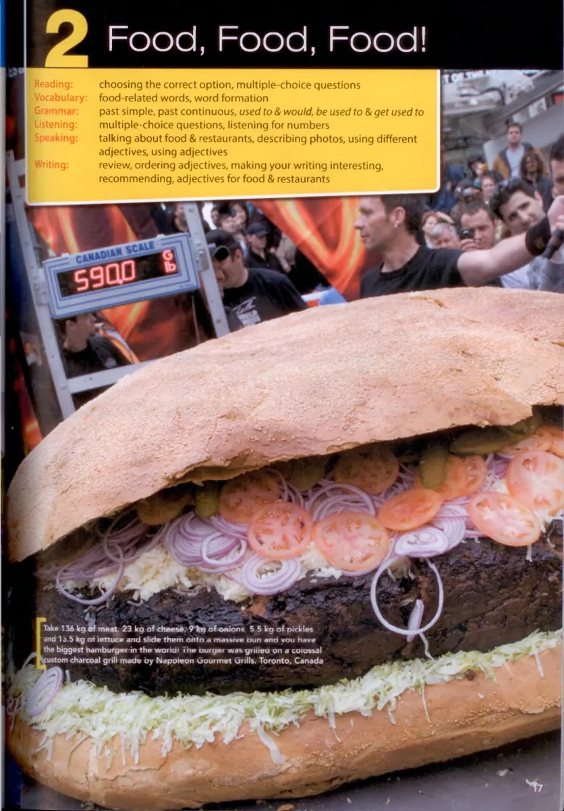
Food, Food, Food!
Reading:
choosing the correct option, multiple-choice questions
Vocabulary: food-related words, word formation
past simple, past continuous, used to & would, be used to & get used to
Listening:
multiple-choice questions, listening for numbers
talking about food & restaurants, describing photos, using different
adjectives, using adjectives
Writing:
review, ordering adjectives, making your writing interesting,
recommending, adjectives for food & restaurants
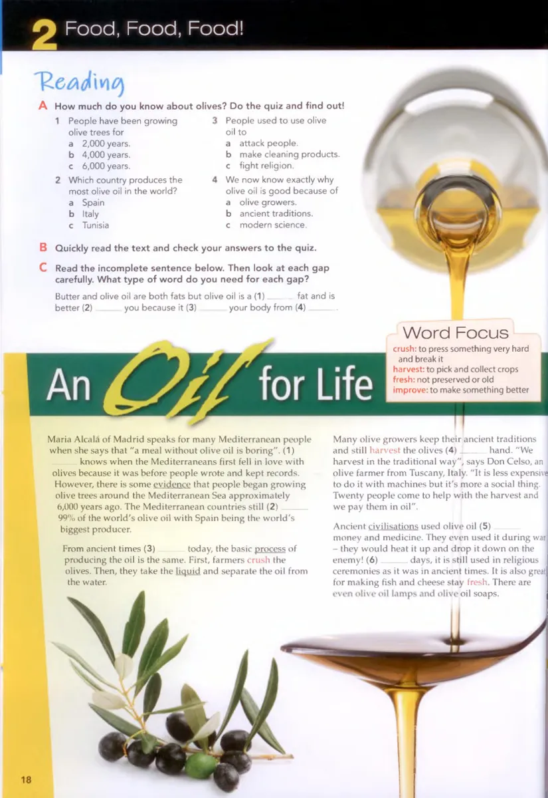
Food, Food, Food!
A How much do you know about olives? Do the quiz and find out!
People used to use olive
oil to
a
attack people,
b make cleaning products,
с
fight religion.
People have been growing
olive trees for
a
2,000 years,
b 4,000 years,
с
6,000 years.
We now know exactly why
olive oil is good because of
a
olive growers,
b ancient traditions,
с
modern science.
Which country produces the
most olive oil in the world?
a
Spain
b Italy
с
Tunisia
В Quickly read the text and check your answers to the quiz.
С Read the incomplete sentence below. Then look at each gap
carefully. W hat type of word do you need for each gap?
Butter and olive oil are both fats but olive oil is a (1 )
fat and is
better (2)
you because it (3)
your body from (4)_______
W ord Focus
crush: to press something very hard
and break it
harvest: to pick and collect crops
fresh: not preserved or old
improve: to make something better
Many olive growers keep their ancient traditions
and still harvest the olives (4) _i
hand. "We
harvest in the traditional way", says Don Celso, an i
olive farmer from Tuscany, Italy. "It is less expensive
to do it with machines but it's more a social thing.
Twenty people come to help with the harvest and
we pay them in oil".
Ancient civilisations used olive oil (5 )______
money and medicine. They even used it during war
- they would heat it up and drop it down on the
enemy! (6)
days, it is still used in religious
ceremonies as it was in ancient times. It is also great
for making fish and cheese stay fresh. There are
oil soaps.
Maria Alcala of Madrid speaks for many Mediterranean people
when she says that "a meal without olive oil is boring". (1)
knows when the Mediterraneans first fell in love with
olives because it was before people wrote and kept records.
However, there is some evidence that people began growing
olive trees around the Mediterranean Sea approximately
6,000 years ago. The Mediterranean countries still (2)
99% of the world's olive oil with Spain being the world's
biggest producer.
From ancient times (3)
_ today, the basic process of
producing the oil is the same. First, farmers crush the
olives. Then, they take the liquid and separate the oil from
the water.
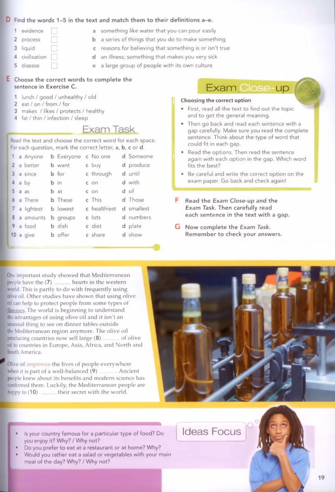
D Find the words 1-5 in the text and match them to their definitions a-e.
1evidence
something like water that you can pour easily
a
□
a series of things that you do to make something
2
b
process
□
reasons for believing that something is or isn't true
3
с
liquid
□
4
an illness; something that makes you very sick
civilisation
d
□
5disease
e
a large group of people with its own culture
□
E Choose the correct words to complete the
sentence in Exercise C.
1 lunch / good / unhealthy / old
2 eat / on / from / for
3 makes / likes / protects / healthy
4 fat / thin / infection / sleep
_Exam
Choosing the correct option
• First, read all the text to find out the topic
and to get the general meaning.
• Then go back and read each sentence with a
gap carefully. Make sure you read the complete
sentence. Think about the type of word that
could fit in each gap.
• Read the options. Then read the sentence
again with each option in the gap. Which word
fits the best?
• Be careful and write the correct option on the
exam paper. Go back and check again!
F
Read the Exam Close-up and the
Exam Task. Then carefully read
each sentence in the text with a gap.
G Now complete the Exam Task.
Remember to check your answers.
Read the text and choose the correct word for each space.
For each question, mark the correct letter, a, b, с or d.
dSomeone
1aAnyone
bEveryone
сNo one
2abetter
dproduce
bwant
сbuy
duntil
3asince
bfor
сthrough
dwith
4aby
сon
bin
сon
dof
5aas
bat
dThose
6aThere
bThese
сThis
7alightest
сhealthiest
dsmallest
blowest
dnumbers
8aamounts
сlots
bgroups
9afood
dplate
bdish
сdiet
dshow
10agive
boffer
сshare
One important study showed that Mediterranean
people have the (7 )
hearts in the western
world. This is partly to do with frequently using
olive oil. Other studies have shown that using olive
oil can help to protect people from some types of
jdiseases. The world is beginning to understand
the advantages of using olive oil and it isn't an
unusual thing to see on dinner tables outside
the Mediterranean region anymore. The olive oil
producing countries now sell large ( 8 )
of olive
oil to countries in Europe, Asia, Africa, and North and
South America.
Olive oil improves the lives of people everywhere
when it is part of a well-balanced (9 )
Ancient
people knew about its benefits and modern science has
confirmed them. Luckily, the Mediterranean people are
happy to (1 0 )
their secret with the world.
Ideas Focus
•
Is your country famous for a particular type of food? Do
you enjoy it? Why? / Why not?
•
Do you prefer to eat at a restaurant or at home? Why?
•
Would you rather eat a salad or vegetables with your main
meal of the day? Why? / Why not?
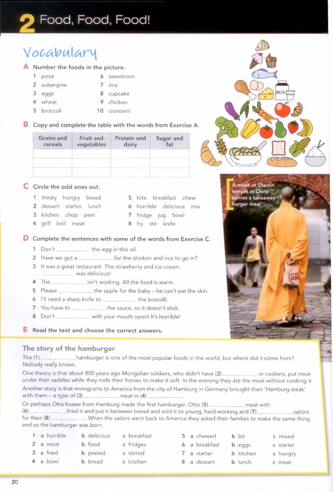
О Food, Food, Food!
Мо ОЛ\ 0 1 А\ ( лЩ
A Number the foods in the picture.
1
pizza
6
sweetcorn
2
aubergine
7
rice
3
eggs
8
cupcake
4
wheat
9
chicken
5
broccoli
10
croissant
В Copy and complete the table with the words from Exercise A.
Grains and
Fruit and
vegetables
Protein and
Sugar and
cereals
dairy
fat
С
Circle the odd ones out.
1
thirsty hungry bread
5 bite
breakfast
chew
2
dessert starter
lunch
6 horrible
delicious
mix
3
kitchen chop peel
7 fridge
jug
bowl
4
grill
boil
meat
8 fry
stir
knife
Complete the sentences with some of the words from Exercise C.
Don't_____________the egg in this oil.
1
2 Have we got a _____________for the chicken and rice to go in?
3 It was a great restaurant. The strawberry and ice-cream
_____________ was delicious!
4 The_____________isn't working. All the food is warm.
5 Please_____________the apple for the baby - he can't eat the skin.
6 I'll need a sharp knife to _____________ the brocolli.
7 You have to _____________the sauce, so it doesn't stick.
8 Don't_____________with your mouth open! It's horrible!
E
Read the text and choose the correct answers.
The story of the hamburger
The (1)-----------hamburger is one of the most popular foods in the world, but where did it come from?
Nobody really knows.
One theory is that about 800 years ago Mongolian soldiers, who didn't have (2)_____________or cookers, put meat
under their saddles while they rode their horses to make it soft. In the evening they ate the meat without cooking it.
Another story is that immigrants to America from the city of Hamburg in Germany brought their 'Hamburg steak'
with them - a type of (3)_____________meat in (4)_____________
Or perhaps Otta Kuasw from Hamburg made the first hamburger. Otto (5)_____________meat with
(6)----------- , fried it and put it between bread and sold it to young, hard-working and (7)_____________sailors
for their (8)------------ When the sailors went back to America they asked their families to make the same thing
and so the hamburger was born.
1
a horrible
b delicious
с breakfast
5
a chewed
b bit
с mixed
2
a meat
b food
с fridges
6
a breakfast
с starter
b eggs
3
a fried
b peeled
с stirred
7
a starter
b kitchen
с hungry
4
a bowl
b bread
с kitchen
8
a dessert
b lunch
с meat
D
20
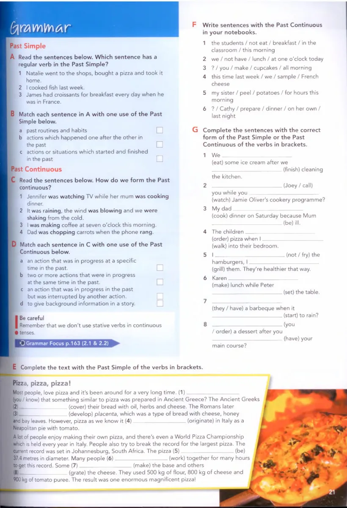
fymw\№\t\r
Past Simple
A Read the sentences below. Which sentence has a
regular verb in the Past Simple?
1 Natalie went to the shops, bought a pizza and took it
home.
2 I cooked fish last week.
3 James had croissants for breakfast every day when he
was in France.
В Match each sentence in A with one use of the Past
Simple below.
□
□
□
a past routines and habits
b actions which happened one after the other in
the past
с actions or situations which started and finished
in the past
Past Continuous
Read the sentences below. How do we form the Past
continuous?
1 Jennifer was watching TV while her mum was cooking
dinner.
2 It was raining, the wind was blowing and we were
shaking from the cold.
3 I was making coffee at seven o'clock this morning.
4 Dad was chopping carrots when the phone rang.
Match each sentence in С with one use of the Past
Continuous below.
a an action that was in progress at a specific
□
□
□□
time in the past,
b two or more actions that were in progress
at the same time in the past,
с an action that was in progress in the past
but was interrupted by another action,
d to give background information in a story.
Be careful
I
Remember that we don't use stative verbs in continuous
• tenses.
О Grammar Focus p.163 (2.1 & 2.2)
E Complete the text with the Past Simple of the verbs in brackets.
i Pizza, pizza, pizza!
Most people, love pizza and it's been around for a very long time. (1)
(you / know) that something similar to pizza was prepared in Ancient Greece? The Ancient Greeks
(cover) their bread with oil, herbs and cheese. The Romans later
(3L_________________ (develop) placenta, which was a type of bread with cheese, honey
and bay leaves. However, pizza as we know it (4)____________________(originate) in Italy as a
Neapolitan pie with tomato.
A lot of people enjoy making their own pizza, and there’s even a World Pizza Championship
which is held every year in Italy. People also try to break the record for the largest pizza. The
current record was set in Johannesburg, South Africa. The pizza (5)____________________(be)
37.4 metres in diameter. Many people (6)____________________(work) together for many hours
to get this record. Some (7)____________________ (make) the base and others
. (grate) the cheese. They used 500 kg of flour, 800 kg of cheese and
900 kg of tomato puree. The result was one enormous magnificent pizza!
YUU
F
W rite sentences with the Past Continuous
in your notebooks.
1
the students / not eat / breakfast / in the
classroom / this morning
2 we / not have / lunch / at one o'clock today
3 ? / you / make / cupcakes / all morning
4 this time last week / we / sample / French
cheese
5
my sister / peel / potatoes / for hours this
morning
6 ? / Cathy / prepare / dinner / on her own /
last night
G Complete the sentences with the correct
form of the Past Simple or the Past
Continuous of the verbs in brackets.
1
We
(eat) some ice cream after we
(finish) cleaning
the kitchen.
(Joey / call
you while you
(watch) Jamie Oliver's cookery programme7
3
My dad__________________________
(cook) dinner on Saturday because Mum
___________________________(be) ill.
4 The children
(order) pizza when I
(walk) into their bedroom.
5
I
(not / fry) the
hamburgers,
(grill) them. They're healthier that way.
6 Karen__________________________
(make) lunch while Peter
(set) the table.
(they / have) a barbeque when it
(start) to rain?
-----------------------(you
/ order) a dessert after you
(have) your
main course?
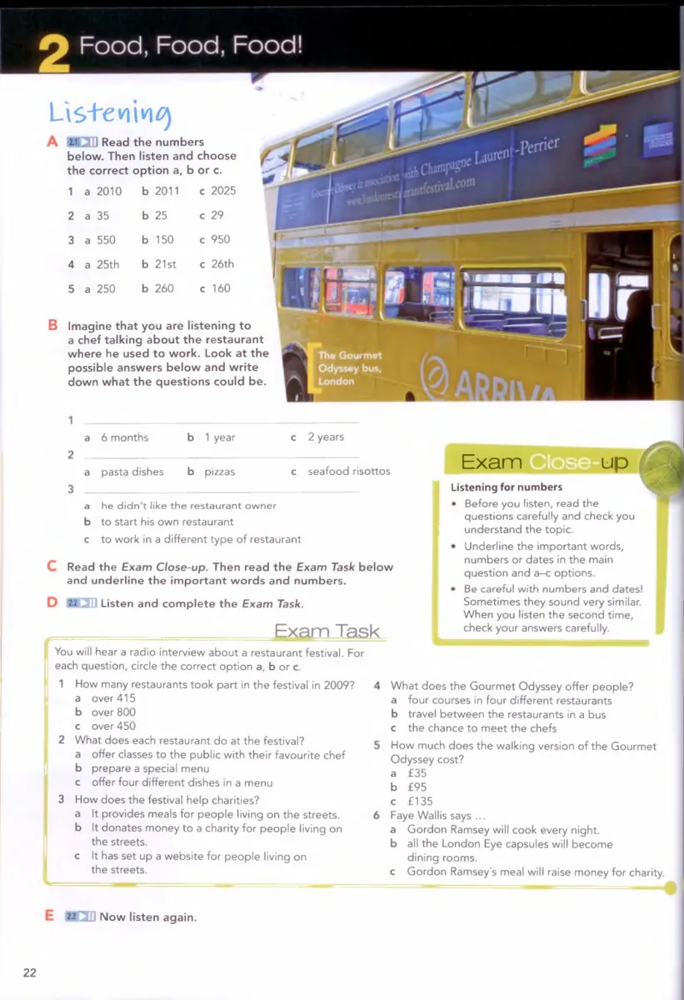
Lns+eiii v \V)
2.1 3D Read the numbers
below. Then listen and choose
the correct option a, b or c.
с2025
b2011
1
a2010
с29
b25
2
a35
с950
b150
a550
3
с26th
b21st
4
a25th
b260
с160
5
a250
В
Imagine that you are listening to
a chef talking about the restaurant
where he used to work. Look at the
possible answers below and write
down what the questions could be.
с
2 years
b
1 year
а
6 months
с
seafood risottos
b pizzas
a
pasta dishes
a
he didn't like the restaurant owner
b to start his own restaurant
с
to work in a different type of restaurant
Read the Exam Close-up. Then read the Exam Task below
and underline the important words and numbers.
2.2 3D Listen and complete the Exam Task.
____________________ Exam Task
You will hear a radio interview about a restaurant festival. For
each question, circle the correct option a, b or c.
1
How many restaurants took part in the festival in 2009?
a over 415
b over 800
с over 450
2 What does each restaurant do at the festival?
a offer classes to the public with their favourite chef
b prepare a special menu
с
offer four different dishes in a menu
3
How does the festival help charities?
a
It provides meals for people living on the streets,
b It donates money to a charity for people living on
the streets.
с It has set up a website for people living on
the streets.
2.2
3 D Now listen again.
Exam
ui
Listening for numbers
Before you listen, read the
questions carefully and check you
understand the topic.
Underline the important words,
numbers or dates in the main
question and a-с options.
Be careful with numbers and dates!
Sometimes they sound very similar.
When you listen the second time,
check your answers carefully.
What does the Gourmet Odyssey offer people?
a
four courses in four different restaurants
b travel between the restaurants in a bus
с
the chance to meet the chefs
How much does the walking version of the Gourmet
Odyssey cost?
a
£35
b £95
с
£135
Faye Wallis says ...
a
Gordon Ramsey will cook every night,
b all the London Eye capsules will become
dining rooms,
с
Gordon Ramsey's meal will raise money for charity.
22
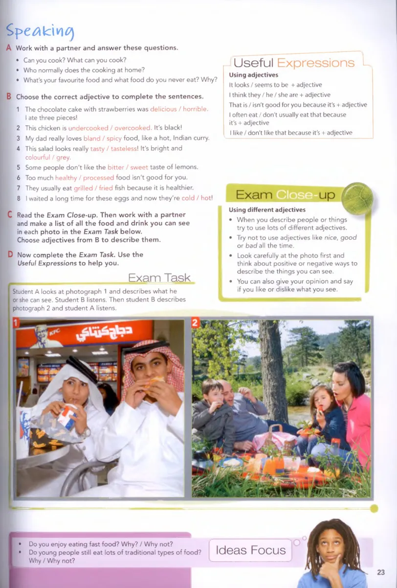
Spe^ k : iw<5)
A Work with a partner and answer these questions.
• Can you cook? What can you cook?
• Who normally does the cooking at home?
• What's your favourite food and what food do you never eat? Why?
В Choose the correct adjective to complete the sentences.
1 The chocolate cake with strawberries was delicious / horrible.
I ate three pieces!
2 This chicken is undercooked / overcooked. It's black!
3 My dad really loves bland / spicy food, like a hot, Indian curry.
4 This salad looks really tasty / tasteless! It's bright and
colourful / grey.
5 Some people don't like the bitter / sweet taste of lemons.
6 Too much healthy / processed food isn't good for you.
7 They usually eat grilled / fried fish because it is healthier.
8 I waited a long time for these eggs and now they're cold / hot!
С Read the Exam Close-up. Then work with a partner
and make a list of all the food and drink you can see
in each photo in the Exam Task below.
Choose adjectives from В to describe them.
D Now complete the Exam Task. Use the
Useful Expressions to help you.
I
Exam Task
Student A looks at photograph 1 and describes what he
or she can see. Student В listens. Then student В describes
photograph 2 and student A listens.
Useful Expressions L
Using adjectives
It looks / seems to be + adjective
I think they / he / she are + adjective
That is / isn't good for you because it's + adjective
I often eat / don't usually eat that because
it's + adjective
I like / don't like that because it's + adjective
Using different adjectives
• When you describe people or things
try to use lots of different adjectives.
• Try not to use adjectives like nice, good
or bad all the time.
• Look carefully at the photo first and
think about positive or negative ways to
describe the things you can see.
• You can also give your opinion and say
if you like or dislike what you see.
ll
•
Do you enjoy eating fast food? Why? / Why not?
•
Do young people still eat lots of traditional types of food?
Why / Why not?
Ideas Focus
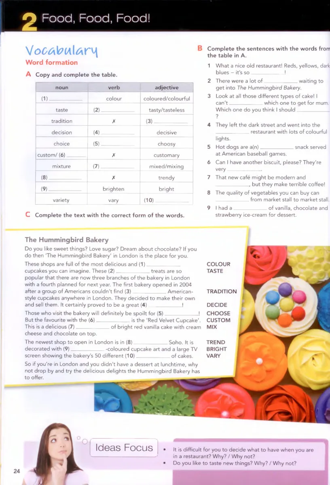
1 ^
О Food, Food, Food!
Complete the sentences with the words from
the table in A.
1
What a nice old restaurant! Reds, yellows, dark
blues - it's so _____________I
2 There were a lot o f_____________waiting to
get into The Hummingbird Bakery.
3
Look at all those different types of cake! I
can't_____________ which one to get for mum.
Which one do you think I should
_
?
4 They left the dark street and went into the
_____________ restaurant with lots of colourful
lights.
Hot dogs are a(n)_____________snack served
5
at American baseball games.
6 Can I have another biscuit, please? They're
very_____________
7 That new cafe might be modern and
___________, but they make terrible coffee!
8 The quality of vegetables you can buy can
_____________from market stall to market stall.
I had a _____________of vanilla, chocolate and
9
strawberry ice-cream for dessert.
У
са[?1л\а
г\\
о
Word formation
A Copy and complete the table.
noun
verb
adjective
colour
coloured/colourful
(1)
taste
tasty/tasteless
(2)
tradition
X
(3)
decision
decisive
(4)
choosy
choice
(5)
custom/ (6)
customary
X
mixture
mixed/mixing
(7)
(8)
X
trendy
brighten
(9)
bright
variety
vary
(10)
С Complete the text with the correct form of the words.
The Hummingbird Bakery
Do you like sweet things? Love sugar? Dream about chocolate? If you
do then 'The Hummingbird Bakery' in London is the place for you.
These shops are full of the most delicious and (1)_____________
cupcakes you can imagine. These (2)_____________ treats are so
popular that there are now three branches of the bakery in London
with a fourth planned for next year. The first bakery opened in 2004
after a group of Americans couldn't find (3)______________American-
style cupcakes anywhere in London. They decided to make their own
and sell them. It certainly proved to be a great (4)_____________ !
Those who visit the bakery will definitely be spoilt for (5)_____________ !
But the favourite with the (6)______________is the 'Red Velvet Cupcake'.
This is a delicious (7)______________of bright red vanilla cake with cream
cheese and chocolate on top.
The newest shop to open in London is in (8)______________Soho. It is
decorated with (9)______
-coloured cupcake art and a large TV
screen showing the bakery's 50 different (10)_____________of cakes.
So if you're in London and you didn't have a dessert at lunchtime, why
not drop by and try the delicious delights the Hummingbird Bakery has
to offer.
COLOUR
TASTE
TRADITION
DECIDE
CHOOSE
CUSTOM
MIX
TREND
BRIGHT
VARY
Ideas Focus
It is difficult for you to decide what to have when you are
in a restaurant? Why? / Why not?
Do you like to taste new things? Why? / Why not?
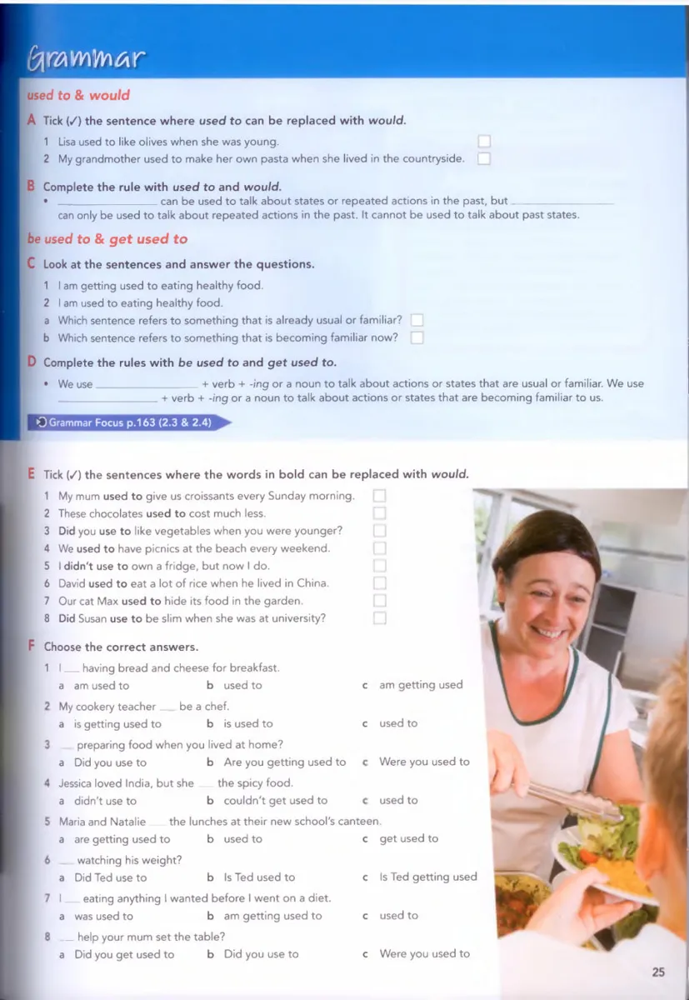
fymw\ft\ar
used to & would
A Tick (/) the sentence where used tocan be replaced with would.
1 Lisa used to like olives when she was young.
2 My grandmother used to make her own pasta when she lived in the countryside.
!
Complete the rule with used toand would.
В
can be used to talk about states or repeated actions in the past, but___________________
•
can only be used to talk about repeated actions in the past. It cannot be used to talk about past states.
be used to & get used to
СLook at the sentences and answer the questions.
1
I am getting used to eating healthy food.
2
I am used to eating healthy food.
a
Which sentence refers to something
that is
already usual or familiar? j j
b
Which sentence refers to something
that is
becoming familiar now?
D Complete the rules with be usedto and get used to.
• We use____________________ + verb + -ing or a noun to talk about actions or states that are usual or familiar. We use
___________________+ verb + -ing or a noun to talk about actions or states that are becoming familiar to us.
О Grammar Focus p.163 (2.3 & 2.4)
E
Tick (/) the sentences where the words in bold can be replaced with would.
1 My mum used to give us croissants every Sunday morning.
2 These chocolates used to cost much less.
3 Did you use to like vegetables when you were younger?
4 We used to have picnics at the beach every weekend.
5 I didn't use to own a fridge, but now I do.
6 David used to eat a lot of rice when he lived in China.
7 Our cat Max used to hide its food in the garden.
8 Did Susan use to be slim when she was at university?
Choose the correct answers.
1 I
having bread and cheese for breakfast.
b used to
a am used to
My cookery teacher _
b is used to
a is getting used to
preparing food when you lived at home?
a Did you use to
b
Are you getting used to
Jessica loved India, but she
the spicy food.
a didn't use to
b couldn't get used to
Maria and Natalie
the lunches at their new school's canteen
a
are getting used to
b used to
watching his weight?
a
Did Ted use to
b Is Ted used to
I
eating anything I wanted before I went on a diet.
a
was used to
b am getting used to
help your mum set the table?
a
Did you get used to
b Did you use to
F
с
am getting used
be a chef.
с
used to
Were you used to
used to
с
get used to
с
Is Ted getting used
с
used to
с
Were you used to
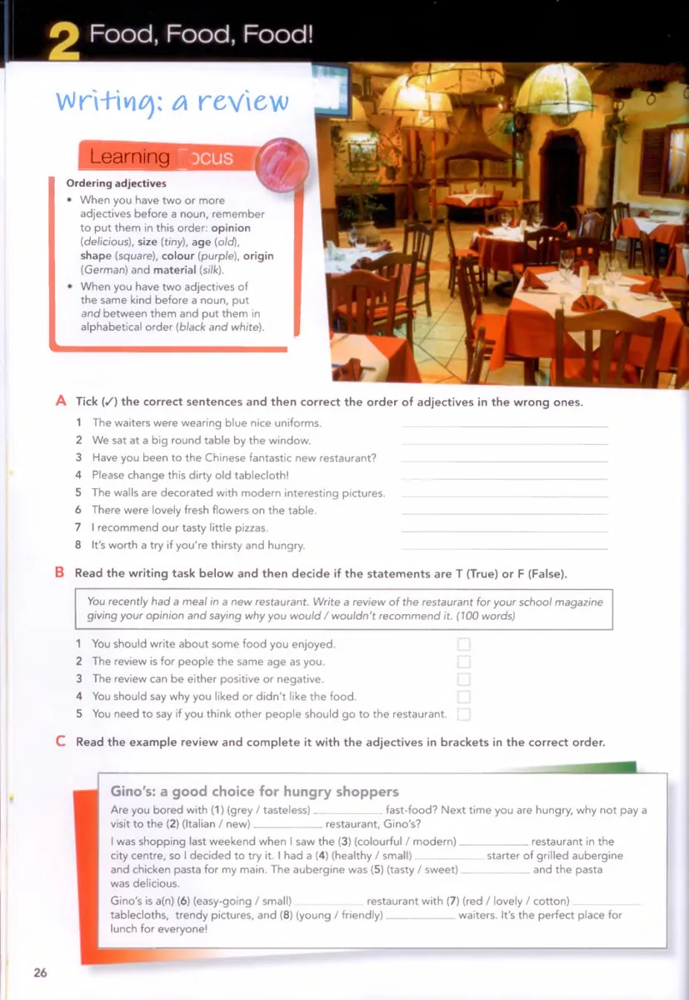
\Ain+'m<5): a review
Learning Q
Ordering adjectives
When you have two or more
adjectives before a noun, remember
to put them in this order: opinion
(delicious), size (tiny), age (old),
shape (square), colour (purple), origin
(German) and material (silk).
When you have two adjectives of
the same kind before a noun, put
and between them and put them in
alphabetical order (black and white).
A Tick (/) the correct sentences and then correct the order of adjectives in the wrong ones.
1
The waiters were wearing blue nice uniforms.
2 We sat at a big round table by the window.
3
Have you been to the Chinese fantastic new restaurant?
4 Please change this dirty old tablecloth!
5 The walls are decorated with modern interesting pictures.
6 There were lovely fresh flowers on the table.
7 I recommend our tasty little pizzas.
8 It's worth a try if you're thirsty and hungry.
В Read the writing task below and then decide if the statements are T (True) or F (False).
You recently had a meal in a new restaurant. Write a review o f the restaurant for your school magazine
giving your opinion and saying why you would / wouldn't recommend it. (100 words)
1
You should write about some food you enjoyed.
2 The review is for people the same age as you.
3 The review can be either positive or negative.
4 You should say why you liked or didn't like the food.
5 You need to say if you think other people should go to the restaurant. [
С Read the example review and complete it with the adjectives in brackets in the correct order.
Gino's: a good choice for hungry shoppers
Are you bored with (1) (grey / tasteless)
visit to the (2) (Italian / new)
restaurant, Gino's?
I was shopping last weekend when I saw the (3) (colourful / modern)
city centre, so I decided to try it. I had a (4) (healthy / smal
and chicken pasta for my main. The aubergine was (5) (tasty / sweet)
was delicious.
Gino's is a(n) (6) (easy-going / small)
tablecloths, trendy pictures, and (8) (young / friendly)
lunch for everyone!
fast-food? Next time you are hungry, why not pay a
restaurant in the
starter of grilled aubergine
and the pasta
restaurant with (7) (red / lovely / cotton)
waiters. It's the perfect place for
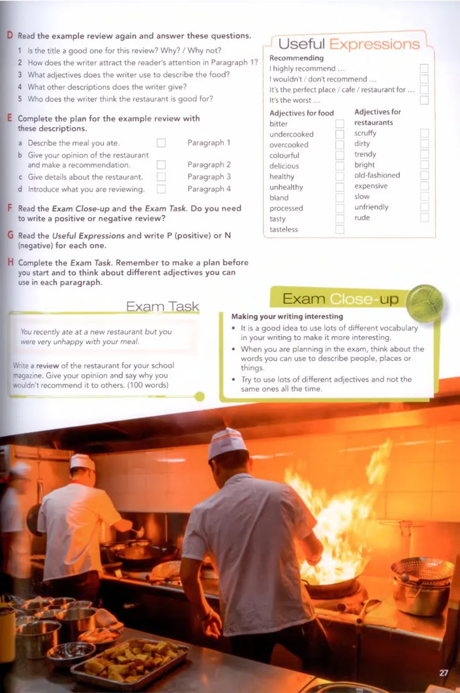
D Read the example review again and answer these questions.
1 Is the title a good one for this review? Why? / Why not?
2 How does the writer attract the reader's attention in Paragraph 1?
3 What adjectives does the writer use to describe the food?
4 What other descriptions does the writer give?
5 Who does the writer think the restaurant is good for?
E Complete the plan for the example review with
these descriptions.
Paragraph 1
a
Describe the meal you ate.
□
bGive your opinion of the restaurant
Paragraph 2
and make a recommendation.
□
Paragraph 3
сGive details about the restaurant.
□
Paragraph 4
d
Introduce what you are reviewing.
□
F Read the Exam Close-up and the Exam Task. Do you need
to write a positive or negative review?
G Read the Useful Expressions and write P (positive) or N
(negative) for each one.
H Complete the Exam Task. Remember to make a plan before
you start and to think about different adjectives you can
use in each paragraph.
Exam
Exam Task
up
Making your writing interesting
• It is a good idea to use lots of different vocabulary
in your writing to make it more interesting.
• When you are planning in the exam, think about the
words you can use to describe people, places or
things.
• Try to use lots of different adjectives and not the
same ones all the time.
Recommending
I highly recommend ...
□
I wouldn't / don't recommend ...
□
It's the perfect place / cafe / restaurant for.. • □
It's the worst..
□
Adjectives for
Adjectives for food
restaurants
bitter
□
scruffy
undercooked
□
□
dirty
overcooked
□
□
trendy
colourful
□
□
bright
delicious
□
□
old-fashioned
healthy
□
□
expensive
unhealthy
□
□
slow
bland
□
□
unfriendly
processed
□
□
rude
tasty
□
□
tasteless
□
You recently ate at a new restaurant but you
were very unhappy with your meal.
Write a review of the restaurant for your school
magazine. Give your opinion and say why you
wouldn't recommend it to others. (100 words)
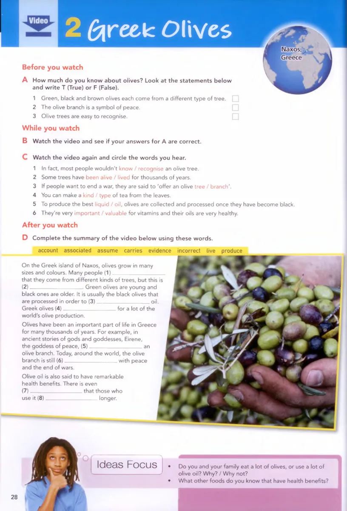
2 fyretk Olives
Before you watch
A How much do you know about olives? Look at the statements below
and write T (True) or F (False).
1
Green, black and brown olives each come from a different type of tree.
2 The olive branch is a symbol of peace.
3 Olive trees are easy to recognise.
While you watch
В Watch the video and see if your answers for A are correct.
Watch the video again and circle the words you hear.
1
In fact, most people wouldn't know / recognise an olive tree.
2 Some trees have been alive / lived for thousands of years.
3 If people want to end a war, they are said to 'offer an olive tree / branch'.
4 You can make a kind / type of tea from the leaves.
5 To produce the best liquid / oil, olives are collected and processed once they have become black.
6 They're very important / valuable for vitamins and their oils are very healthy.
After you watch
D Complete the summary of the video below using these words.
account
associated
assume
carries
evidence
incorrect
live
produce
On the Greek island of Naxos, olives grow in many
sizes and colours. Many people (1)___________________
that they come from different kinds of trees, but this is
(2)
Green olives are young and
black ones are older. It is usually the black olives that
are processed in order to (3)____________________oil.
Greek olives (4)
for a lot of the
world's olive production.
Olives have been an important part of life in Greece
for many thousands of years. For example, in
ancient stories of gods and goddesses, Eirene,
the goddess of peace, (5)____________________an
olive branch. Today, around the world, the olive
branch is still (6)____________________ with peace
and the end of wars.
Olive oil is also said to have remarkable
health benefits. There is even
(7)____________________that those who
use it (8)____________________ longer.
Ideas Focus
•
Do you and your family eat a lot of olives, or use a lot of
olive oil? Why? / Why not?
•
What other foods do you know that have health benefits?
28
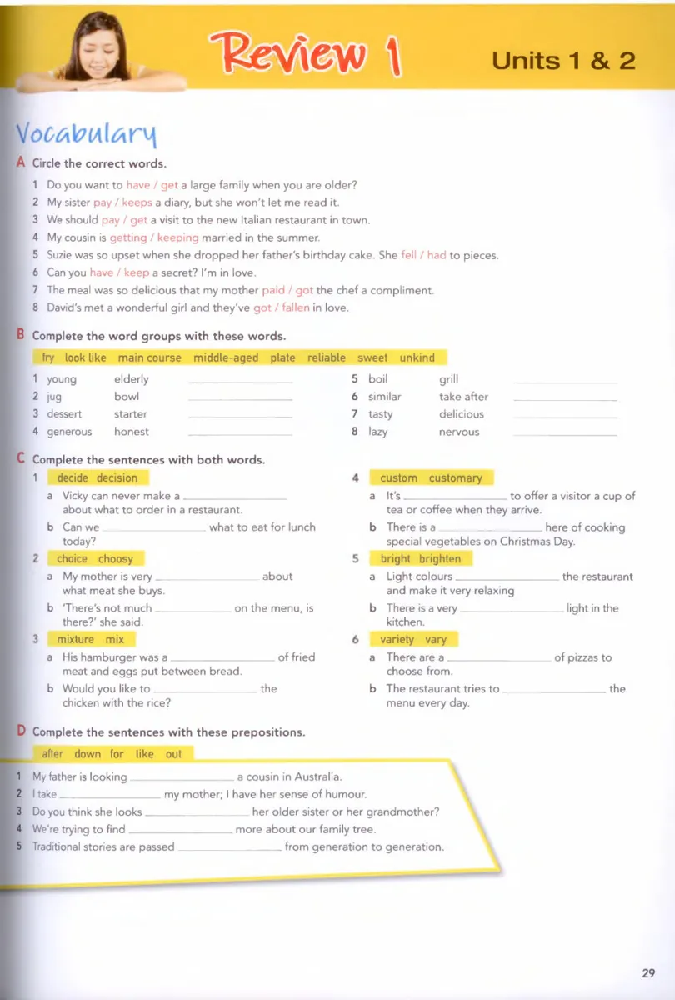
'Review \
Units 1 & 2
A Circle the correct words.
1 Do you want to have / get a large family when you are older?
2
My sister pay / keeps a diary, but she won't let me read it.
3
We should pay / get a visit to the new Italian restaurant in town.
4
My cousin is getting / keeping married in the summer.
5
Suzie was so upset when she dropped her father's birthday cake. She fell / had to pieces.
Can you have / keep a secret? I'm in love.
6
7
The meal was so delicious that my mother paid / got the chef a compliment.
8 David's met a wonderful girl and they've got / fallen in love.
В Complete the word groups with these words.
fry look like
main course
middle-aged
plate
reliable
sweet
unkind
1
young
elderly
____________________
5 boil
2 jug
bowl
____________________
6 similar
____________________
3 dessert
starter
7 tasty
4 generous
honest
____________________
8 lazy
С Complete the sentences with both words.
1
decide decision
custom
customary
a Vicky can never make a ____
a
It's________________
to offer a visitor a cup of
about what to order in a restaurant.
tea or coffee when they arrive,
b Can w e____________________ what to eat for lunch
b There is a
here of cooking
today?
special vegetables on Christmas Day.
choice
choosy
bright brighten
a My mother is very____________________about
a
Light colours
the restaurant
and make it very relaxing
what meat she buys.
b There is a very_____________
b 'There's not much
on the menu, is
there?' she said,
light in the
kitchen.
mixture
mix
variety vary
There are a _______________
a
a His hamburger was a ____________________of fried
meat and eggs put between bread.
choose from,
b Would you like to ____________________ the
b The restaurant tries to
chicken with the rice?
menu every day.
D Complete the sentences with these prepositions,
after down for
like
out
|1
My father is looking
2
I take
3
Do you think she looks
4 We're trying to find
5 Traditional stories are passed
grill
take after
delicious
nervous
of pizzas to
the
a cousin in Australia.
my mother; I have her sense of humour.
_________________her older sister or her grandmother?
more about our family tree.
________________from generation to generation.
29
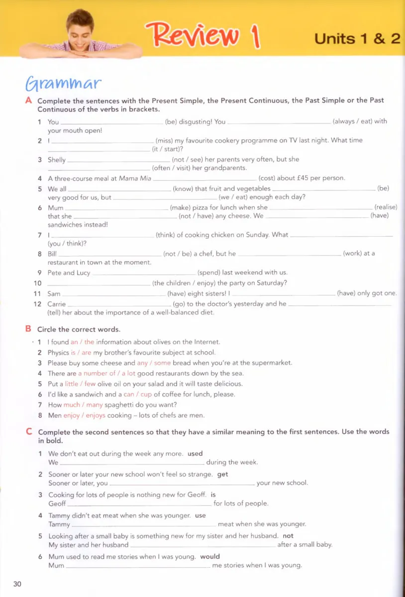
^\т
ш
ь(лг
A Complete the sentences with the Present Simple, the Present Continuous, the Past Simple or the Past
Continuous of the verbs in brackets.
You_________________________________(be) disgusting! You
1
(always / eat) with
your mouth open!
2 I
(miss) my favourite cookery programme on TV last night. What time
(it / start)?
3 Shelly_________________________________ (not / see) her parents very often, but she
________________________________(often / visit) her grandparents.
4 A three-course meal at Mama M ia __________________________________(cost) about £45 per person.
5 We all_________________________________(know) that fruit and vegetables------------------------------(be)
very good for us, but__________________________________(we / eat) enough each day?
6 Mum_________________________________(make) pizza for lunch when she__________________________________(realise)
that she_________________________________(not / have) any cheese. We __________________________________(have)
sandwiches instead!
7 I _______________________________ (think) of cooking chicken on Sunday. W hat-----------------------------
(you / think)?
Bill_________________________________(not / be) a chef, but h e__________________________________ (work) at a
8
restaurant in town at the moment.
9 Pete and Lucy
(spend) last weekend with us.
10 _________________________________(the children / enjoy) the party on Saturday?
Sam_________________________________(have) eight sisters!_I __________________________________ (have) only got one.
11
12 Carrie_________________________________(go) to the doctor's yesterday and he----------------------------
(tell) her about the importance of a well-balanced diet.
В Circle the correct words.
• 1
I found an / the information about olives on the Internet.
2 Physics is / are my brother's favourite subject at school.
3 Please buy some cheese and any / some bread when you're at the supermarket.
4 There are a number of / a lot good restaurants down by the sea.
5 Put a little / few olive oil on your salad and it will taste delicious.
6 I'd like a sandwich and a can / cup of coffee for lunch, please.
7
How much / many spaghetti do you want?
8 Men enjoy / enjoys cooking - lots of chefs are men.
С Complete the second sentences so that they have a similar meaning to the first sentences. Use the words
in bold.
1
We don't eat out during the week any more, used
W e _______________________________________________during the week.
2 Sooner or later your new school won't feel so strange, get
Sooner or later, you______________________________________________your new school.
3 Cooking for lots of people is nothing new for Geoff, is
Geoff_______________________________________________for lots of people.
4 Tammy didn't eat meat when she was younger, use
Tammy_______________________________________________meat when she was younger.
5
Looking after a small baby is something new for my sister and her husband, not
My sister and her husband
after a small baby.
6
Mum used to read me stories when I was young, would
Mum
me stories when I was young.
30
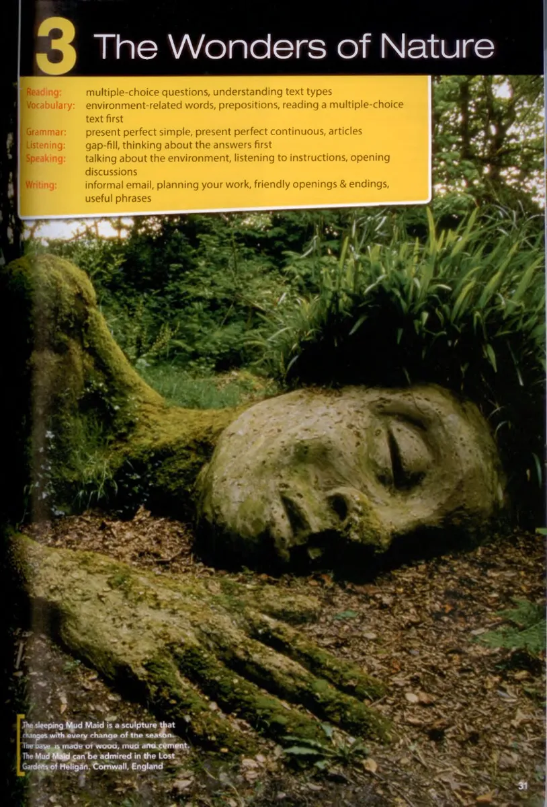
The W onders of Nature
multiple-choice questions, understanding text types
Vocabulary:
environment-related words, prepositions, reading a multiple-choice
text first
Grammar:
present perfect simple, present perfect continuous, articles
Listening:
gap-fill, thinking about the answers first
talking about the environment, listening to instructions, opening
discussions
informal email, planning your work, friendly openings & endings,
_____
useful phrases
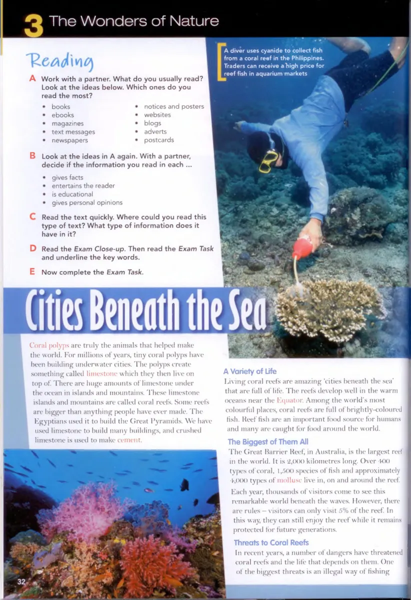
The W onders of Nature
A diver uses cyanide to collect fish
from a coral reef in the Philippines.
Traders can receive a "high price for
reef fish in aquarium markets
A Work with a partner. W hat do you usually read?
Look at the ideas below. Which ones do you
read the most?
notices and posters
websites
blogs
adverts
postcards
books
ebooks
magazines
text messages
newspapers
В Look at the ideas in A again. With a partner,
decide if the information you read in each ...
gives facts
entertains the reader
is educational
gives personal opinions
Read the text quickly. Where could you read this
type of text? W hat type of information does it
have in it?
D Read the Exam Close-up. Then read the Exam Task
and underline the key words.
E Now complete the Exam Task.
' '- 'Vf &
Coral polyps are truly the animals that helped make
the world. For millions of years, tiny coral polyps have
been building underwater cities. The polyps create
something called limestone which they then live on
top of. There are huge amounts of limestone under
the ocean in islands and mountains. These limestone
islands and mountains are called coral reefs. Some reefs
are bigger than anything people have ever made. 'The
!
Egyptians used it to build the Great Pyramids. We have
used limestone to build many buildings, and crushed
i limestone is used to make cement.
A Variety of Life
Living coral reefs are amazing ‘cities beneath the sea’
that are full of life. The reefs develop well in the warm
oceans near the Equator. Among the world’s most
colourful places, coral reefs are full of brightly-coloured
fish. Reef fish are an important food source for humans
and many are caught for food around the world.
The Biggest of Them All
The Great Barrier Reef, in Australia, is the largest reef
in the world. It is 2,000 kilometres long. Over 400
types of coral, 1,500 species of fish and approximately
4,000 types of mollusc live in, on and around the reef.
Each year, thousands of visitors come to see this
remarkable world beneath the waves. However, there
are rules - visitors can only visit 5% of the reef. In
this way, they can still enjoy the reef while it remains
protected for future generations.
Threats to Coral Reefs
In recent years, a number of dangers have threatened
coral reefs and the life that depends on them. One
of the biggest threats is an illegal way of fishing
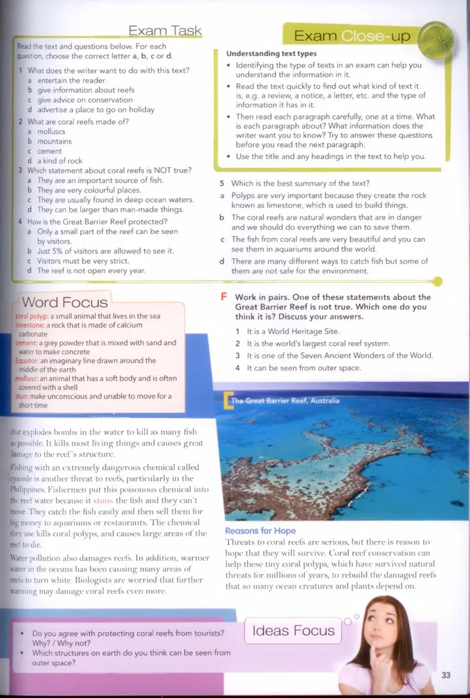
Exam Task
Read the text and questions below. For each
question, choose the correct letter a, b, с or d.
1 What does the writer want to do with this text?
a entertain the reader
b give information about reefs
с give advice on conservation
d advertise a place to go on holiday
2 What are coral reefs made of?
a molluscs
b mountains
с cement
d a kind of rock
3 Which statement about coral reefs is NOT true?
a They are an important source of fish.
b They are very colourful places,
с They are usually found in deep ocean waters,
d They can be larger than man-made things.
4 How is the Great Barrier Reef protected?
a Only a small part of the reef can be seen
by visitors.
b Just 5% of visitors are allowed to see it.
с Visitors must be very strict,
d The reef is not open every year.
Exam
и
Understanding text types
• Identifying the type of texts in an exam can help you
understand the information in it.
• Read the text quickly to find out what kind of text it
is, e.g. a review, a notice, a letter, etc. and the type of
information it has in it.
• Then read each paragraph carefully, one at a time. What
is each paragraph about? What information does the
writer want you to know? Try to answer these questions
before you read the next paragraph.
• Use the title and any headings in the text to help you.
5 Which is the best summary of the text?
a
Polyps are very important because they create the rock
known as limestone, which is used to build things,
b The coral reefs are natural wonders that are in danger
and we should do everything we can to save them,
с The fish from coral reefs are very beautiful and you can
see them in aquariums around the world,
d There are many different ways to catch fish but some of
them are not safe for the environment.
Work in pairs. One of these statements about the
Great Barrier Reef is not true. Which one do you
think it is? Discuss your answers.
1
It is a World Heritage Site.
2 It is the world's largest coral reef system.
3
It is one of the Seven Ancient Wonders of the World.
4 It can be seen from outer space.
Word Focus
coral polyp: a small animal that lives in the sea
limestone: a rock that is made of calcium
carbonate
cement: a grey powder that is mixed with sand and
water to make concrete
Equator: an imaginary line drawn around the
middle of the earth
mollusc: an animal that has a soft body and is often
covered with a shell
stun: make unconscious and unable to move for a
short time
that explodes bombs in the water to kill as many fish
as possible. It kills most living tilings and causes great
■damage to the reef’s structure.
Fishing with an extremely dangerous chemical called
[cyanide is another threat to reefs, particularly in the
Philippines. Fishermen put this poisonous chemical into
the reef water because it stuns the fish and they can’t
move. They catch the fish easily and then sell them for
big money to aquariums or restaurants. The chemical
they use kills coral polyps, and causes large areas of the
| reef to die.
Water pollution also damages reefs. In addition, warmer
water in the oceans has been causing many areas of
j reefs to turn white. Biologists are worried that further
warming may damage coral reefs even more.
Reasons for Hope
Threats to coral reefs are serious, but there is reason to
hope that they will survive. Coral reef conservation can
help these tiny coral polyps, which have survived natural
threats for millions of years, to rebuild the damaged reefs
that so many ocean creatures and plants depend on.
Ideas Focus
Do you agree with protecting coral reefs from tourists?
Why? / Why not?
Which structures on earth do you think can be seen from
outer space?
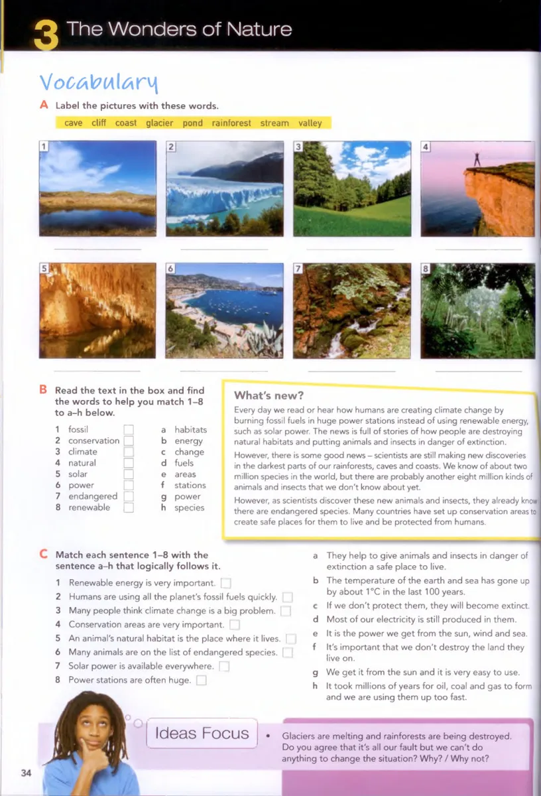
^ The W onders of Nature
\/обйЬи1лгч
A Label the pictures with these words.
cave
cliff
coast
glacier
pond
rainforest
stream
valley
В
Read the text in the box and find
the words to help you match 1-8
to a-h below.
1
fossil
a
habitats
□
2
conservation□
b
energy
3
climate
с
change
4
natural
d
fuels
□
solar
5
e
areas
□
6
power
f
stations
□
7
endangered
power
□
9
8
renewable
h
species
□
What's new?
Every day we read or hear how humans are creating climate change by
burning fossil fuels in huge power stations instead of using renewable energy, I
such as solar power. The news is full of stories of how people are destroying
natural habitats and putting animals and insects in danger of extinction.
However, there is some good news - scientists are still making new discoveries
in the darkest parts of our rainforests, caves and coasts. We know of about two
million species in the world, but there are probably another eight million kinds of I
animals and insects that we don't know about yet.
However, as scientists discover these new animals and insects, they already know I
there are endangered species. Many countries have set up conservation areas to I
create safe places for them to live and be protected from humans.
Match each sentence 1-8 with the
sentence a-h that logically follows it.
1
Renewable energy is very important. [_
2 Humans are using all the planet's fossil fuels quickly.
3 Many people think climate change is a big problem. |
4 Conservation areas are very important, f
5 An animal's natural habitat is the place where it lives. (
6 Many animals are on the list of endangered species. |
7 Solar power is available everywhere, f
8
Power stations are often huge.
a
b
They help to give animals and insects in danger of
extinction a safe place to live.
The temperature of the earth and sea has gone up
by about 1°C in the last 100 years.
If we don't protect them, they will become extinct.
Most of our electricity is still produced in them.
It is the power we get from the sun, wind and sea.
It's important that we don't destroy the land they
live on.
We get it from the sun and it is very easy to use.
It took millions of years for oil, coal and gas to form
and we are using them up too fast.
d
e
f
g
h
Ideas Focus
•
Glaciers are melting and rainforests are being destroyed.
Do you agree that it's all our fault but we can't do
anything to change the situation? Why? / Why not?
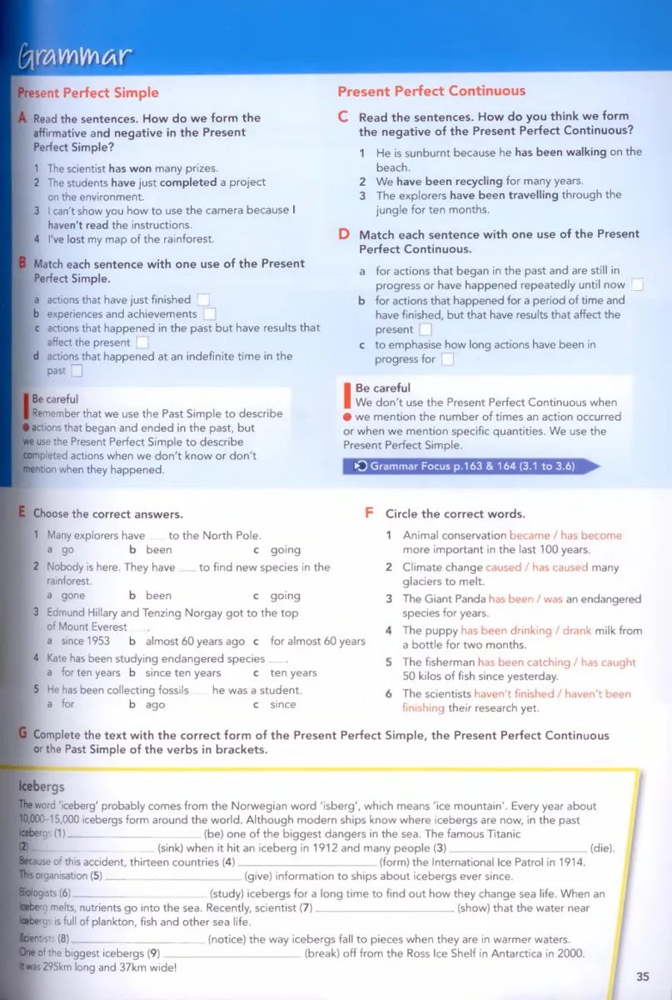
(Я т) Ш\( лУ
Present Perfect Continuous
Present Perfect Simple
С Read the sentences. How do you think we form
Read the sentences. How do we form the
affirmative and negative in the Present
Perfect Simple?
the negative of the Present Perfect Continuous?
1
He is sunburnt because he has been walking on the
beach.
2 We have been recycling for many years.
3 The explorers have been travelling through the
jungle for ten months.
1 The scientist has won many prizes.
2 The students have just completed a project
on the environment.
3 I can't show you how to use the camera because I
haven't read the instructions.
4 I've lost my map of the rainforest.
D Match each sentence with one use of the Present
Perfect Continuous.
Match each sentence with one use of the Present
Perfect Simple.
a for actions that began in the past and are still in
progress or have happened repeatedly until now [7]
b for actions that happened for a period of time and
a actions that have just finished [ |
b experiences and achievements [
have finished, but that have results that affect the
present
с to emphasise how long actions have been in
с actions that happened in the past but have results that
affect the present [ 1
d actions that happened at an indefinite time in the
progress for ( |
past □
I
Be careful
Be careful
| Remember that we use the Past Simple to describe
• actions that began and ended in the past, but
we use the Present Perfect Simple to describe
completed actions when we don't know or don't
mention when they happened.
We don't use the Present Perfect Continuous when
• we mention the number of times an action occurred
or when we mention specific quantities. We use the
Present Perfect Simple.
О Grammar Focus p.163 & 164 (3.1 to 3.6)
E Choose the correct answers.
F
Circle the correct words.
1
Many explorers have
to the North Pole.
a go
b been
с going
1
Animal conservation became / has become
more important in the last 100 years.
2 Nobody is here. They have
to find new species in the
rainforest.
a gone
b been
с going
2 Climate change caused / has caused many
glaciers to melt.
3 The Giant Panda has been / was an endangered
species for years.
3 Edmund Hillary and Tenzing Norgay got to the top
of Mount Everest___
a since 1953
b almost 60 years ago с
for almost 60 years
The puppy has been drinking / drank milk from
a bottle for two months.
4 Kate has been studying endangered species___
a for ten years b since ten years
с ten years
The fisherman has been catching / has caught
50 kilos offish since yesterday.
5 He has been collecting fossils
he was a student.
a for
b ago
с since
The scientists haven't finished / haven't been
finishing their research yet.
G Complete the text with the correct form of the Present Perfect Simple, the Present Perfect Continuous
or the Past Simple of the verbs in brackets.
Icebergs
The word 'iceberg' probably comes from the Norwegian word 'isberg', which means 'ice mountain'. Every year about
10,000-15,000 icebergs form around the world. Although modern ships know where icebergs are now, in the past
icebergs (1)__________________________(be) one of the biggest dangers in the sea. The famous Titanic
(sink) when it hit an iceberg in 1912 and many people (3)___________________________(die).
(2)—
Because of this accident, thirteen countries (4)
______________________(form) the International Ice Patrol in 1914.
This organisation (5)_________________________
(give) information to ships about icebergs ever since.
Biologists (6)
(study) icebergs for a long time to find out how they change sea life. When an
iceberg melts, nutrients go into the sea. Recently, scientist (7)
(show) that the water near
icebergs is full of plankton, fish and other sea life.
Scientists (8)
(notice) the way icebergs fall to pieces when they are in warmer waters.
One of the biggest icebergs (9)___________________________ (break) off from the Ross Ice Shelf in Antarctica in 2000.
It was 295km long and 37km wide!
35
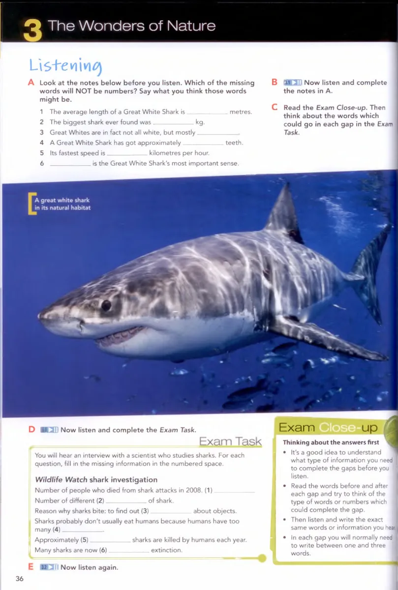
О The W onders of Nature
Us+eni
A Look at the notes below before you listen. Which of the missing
words will NOT be numbers? Say what you think those words
might be.
The average length of a Great White Shark is_____________ metres.
1
2 The biggest shark ever found was______________kg.
3 Great Whites are in fact not all white, but mostly
4 A Great White Shark has got approximately_____________ teeth.
Its fastest speed is_____________kilometres per hour.
5
6
is the Great White Shark's most important sense.
В ТП1 Now listen and complete
the notes in A.
С Read the Exam Close-up. Then
think about the words which
could go in each gap in the Exam
Task.
Exam
Thinking about the answers first
• It's a good idea to understand
what type of information you need
to complete the gaps before you
listen.
• Read the words before and after
each gap and try to think of the
type of words or numbers which
could complete the gap.
• Then listen and write the exact
same words or information you hear.
• In each gap you will normally need
to write between one and three
words.
D К Э 1) Now listen and complete the Exam Task.
You will hear an interview with a scientist who studies sharks. For each
question, fill in the missing information in the numbered space.
Wild life W atch shark investigation
Number of people who died from shark attacks in 2008. (1) _
Number of different (2)
of shark.
Reason why sharks bite: to find out (3)
about objects.
Sharks probably don't usually eat humans because humans have too
many (4)_____________
Approximately (5)___
sharks are killed by humans each year.
Many sharks are now (6)_____________extinction.
3.2l3ll Now listen again.
36
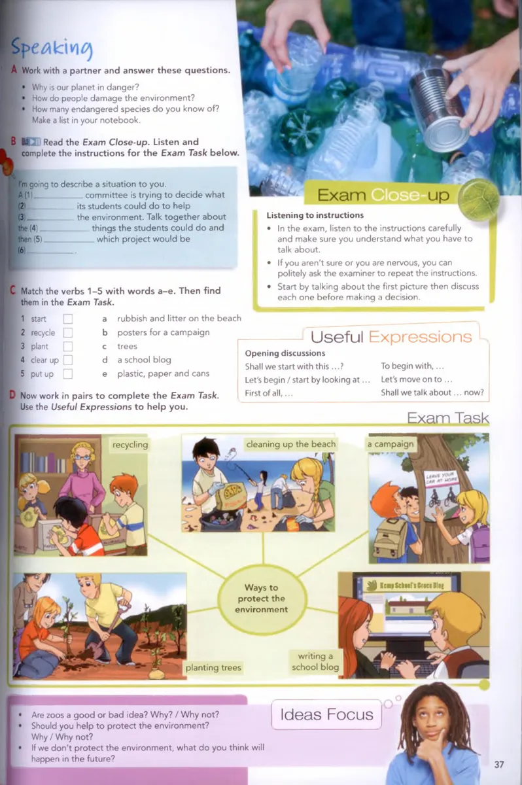
I A Work with a partner and answer these questions.
Why is our planet in danger?
How do people damage the environment?
How many endangered species do you know of?
Make a list in your notebook.
В Uffl Read the Exam Close-up. Listen and
complete the instructions for the Exam Task below.
I'm going to describe a situation to you.
A (11____________ committee is trying to decide what
( l l _
its students could do to help
(3)
. the environment. Talk together about
the (4) _
. _ things the students could do and
then (5)
which project would be
(II____
Listening to instructions
• In the exam, listen to the instructions carefully
and make sure you understand what you have to
talk about.
• If you aren't sure or you are nervous, you can
politely ask the examiner to repeat the instructions.
• Start by talking about the first picture then discuss
each one before making a decision.
Match the verbs 1-5 with words a-e. Then find
them in the Exam Task.
rubbish and litter on the beach
1 start
a
□
posters for a campaign
2 recycle
b
□
trees
3 plant
с
□
4 clear up□
d
a school blog
plastic, paper and cans
e
5 put up
□
Now workin pairs to complete the Exam Task.
Use the Useful Expressions to help you.
Useful Expressions
To begin with,...
Let's move on to ...
Shall we talk about... now?
Exam Task
1
Opening discussions
Shall we start with this...?
Let's begin / start by looking a t...
First of all,...
a campai
cleaning up the beach
recycling
r
jQ Kemp Scheol s Crecfl Bl>g
Ways to
protect the
environment
writing a
school blog
slanting trees
Ideas Focus
Are zoos a good or bad idea? Why? / Why not?
Should you help to protect the environment?
Why / Why not?
If we don't protect the environment, what do you think will
happen in the future?
37
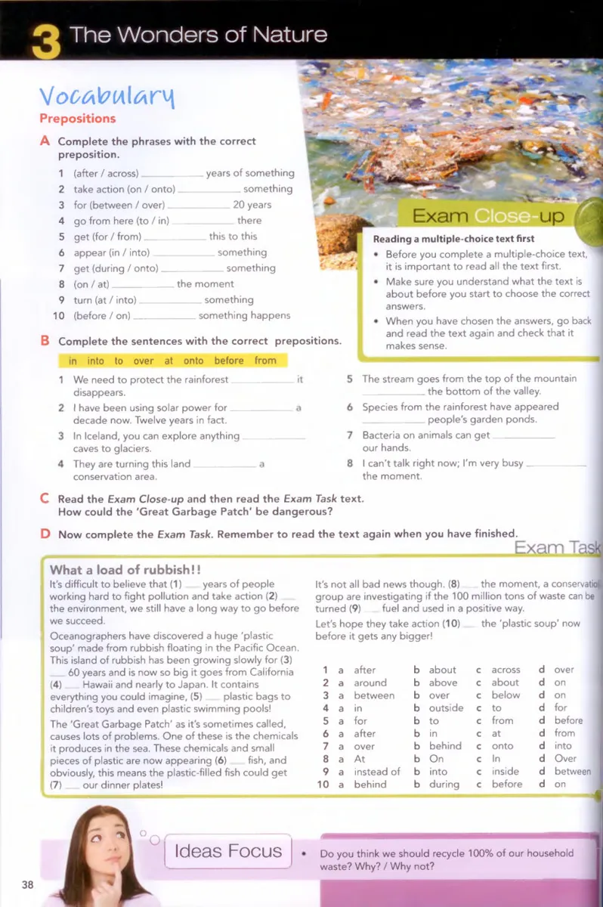
The W onders of Nature
\l oCA\? и1лгц
Prepositions
A
Complete the phrases with the correct
preposition.
(after / across)_____________years of something
1
take action (on / onto)_____________something
2
20 years
for (between / over)
3
there
4
go from here (to / in)
this to this
5
get (for / from) _
something
appear (in / into)
6
f '
_ something
get (during / onto)
7
the moment
(on / at)__________
8
something
9
turn (at / into)
something happens
(before / on) _
10
В
Complete the sentences with the correct prepositions,
into
to
over
at
onto
before
from
in
We need to protect the rainforest
1
disappears.
I have been using solar power for
decade now. Twelve years in fact.
In Iceland, you can explore anything
caves to glaciers.
They are turning this land
conservation area.
С Read the Exam Close-up and then read the Exam Task text.
How could the 'Great Garbage Patch' be dangerous?
D Now complete the Exam Task. Remember to read the text again when you have finished.
Reading a multiple-choice text first
Before you complete a multiple-choice text,
it is important to read all the text first.
Make sure you understand what the text is
about before you start to choose the correct
answers.
When you have chosen the answers, go back
and read the text again and check that it
makes sense.
The stream goes from the top of the mountain
_____________the bottom of the valley.
Species from the rainforest have appeared
people's garden ponds.
Bacteria on animals can get
our hands.
I can't talk right now; I'm very busy
the moment.
What a load of rubbish!!
It's difficult to believe that (1)
years of people
working hard to fight pollution and take action (2)
the environment, we still have a long way to go before
we succeed.
Oceanographers have discovered a huge 'plastic
soup' made from rubbish floating in the Pacific Ocean.
This island of rubbish has been growing slowly for (3)
60 years and is now so big it goes from California
(4)
Hawaii and nearly to Japan. It contains
everything you could imagine, (5)
plastic bags to
children's toys and even plastic swimming pools!
The 'Great Garbage Patch' as it's sometimes called,
causes lots of problems. One of these is the chemicals
it produces in the sea. These chemicals and small
pieces of plastic are now appearing (6)
fish, and
obviously, this means the plastic-filled fish could get
(7)
our dinner plates!
It's not all bad news though. ( 8)
the moment, a conservation
group are investigating if the 100 million tons of waste can be
turned (9)
fuel and used in a positive way.
Let's hope they take action (10)
_ the 'plastic soup' now
before it gets any bigger!
d
over
с
across
after
b
about
1
a
on
с
about
d
b
above
2
a
around
below
d
on
over
с
a
between
b
3
d
for
outside
с
to
4
in
b
a
d
с
from
before
b
to
5
a
for
on ;
d
from
с
at
after
b
in
6
a
onto
d
into
b
behind
с
7
a
over
Over
In
d
b
On
с
8
a
At
d
b
с
inside
between
9
instead of
into
a
d
b
during
с
before
10
a
behind
m
our household
Do you think we should recycle 100% of
waste? Why? / Why not?
Л ° o
\o
Ideas Focus
38
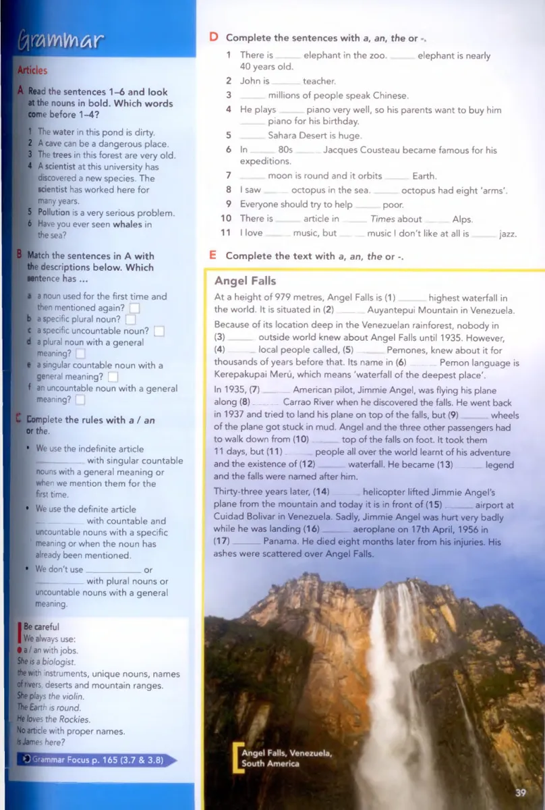
D Complete the sentences with a, an, the or
\тШ
\(лг
There is_____elephant in the zoo
1
elephant is nearly
40 years old.
Articles
2 John is______teacher.
A Read the sentences 1-6 and look
3
millions of people speak Chinese.
at the nouns in bold. Which words
come before 1 -4?
4
He plays
piano very well, so his parents want to buy him
piano for his birthday.
1 The water in this pond is dirty.
2 A cave can be a dangerous place.
3 The trees in this forest are very old.
4 A scientist at this university has
■ discovered a new species. The
5
Sahara Desert is huge.
6
In
80s
Jacques Cousteau became famous for his
expeditions.
7
moon is round and it orbits
Earth.
scientist has worked here for
I many years.
5 Pollution is a very serious problem.
6 Have you ever seen whales in
I the sea?
8
I saw
octopus in the sea
octopus had eight 'arms'
9
Everyone should try to help
poor.
10 There is
article in
Times about
Alps.
11
I love _
— music, but
music I don't like at all is
В Match the sentences in A with
E
Complete the text with a, an, the or -.
the descriptions below. Which
entence has ...
*
Angel Falls
a noun used for the first time and
then mentioned again? '
a specific plural noun? (
a specific uncountable noun? (
a plural noun with a general
meaning?
a singular countable noun with a
general meaning? [_
an uncountable noun with a general
meaning? J
At a height of 979 metres, Angel Falls is (1)
highest waterfall in
the world. It is situated in (2)
Auyantepui Mountain in Venezuela.
Because of its location deep in the Venezuelan rainforest, nobody in
(3 ) -----outside world knew about Angel Falls until 1935. However,
(4 ) -----local people called, (5)
Pemones, knew about it for
thousands of years before that. Its name in (6)
Pemon language is
Kerepakupai Meru, which means 'waterfall of the deepest place'.
f
In 1935, (7)
American pilot, Jimmie Angel, was flying his plane
along (8)
Carrao River when he discovered the falls. He went back
in 1937 and tried to land his plane on top of the falls, but (9)
wheels
of the plane got stuck in mud. Angel and the three other passengers had
to walk down from (10)
top of the falls on foot. It took them
11 days, but (11)
people all over the world learnt of his adventure
and the existence of (12)
waterfall. He became (13)
legend
and the falls were named after him.
: с»,
implete the rules with a / an
or the.
• We use the indefinite article
H-------
with singular countable
I nouns with a general meaning or
I when we mention them for the
I first time.
Thirty-three years later, (14)
helicopter lifted Jimmie Angel's
plane from the mountain and today it is in front of (15)
airport at
Cuidad Bolivar in Venezuela. Sadly, Jimmie Angel was hurt very badly
while he was landing (16)
aeroplane on 17th April, 1956 in
(17)
Panama. He died eight months later from his injuries. His
ashes were scattered over Angel Falls.
• We use the definite article
H--------- with countable and
!
uncountable nouns with a specific
I meaning or when the noun has
already been mentioned.
• We don't use_____________or
--------- with plural nouns or
I uncountable nouns with a general
I meaning.
I
Be careful
We always use:
• a/an with jobs.
She is a biologist.
the with instruments, unique nouns, names
of rivers, deserts and mountain ranges.
She plays the violin.
The Earth is round.
He loves the Rockies.
No article with proper names.
Is James here?
) Grammar Focus p. 165 (3.7 & 3.8)
jazz.
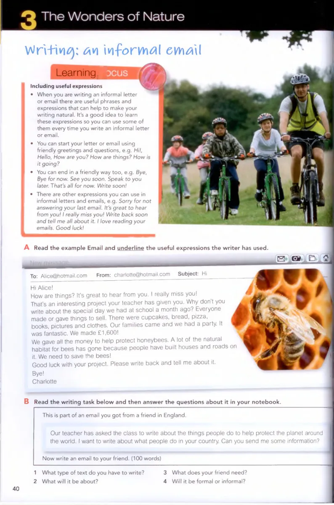
WrHivitf): м informal email
Learning^
Including useful expressions
• When you are writing an informal letter
or email there are useful phrases and
expressions that can help to make your
writing natural. It's a good idea to learn
these expressions so you can use some of
them every time you write an informal letter
or email.
• You can start your letter or email using
friendly greetings and questions, e.g. HU,
Hello, How are you? How are things? How is
it going?
• You can end in a friendly way too, e.g. Bye,
Bye for now. See you soon. Speak to you
later. That's all for now. Write soon!
• There are other expressions you can use in
informal letters and emails, e.g. Sorry for not
answering your last email. It's great to hear
from you! I really miss you! Write back soon
and tell me all about it. I love reading your
emails. Good luck!
A Read the example Email and underline the useful expressions the writer has used.
г
..
To: Alice@hotmail.com
From: charlotte@hotmail.com
Subject. Hi
Hi Alice!
How are things? It’s great to hear from you. I really miss you!
That’s an interesting project your teacher has given you. Why don’t you
write about the special day we had at school a month ago? Everyone
made or gave things to sell. There were cupcakes, bread, pizza,
books, pictures and clothes. Our families came and we had a party. It
was fantastic. We made £1,600!
We gave all the money to help protect honeybees. A lot of the natural
habitat for bees has gone because people have built houses and roads
it. We need to save the bees!
Good luck with your project. Please write back and tell me about it.
Bye!
Charlotte
В Read the writing task below and then answer the questions about it in your notebook.
This is part of an email you got from a friend in England.
Our teacher has asked the class to write about the things people do to help protect the planet around
the world. I want to write about what people do in your country. Can you send me some information?
Now write an email to your friend. (100 words)
3 What does your friend need?
1
What type of text do you have to write?
4 Will it be formal or informal?
40
2 What will it be about?
🔗🔗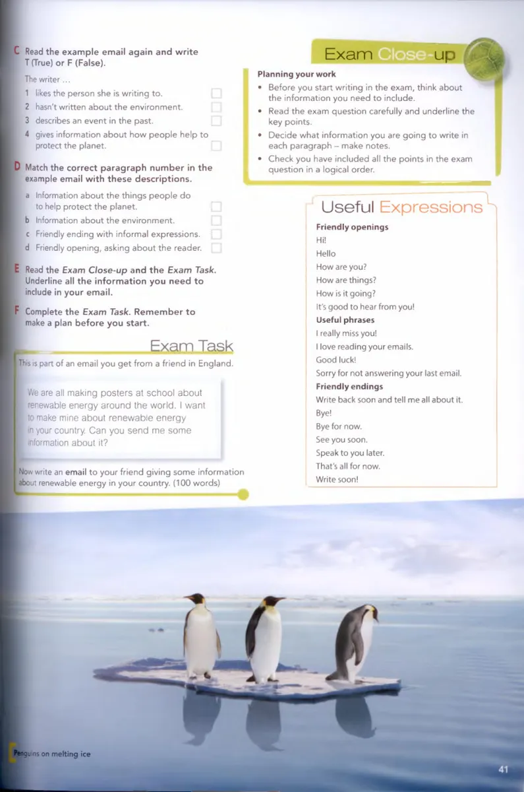
С Read the example email again and write
T (True) or F (False).
I The writer...
1 likes the person she is writing to.
2 hasn't written about the environment.
3 describes an event in the past.
4 gives information about how people help to
protect the planet.
|D Match the correct paragraph number in the
example email with these descriptions.
a Information about the things people do
to help protect the planet,
b Information about the environment.
| с Friendly ending with informal expressions,
d Friendly opening, asking about the reader.
E Read the Exam Close-up and the Exam Task.
Underline all the information you need to
include in your email.
JF Complete the Exam Task. Remember to
make a plan before you start.
[
Exam Task
This is part of an email you get from a friend in England.
Exam
up
Planning your work
• Before you start writing in the exam, think about
the information you need to include.
• Read the exam question carefully and underline the
key points.
• Decide what information you are going to write in
each paragraph - make notes.
• Check you have included all the points in the exam
question in a logical order.
Useful Expressions^
Friendly openings
Hi!
Hello
How are you?
How are things?
How is it going?
It's good to hear from you!
Useful phrases
I really miss you!
I love reading your emails.
Good luck!
Sorry for not answering your last email.
Friendly endings
Write back soon and tell me all about it.
Bye!
Bye for now.
See you soon.
Speak to you later.
That's all for now.
Write soon!
I We are all making posters at school about
I renewable energy around the world. I want
I to make mine about renewable energy
I in your country. Can you send me some
I information about it?
Now write an email to your friend giving some information
about renewable energy in your country. (100 words)
Penguins on m e ltin g ice
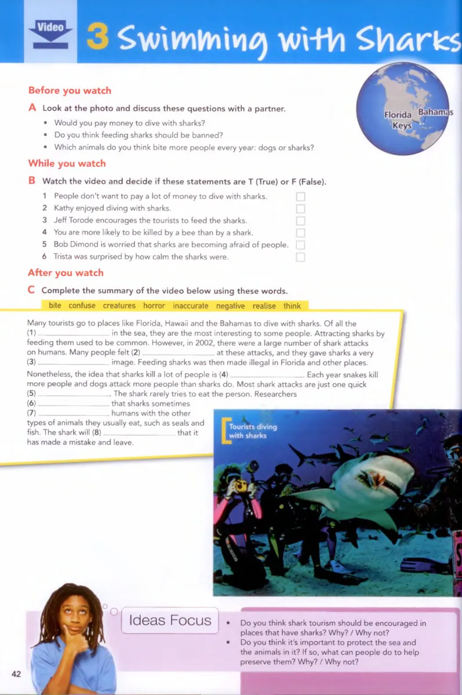
Before you watch
A Look at the photo and discuss these questions with a partner.
• Would you pay money to dive with sharks?
•
Do you think feeding sharks should be banned?
• Which animals do you think bite more people every year: dogs or sharks?
While you watch
В Watch the video and decide if these statements are T (True) or F (False).
1
People don't want to pay a lot of money to dive with sharks.
2 Kathy enjoyed diving with sharks.
3 Jeff Torode encourages the tourists to feed the sharks.
4 You are more likely to be killed by a bee than by a shark.
5 Bob Dimond is worried that sharks are becoming afraid of people. [
6 Trista was surprised by how calm the sharks were.
After you watch
C Complete the summary of the video below using these words.
bite confuse creatures
horror inaccurate
negative
realise think
Many tourists go to places like Florida, Hawaii and the Bahamas to dive with sharks. Of all the
(1)----------------- in the sea, they are the most interesting to some people. Attracting sharks by
feeding them used to be common. However, in 2002, there were a large number of shark attacks
on humans. Many people felt (2)___________________at these attacks, and they gave sharks a very
(3)----------------- image. Feeding sharks was then made illegal in Florida and other places.
Nonetheless, the idea that sharks kill a lot of people is (4)_____________________ Each year snakes kill
more people and dogs attack more people than sharks do. Most shark attacks are just one quick
(5 ) ------------------The shark rarely tries to eat the person. Researchers
(6 ) ____________________ that sharks sometimes
(7 ) ___________________humans with the other
types of animals they usually eat, such as seals and
fish. The shark will (8)____________________ that it
has made a mistake and leave.
Ideas Focus
Do you think shark tourism should be encouraged in
places that have sharks? Why? / Why not?
Do you think it's important to protect the sea and
the animals in it? If so, what can people do to help
preserve them? Why? / Why not?
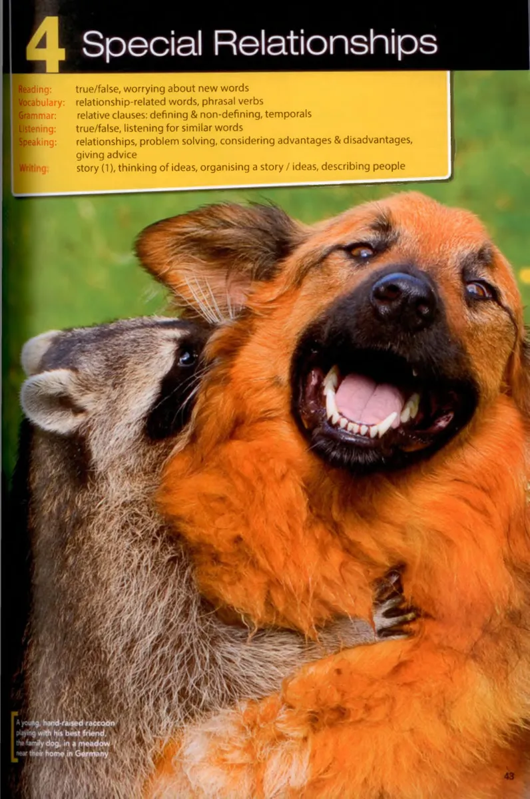
Reading:
true/false, worrying about new words
Vocabulary: relationship-related words, phrasal verbs
Grammar:
relative clauses: defining & non-defining, temporals
Listening:
true/false, listening for similar words
Speaking:
relationships, problem solving, considering advantages & disadvantages,
giving advice
story (1), thinking of ideas, organising a story / ideas, describing people
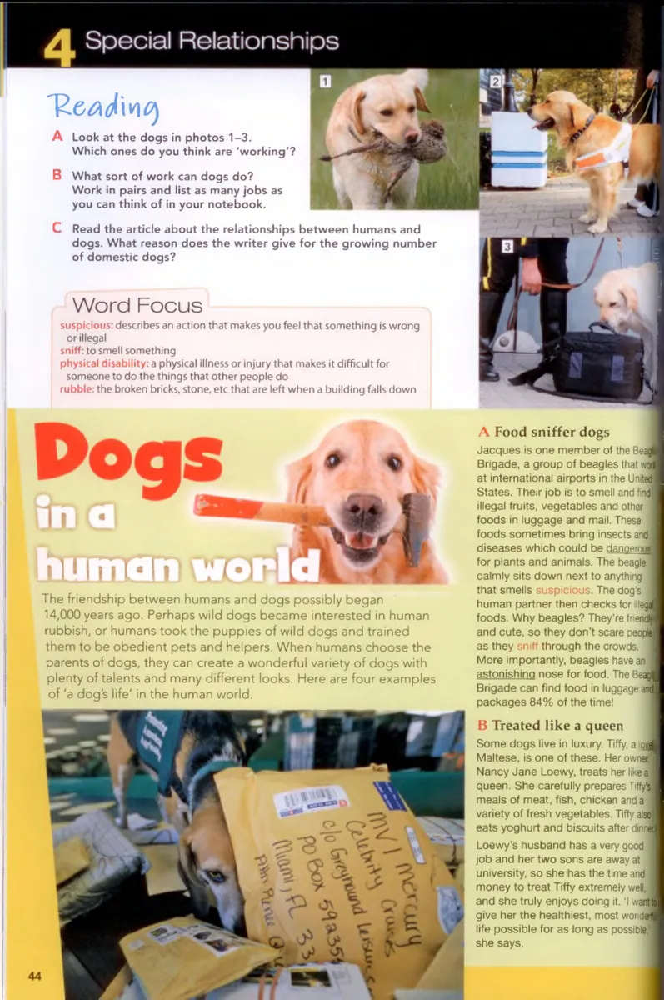
eaMwe)
' R
A Look at the dogs in photos 1-3.
Which ones do you think are 'working'?
В W hat sort of work can dogs do?
Work in pairs and list as many jobs as
you can think of in your notebook.
С
Read the article about the relationships between humans and
dogs. W hat reason does the writer give for the growing number
of domestic dogs?
Word Focus
suspicious: describes an action that makes you feel that something is wrong
or illegal
sniff: to smell something
physical disability: a physical illness or injury that makes it difficult for
someone to do the things that other people do
rubble: the broken bricks, stone, etc that are left when a building falls down
A Food sniffer dogs
щ Л
Jacques is one member of the BeaiJ
Brigade, a group of beagles thatwJ
at international airports in the United |
States. Their job is to smell and find
illegal fruits, vegetables and other
foods in luggage and mail. These
foods sometimes bring insects and
diseases which could be dannemnsl
for plants and animals. The beagle
calmly sits down next to anything
that smells suspicious. The dog’s I
human partner then checks for illega
foods. Why beagles? They’re friendlj
and cute, so they don’t scare people
as they sniff through the crowds.
More importantly, beagles have an
astonishing nose for food. The Beag
Brigade can find food in luggage and
packages 84% of the time!
ork I
fori
В Treated like a queen
Some dogs live in luxury. Tiffy, a |pvg
Maltese, is one of these. Her owner!
Nancy Jane Loewy, treats her like a
queen. She carefully prepares Tiffy’sj
meals of meat, fish, chicken and a
variety of fresh vegetables. Tiffy also
eats yoghurt and biscuits after dinner.
Loewy’s husband has a very good j
job and her two sons are away at
university, so she has the time and
money to treat Tiffy extremely well,
and she truly enjoys doing it. ‘I wantto
give her the healthiest, most wonde
life possible for as long as possible,’
she says.
I b
n
rrrrr-rm
The friendship betw een humans and dogs possibly began
14,000 years ago. Perhaps w ild dogs becam e interested in human
rubbish, or humans to o k the puppies o f w ild dogs and trained
them to be obedie n t pets and helpers. W hen humans choose the
parents of dogs, they can create a w onderful variety o f dogs with
plenty of talents and many different looks. Here are four exam ples
o f 'a dog's life' in the human w orld.
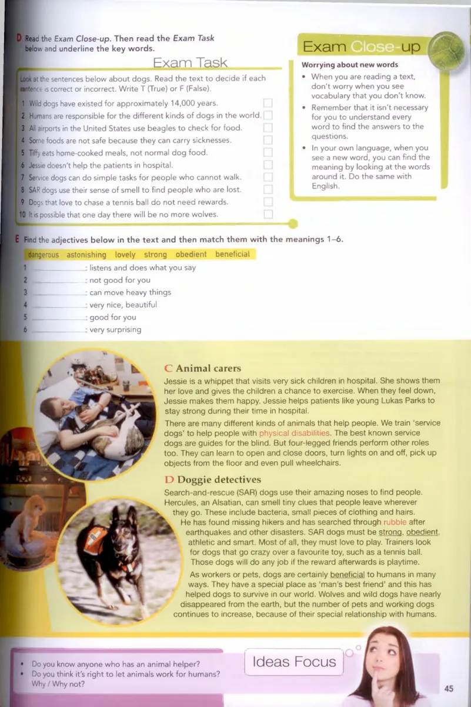
Read the Exam Close-up. Then read the Exam Task
below and underline the key words.
II
Exam Task
at the sentences below about dogs. Read the text to decide if each
| sentence is correct or incorrect. Write T (True) or F (False).
1 Wild dogs have existed for approximately 14,000 years.
2 Humans are responsible for the different kinds of dogs in the world.
3 All airports in the United States use beagles to check for food.
4 Some foods are not safe because they can carry sicknesses.
5 Tiffy eats home-cooked meals, not normal dog food.
6 Jessie doesn't help the patients in hospital.
7 Service dogs can do simple tasks for people who cannot walk.
8 SAR dogs use their sense of smell to find people who are lost.
9 Dogs that love to chase a tennis ball do not need rewards.
It is possible that one day there will be no more wolves.
E Find the adjectives below in the text and then match them with the meanings 1-6.
dangerous astonishing
lovely
strong
obedient
beneficial
listens and does what you say
not good for you
can move heavy things
very nice, beautiful
good for you
very surprising
Exam
Worrying about new words
• When you are reading a text,
don't worry when you see
vocabulary that you don't know.
• Remember that it isn't necessary
for you to understand every
word to find the answers to the
questions.
• In your own language, when you
see a new word, you can find the
meaning by looking at the words
around it. Do the same with
English.
С Animal carers
Jessie is a whippet that visits very sick children in hospital. She shows them
her love and gives the children a chance to exercise. When they feel down,
Jessie makes them happy. Jessie helps patients like young Lukas Parks to
stay strong during their time in hospital.
There are many different kinds of animals that help people. We train ‘service
dogs’ to help people with physical disabilities. The best known service
dogs are guides for the blind. But four-legged friends perform other roles
too. They can learn to open and close doors, turn lights on and off, pick up
objects from the floor and even pull wheelchairs.
D Doggie detectives
Search-and-rescue (SAR) dogs use their amazing noses to find people.
Hercules, an Alsatian, can smell tiny clues that people leave wherever
they go. These include bacteria, small pieces of clothing and hairs.
He has found missing hikers and has searched through rubble after
ь
earthquakes and other disasters. SAR dogs must be strong, obedient,
athletic and smart. Most of all, they must love to play. Trainers look
for dogs that go crazy over a favourite toy, such as a tennis ball.
Those dogs will do any job if the reward afterwards is playtime.
As workers or pets, dogs are certainly beneficial to humans in many
ways. They have a special place as ‘man’s best friend’ and this has
helped dogs to survive in our world. Wolves and wild dogs have nearly
disappeared from the earth, but the number of pets and working dogs
continues to increase, because of their special relationship with humans.
Ideas Focus
Do you know anyone who has an animal helper?
Do you think it's right to let animals work for humans?
Why / Why not?
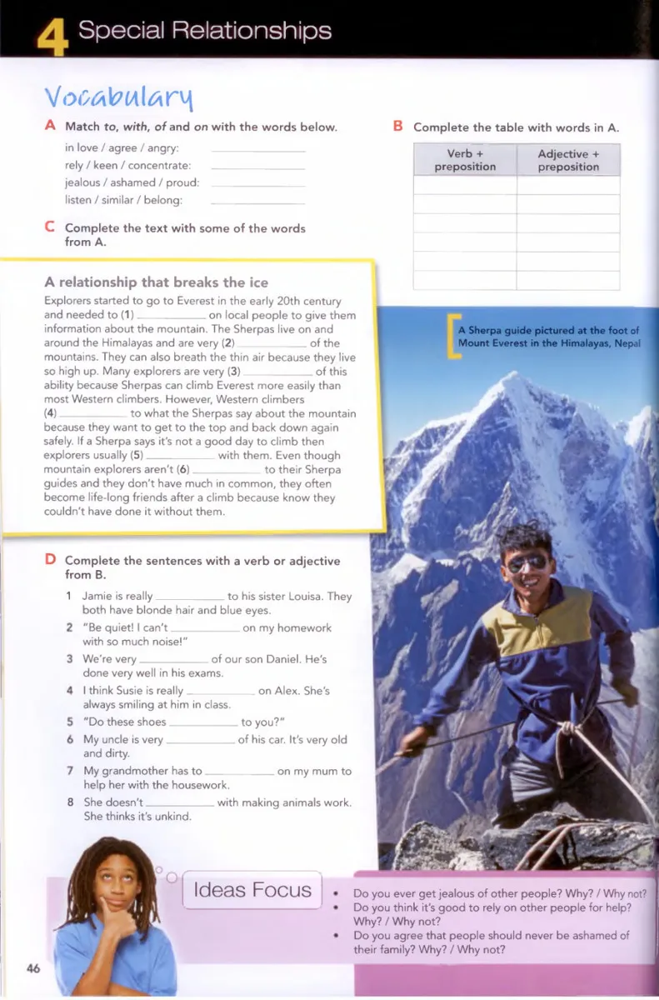
Special Relationships
Mooat oMUrq
A Match to, w ith, o f and on with the words below.
В Complete the table with words in A.
in love / agree / angry:
Verb +
preposition
Adjective +
preposition
rely / keen / concentrate:_____________________
jealous / ashamed / proud:_______
listen / similar / belong:
С Complete the text with some of the words
from A.
A relationship that breaks the ice
Explorers started to go to Everest in the early 20th century
and needed to (1)______________on local people to give them
information about the mountain. The Sherpas live on and
around the Himalayas and are very (2)_____________ of the
mountains. They can also breath the thin air because they live
so high up. Many explorers are very (3)_____________ of this
ability because Sherpas can climb Everest more easily than
most Western climbers. However, Western climbers
to what the Sherpas say about the mountain
(4)
because they want to get to the top and back down again
safely. If a Sherpa says it's not a good day to climb then
explorers usually (5)_____________ with them. Even though
mountain explorers aren't (6)
to their Sherpa
guides and they don't have much in common, they often
become life-long friends after a climb because know they
couldn't have done it without them.
D
Complete the sentences with a verb or adjective
from B.
Jamie is really
to his sister Louisa. They
1
both have blonde hair and blue eyes.
"Be quiet! I can't_____________on my homework
with so much noise!"
We're very_________
of our son Daniel. He's
done very well in his exams.
I think Susie is really
on Alex. She's
always smiling at him in class.
"Do these shoes_____________to you?"
My uncle is very_____________of his car. It's very old
and dirty.
My grandmother has to ______________on my mum to
help her with the housework.
8 She doesn't_____________with making animals work.
She thinks it's unkind.
A Sherpa guide pictured at the foot of
Mount Everest in the Himalayas, Nepal
Ideas Focus
Do you ever get jealous of other people? Why? / Why not?
Do you think it's good to rely on other people for help?
Why? / Why not?
Do you agree that people should never be ashamed of
their family? Why? / Why not?
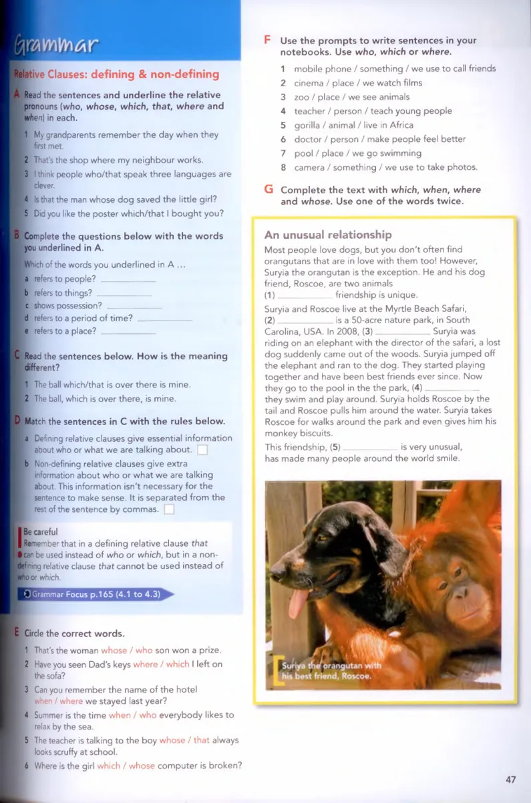
F
Use the prompts to write sentences in your
notebooks. Use who, which or where.
1
mobile phone / something / we use to call friends
2 cinema / place / we watch films
3 zoo / place / we see animals
4 teacher / person / teach young people
5 gorilla / animal / live in Africa
6 doctor / person / make people feel better
7
pool / place / we go swimming
8 camera / something / we use to take photos.
G Complete the text with which, when, where
and whose. Use one of the words twice.
Relative Clauses: defining & non-defining
Read the sentences and underline the relative
pronouns (who, whose, which, that, w here and
when) in each.
1 My grandparents remember the day when they
1 first met.
2 That's the shop where my neighbour works.
3 I think people who/that speak three languages are
I clever.
4 Is that the man whose dog saved the little girl?
5 Did you like the poster which/that I bought you?
p Complete the questions below with the words
you underlined in A.
Which of the words you underlined in A ...
a refers to people? _____________
b refers to things? _____________
с shows possession? _____________
d refers to a period of time? _____________
e refers to a place? _____________
С Read the sentences below. How is the meaning
different?
1 The ball which/that is over there is mine.
2 The ball, which is over there, is mine.
D Match the sentences in С with the rules below.
a Defining relative clauses give essential information
I about who or what we are talking about. (
b Non-defining relative clauses give extra
I information about who or what we are talking
I about. This information isn't necessary for the
I sentence to make sense. It is separated from the
I rest of the sentence by commas.
I
Be careful
Remember that in a defining relative clause that
• can be used instead of who or which, but in a non
defining relative clause that cannot be used instead of
who or which.
0 Grammar Focus p.165 (4.1 to 4.3)
An unusual relationship
Most people love dogs, but you don't often find
orangutans that are in love with them too! However,
Suryia the orangutan is the exception. He and his dog
friend, Roscoe, are two animals
(1 ) _____________friendship is unique.
Suryia and Roscoe live at the Myrtle Beach Safari,
(2 ) _____________ is a 50-acre nature park, in South
Carolina, USA. In 2008, (3)
Suryia was
riding on an elephant with the director of the safari, a lost
dog suddenly came out of the woods. Suryia jumped off
the elephant and ran to the dog. They started playing
together and have been best friends ever since. Now
they go to the pool in the the park, (4)..
they swim and play around. Suryia holds Roscoe by the
tail and Roscoe pulls him around the water. Suryia takes
Roscoe for walks around the park and even gives him his
monkey biscuits.
This friendship, (5)______________is very unusual,
has made many people around the world smile.
E Circle the correct words.
I 1 That's the woman whose / who son won a prize.
2 Have you seen Dad's keys where / which I left on
Г the sofa?
I 3 Can you remember the name of the hotel
■ when / where we stayed last year?
4 Summer is the time when / who everybody likes to
relax by the sea.
5 The teacher is talking to the boy whose / that always
I looks scruffy at school.
6 Where is the girl which / whose computer is broken?
47
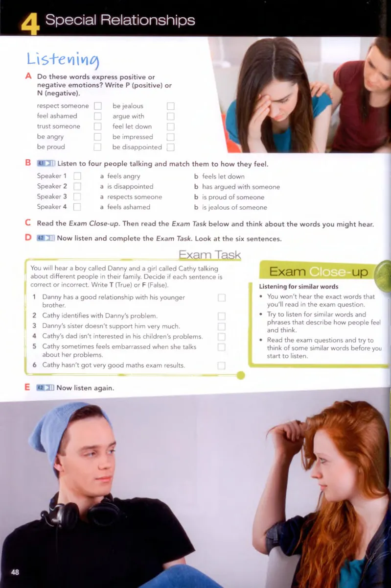
Special Relationships
Us+еч'т^)
A Do these words express positive or
negative emotions? W rite P (positive) or
N (negative).
respect someone
be jealous
□
□
feel ashamed
argue with
□
□
trust someone
feel let down
□
□
be angry
be impressed
□
□
be proud
be disappointed
□
□
В
4.1Л| Listen to four people talking and match them to how they feel.
Speaker 1
О
a feels angry
b feels let down
Speaker 2
a is disappointed
b has argued with someone
Speaker 3
[ J
a respects someone
b is proud of someone
Speaker 4
Q
a feels ashamed
b is jealous of someone
С
Read the Exam Close-up. Then read the Exam Task below and think about the words you might hear.
4| Л Now listen and complete the Exam Task. Look at the six sentences.
You will hear a boy called Danny and a girl called Cathy talking
about different people in their family. Decide if each sentence is
correct or incorrect. Write T (True) or F (False).
Danny has a good relationship with his younger
brother.
Cathy identifies with Danny's problem.
Danny's sister doesn't support him very much.
Cathy's dad isn't interested in his children's problems.
Cathy sometimes feels embarrassed when she talks
about her problems.
Cathy hasn't got very good maths exam results.
4| Л ) Now listen again.
Listening for similar words
• You won't hear the exact words that
you'll read in the exam question.
• Try to listen for similar words and
phrases that describe how people feel
and think.
Read the exam questions and try to
think of some similar words before you
start to listen.
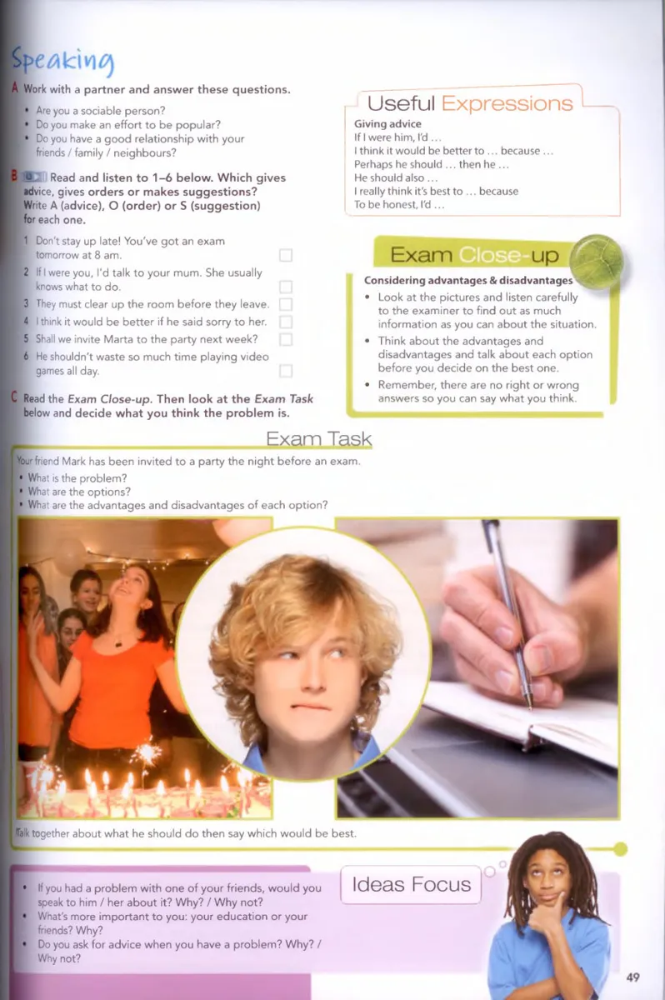
A Work with a partner and answer these questions.
Are you a sociable person?
Do you make an effort to be popular?
Do you have a good relationship with your
friends / family / neighbours?
■21 Read and listen to 1-6 below. Which gives
advice, gives orders or makes suggestions?
Write A (advice), О (order) or S (suggestion)
for each one.
1 Don't stay up late! You've got an exam
1 tomorrow at 8 am.
2 If I were you, I'd talk to your mum. She usually
I knows what to do.
3 They must clear up the room before they leave. (
4 I think it would be better if he said sorry to her.
5 Shall we invite Marta to the party next week?
6 He shouldn't waste so much time playing video
I games all day.
С Read the Exam Close-up. Then look at the Exam Task
below and decide what you think the problem is.
______________ Exam Task
Vour friend Mark has been invited to a party the night before an exam.
* What is the problem?
* What are the options?
* What are the advantages and disadvantages of each option?
Useful Expressions
Giving advice
If I were him, I'd ...
I think it would be better to ... because ...
Perhaps he should ... then he ...
He should also...
I really think it's best to ... because
To be honest, I'd ...
1
Considering advantages & disadvantages1
• Look at the pictures and listen carefully
to the examiner to find out as much
information as you can about the situation.
• Think about the advantages and
disadvantages and talk about each option
before you decide on the best one.
• Remember, there are no right or wrong
answers so you can say what you think.
Talk together about what he should do then say which would be best.
•
If you had a problem with one of your friends, would you
speak to him / her about it? Why? / Why not?
What's more important to you: your education or your
friends? Why?
Do you ask for advice when you have a problem? Why? /
Why not?
Ideas Focus
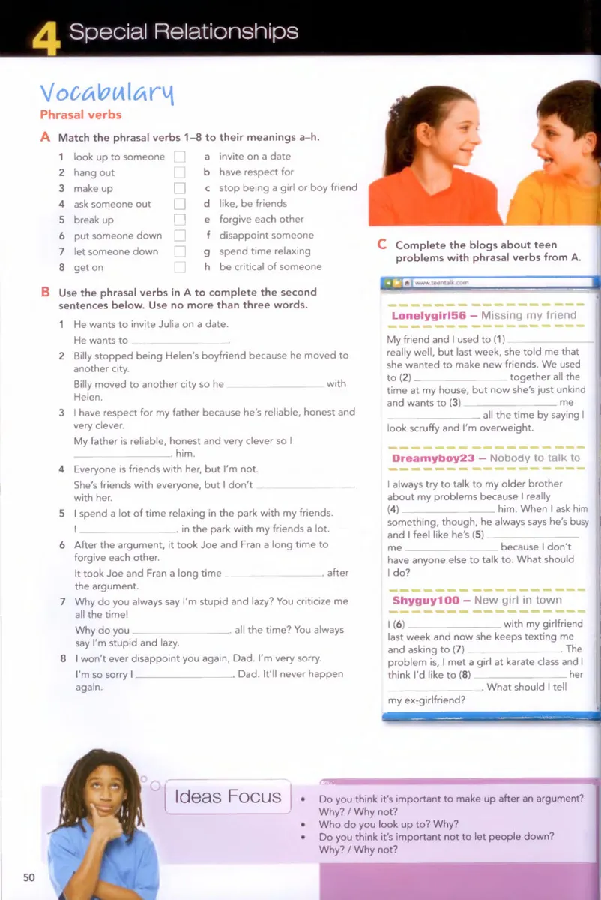
Special Relationships
\/0 £ЛЬи1йГЧ
Phrasal verbs
A Match the phrasal verbs 1-8 to their meanings a-h.
invite on a date
a
look up to someone
1
□
b
have respect for
2
hang out
□
stop being a girl or boy friend
с
3
make up
□
d
like, be friends
4
ask someone out
□
forgive each other
e
5
break up
□
disappoint someone
f
put someone down
6
□
gspend time relaxing
let someone down
7
□
h
be critical of someone
8
get on
□
В Use the phrasal verbs in A to complete the second
sentences below. Use no more than three words.
1
He wants to invite Julia on a date.
He wants to _____________________
2 Billy stopped being Helen's boyfriend because he moved to
another city.
Billy moved to another city so he_____________________ with
Helen.
3
I have respect for my father because he's reliable, honest and
very clever.
My father is reliable, honest and very clever so I
______________________him.
4 Everyone is friends with her, but I'm not.
She's friends with everyone, but I don't_____________________
with her.
5 I spend a lot of time relaxing in the park with my friends.
I ______________________in the park with my friends a lot.
6 After the argument, it took Joe and Fran a long time to
forgive each other.
It took Joe and Fran a long time______________________after
the argument.
7 Why do you always say I'm stupid and lazy? You criticize me
all the time!
. all the time? You always
Why do you
say I'm stupid and lazy.
8 I won't ever disappoint you again, Dad. I'm very sorry.
I'm so sorry I ______________________Dad. It'll never happen
again.
С Complete the blogs about teen
problems with phrasal verbs from A.
Lonelygirl56 — Missing my friend
My friend and I used to (1)_________________
really well, but last week, she told me that
she wanted to make new friends. We used
to (2)____________________ together all the
time at my house, but now she's just unkind
and wants to (3)____________________me
____________________ all the time by saying I
look scruffy and I'm overweight.
Dream yboy23 - Nobody to talk to
I always try to talk to my older brother
about my problems because I really
(4)
him. When I ask him
something, though, he always says he's busy
and I feel like he's (5)___________________
m e
because I don't
have anyone else to talk to. What should
I do?
ShyguylO O - N ew girl in town
with my girlfriend
(6)
last week and now she keeps texting me
and asking to (7)_____________________The
problem is, I met a girl at karate class and I
think I'd like to (8)____________________her
_____________________What should I tell
my ex-girlfriend?
Л Ш Ш
Do you think it's important to make up after an argument?
Why? / Why not?
Who do you look up to? Why?
Do you think it's important not to let people down?
Why? / Why not?
Ideas Focus
50
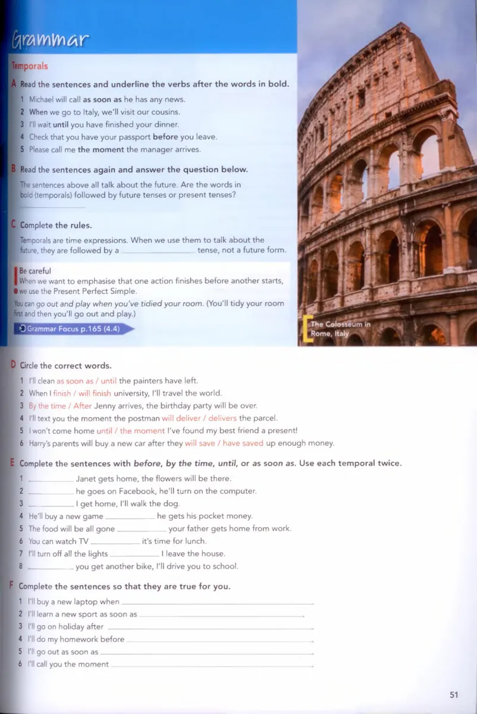
щ
чт\<лг
Temporals
A Read the sentences and underline the verbs after the words in bold.
1 Michael will call as soon as he has any news.
I 2 When we go to Italy, we'll visit our cousins.
3 I'll wait until you have finished your dinner.
4 Check that you have your passport before you leave.
5 Please call me the moment the manager arrives.
В Read the sentences again and answer the question below.
■ The sentences above all talk about the future. Are the words in
I bold (temporals) followed by future tenses or present tenses?
С Complete the rules.
I Temporals are time expressions. When we use them to talk about the
I future, they are followed by a _______________
tense, not a future form.
I Be careful
| When we want to emphasise that one action finishes before another starts,
• we use the Present Perfect Simple.
You can go out and play when you've tidied your room. (You'll tidy your room
first and then you'll go out and play.)
0 Grammar Focus p.165 (4.4)
D Circle the correct words.
1
1 I'll clean as soon as / until the painters have left.
2 When I finish / will finish university, I'll travel the world.
3 By the time / After Jenny arrives, the birthday party will be over.
4 I'll text you the moment the postman will deliver / delivers the parcel.
5
I won't come home until / the moment I've found my best friend a
present!
6 Harry's parents will buy a new car after they will save / have saved
up enough money.
E Complete the sentences with before, by the tim e, until, or as soon as. Use each temporal twice.
I
1B____________Janet gets home, the flowers will be there.
2j ,____________he goes on Facebook, he'll turn on the computer.
31___________I get home, I'll walk the dog.
1
4 He'll buy a new game
he gets his pocket money.
5 The food will be all gone_____________ your father gets home from work.
6 You can watch TV______________it's time for lunch.
i
7 I'll turn off all the lights
I leave the house.
81,____________you get another bike, I'll drive you to school.
F Complete the sentences so that they are true for you.
I 1 I'll buy a new laptop when
2 I'll learn a new sport as soon as________________________
3 I'll go on holiday afte r__________
-
4 I'll do my homework before________________
5 I'll go out as soon as_____
6 I'll call you the moment
51
W
h+' m
^; л storvj (\J
Learning^
Organising a story
• Most stories have a beginning, middle and end.
• The beginning of a story introduces and describes the people,
place and time of a story.
• The middle section of a story usually describes the action or the
things that happen to the people or in the place in a story.
• The middle section of a story can have several paragraphs so
the writer can describe more action. This is where the writer
sometimes includes something surprising or unexpected.
• The end of a story explains the action or events in a story or it
can leave the reader with a question or mystery.
Use the words to complete the sentences.
Suddenly... / In the end... / Meanwhile... / Once upon a time... / At first... / It all started.
there was a beautiful princess named Louise,
1
a few years ago, on the first day of Summer.
2
, she thought she was still asleep.
3
, there was a bang!
4
., the others were still looking for a way out.
5
nobody won the prize.
6
Read the writing task below and answer the
questions about it in your notebooks.
Your English teacher has asked you to write a
story. Your story must have this title:
A true mystery (100 words)
1
Has the teacher given the first line of the story?
2 What does your story need to be about?
С Read the paragraphs of the example
story and put them in the correct order.
1
2
3
4
Read the example story again
and write T (True) or F (False).
The girl ...
□
1
is scared of cats.
hasn't written about a mystery. [
Toby was ten when he died.□□
knew that Toby was dead.
В
Molly was walking home
from school one day. It was
a bright sunny day and
Molly, a tall clever girl from
Manchester, was relaxed
and she was thinking about
the weekend.
Molly looked at the cat and
read the name on its collar.
Yes, it was Toby! The cat
that belonged to her when
she was six years old. Her
old phone number was on
the collar.
Before Molly turned into
her street, a cat suddenly^
appeared in front of her. It|
was a beautiful black cat.
Suddenly, Molly started to
run. She was scared. Toby
can't be here! No, because
Toby is dead. He died 10
years ago.
52
E Complete the sentences by using the words in the
I Useful Expressions box.
1 It is so
. Winter is definitely here.
2 Sorry, I'm so
_ . The traffic was awful.
3 My friend is very
. She could be a model.
4 My audition is tomorrow. I am
5 I can't wait for my party this
F Read the Exam Task below. W hat has your teacher
already given you?
Ш
Exam Task
Your English teacher has asked you to write a story.
Your story must begin with this sentence:
A girl was walking home one day.
(100 words)
Useful Expressions
Describing people
tall /short
slim / overweight
kind / unkind
friendly / unfriendly
clever/stupid
young / old
easy-going / nervous
scared /happy
Describing place/time
morning / lunchtime / afternoon / evening
dark / bright
clean/dirty
cold / hot
early / late
*
Read the Exam Close-up and think of some ideas for
a beginning, middle and end for your story. Read the
Useful Expressions. Are there any words you can use
in your story? Add them to your notes.
H Now complete the Exam Task.
Exam
Thinking of ideas
• Before you start writing a story in the exam, it's a good idea to think of
lots of ideas first.
• Write notes about who could be in your story and the place he / she
could be in.
• Think about the words you can use to describe the people and the place
in your story.
• Note down some ideas for the middle of the story. What happens?
Is there something surprising and unexpected?
• Think about how you can end your story with an explanation or a mystery.
4 WlWs 'Best "Friend
Before you watch
A Match each dog to one of the statements below.
1
This dog pulls people through the snow.
2 This is the animal that all dogs come from.
3 This dog finds illegal items in luggage.
4 This dog herds sheep.
While you watch
В Watch the video to see if your answers in A are correct.
С Watch the video again and circle the words you hear.
1
The story of man and dog is a complicated / complex story
that goes back thousands of years.
2 Dogs interact with / relate to humans in a variety of ways.
3
Dogs have a sense of smell 1,000 / 10,000 times more
powerful than our own.
4 Over the years, the wolf became the gifted / talented
domestic pet we know as the dog.
5 Was it a hunting partnership / relationship?
6 It's a partnership that's likely to carry on / continue for many
years to come.
After you watch
D Complete the summary of the video below using
these words.
beneficial
domestic
illegal
obedient
partnership
talent
unknown
variety
for thousands of
Dogs and humans have had a(n) (1).
years. Dogs have many skills, which they use to help humans in
a(n) (2)___________________of ways.
Dogs have very powerful noses and they have a great
(3)___________________for smelling things. This makes them good at
finding lost people and also (4)
items in people's
luggage. The most important thing about dogs is that they are very (5)
___________________, rarely failing to do as they are told.
How and why humans and dogs first began interacting is still
(6)
However, we do know that over thousands of
years, the wolf has slowly changed into the (7)------------------dog
we have today. However the relationship began, nowadays, it is clearly
(8)___________________to both humans and dogs.
[a ] a b o rd e r c o llie
|~c~] a b e a g le
Ideas Focus
Did you grow up with a dog in the home? Why? / Why not?
Do you consider yourself an animal lover? Why? / Why not?
\1 о С(л к > 1 л \б \Г ^ \
A Circle the correct words.
1
The Chinese government is giving more land for conservation / endangered
areas
for pandas.
2
This book is a great source / research of information on polar expeditions.
3 Archaeologists found a cave / glacier with ancient paintings on the walls.
4 Wind and solar power are forms of renewable / beneficial energy.
5 The wide use of fossil / endangered fuels is causing them to run out.
6 They are building a new solar / power station not far from my house.
7
If we want to save the panda, we must focus on the conservation / pollution
of its
natural habitat.
8
Many endangered / conservation species will eventually become extinct.
9 Water flows down this stream / coast in spring after the snow has melted.
10 New ideas / threats are being considered to protect our wildlife.
11 Many coral reefs have damaged / survived for millions of years.
12 My grandfather has a physical / suspicious disability.
В Complete the sentences using these words.
ashamed
astonishing
beneficial
complicated
domesticated
embarrassed
obedient
protected
suspicious
talented
1 Our dog is not always as_______________________as we would like him to be.
2 I always get_______________________when my grandmother starts kissing me all the time.
3 It is_____________________ how many new species have been found in these deep waters.
4 Molly is a very_______________________singer and dancer, but she wants to be a conservationist.
5 The Bald Eagle in America used to be a ___________________ _ species, but now it is doing well.
6 The situation is_______________________by the fact that they haven't spoken to each other for years.
7
Dogs and cats have been_______________________for so long, that no one knows when it happened.
8 Malcolm was_______________________of himself for destroying the bird's nest.
9 Jeremy's behaviour is a bit_______________________ lately. What do you think he's up to?
10
Planting trees can be very_______________________ to the environment.
С Complete the sentences w ith th e correct preposition.
1 My teacher is a wonderful person and we all look_____________to him.
2 I argued_____________my mum this morning and now I wish I hadn't.
3 Don't forget to turn
the heating when you leave.
_______ on a date.
4
Simon decided to ask his classmate
5 She asked her family for help, but they let her_____________
6 You should apologise and make______________after the argument you had.
7 They must be friends as they hang_____________together all the time.
8 You shouldn't rely
other people all the time. Be more independent.
9 They argued when they first met, but now they get ______________really well.
10 Jason thinks he's cleverer than everybody else and is always putting us_____________
55
"Review Ъ
^
units з & 4I
" D СГ
- iV
'
^\тш
/у\слг
A Complete the sentences with the Present Perfect Simple, the Present Perfect Continuous or the Past
Simple of these verbs.
begin
cause
do
finish
increase
rise
study
take
the effects of pollution on plants for years.
The team of biologists
1
measures to limit sea pollution by passing new laws
The government
2
in 2000.
some species to become extinct over the years.
Overfishing
3
to become popular when I was at university.
4
Ecotourism
the amounts of carbon dioxide in the atmosphere
The use of fossil fuels
5
in the past few years.
research on coral reefs since he left university.
The scientist
6
gradually in the last 10 years.
7
Sea levels
writing an article on the Amazon a month ago.
8
The journalist
В Circle the correct words.
1
A / The / North Pole is located in the middle of the Arctic Ocean.
2 He can speak many languages, but he can't speak the / - / an Arabic.
3 It's very important to eat - / a / the breakfast in the morning.
4 I don't know why - / a / the people like ice climbing. It's very dangerous.
5 There is a volcano on the island. A / - / The volcano is not active.
6 Bill is a / an / the architect who built that modern hotel.
7
It was his dream to go to a / the / - Himalayas.
8 They didn't go by a / - / the bus. They used their car.
9 Hopefully, an / - / the environment will be saved from any more damage.
10 Nowadays, the / a / - computers help significantly with scientific research.
С Choose the correct answers.
1
My best friend,
parents travel a lot, feels very lonely at home.
a
who her
b who
с
whose
2 Turning 21 is the time
people should think about their future.
b that
a
which
с
when
3 We can't continue our research until he
us some information.
b will give
a
has given
с
is giving
4 The doctors won't tell us anything about Grandma's health
_ they see the test results,
b when
a
until
с
by the time
Please call me as soon as the babysitter___
5
b will leave
a
leaves
с
is leaving
6
people realise the damage we have done to our planet, it will be too late.
b By the time
a
After
с
Until
7 The dog
we found on the street is very friendly, so we took it home.
b that
a
where
с
who
8 This is the restaurant the wedding reception was held.
b where
a
which
с
that
56
Q A Place to Call Home
Reading:
short texts, multiple-choice questions, elim inating answers
Vocabulary: home-related words, collocations & expressions
will, be going to, future plans & events, future predictions
Grammar:
Listening:
multiple-choice questions, understanding technical or specific words
Speaking:
talking about homes, general conversations, expanding on the topic, talking
about a topic
Writing:
informal letter, replying to a letter, using informal language, accepting/rejecting
invitations, responding to news, making suggestions
I
Я *
*» - f-1
%
■
P*. У > 1
IK
A hill sho w ing U chisar C a stle cave
houses. Cappadocia, c e n tra l T u rkey
A W hat kind of problems can buildings have?
Who fixes them ? Match the problem (1-5)
with the person (a-e).
a builder
1
the bathroom light doesn't
work
b cleaner
2 there is water under the
kitchen sink
с electrician
d
painter
3 a storm damaged the roof
e plumber
4 the house is really dirty
5 the walls are a boring colour
В Work with a partner. You have a problem
in your home. Tell your partner what the
problem is. Your partner tells you who to
call for help.
The living room ceiling is wet.
You need a plumber!
С Quickly read the adverts 1-5 below and
I decide where you might find each one.
D Read the Exam Close-up. Then read the
Exam Task below and underline the
key words.
Eliminating answers
• Read all the texts first and think about where they
are from.
• Then read and underline the key words in the
answer options.
• Look for similar information to the words you
underlined in the text.
• If you can't find any similar information for one of
the answer options in the text, you can eliminate it.
• Check the information for the options you didn't
eliminate and choose the one which answers
the question.
Exam Task
Look at each of the texts. What do they say? Choose
the correct letter a, b or c.
1 The advert says that
a the lift in the building doesn't work,
b the bus stop is next to the shops.
с you can't have animals in the flat.
2 a Helen doesn't want to buy a brown sofa,
b Helen isn't sure if Tim will like the sofa.
с Helen has got half of the money for the sofa.
3 a All areas of the gym are open from Monday,
b Members should not go to the gym at
the weekend,
с The problem with the swimming pool is
not serious.
Why has Judy written the email?
a to get Dina's opinion about the hotel
b to check if Dina is going to Dublin
с
to ask Dina to book rooms for them
What must Robby do?
a
Show the plumber where the money is.
b Ask the plumber to fix the bowl in the sink,
с
Check the plumber's work before he gives him
the money.
Ш
Word Focus
urgent: needs attention very soon
before anything else
inconvenience: a situation that
causes problems or a delay
historic: important in history
To Let
New 2-bedroom 3rd floor flat
next to bus stop and close to
ihops
$200 a week
Available from 1st Ju ly
No lift
о pets
rl: 0401276894
Helen
04-Aug 16:55
Tim,
I’m at the furniture shop.
They’ve got the sofa
we've been looking for
at half price, but not in
black. Is brown OK with
you? I don't mind.
Joe's Gym
Important notice for
members!
Fhe swimming pool will
he closed on Saturday and
lunday for urgent repairs.
j All other areas of the gym are
1 open as usual.
We apologise for any
Inconvenience.
R. Smith
Manager
о Ь Ь ц ,
The plamber will be -there a+
f our o'clock +o -fi)c -the siчк. i
ki^ve left- -the ипочец fo r kiiw
04 tine ki-hcHe4 Table Wer -the
bowl. Tlease yy\ake sиге -the
si4k is OY- before уои рац him!
Pa^
From: Judy
To: Dina
Hi. Are you still interested in going
to Dublin with us? I need to book
the rooms tomorrow.
We're staying in this beautiful
historic building. Here's the link:
www.princesshotel.com
It's great, isn't it?
■A
Do you get on well with your neighbours?
Why? / Why not?
Do you think the city or the countryside is a better place
for a teenager to grow up in? Why? / Why not?
о
Ideas Focus
🔗С A Place to Call Home
Моей) # mI ah^
A Label the pictures with these words.
block of flats
bungalow
castle
cottage
detached house
semi-detached house
tent
terraced house
I
В Circle the odd ones out.
1
bedroom
garden
bathroom
4 ceiling
roof
keys
2
lift
3rd floor
ground floor
5 garage
sofa
bed
3
toilet
sink
fridge
6 living room
kitchen
wall
Choose the correct answers to complete the sentences.
1
When we go camping, I'll rely on you to put up the_______
b ceiling
a tent
с
terraced house
2
My sister's going to move into a
of flats in the West End.
b block
a
lift
с garage
3 The great thing about a
house is that you don't share any
walls with anyone.
b semi-detached с
a
terraced
detached
4 You can see the castle on the cliff out of my bathroom_______
b window
a
sink
с bungalow
5 When I get older, I'm going to buy a lovely
with a stream
in the garden.
b kitchen
a
cottage
с 3rd floor
6
Mum, you look tired; I'll tidy the
for you.
b ceiling
a
fridge
с living room
7
"Dad! Can you help? I can't open the
door!"
b garage
a
keys
с bed
8 Your plumber did a great job. Your new
looks lovely,
b garden
a
roof
с sink
Ideas Focus
What would your ideal home be like?
Would you want to live in a house with all of your friends?
Why? / Why not?
60
The Rheinturm tower at Media
Harbour in Dusseldorf, Germany
A Read the sentences and look at the future
|
forms. Write (A) for affirmative, (N) negative
or (Q) for question.
1 The architect believes he will finish
■ the new building next month. [
2 Tidy your room or I won't let you go out. |
3 He will become rich one day.
4 You can rest. I'll do the dishes. |
5 Her son will be 21 tomorrow. [
6 Will you please open the window?
7 I'm sorry! I won't ever lie again! I
[B Match the sentences in A with the uses of
the Future Simple below.
1
a to ask someone to do something
b to offer to do something j
с for promises
d for threats
e for future facts [
I f for predictions (when we don't have proof) |
g after verbs of opinion (think, believe, expect,
suppose, be sure, etc) and with words like
probably and maybe О
Be careful
I
Remember, a future tense cannot be used with
• temporals such as when, after, until, the moment
and as soon as, even if the main clause contains a
future tense. Instead, we use a present tense.
be going to
j С Read the sentences below. How can you
make them negative?
1 They're going to build a block of flats here
next year.
2 That wall is very safe. It's going to fall down.
I D Match the sentences in С with the uses of
going to below.
a future plans. 1 j
b predictions based on present evidence. I
О Grammar Focus p.166 (5.1 & 5.2)
L il LI I
F Complete the sentences with the correct form of will or
going toand the verb in brackets.
1
A: I've finally decided what to put in the new living room.
B: Really? W hat__________ (you / put) in there?
2 A: Look! It has started to rain.
B: O h,___________(you / close) all the windows, please?
3 A: Do you know your plans for next week?
B: Yes. We ___________(work) on the new roof of the
terraced houses.
4 A: Sammy, look what you've done!
B: I'm sorry, Mum. I promise I __________(not do) that again.
5 A: Those little boys are too close to that cliff!
B: Yes, they__________ (fall) off the edge!
6 A: Have you finished decorating your new cottage yet?
B: No, but I'm sure I ___________(finish) very soon.
7 A: Did you clean the floor for me?
B: No, we forgot but w e
(clean) it this afternoon.
8 A: How old is your brother?
B: Tom__________(turn) nine next Sunday.
G Complete the sentences using ideas of your own. Use
will or be going to.
I think
Be careful! That door
3
'Oh no! I've broken a glass.' 'Don't worry. I
4 We've got plans for the weekend. We
I promise_____
5
6 Tidy your bedroom now or I
E Use forms of w ill or be g oing to to write an
example sentence for each of the points below.
1 a future prediction
2 a promise
3 a threat
4 an offer to do something
5 an opinion about the future
6 a sudden decision
61
0 A Place to Call Home
L'is+etii v\0)
A Label the pictures with these words.
bamboo
brick
concrete
netting
steel
straw
5.1 CD) Listen again and check your answers.
How did you know which option to choose?
D Read the Exam Close-up. Then read the Exam
Task and think about what the listening is going
to be about.
E
5.2 Д || Now listen and complete the Exam Task.
Exam
Understanding technical or specific words
• In the exam, if you hear technical or difficult
words that you don't understand - try not to panic.
• Think about the words you do know and what the
listening is about and try to use the context to hel|
you understand.
Exam Та:
*
You will hear some students interviewing engineer,
Robert Weston. For questions 1-6, circle the best
answer, a, b or c.
1
Robert is interested in
a
recording the numbers of deaths in
earthquakes,
b how to rescue people from collapsed
buildings.
с
how to construct buildings that won't fall
down.
2
Modern building methods
a
don't use steel or concrete,
b offer cheap solutions,
с
are too expensive for poor countries.
3
Roofs are stronger when they're made from
a
concrete.
b metal,
с
straw.
4 Plastic netting is used to
a
hold roofs in place.
b hold walls together,
с
protect houses from underneath.
5 What are engineers testing in Indonesia?
a
How to build with bamboo instead of
metal.
b How to protect houses from below the
structure,
с
How to construct walls with sand.
6
Robert thinks that using cheap or local materials
a
is completely useless.
b is better than using expensive materials,
с
may not produce the best results.
F
5.2[3D Listen again and check your answers.
В ипт Listen and read sentences 1-5 and choose the
best definition for the underlined words.
1
Many buildings came down, crushing and trapping
people.
a
people were pushed and fell out of buildings
b things fell on top of people and they couldn't escape
2 One technique is to reinforce concrete with steel,
a
make stronger
b make longer
3
Buildings made of light materials are less likely to come
down in an earthquake.
a
not as possible
b impossible
4 Some bricks are cheap and walls made from them crack
and collapse very easily.
a
get bigger and fall off
b break a bit and fall to pieces
5 Cheaper materials are better than nothing for poorer
countries that can't afford anything else.
a
to not have enough money to pay for something
b to not be able to use something
62
( Ьедк г 'мя
A Work with a partner and answer these questions.
• Is your home big or small?
• What do you like the most about your home?
В Look at the list of features that a house or neighbourhood
might have. Decide if they are A (advantages) or
D (disadvantages).
garden
6
1 attic
□
□
7
good public transport
2 modern kitchen
□
□
8
shops nearby
3 large park
□
□
9
pollution
4 busy roads
□
□
central heating
10
5 1 garage
□
□
С Work with a partner. Student A describes photo 1 and
Student В describes photo 2. Remember to listen to each
other's descriptions.
Useful Expressions'—^
Talking about a topic
My favourite room is .... because ... and / but ...
If I could change something about my house / flat,
it would be / I'd ... because ...
Do you like the ... in your house / flat?
How much time do you spend in ... ?
Would you change the same things as me in ... ?
What about your... ?
D Read the Exam Close-up and the Exam Task below. Think
of three different questions to ask your partner about
their house, flat or neighbourhood.
■______
Exam Task
Work with a partner. Talk together about the different rooms
in your house or flat and say which is your favourite room.
Then say what you would change about your house or flat if
you could.
E Now complete the Exam Task.
_Exam
u
Expanding on the topic
• After you have described the photos
you will talk together about the topic.
• Try to expand on your ideas and give
reasons for your answers.
• Ask your partner for more information
and try to keep the conversation going!
(
Ideas Focus
Would you ever design and build your own house?
Why? / Why not?
If you could live anywhere in the world, where would
you live and why?
0 A Place to Call Home
\ 1 о С (Ж> 1 Л \ (л Г \ \
Collocations & Expressions
A In the following exercise, two of the options given are used with each verb in bold to make a
collocation. For each question, cross out the option that cannot be used with the verb in bold.
1
make:
a rest / a mess / your bed
3 do:
the housework / a lot of noise / the dishe
2 move:
house / with the times / dinner
4 take:
a bath / a break / a coffee
В Complete sentences 1-8 with collocations and expressions from A. You will use some of
the expressions more than once.
You aren't going anywhere until you get in your room and-----------------
1
2 I'm hot and dirty from working in the garden. I need to
; a hot one!
3 I don't mind if you cook, but make sure you don't-----------------in the kitchen.
4 We didn't want to ____________________, but my wife got a really good job offer in London.
5 The only thing I hate about____________________is cleaning the toilet.
6 Your uncle has
because his detached house was too expensive!
7 Your furniture is ancient!____________________, Carol, go buy some modern things.
8 Celia____________________ every morning before she goes to work; she doesn't like to have a shower.
9 Vince broke his mother's favourite plate while he w a s -----------------
10 We've been painting for hours; let's____________________
С Cover Exercises A and В and complete the collocations and expressions. Don't look!
You will need to use the verbs more than once.
do
make
move
take
_________a bath
1
5
with
the times
2 __________a break
6
your
bed
3 __________a mess
the
dishes
7
4 __________house
8
the housework
Ideas Focus
•
It's fine if you make a mess at home - somebody else will
------
■
tidy it up. Do you agree? Why? / Why not?
•
Would you live in a mobile home? Why? / Why not?
Future Predictions
С
Read the sentences and underline the forms used to
make predictions.
1
The plumber will finish the bathroom by Friday, I think.
2 The painter is working very hard. I think he's going to
finish by lunchtime.
3
Be careful! You might / could break the window.
D Complete the uses with the forms for making
predictions in C.
We use____________ when there is evidence for the
•
prediction in the present situation.
We use____________ for future predictions we can't be
•
sure of.
We use____________ for predictions we believe but
•
don't have any evidence for.
О Grammar Focus p.166 & 167 (5.3 & 5.4)
Future Plans and Events
A Read the sentences below. W hat forms are
used for future plans or events?
1 The cleaner is coming tomorrow afternoon at
1 3pm.
2 I'm going to paint this wall blue next week.
3; My exams start on Tuesday 3rd June.
В Match the sentences in A with the uses
I below.
a We use the Present Simple for future events
I which are set because of a timetable or
I schedule. [ )
b We use the Present Continuous for future
I plans which are already fixed or arranged,
с We use be going to for things we want or
I intend to do in the future but haven't made
I definite plans for yet. [ ]
G Answer the questions in your notebook.
Use w ill, be g oing to, m ig h t or could so
the answers are true for you when you
write them.
1
What will you have for lunch today?
2 Who will you live with when you're an adult?
3 Where will you be at five o'clock tomorrow
evening?
4 When will you move out of your parents' house?
5 What kind of house will you buy when you're
older?
6 Where will you go on holiday this summer?
7 When will you next visit relatives?
8 What will you get your mum or dad for his or
her birthday?
E
Match 1 -6 with a-f.
1 The Homes of the Future exhibition opens in |
2 The builders phoned Q
3 The cleaner is going to do Q
4 We're going to buy a [
5 I'm going to bed. My train leaves |
6 I'm very excited! We're moving (
a and they'll be here in the morning,
b house next week,
с new sofa at the weekend,
d at 7.30am tomorrow morning,
e the kitchen next,
f Edinburgh next month.
Complete the second sentence so it means the same
as the first. Use no more than three words.
I've finally decided to change the kitchen sink.
1
I'm_____________ change the kitchen sink.
Sam and Sophie have planned to meet in the library
this afternoon.
2
Sam and Sophie_____________ in the library
this afternoon.
I'm catching the 7.45 train.
The train_____________at 7.45.
Mr Brown has arranged to show us the bungalow
today.
Mr Brown_____________us the bungalow today.
The first day of the school holidays is Thursday
16th July.
The school holidays_____________on Thursday
16th July.
Jenny intends to use the lift.
Jenny_____________use the lift.
F
3
4
5
6
nil! '
Learning
Replying to a letter
• When you're replying to a letter, remember to react to what the
writer has said.
• Read it carefully to see if you have to apologise, give an explanation,
express enthusiasm, ask for or give information, thank the sender,
accept / decline a request or accept / reject an invitation.
• You can organise your letter by replying to the writer's comments in
a similar order.
A Look at these questions and notes and then write a reply to the
questions in your notebook.
1
Can you help us do some packing next week?
Corrvj. b u t ...__________________________________
2 Have you heard we've just bought a houseboat?
Ye*!...__________________________________
3
I hear you are moving house. Is there anything I can help with?
Yes, о м ць!А ...___________________________
4 Would you rather come to visit on Saturday or Sunday?
f><a-УнпАщ. \occadse ..._____________________
5 Is now a good time to move house?
No. because ...___________________________
6 Have you any idea how I can get my sister to help tidy our room?
4loiVc уои -tried ...?_______________________
В Read the writing task and underline the sections you
need to respond to.
Hi hdlrk,
How art you?
c)u.ess what, we're movlmj) Mouse i/iext
week! o u r wew house Is й cottage. it's
really old and Interesting and i Lltee
It hut I'm. a bit worried I won’t like
being In the countryside. I also don't
know If there art an y people m y яде
who live nearby.
B y the way, Mum. say s we're havlno
a housewarming party at the end of
A ugust. Can you come?
I really hope you can - we'll need
help with the m usic! Maybe you
could bring some of your amazing
collection? v>o you w ant to be ipj?
B ye for now,
TBobble
You have received a letter from your
friend, Robbie, who is moving house,
Write a letter in reply to Robbie.
(100 words)
С Think of ways you could respond to your underlined sections
and write notes. Compare with a partner. Did you write the same?
66
Read the example letter again and answer these
questions.
1
Does Kirk respond to all of Robbie's letter?
2
Does he copy large parts of Robbie's letter?
3
Does Kirk write in an appropriate style?
Match 1-5 with a-e to complete the plan that Kirk
made before writing the letter in B.
Greeting and opening
□
Paragraph 1
□
Paragraph 2
□
Paragraph 3
□
Signing off
Accept the invitation, ask about the date, agree to be
DJ
Bye for now, Kirk
Suggest things Robbie can do to find new friends.
Say good things about the move to make him feel
better.
Hi Robbie, It's good to hear...
G Read the Exam Close-up. Then complete the Useful
Expressions with the words below.
Accepting / Rejecting invitations
Responding to news
Making suggestions
H Now complete the Exam Task. Remember to make a
plan before you start.
Exam
Using informal language
• In the exam, your letters will always need to be
informal so remember to use friendly expressions
and informal language.
• Try to use contractions and include useful
expressions we usually use in informal letters and
emails.
D Read the example letter. Did Kirk include any
I similar responses to the ones you and your
partner talked about?
Bobbie,
it's iijooj to hear from 40м.
eyci-hug news! x've always w^n+e^ to live
t
mt Cbmtrys\de. You'll be <
5tble to cycle around
р>и+ м у -traffic and camp oat at n\c)lnt. xt will
ktjcta ff
IV+worry а\>ьa t vna\c\nc) new friends. You've
alvwys been very popular. Why don't you see if
there's a local foo+ball te^№ or yoatfo club?
Wi love to come to уоиг p a rty, xt will be q re a t fun.
iW of course x 'd I£>ve to be the P d ! i'll brino) lo+s
of different-types of vnusie so everyone can Have a
ifoi time.-flave уои decided on a date y e t 7
Dye for now,
Brlc
Useful Expressions
1 __
I were you, I'd/1 wouldn't...
Why don't you...?
1 How What about...?
2 __
I'd love to come ...
indefinitely be there.
I lb sorry, I can't make it.
Unfortunately, I won't be able to come.
w.________________________
What exciting / sad / great... news!
J I'm really pleased for / proud of you.
I It'll be fun / great...!
t
Exam Task
This is part of a letter you receive
from an Australian friend.
I start at my new school after the
holidays. I don't know anyone
there. Do you think I'll get on with
everyone? How can I make new
friends?
Now write a letter to your friend
giving some advice. (100 words)
-------- •
5 Living \v\
Before you watch
A Look at the photo and read the sentence.
Label the picture with the words in pink.
A gondolier rows a gondola along a Venice canal.
While you watch
В Watch the video and decide if these
statements are T (True) or F (False).
Early evening is the best time
1
to shop in outdoor markets.
□
Fabrizio Copano thinks Venice is
2
the most beautiful city in the world.
□
3
Gino Penzo's son doesn't live
in Venice.
□
4
The average age of people living
in Venice is increasing.
□
5
Venice is the only expensive city.
□
Lots of people enjoy living
6
in Venice.
□
After you watch
С Complete the summary of the video
below using these words.
annually
challenges
children
particularly
property
residents
tourists
welcomes
Today this city has a problem. Increasingly, many
Venice locals - (1)
the young -
are leaving and moving to other places. Why? For
one thing, (2)___________________in Venice is very
expensive. Parents want their (3)
to stay, but for many young people, it's difficult to
buy their own homes. Venice (4)
visitors from all over the world - millions
(5 ) _______
_____At times, the large number of
people in the streets can be very difficult for
(6 ) ____________________Jobs are another problem. If
one doesn't want to be a gondolier or do other work
with (7)
, it can be hard to find
a job.
Giovanni dal Missier lives in Venice. He wants to stay in his home town,
gift... to live in a city such as Venice,' he says. Despite all of the (8)
imagine living anywhere else.
'I know that it's a very special
________________ , Giovanni can't
Ideas Focus
Do people in your city or town face challenges like the
ones mentioned in this video? Why? / Why not?
Do they face any other challenges? What can be done
to help?
68
Reading:
matching, matching descriptions
Vocabulary:
sport-related words, word formation
conditionals: zero & first, second conditional, if
Grammar:
Listening:
multiple-choice questions (pictures), identifying emotions
Speaking:
talking about sport, decision-making, giving opinions, agreeing
& disagreeing, asking if someone agrees, giving your opinions
Writing:
sentence transformation (1), clauses of purpose, transforming
_______
sentences
A tortoise rolling
on a skateboard
A Are you fit? Have you ever done any watersports or do
you prefer to be on land?
В Work with a partner. W hy do people do sport?
Make a list of the reasons in your notebooks.
С Quickly read the descriptions of the people 1-5
in the Exam Task and underline any reasons
they give for wanting to do sport.
W ord Focus
challenge: something difficult that
tests your ability
equipment: things you need to do
a particular sport
coordination: the ability to make I
your arms, legs and other body |
parts move in a controlled way
ice rink: an area inside a building
with ice for people to skate on
a Paddleboarding is the hardest adventure
sport you'll ever try! If you like surfing and
rowing, you'll definitely love this. You sit on your knees or
lie on a board and use your arms to move over the water!
If you're fit and you love a challenge, try it! You will need
to buy or borrow a board.
b For an underwater challenge, try scuba diving. There are
courses for all levels, including beginners. Instructors with
years of experience can teach you, so you'll be in safe
hands. Lessons are available all year at local swimming
pools. The bad news? Lessons are expensive and you
have to pay extra to hire the equipment.
с Judo could be the right sport for you if you like reaching
your goals. It uses coloured belts to show your level.
There are seven levels, from white to black. When
students get their first belt, it shows them that they can
succeed. It gives them confidence and makes them want
to go higher.
Cycling is an activity you can enjoy alone, or you can train and
enter competitions. Who knows? You could be a future winner
of the Tour de France! Whether you ride for health, enjoyment
or competition, you must wear special equipment. Never cycle
without a helmet to protect your head.
If your coordination is good and you aren't afraid of falling
over, figure skating (dancing on ice) is an excellent way to get
exercise and have some fun. You only need a pair of skates. If you'd
like to try it, ask about figure skating programmes at your neari
ice rink.
You have heard of surfing, but what about... skurfing? It's an
exciting new sport that combines water-skiing and surfing. A fd
motorboat pulls you along; you stand on a surfboard instead of .
skis, and ride the waves that the boat creates. You need to hold о
tight and not fall. Don't forget your life jacket.
70
D Read the Exam Close-up. Then read the first
description in the Exam Task again and underline
any other key words.
E Now complete the Exam Task. Remember to
check your answers when you have finished.
Exam Task
The teenagers below are all looking for a sport to do.
There are eight descriptions of sports for young people.
I Decide which sport would be the most suitable for
the teenagers. For questions 1-5, mark the correct
letter a-h.
1 Juan is very interested in the environment and
j would like to study the oceans when he's older.
He'd like to do an activity that will help him to
1 explore the seas. Q
2 Inga has been doing snow sports all her life, so she
I wants to try something else. She wants to spend time
! exploring the countryside around her village. (
3 Mario is new to the area and wants to meet people
his age. He's a good athlete who loves basketball
and football but he'd like to try something a bit
different. ;
Exam
Matching descriptions
• When you match descriptions of people with
texts in the exam, it's important to look for
similar words and expressions.
• Read the description of the first person and
underline the key words.
• Then read all the texts and look for words and
expressions that are similar to the words you
underlined in the first description.
• Do the same for each description until you
have matched all the people to the texts.
• You will only need to match five of the eight
longer texts, so check your answers carefully.
Cheryl really enjoys discovering new things, so
she doesn't want to do any of the usual sports.
She's fit and wants to do something that will push
her body. [j
Nigel is shy and isn't really interested in sports,
but his doctor has told him he needs to get fit.
Nigel wants to see results for his hard work. [
F
Find the words with the form in brackets in
the text. Then complete each sentence below
with the correct word.
athlete - (adj)
compete - (n)
confident - (n)
enjoy — (n)
instruct — (n)
success - (v)
1
The most popular sports
the world are the Olympics and the World Cup.
My judo
learnt the sport in
Japan and has been teaching it for many years.
Nick can run fast, swim like a fish and
play tennis like a champion! He's very
Luke's coach always encourages him and this
gives him the____________________ to win races.
Harry only plays basketball for
____________________, but he is very good and
should play for a team.
Work hard, listen to your coach, don't
stop trying - this advice will help you to
g Fast and exciting, snowboarding is one of the coolest winter
f sports.The baggy hip-hop clothing that snowboarders wear
t make it trendy. It's also an extreme sport, and that means it can
be dangerous. If you've never done snow sports before and are
[ trying snowboarding for the first time, make sure your instructor
I is experienced.
h Handball is one of the fastest team sports, so if you want to play
it, make sure you have great coordination and are athletic. Good
1 ball skills are important, too; you must be able to catch, throw and
shoot a ball very quickly. Indoors or outdoors, it's a fantastic way to
make friends and keep fit.
In 2010, Jessica Watson became the youngest person to
sail around the world on her own.
Would you do it? Why? / Why not?
Do you enjoy doing sports? Why? / Why not?
Ideas Focus
71
Ready, Steady, Go!
Vослк7( л1лгу]
A Complete the table with the sports below.
volleyball
running
judo
skiing
tennis
gymnastics
swimming
aerobics
weightlifting
basketball
cycling
snowboarding
Do you ever... ?
play
do
go
В Work with a partner and find out which sports you both take part in.
С Complete the word groups with these words.
net
cap
referee
stick
team
tournament
track
umpire, line judge,___________________
1
2 pitch, pool,____________________
3 racket, bat,____________________
4 helmet, glove,___________________
D Choose the correct answers.
1
The
didn't see the ball and said it was in but
actually it was out.
a
line judge
b umpire
с
referee
2 If he runs around the race
more than once,
be astonished!
a
pool
b pitch
с track
3 You can't play tennis if you haven't got a _______
a
stick
b racket
с bat
4 It was a good thing Tony was wearing his _
when he fell off or he could have got a nasty head
injury.
a
cap
b helmet
с glove
5 We're not really keen on
sports like
basketball; we prefer sports where we play one-on-
one.
a
indoor
b individual
с team
6 The football
went into extra time but
Germany won in the end.
a
game
b match
с tournament
He didn't score because the ball hit the_______
7
a
net
b goal post
с basket
5 basket, goal post,
6 individual sports, indoor sports,
Ideas Focus
Do you think referees and umpires are always fair? Why?/
Why not?
Do you think individual sports are more interesting than
team sports to watch? Why? / Why not?
72
I
D Complete the text with the correct form of the
Ш
/Ш
ОТ
verbs in brackets.
Conditionals: Zero & First
Virtual sports
A Look at these conditional sentences and answer
If you (1)_______________________ (not know) what
virtual sports are, could you guess from the name?
Well, virtual sports are like real sports only you do
them in front of a screen in your own home. They're
very popular because they're part of our high-
tech world and most people love anything that is
connected with technology. When something new
the questions below.
I Zero conditional
• If you exercise regularly, you stay in shape.
• When a player gets the ball in the net, he scores
a point.
I First conditional
(2 ) ______________________(come) onto the market,
everybody wants to buy it.
• If Josh plays football all today, he'll be too tired to
go to the party.
Virtual sports certainly have their advantages. If you
(3 ) ______________________(not have) enough
time to go to a sports club, you can exercise at
home. Moreover, you can play a game of tennis
or football when it (4)_____________
(rain) outside. Another great advantage is that
you can play anything you like without paying for
expensive equipment.
• My parents might / may buy me a present if I win
the tournament.
• If Tabitha does that again, she could get a red card.
1 Which conditional is used to talk about something
that is likely to happen in the present or in the
future?
However, there is one disadvantage. When you
(5 ) ______________________(do) virtual sports, you
don't have an experienced instructor to give you
advice.
2 Which conditional is used to talk about facts and
general truths?
3 Which conditional can you use when instead of if?
So, if you are one of those people who doesn't
want to leave the comfort of their own home, you
4 Which conditional can we also use may, might or
could with?
(6 ) ______________________(love) virtual sports.
I Be careful!
I When the if or when clause comes before the
(main clause, remember to use a comma.
О Grammar Focus pp.167 (6.1 & 6.2)
->*■
В Use the prompts to write Zero Conditional
sentences in your notebook.
1 you / hit the ball past the other player - you /
get a point
2 you / boil water - it / evaporate
3 you / mix orange and brown - you / get yellow
4 you / sunbathe for hours - you / burn
5 you / get to the end first - you / win the race
6 you / eat too much - you / get fat
С Match and then write sentences in your notebook
using the First Conditional.
be thirsty
a
catch the bus on time
□
1
2
feel cold
b
eat something
□
nutritious
be hungry
□
3
с
put on a sweatshirt
be tired
□
4
d
drink some water
want to win
□
5
e
try your hardest
not want to be
6
late for the race□
f
take a short break
A p o s s ib le fu tu re
fo r v irtu a l s p o rts
0 Ready, Steady, Go!
Ц5+еч1И£)
A Work with a partner. Look at the picture carefully
and answer the questions below.
1
What do you think the people are watching?
2 How do you think the people feel?
3 How long do you think the people have been there for?
В
Match the feelings to the sentences.
afraid
angry
disappointed
excited
relieved
'Oh, no! What a shame!': ___________________
1
2 'Oh, thank goodness! Phew!': ____________________
3 'Your behaviour is completely unacceptable. Get out of
my sight!': ___________________
4 'Are you sure it'll be OK? I'm not confident
about this ....': ___________________
5 'I can't wait! This is going to be amazing!':
С Read the Exam Close-up. Then read the Exam Task and
identify the emotions in the pictures.
D
6.1 ПШ Now complete the Exam Task. Remember to
underline the key words in the questions before
you start.
There are six questions in this part. For each question, there are
answer a, b or c.
1
You hear a girl talking. Which sport does
4
she do?
Exam
Identifying emotions
• When there are questions about people's 4
feelings, look at the pictures and identify
the emotions before you listen.
• Think about the words you might hear and
how the speaker might sound.
Exam Task
three pictures and a short recording. Circle the correct I
You hear radio commentary on a cycling race.
Which team wins?
5 You hear two teenagers talking about their plans for
after school. How does the girl feel?
2 You hear a coach talking to a basketball team. How
does he feel about the team?
6 You hear an interviewer talking to a tennis player.
Where are they?
~
0
3 You hear two boys talking at a sports match. How do
they both feel?
ЦГ
x
*
t
E 6.1 [JD Now listen again.
A
74
Speakr' m О )
A Work with a partner and answer these questions.
• What do you do to keep fit?
• Do you enjoy watching major sports events like the Olympics or the
football World Cup? Why? / Why not?
• What is your favourite sport? Why?
■ Look at the list of things that describe certain sports. Tick (/ ) those
that you think would help a student choose a sport to take up.
Ь и Х Э - Г П
I 1 helps you meet new people Q
4
is challenging [
Giving opinions
• When you are discussing the different
options with your partner in the exam,
remember it is OK to disagree and give
your own opinion.
2 lasts a long time
[_. I
5
is cheap
3 needs specialist equipment Q
6
is dangerous
Q
С Compare with a partner. Do you have the same opinions?
• If your partner says something which
you don't agree with, politely say
why you don't agree and suggest
something different.
D Read the Exam Close-up. Then read the Exam Task and
note what you think about each picture and why.
IE Work with a partner and complete the Exam Task.
Use the Useful Expressions to help you.
Exam Task
A friend of yours wants to take up a new sport to get fit and meet new people, but she hasn't got much time.
Talk together about the different activities she could do.
Useful Expressions I
Giving your opinion
I think... is a good idea because .
Well, I don't think he / she should
But if he / she ..., he / she'll...!
Asking if someone agrees
Agreeing
Do you agree (with me)?
Would you agree that...?
Do you think so, too?
Disagreeing
Actually, I don't really agree.
I'm afraid I don't agree.
I don't think that's a very
good idea because...
I agree.
Yes, I totally / quite agree
with you.
I think you're (quite/
absolutely) right.
Ideas Focus
Would you prefer to play indoor or outdoor sports?
Why? / Why not?
Do you agree that a 'healthy body means a healthy
mind'? Why? / Why not?
Ready, Steady, Go!
Word formation
A Complete the table.
noun
verb
adjective
adverb
define
defined
definitely
(1)
competition / compete
competitor
(2)
competitively
(3)
/assistant
assist
assistant
(4)
free
free
freely
follower
following
(5)
(6)
concentrate
concentrated
depth
deepen
/ supervisor
supervise
(8 )
danger
(9)
deeply
(7)
supervised
dangerous
dangerously
proper
(10)
В Complete the text with the correct form of the words.
Free-diving: the big blue
The (1)---------of free-diving is any underwater activity
which people do by holding their breath for a long time.
People (2)__________ to dive down as far as possible on one
single breath, without the (3)__________ of air tanks.
Many divers say the experience of free-diving gives them a
feeling of (4)__________ while they are underwater.
Also, many of the sport's (5)__________regularly use yoga to
help them (6) __________ and hold their breath for longer so they
can dive to a much greater (7)_________than normal.
Before you decide to try free-diving, you must go through
a lot of training first under the (8) __________ of a professional.
This is because it can be a very (9)__________sport if it's not
done (10) __________
DEFINE
COMPETITION
ASSIST
FREE
FOLLOW
CONCENTRATION
DEEP
SUPERVISE
DANGER
PROPER
Complete the sentences with the correct form of the words from the table in A.
My trainer always says if you're going to do something, you should always do it____________________
1
2
That man is a great yoga teacher; he's got thousands o f____________________who listen to his every word.
3
You'll have to improve your level o f____________________if you want to take up tennis.
4
Kids, do not do this at home! You should only do this sport under the________________
of an adult.
5
I believe free-diving is one of the most____________________sports in the world - I wouldn't try it.
6
I wish I'd been a(n)___________________in that race! I know I could have won!
7
What is your____________________ of a great athlete? Mine is someone who excels at sport.
8
Is anyone mad enough to jump from a plane without the____________________of a parachute?
9
Who knows what strange creatures live in the____________________of the ocean!
10
Don't you love the sense o f____________________ you get when you're skiing?
Ideas Focus
Do you think you would like to try free-diving?
Why? / Why not?
Do you think it's important to do sports? Why? / Why not?
76
рИ
М
йГ
Second Conditional
A Read the sentences below.
I What tense is used with if?
1 You would be more relaxed if
1 you did yoga.
2 If I won Wimbledon, I'd be
I famous!
3 If I were you, I'd eat healthier
I food.
В Match the sentences in A
with the uses of the Second
Conditional below.
We use the second conditional
a for things we know will not
i
happen now or in the future.
b to give advice
с for things that probably won't
happen now or in the future.
С Read the sentences and answer the questions below.
1
Jack could win the race if he had better running shoes.
2 You might not win the match unless you get another tennis racket,
a What other words can we use instead of would?
b What word can we use that means the same as if not?
О Grammar Focus p.167 (6.3 & 6.4)
D Rewrite the sentences in your notebook using the Second Conditional.
I
1
I don't have a bike, so I get the bus to the football club.
5
We don't have enough players, so we
2 He doesn't get any exercise, so he's overweight.
might have to cancel the match.
I
^
3 She's not good at running, so she doesn't get chosen for teams.
The people don t have tickets, so they can t
.
.,
come into the stadium.
4
We don t have money, so we can t buy new team uniforms.
E Complete the second sentence so it means the same as the first. Use as many words as you need.
I
1 You might be off the team unless you say sorry for hitting the referee.
Unless you
2 If Stella doesn't start practising, she won't play in the match.
Unless Stella
3 Unless you get lots of exercise, you might get fat.
If you don't
4 They'll miss the start of the competition unless they leave right now.
If they don't
5 If James doesn't score soon, we'll take him off the pitch.
Unless Jam es
---------------------------------------------------------
F Complete the sentences with the correct form of the verbs in brackets. Add commas where necessary.
1 A: Should I play basketball or football this evening?
4 A: We're going to be late for the match!
B: If I ___________________(be) you, I
B: Calm down. If we get Dad to drive us, we
___________________(not play) either!
(make) it on time.
2 A: If he gets one more point,________________________
5 A: W hat--------------(you / do) if you won
(he / win) the tournament?
an Olympic medal?
В: I ------------------(run) around the track for
B: No. He needs to win another game.
hours!
3 A: I'm hungry. Do we have anything to eat?
B: Yes. If you____________________ (open) the
cupboard door, you____________________(see) lots of
food.
0 Ready, Steady, Go!
W ri+in;!): sev\-bencc -trdvisforyhd-Hovi (I)
Learnin
Clauses of purpose
We use clauses of purpose to explain why
someone does something or why something
happens.
• infinitive:
She went running to get fit.
because + subject and verb:
She went running because she wanted
to get fit.
so that + subject and verb:
She went running so that she could
get fit.
so as to + infinitive (without to):
She went running so as to get fit.
in order to + infinitive (without to):
She went running in order to get fit.
for + noun:
She went running for her fitness.
A Choose the correct answers.
He did weightlifting_______get stronger.
1
a
for
b to
с because
We waited for hours_______ buy tickets for the race.
a
in order to
b so that
с for
She was asked to wear a number
the race.
a
to
b for
с so as to
They watched the tennis match so as to _______
a
they relax
b relaxation
с relax
Call the teacher
you need some help.
a
because
b so that
с in order
The runners warmed up
they wouldn't hurt themselves.
a
because
b so as to
с so that
В
Read the instructions for the writing task
and write T (True) or F (False) for each of the
statements that follow.
Here are some sentences about sport. For each
question 1-5, complete the second sentence so
that it means the same as the first. Use no more
than three words.
All the sentences are on the same topic.
There are 15 questions.
Each question has two sentences.
You have to fill the gap in the second question.
You can only use three words.
2
3
5
6
С Read the first three sentences that a student
has completed for the task in B. Did he
follow the instructions correctly?
The cyclists in the race all wore helmets.
The toHnpeTi+ors in the cycling race all
wore helmets.
She did aerobics to make new friends.
In
оЫе\Г to
make new friends, she
did aerobics.
The team collapsed after an hour.
The team
f^ll
to pieces after an
hour.
□
□
□
□
□
78
ID Correct the student's mistakes in your notebooks.
E Choose the correct words to complete the sentences below. How did you know which words to choose?
1 He started playing basketball three years ago.
He has played basketball
three years.
a started
b
during
с
ago
d for
2 There was a swimming competition at my school last week
Last week my school______ a swimming competition.
|i have
b
at
с
had
d there was
F Read the Exam Close-up. Then read the Exam Task and underline the key words in the sentences.
| G Now complete the Exam Task. Remember to check your answers when you have finished.
И
Exam Task
I Here are some sentences about sport. For each question
111-5, complete the second sentence so that it means the
II same as the first. Use no more than three words.
1 She started playing volleyball for her health.
1 She started playing volleyball to get
2 Does this bat belong to you?
I Is this
bat?
11 3 Alice liked team sports a lot.
■ Alice was very keen
team sports.
I 4 David skied for 21 years before he hurt his back,
j I David skied for
20 years before he hurt his back.
5 She wanted a drink after the race.
Exam
Transforming sentences
• Read the first sentence and see if it is in
the present, past or future.
• Underline the verb and any other key words.
• Then read the second sentence and look at
the gap. What type of word is missing?
• Complete each with a verb, noun,
preposition, adverb or adjective.
• Remember, you may need more than one
word but don't write more than three.
C yclists in the women's road race at
th e L o n d o n 2012 Olympic Games
6 Ш
+ег Spor hs
Before you watch
A Work with a partner and answer these questions.
Why do you think spectator sports are so popular?
Would you like to be a professional sportsperson? Why? / Why not?
While you watch
В Watch the video and circle the words you hear.
1
To most people, the cold wind would feel uncomfortable / comfortable.
2 Roeseler says that the power of the wind / waves in a kite can be like a bird moving its wings.
3 Wind power is something that's easily found in the gorge which divides / connects Washington and Oregon.
4 In recent years, more and more people have started using towers for kiteboarding / wakeboarding.
5 Roeseler's tower is 17 / 70 feet off the water.
6 It's got to go on a small / big wakeboard boat and get tested in the right environment.
After you watch
С Complete the summary of the video below using these words,
behind
fly
higher
invent
kite
launched
power
than
Cory Roeseler is a mechanical engineer who
likes to (1)____________________ things. He came
up with the idea of kiteboarding in the 1990s.
He used a(n) (2)___
to catch
the power of the wind and to allow the board
to launch off the water for a few seconds and
(3)____________________ When Roeseler was a
teenager, he was the first person to try kite-skiing.
He didn't water-ski (4)____________________ a boat
like other people, he decided to use wind
(5) ___________________to ski below a kite.
More recently, Roeseler invented a new kind of
wakeboarding boat that has a sail on the back.
Roeseler's boat also has a tower which is six feet
higher (6 ) ____________________ other wakeboarding
boat towers, so the wakeboarding rope is placed
(7 ) ____________________This allows the wakeboarder to
jump higher in the air. Roeseler's friend, Jeff, was a bit
worried before testing the new equipment because he
hadn't seen anything like it before. He needn't have
worried; as the boat went faster he started moving
quickly across the water and then
(8 ) ___________________high into the air.
Ideas Focus
Would you like to try kiteboarding or wakeboarding?
Why? / Why not?
Do you think that it takes a special type of person to do
these sports? Why? / Why not?
"Revi ew Я?
Units 5 & 6
A Circle the odd ones out.
builder
plumber
1 referee
garage
attic
2 : cottage
bed
sofa
3 hire
wall
track
4 pitch
bat
racket
5 helmet
court
course
6 lift
race
tournament
7 gymnastics
achieve
succeed
8 win
В Complete the sentences with these words.
do get go
hold
make
move play take
■ 1 Louise has to
the bus to school every morning.
2 They___________________every weekend in a basketball team.
with the times.
3 It's difficult for older people to
__________the dishes.
---
4 Ifyou cook dinner, I'll _
a bath before going to bed.
5 Jess likes to
on tight to the windsurfing board.
6 The instructor told me to
skiing in January.
7 Jamie will
_
their beds themselves.
8 All members of our family
L Choose the correct answers.
I 1 Most houses in Europe are made of
a brick
b steel
2 I think we should
the bedroom white.
a roof
b paint
с
clean
3 The
around the house needs to be repaired.
b
attic
с
wall
a cottage
yesterday. They were very friendly.
I met my new
b
builder
с
neighbours
a resident
his bike and into the road.
William fell
b
off
с
up
a of
_ a mess in the living room. We're expecting guests,
Please don't
b
make
с
have
a do
7 We're not sure of the
of the river here.
a
deep
b depth
с
deepen
8 If the new player scores today, we _
win the league this year,
a
would
b might
с
have
9 The goalkeeper pulled on his
and walked out onto the pitch.
a
gloves
b net
с
helmet
10 His brother doesn't like
_ sports. He prefers jogging on his own.
a
competition
b compete
с
competitive
bamboo
81
в
"Review г ?
Units 5 & б|
f amw\№\ar
A Complete the sentences with will, the, be g oing to or the Future Perfect Simple of these verbs,
arrive
be
clean
finish
fix
instal
live
not let
stay
try
1
This time next week, w e
in a flat in a huge block of flats.
great to see the Rheinturm tower in Germany.
think it.
2
_ the new central heating system by the time
the cold weather begins?
the technician
3
I'm sorry! I
to be more careful when doing the dishes.
4
__________________________the kitchen for you.
5
Would you like to relax for a while? I
building his house by next year.
He's not sure h e___________________
6
in the castle during the holidays?
7
tourists
______________this afternoon.
Our new neighbours' furniture
8
the broken plumbing all day tomorrow.
9
Dad
___________
____you go out with your friends.
Please tidy your room or I
10
В Match the first part of the sentences 1 -6 with the second part a-f.
1
Would you try doing an extreme sport
2 You would be healthier
3 If we ran in marathons,
4 When you exercise too much,
5 If you want to learn how to ski,
6 If I were you,
a you should find an experienced instructor,
b if you didn't eat so many sweets,
с if you had the chance?
d your body reacts badly,
e we would know how challenging they are.
f I wouldn't try fixing the roof myself.
С Complete the sentences with the correct form of the verbs in brackets.
(be / you), I would use solar energy in my house.
If I
1
_ (you / buy) if you had the money?
What kind of house
2
If you had to move house, which area-----------------------(you / choose)?
3
(listen) to his coach during yesterday's match.
If only he _
4
(not / play) football.
If it's still snowing later, we
5
(come) to my house for dinner.
If you're free tonight
6
_ (get) home tomorrow.
Don't use the lift when you
7
(arrive) early, we won't be able to go shopping.
Unless you
8
(not / have to do) the housework every day.
I wish I ___________________
9
(not / fall) down during earthqu
If we used modern building methods, then our houses
10
82
multiple-choice questions, reading for general understanding
words related to extreme situations, prepositions, collocations & expressions
past perfect simple, past perfect continuous, question tags, subject & object
questions, negative questions
gap-fill, checking spelling
describing photos, talking about extreme situations, paraphrasing
story (2), using narrative tenses, creating suspense, reviewing your writing
Reading:
Vocabulary:
Grammar:
Listening:
Speaking:
Writing:
A m an ro p e ju mp in g , a ne w
e x tre m e s p o rt w h ic h co m b in e s
he th r ill o f ro c k c lim b in g , b u n g e e
jmp in g a n d sky d iv in g in to on e
^ Extreme Situations
‘V.eadw
q
A Read the breaking news about a real-life story.
Who are the people in the story and where were
they? Where were they going? W hat do you think
happened next?
BREAKING NE\
Thursday, October 12 , 1972: Flight 571 carrying
Uruguay s championship rugby team took ofFfrom I
Montevideo, Uruguay, heading to Santiago, Chile. OiJ
the plane were 45 people: the crew, the Uruguayan
players, and their friends and relatives. Soon after talc
oft, the plane had to stop in Mendoza, Argentina,
because of bad weather.
Friday October 13, 2.18 pm: Flight 571 took off
again, heading for Santiago.
Friday, October 13, 3.20 pm: About an hour into the
flight, the pilots began the descent into Santiago, not!
realising the plane was still close to the high peaks of I
the Andes Mountains ...
В You are going to read an article about what
happened to the passengers on Flight
571. Quickly scan the article to check your
predictions about what happened next.
On Friday, October 13,1972, a plane that had been flying from
Uruguay to Chile with 45 people on board crashed into a mountain
in the Andes. Flow some of the passengers managed to live is one of
the great survival stories.
Twenty-nine people died in the crash and in the weeks following
it. On the mountain, it was freezing cold and the survivors stayed
inside the crashed plane to stay warm. They had very little food
and were in very great danger while they waited for a rescue team.
After 11 days on the mountain, they found a small radio on the
plane and they heard the news that the rescue teams had stopped
searching for them. All hope was gone. They were alone and
terrified.
Days became weeks. Two months after the crash, after they had
waited for summer to arrive, three of the passengers, Roberto
Canessa, Nando Parrado and Antonio Vizintin, left to search for
help. Each man wore three pairs of socks, with a plastic bag around
each foot to keep the water out, boots, four pairs of trousers and
four jumpers. Many of the clothes were from the people who had
died in the crash. They also took with them a large sleeping bag
that they had made. Only they could save the others now.
How did these brave young men cope with the journey? None
of them had climbed mountains before and it was hard. They
climbed very dangerous, icy peaks, trying to reach the top of the
mountain. Some days later, exhausted and cold, they reached it.
They had imagined this moment for days. On the other side of the
mountain, they wanted to see a valley below that would take them
out of the mountains. But instead of a valley, they saw more of
the same snowy peaks. Lots of them. They weren’t near the end of
the mountains; they were in the middle of them. What could they
do now?
peak: the top of a mountain
exhausted: very tired
valley: an area of low land between
mountains, often with a river through^
ordeal: a very painful or difficult thing Г
But there was still hope. Parrado saw two low peaks about 65 |
kilometres away that didn’t have snow on them. If they could
get there, they would be out of the high Andes. But to reach!
peaks, they would need to walk for more days and they didn’t h
enough food. But Parrado had a solution: Vizintin could red
the plane and he and Canessa would take his food. They an
the plan, and Canessa and Parrado continued their journd
As they walked, the area around them slowly began to chafl
The men discovered a small river; the sun was warmer. AM
a few days of walking, the snow had disappeared completely
and flowers were everywhere. ‘This is the valley,’ Canessa s|
excitedly. ‘This is the way out!’
Soon, they saw a few cans on the ground and some farm щ
fC Read the Exam Close-up. Then read the Exam Task
and underline the key words.
1
Exam Task
I Read the text and questions below. For each question,
Dose the correct letter a, b, с or d.
What is the writer doing in this text?
a giving advice on how to survive
b explaining incredible past events
с showing that air travel is dangerous
d writing an imaginative story
Why were the three men disappointed?
a The view from the mountain was not very good,
b They didn't know how to return to the plane,
с They realised they had more problems,
d They had not brought enough warm clothes.
Vizintin returned to the crash site because
a he had lost hope.
b he didn't agree with Parrado's solution,
с he didn't want to walk any further,
d there wasn't enough food for three people.
Parrado and Canessa knew they were close to safety
because
a they saw things that belonged to people,
b they discovered a river,
с they had been walking for ten days,
d there were flowers in the snow.
Exam
Reading for general understanding
• It's a good idea to get a general
understanding of the message of the text before
you complete the exam task.
• Read the text carefully from beginning to end
without worrying about new vocabulary. This will
give you a good idea of what the text is about.
• Go back to each paragraph and make notes
about the main idea in each one.
• Then take some time to think about all the ideas
in the text before starting the exam task.
Which best describes what happened to the people on
Flight 571?
a The survivors of the crash waited for many weeks in
the plane for someone to find and rescue them,
b Tragically, 29 people died when the plane they were
travelling in crashed into a mountain in the Andes,
с
In a terrible situation, and with no hope at all, the
survivors found a way to save themselves,
d To stay warm in the freezing cold, they wore the
clothes of the people who had died in the crash.
Find the meaning of the words below in the
text. Then complete the sentences below.
cope with
search
survive
save
crash
reach
1
You will
the car if you don't
know how to drive it properly.
2
It is possible to
in the jungle if
you know how to find food.
3 There were many problems and Harry didn't
________________them very well.
4 They were in the middle of the desert so nobody
could____________________them.
the river, we'll rest
5 After we
before we cross to the other side.
Rescue teams will continue to ________________
6
for the missing mountain climbers.
E
W rite some more sentences in your notebook,
using the words in D.
in a field. They knew there must be people somewhere nearby.
On December 21st, after ten days, the exhausted men reached
j the town of Los Maitenes in Chile, and a rescue team went to
save the other passengers high up in the Andes.
lathad happened to them? Fortunately, they had all
irvived as they waited for the others to get help. The
iemories of the crash in the Andes would be with them
feever, but their ordeal was over. They had made it out - alive.
Do you think you would cope with the situation if you got
lost in a foreign country? Why? / Why not?
What one thing could you not survive without?
Ideas Focus
85
\/о£Л Ь и1йГЧ
A Match the words with their definitions.
destination
strength
conditions
companion
expedition
limit
explorer
journey
___________: A person or friend you travel or live with.
1
2 ___________: Someone who goes to places not many people have ever been to.
3 ---------: A trip to find or see something that is a long way away.
4 ___________: A physical power or energy.
5 ---------: A trip; travelling from one place to another.
6---------: The final place you want to get to when you go on a journey or trip.
7 ___________: The maximum point or level of something or someone.
8---------: The way things are around you; your circumstances.
В Complete the text with the words in A.
Truly extraordinary: Ed Stafford
Some people call Ed Stafford an amazing (1)________________, but others think he's crazy! How
can this be? Well, Ed Stafford has recently completed an incredible (2)_________________
He has become the first man to walk the length of the Amazon river. He reached his
(3)
, a beach on the Atlantic coast, after walking for 860 days in dangerous and
extreme (4)------------- His journey required both mental and physical (5) _
as he had to deal with heat, hunger, thirst and some very unfriendly people who wanted to kill
him! The walk tested Stafford to his (6) _________________ every step of the way.
Ed Stafford's success was partly due to his travelling (7)________________, Cho Sanchez Rivera,
who he relied on to help him when things got very bad. It seems that the final part of the
(8 )
was the most difficult and Ed collapsed at the side of the road. Luckily,
however, Cho was there to with him to help.
Let's see what adventure this extraordinary man will think of next! For more information
see www.edstafford.org
Circle the odd ones out.
1
survive
die
2
give up
carry on
3
get better
get well
D Choose the correct answers.
If I
this expedition, I'll never go on another
adventure!
a
survive
b die
с
live
It was so cold we had to
and go home,
a
get on
b give up
с
deal with
Practice, practice and more practice! Then you'll
a
go along
b get well
с
get better
She had been very badly
expect her to live,
a
hurt
b injure
and doctors didn't
survive
live
continue
get on
4
deal with
panic
copewith
5
go along
go away
disappear
injure
hurt
help
6
5
Helen had been swimming for years, so she___J
well when she fell from the boat.
a
lived
b helped
с coped I
If you don't want to get lost, don't _
from the
6
group.
a
go away
b get on
с carry on I
7
Many climbers____
their backs.
a
panic
b deal with
с
injure
The divers were calm and didn't
_
when they
8
saw the sharks.
a
go along
b carry on
с panic
Ideas Focus
What's the most exciting thing you've ever done?
I
Would you like to go on a journey like Ed Stafford's?
j
Why? / Why not?
🔗Complete the sentences with the correct form of the
Past Perfect Simple of the verbs in brackets.
1
The skier
(return) to the hotel before the
storm started.
2 Shelley
(never / play) golf in her life, but she realised
she was very good at it.
3
(they / already / call) a taxi by the time you arrived?
4
Until 2008, w e _______(never / be) sailing.
5
I
(work) as an instructor for ages and was a bit bored
with my job.
Dean and Fran_____(walk) in the Alps once and really
6
enjoyed themselves.
Complete the sentences with the correct form of the
Past Perfect Continuous of the verbs in brackets.
1
My grandfather
(live) in his old house for ages before
he moved in with us.
2 I
(cope) with my problem for weeks before I found
a solution.
3
(she / fight) against the disease for long before
she died?
4 They_______ (not fly) for long when they lost radio contact.
5
How long
(you / dig) before you found the buried
treasure?
6 We _______ (play) in the rain since midday, so we were
very wet.
Complete the sentences with the correct form of the
Past Perfect Simple or the Past Perfect Continuous of the
verbs in brackets.
1
The survivors
(finally /
reach) a village after days of walking.
2 The students_________________________________(prepare) for
their excursion for months.
3 We
(hope) to find some
water for days.
4 The man
(manage) to stay
alive for 5 days before he was rescued.
5 The explorer----------------------------(not /
imagine) that it would be so difficult to cross the river.
6 The young man----------------------------- (surf)
since he was a child.
last Perfect Simple
I Read the sentences. Then make them
I negative.
1 We had forgotten our passports, so we
1 went home to get them
2 He had travelled all over the world by his
I 30th birthday.
P Answer the questions.
1 In sentence 1, what happened first?
2 In sentence 2, what happened before his
Г 30th birthday?
| Is the sentence below T (True) or F
(False)?
We use the Past Perfect Simple for an action
or situation that finished before another
I action, situation or time in the past. 1
I Past Perfect Continuous
В Read the sentences and underline the
verbs.
1 They had been walking in the desert for
days, so they were exhausted.
2 We had been driving for a few hours
before we realised that we were lost.
|E Match the uses of the Past Perfect
Continuous with the sentences in D.
We use the Past Perfect Continuous for
actions
a that started in the past and were still in
progress when another action occurred in
the past.
b that were in progress in the past and had
an effect on a later action in the past, j ]
0 Grammar Focus p.167 & 168 (7.1 to 7.3)
H
Extreme Situations
Lis+ew in^)
Read the sentences below about a race. Two of the options
given fill the gap correctly. For each question, cross (X) out
the option that does not fit the gap.
competitors
limits
athletes
1
In this race, the
must be extremely fit and strong.
2
most challenging
toughest
incredible
The event is one of th e
in the world.
3
deal with
carry on
cope with
Competitors must
some very difficult conditions.
4
hot
dry windiest
Most deserts are extremely
places.
5
event
success
competition
Only a small number of people can enter this___
________________Exam Task
You will hear some information about a race in extreme
parts of the world. For each question, fill in the missing
information in the numbered space.
The Four Deserts Race
The race starts in the (1)__________Desert, in Chile.
Length of each part of the race: (2) _______km.
Gobi Desert: problems include strong (3)
_ and
snow in the mountains.
Sahara desert: competitors find it difficult to (4)
because of sandstorms.
The final part of the race is in the (5)__________desert.
Competitors can see penguins, seals and (6) _
____
Competitors sleep on a (7)__________
Competitors run in very (8) __________conditions.
В
7ИЗШ Practise saying the alphabet with
your partner. Then listen and write
down the words that are spelt.
1
2
3
4
Read the Exam-Close-up and the Exam
Task. Then look at each gap carefu
and think about what information
might fit.
Exam
Checking spelling
• Remember to think about what words might
be missing in the gaps.
• Be careful with spelling. It's important to spell
the words correctly to get a correct answer.
• If there is a repeated letter in a word, you will
hear the word 'double', e.q. difficult, D-1 double
F-1- C- U- L- T.
D 7.1! 3D Now complete the Exam Task.
E
7.2[3D Listen again and check
your answers.
Participants walk across a sandy
pass during the Marathon des
Sables. An endurance race across
the Sahara Desert in Morocco
Useful Expressions L
Paraphrasing
It's a sort o f...
It's a kind o f...
It's a an activity that ...la place where ...la person who .
I think it's a ...
It could be / might be a ....
It's similar to ...
It's dangerous because ...
You need ... to do it.
You shouldn't do it on your own because ...
You have to be careful o f...
Some equipment, such as... is necessary to ...
Work with a partner and answer these questions.
• Have you ever done an extreme sport? If not, would
I you like to?
• Have you ever been to any extreme places?
|B Put a tick (/) next to the statements that describe
extreme sports and a cross (X) next to those that
do not.
1 They're dangerous.
□
2 In the end, you get a sense of achievement.
□
3 They're relaxing.
□
4 They're very exciting.
□
5 You need a good instructor.
□
Read the Exam Close-up. Then work with a partner
and take it in turns to explain the words below.
Use the Useful Expressions to help you.
Student A
Student В
windsurfing
bungee-jumping
free-diving
scuba diving
paddleboarding
skurfing
D Now complete the Exam Task.
И
Exam Task
IStudent A looks at photograph 1 and describes what he or she can see. Student В listens.
1 Then student В describes photograph 2 and Student A listens.
Exam
up
Paraphrasing
• Don't worry if you don't know or can't
remember a word in the exam. Try not to
waste time trying to remember it.
• Think of another way of saying the same
thing. This is called 'paraphrasing'.
Ideas Focus
Do you know anyone that does an extreme sport?
Are extreme sports appropriate for all ages?
Why? / Why not?
89
Extreme Situations
Уоол^(л\^гц
Prepositions
Collocations & Expressions
A Circle the correct prepositions to complete
С
Match the words to make collocations.
the phrases.
a
lost
keep
1
between / about the same size
1
missing
b
do
2
the top of / to the mountain
2
с
calm
get
3
over / along 32 degrees Celsius
3
d
someone's life
4
9 °
4
onto / in a desert
e
on a journey
5
save
below / under freezing
5
f
your best
6
go
in / on the planet
6
Complete sentences 1-6 with collocations fromC.
7
runs across / of
over / above sea level
8
1
Everyone should___________________ their
___________________at school.
during / over the years
9
2 You must wear a lifejacket when you're on
a boat. It might____________________ your
behind / in the water
10
В Choose the correct answers.
3 Try t o ____________________ if you are in a
dangerous situation.
River deep, mountain high!
4 Take a map with you. You don't want to
From the top of the highest mountain to the bottom of the
sea, the world is full of extremes. Let's take a look at some
of the most amazing ones.
Many peopl e_________________every year while
5
out walking in the mountains.
With temperatures well (1)
freezing and very strong
winds, a mountain top is an extreme place to be! The
tallest mountain (2)
the planet is, of course, Mount
Everest. Its peak rises 8,850 metres (3) _
sea level. (4)
the years, 1,200 people have made the long, lonely climb
to the top of Everest!
6
I'll
to the Amazon next year
when I've saved up enough money.
The Sahara Desert is in North Africa and is (5)
the same
size as the USA! With so much sun and very little rain,
summer temperatures there are often (6)
... 32° Celsius.
The hottest temperature ever recorded on earth was in the
Sahara, when the temperature reached 58° Celsius!
The Amazon is one of the longest rivers in the world.
It begins in the mountains of Peru, goes (7)
South
America and ends at the Atlantic Ocean. If you ever go on
a journey to the Amazon, be very careful! As well as the
lovely pink dolphins there are also some horrible creatures
(8)
the water, including flesh-eating piranha!
below
at
along
Over
between
outside
across
outside
с
с
с
с
с
с
с
с
besides
of
above
Down
opposite
over
onto
above
after
b
a
1
b
on
a
2
b
among
3
a
4
b
a
In
b
5
a
about
b
toward
a
6
b
7
a
behind
in
b
a
8
D
Ideas Focus
Do you agree with these statements? Why? / Why not?
- It's always better to keep calm in extreme situations.
- I think climbing Mount Everest would be easy.
- Life in the desert must be quite difficult.
90
Question Tags
A Read the sentences and underline all the verbs.
I What do you notice?
I 1 All the passengers in the train crash were
rescued, weren't they?
2 The climbers haven't reached the summit yet,
have they?
IB Complete the rules.
Question tags are short questions that we add at the
________________of a sentence.
I We use a(n)____________________ question tag with
an affirmative sentence and a(n)____________________
I question tag with a negative sentence.
Subject & Object Questions
F
Match the sentences with the question tags.
1
He's never been to Peru,
□
С Underline the verbs in the sentences.
She's a top athlete,
2
□
i 1 Who climbed Mount Everest for the first time?
Let's go mountain biking,
3
□
4
Peter can deep-sea dive,
□
I'm fit enough to go windsurfing,
5
□
2 Who will the rescue team try to find?
D Read the examples in С again. Then write T
(True) or F (False) for sentences 1-4 below.
Don't do anything silly,
6
□
7
Harriet booked her extreme holiday,
□
1 In sentence 1, the word who asks about the
object of the sentence. [ ]
Everyone had a great time,
□
8
2 In sentence 1, the words are in the order that we
usually use for statements. |
Those people aren't here for the competition,
9
□
You've paid for the boat rental,
10
□
3 In sentence 2, the word who asks about the
subject of the sentence. [ J
a
can't he?
f aren't I?
4 In sentence 2, the words are in the order we
usually use for statements. ( )
didn't she?
g are they?
b
didn't they?
h shall we?
с
Negative Questions
d
will you?
i has he?
isn't she?
j haven't you?
e
E Match each sentence with one use of negative
■ questions.
q W rite subject questions for the answers below in
1 Didn't you hear about the flood? It was on
your notebooks.
ine news:
1
2 Isn't that one of the most amazing survival stories
you've ever heard? |
2
3
We can use negative questions
4
a to express surprise.
b when we expect the listener to agree with us.
5
6
7
0 Grammar Focus p.168 (7.4 to 7.6)
8
Write negative questions in reply to tnese sentences using the prompts given.
1 A: You won't see Sue on the skiing trip.
B: Why not? _ _ __________________________________________________________
(she / not come / with us)
2 A: I got lost in the mountains last week.
B: Oh no!
(you / not be / scared)
3 A: I haven't slept since we came back.
B: Why not?
__________________________________________________________ -— (you / not tired)
4 A: Where are you going?
B :___________________________________________________________________(anyone / not tell you / about the trip today)
5 A: You seem familiar to me.
B: Yes
(we / have not met / somewhere before)
91
James plays tennis with Malcolm.
The instructor was teaching basketball skills.
Francis went fishing with Dad.
Jan borrowed the blue racket.
The coach asked Petra to join the team.
The fisherman is fixing Jack's net.
Ted took up the most dangerous sport.
The boy decided to get the little black puppy.
\МгЖи£): £\ S +ОГЦ (2-3
Using narrative tenses
To write stories based in the past, we use narrative tenses. The most
common narrative tenses are the Past Simple, the Past Continuous,
the Past Perfect Simple and the Past Perfect Continuous.
• Use the Past Simple to talk about a completed action / state in the
past, a series of actions that happened one after the other in the
past or to take the action of the story further.
• Use the Past Continuous to set the scene of the story and to talk
about an action that was in progress in the past when another
action interrupted it.
• Use the Past Perfect Simple to talk about an action that happened
before the time of the narrative or another past action.
• Use the Past Perfect Continuous to talk about an action that was
in progress for some time in the past which was interrupted by
another past action, or which had an effect on a later event in
the past.
Complete the sentences with the correct form of the verbs in brackets. Sometimes more than one ans
is possible.
He stopped running, took the mobile phone out of his pocket and
(throw) it into the rn
The family
(sit) in the garden when they heard the blast.
(make) such a dangerous journey on her own.
Jane couldn't believe that she
_________(run) for miles.
Everyone was exhausted because they
(chase) the thief down the street.
She jumped up and _
_ (sway) gently and the sun
___________________________(shine) brightly.
It was the perfect location. Palm trees
(hear) a knock at the door.
They were getting ready for bed when they
(keep) calm.
Throughout their ordeal, they
В Read the writing task below. W rite T (True) or F (False) for each of the statements that follow.
Write a story which begins with this sentence: Everyone was scared to death. (100 words)
4 You can begin the story any way you
1
The story will involve several people.
5 The story will probably have suspense.
2 It will be about a frightening situation.
3 Someone must die in the story.
С Read the example story and circle the correct words.
like.
Everyone was scared to death. They were trapped in the darkest cave they (1) had ever seen / ever seen
after getting lost on a school trip.
The students (2) had screamed / were screaming loudly as pieces of rock fell to the ground. Luckily, no one
(3) was / was being injured.
Toby had never been in such an extreme situation before, but he (4) had been keeping / kept very calm.
All of a sudden, he (5) remembered / was remembering that he had his mobile phone. His teacher
(6)
had told / told everyone to leave their phones in the tent but Toby (7) decided / had decided to secretly j
bring his.
As quick as lightening, Toby (8) was running / ran to his bag and found the phone. He called his mum and
(9)
explained / had explained the situation. 'Don't worry,' she said 'Rescue teams are already looking for
you.' Toby smiled and immediately (10) told / was telling everyone the good news.
|D Read the model story again and write T (True) or F (False).
1 The writer hasn't used the given sentence properly.
2 The story describes why everyone was so scared.
3 Narrative tenses have been used.
4 The writer uses special phrases to create suspense.
5 By the end of the story the students are completely safe. |
P Complete the plan for the example story with
these sentences.
Paragraph 1
a Describe how the plan is carried out
and what happens next.
Paragraph 2
b Describe the scene and give more
details.
Paragraph 3
с Introduce the main character and
a plan of action.
Paragraph 4
d Use the sentence you were given
and say where the story is set.
IF Match 1-6 with a-f to make sentences using some of the Useful Expressions.
sign of a rescue team.
a
As quick as
time on, they knew they only had each other.
b
Without
lightning, she ran to the car.
с
From that
plan that would save them.
d
There was no
point the ambulance turned up.
e
Then, she thought of a
thinking, he went to the injured man.
f
At that
G Read the Exam Close-up and the Exam Task below. Then make a plan for your story.
H Now complete the Exam Task. Remember to use
the Useful Expressions to help you and to check
your story carefully when you have finished.
Exam Task
Your English teacher has asked you to write a
story. Your story must begin with this sentence:
Nobody knew where they were.
( 1 0 0 words)
Useful Expressions Ц
Creating suspense
At that point...
During the minutes / hours / days that followed ...
All of a sudden ...
As quick as lightning, / As fast as he could,...
He'd never been in such an extreme situation.
Without thinking,...
There was no sign of...
He thought of a plan.
To make things worse,...
They were just about to give up when ...
Exam
Reviewing your writing
• When you have finished your story, it's
important to read it and check it carefully.
• Does the story make sense?
• Does it have a beginning, middle and ending?
• Have you used the correct narrative tenses?
• Remember to leave yourself enough time in
the exam to check your story before you finish.
С
й
А
$
+
fy
(Л
Ы
а
Before you watch
A Match the words with their meanings.
1
adrenaline
QJ
a a feeling of excitement about something nice that is going to happen
2
anticipation
□
b how often your heart beats
3
limitation
О
c something that prevents you going past a certain point
4
pulse rate
О
b something your body produces when you are scared, angry or excited
that makes your heart beat faster and gives you energy
While you watch
В Watch the video and decide if these statements are T (True) or F (False).
1
Many ships sink in the rough waters where the Columbia River empties into the ocean.
2 The skills taught at the Coast Guard's national motor lifeboat school can't be used to drive any other boat.
3 Aaron Ferguson has been a driver here for over two years.
4 For students only, pulse rates accelerate and heart rates rise as soon as the sea becomes more dangerous.
5 Student, Ralph Johnston, needs to learn to control the elements.
6 If drivers are comfortable in bad weather, then the crew is also more comfortable, and they'll be more effective. I
After you watch
С Complete the summary of the video below using these words.
convinced
mercy
missions
prove
satisfaction
tragedy
training
violent
In the US Coast Guard's national motor lifeboat school, trainee boat drivers often find themselves at
the (1)___________________of waves that can kill them. They must face some of the most
(2)
and unpredictable seas. In an area known as the 'Graveyard of the Pacific',
drivers learn how to cope with the kind of rough conditions that they will frequently face in their
job, battling against severe weather.
The (3 )____________________ is important as
IW
these skills will help them to perform their
dangerous life-saving (4)
Instructor Aaron Ferguson is
(5 ) ___________________that the motor
lifeboat school gives the students the best
kind of training.
R o u g h seas cra sh o v e r th e sh ip
National G eographic Endeavour
in th e A tla n tic
The two-week class ends with the students
ready to do the 'man-overboard drill'. For
student, Ralph Johnston, this is the chance to
(6 ) ___________________that he can move the
lifeboat through huge waves while keeping it
steady. The rescue attempt succeeds and he
passes the test. For the instructors, there is
(7 ) ___________________in knowing that the
skills students learn here might one day
prevent a terrible (8) ____________________
Ideas Focus
Do you think you could do this job? Why? / Why not?
Whose story of survival in this unit do you think is the mosl
incredible? Why?
Reading:
multiple-choice questions, reading around the gap
Vocabulary: words related to free time, phrasal verbs
Grammar:
m odals&semi-modals (1 &2)
Listening:
multiple-choice questions (pictures), predicting from pictures
Speaking:
talking about free-time activities, decision making, talking about
all the options, talking about possibility
W riting:
postcard, linking words & phrases, w riting the correct amount,
Щ ri^Tlrr
ж
■гтХ^Щ П,
Я
д
* i
РпИ
Two boys practicing freerunning
parkour Aberystwyth, Wales
95
Q Time to Spare
St3fmchaser Herb Stein of the
Center for Severe Weather Research
with DOW 7, a specially-equipped
earch vehicle
' V. eaAwc)
A W hat do people do in their free tim e?
Below is a list of popular free-time
activities for young people in the UK.
Put them in the order of popularity from 1
(most popular) to 1 0 (least popular).
Listening to music
Going for a day out
□ Shopping
□
Exercising
□ Reading
□
Going to after school clubs
I | Watching TV
Q
Going to the cinema
Eating out
] Spending time with friends /
family
Your teacher will give you the correct answers.
В W ork with a partner. Think of some activities
people enjoy that can be very dangerous.
W hat makes them dangerous?
С Read the title of the text. W here do you think
this activity is taking place?
1
W ord Focus
headlamp: a large, powerful light that you wear on
your forehead
victim: someone who has been hurt or killed
threat: something that can cause damage or danger
Me e tacav e r
Stephen Alvarez is a caver. He
travels the world exploring and
photographing caves. He (1)
__________ to climb mountains to
reach some caves or dive deep
down to search for underwater
caves. He has photographed some
very impressive caves including the
longest in the world, Mammoth Cave
in the USA, (2 )__________ has 580
kilometres of tunnels.
Un d e r g r ou n dda n g e r
People sometimes ask Alvarez
(3 )__________caving is dangerous.
It is. ‘Caves are dangerous if you
don’t know what you’re doing,’ he
says. Staying safe is important.
Alvarez goes into caves with other
cavers, never by himself. That way,
team members can look out for
each other.
Cavers carry the right (4 )__________
for all situations. Knee pads and
gloves are important, and they must
wear a (5 )__________ to protect the
head. Most cavers use headlamps to
provide light. This leaves their hands
free to climb and crawl. They also
carry extra torches and they know
how to use ropes.
С -
. лЗрйГ
-
deep In to
Da r k n ess
Deep underground, darkness surrounds you. Where are you?
You’re inside one of Earth’s millions of caves. Why are you there?
You’re a caver and you want to explore its twisting tunnels, study its
strange rock formations and look for the animals that live in it.
D Read the Exam Close-up. Then read the text again
and think of words which could go in each gap.
E Now complete the Exam Task. Remember to check
if each word fits in the gap before choosing the
correct one. Your teacher will give you the words.
F
Find these words in the text and use them to
complete the definitions below.
capture
crawl
destroy
explore
flow
surround
To
means to be all around something or
1
someone.
To
means to damage something
2
completely.
To
3
means to catch someone or something.
To
4
means to travel around an area to learn
about it.
To
5
means to move slowly along the ground
on hands and knees.
To
means to move easily in one direction.
6
Exam
Reading around the gap
• Read the text quickly
understanding of it.
• Then re-read the sentences with gaps and try
to think of a word that could fit before you
look at the answer options.
• Read the answer options, start by eliminating
the obviously wrong answers, and then focus
on the options that are left.
• Sometimes, two answers seem possible, so
read 'around' the gap so you understand the
complete sentence.
Exam Task
Read the text and choose the correct word for each
space. For each question, mark the correct letter
a, b, c, or d. Your teacher will give you the words.
1
•
Dec o r a t io n s
There are fantastic shapes to see in caves. These
shapes are called decorations and they form
when rainwater drips onto stone. Examples of
these are stalactites, which hang down from
a cave ceiling, and stalagmites, which grow
upwards from the cave floor. But Alvarez says
there are many (6 )__________, including some
that look like popcorn and some that look like a
nest of eggs.
CAVE CREATURES
Beautiful cave decorations are not all that you’ll
see in caves. Animals live in caves, too. Many of
(7 )
are eyeless. They don’t need eyes
because there is no light in the cave. Alvarez
has seen fish and spiders without eyes. Because
they can’t see, these creatures can hear, touch or
smell very well. They can move around and they
know what’s nearby. They can capture their food
without ever seeing the victim!
CAVE THREATS
Explorers like Alvarez know how important it is
to (8 )_________caves. Pollution is one threat.
Polluted water from farms or businesses can flow
into caves, destroying decorations and killing
animals. Human visitors can also be a threat.
A (9 )__________caver can destroy in minutes
what took thousands of years to form. That’s
(1 0 )
responsible cavers say, ‘Take
nothing but pictures. Leave nothing but
footprints. Kill nothing but time!’
Ben Gaddell descends into
Majlis a! Jinn cave in Oman
Cavers light the entrance passage
of Ora Cave. New Britain Island,
Papua New Guinea
Ideas Focus
Would you like to try caving? Why? / Why not?
Do you enjoy doing all of the activities in Exercise A?
Why? / Why not?
97
Q Time to Spare
Vo^AbwlAr v-l
A Match the free-time activities 1-8 with pictures a-h
1
photography
Q
3 martial arts
Q
5 sculpture
2
cookery
Q
4 drama
Q
6 painting
ballet
gaming
В
Complete the sentences with some of the words in A.
1
Ben teaches____________________to primary school students. Some of them want to become actors now.
2 "I don't understand this____________________ The colours are bright but I can't see what it is".
3 The____________________course I went on was excellent. I know a lot more about my camera now.
4 He's done Judo since he was four. He's always preferred____________________to team sports.
5 Tom loves____________________ He's always got his nose in a recipe book.
6 She's a very talented artist; her____________________stands in many famous art galleries.
W ork with a partner. Use the words below to talk about the activities in A.
Give your opinion of each and a reason why you like it or why not.
adore
love
really like / like a lot
quite like
like ... a bit
don’t like
really don’t like
hate
can’t stand
с
1 re a lly lik e co o k e ry b ecau se 1 love eatin g !
5 o do l!
Are there any hobbies you do with your family? If yes,
what are they?
Do you think hobbies should be educational as well as
entertaining? Why / Why not?
Modals & Semi-modals (1)
A Read the example sentences carefully. W hat do
the modal verbs in bold in each group have in
common?
Group 1
Harry could be in the library.
I may travel abroad next year.
We might go to the cinema tonight.
You must be tired. You've been exercising
all morning. You can't be hungry. You just had lunch.
The modal verbs refer to ___________________________
Group 2
My grandad can speak seven languages.
Karen could run very fast when she was at school.
Francis was able to go mountain climbing at the
weekend.
The modal verbs refer to ________________________
Group 3
You should eat more fruit and vegetables.
We shouldn't spend so much money on magazines.
You ought to make an appointment to see
the doctor.
The modal verbs refer to __________________________
В W ork with a partner and complete the meanings
of each group in A with the words below.
•
ability
•
advice and suggestions
•
possibility and certainty
О Grammar Focus p.168 & 169 (8.1 to 8.9)
Choose the correct answers.
1
Is it OK if I borrow your pencil for a minute?
I borrow your pencil for a minute?
a
Should
b Can
с Am I able
2
I'm certain he's in the park because his football boots
aren't here.
His football boots aren't here so he_______in the park.
a
must be
b can't be
с might be
3 You are able to join the photography club.
You
join the photography club.
a
must
b can
с mustn't
4 You ought not to go swimming today.
You________ go swimming today.
a
mustn't
b aren't able to
с shouldn't
5
He was able to play the piano very well when he was younger.
When he was younger, he_______play the piano very well.
a
wasn't able
b can
с could
6
It's possible that he will have an art exhibition next spring.
H e
have an art exhibition next spring.
a
should
b must
с may
7
I think it's a good idea for you to go outside more.
You________ go outside more.
a
might
b must
с ought to
8 They weren't able to open the window.
They_______ open the window.
a
couldn't
b can't
с did not
W ork with a partner. Decide on the advice you would give
your friend for each point below and suggest things that
could help in each situation.
Your friend wants to ...
1
get fit and lose weight
4 change schools because
2
learn bungee-jumping
she has broken UP with
_
..
-
I
,
her boy / girlfriend
3 start a recycling campaign at school
Q Time to Spare
L is T e n in ^
A Look at the pictures below and write a word or
phrase to describe the connection between the
pictures in each set.
1
___
aI
aI
г
‘ищ
JkT
С
8.1 [2D Now listen to the conversations and see if
you were right. Choose the pictures in A (a, b or
c) that answer the questions below.
1
How is the girl going to travel to Scotland?
2 What has the woman planned to do first?
D Read the Exam Close-up. Then read the Exam
Task and note down what you might hear for
each set of pictures.
E
8.2 2D Now complete the Exam Task.
Predicting from pictures
• Before you listen, it's important to read the
questions and look at the pictures carefully.
• When you look at the pictures, try to imagine what
the listening could be about.
• Think about the differences and the words you
could hear for each picture.
4
Which bikini does the young woman prefer?
В Imagine the pictures in A (a, b or c) are the
answer choices to a listening task. Discuss with
a partner what the people might talk about and
any words they might say.
Exam Task
There are seven questions in this part. For each question,
there are three pictures and a short recording. Circle the
correct picture a, b or c.
1
What time does the girl's music lesson
start tonight?
bj
jeJ
aI
ИШ>|
B Q
2
Which sport did Tom try?
aL
fW
\
fvTf
5
Where is the tennis racket?
aJ
ь
.'
Y
M
ГТ fl
How much does the woman pay per
month for her gym?
aJ
b|
aJ
£20
£30
£50
7
What has the grandmother done this afternoon?
3
Which concert is the boy NOT going
to buy a ticket for?
J\
V (
.И
№
l
F
8.2 2 D Now listen again.
100
f >pe^k:iv i£)
A W ork with a partner and answer these questions.
•
Which type of transport do you prefer to use on a
long journey?
•
What could you do to stop getting bored when you
go on a long journey?
В W rite A (advantages) or D (disadvantages) after the
statements 1-6 about going on a journey by car.
1
You feel sick.
2 You can look out of the window and enjoy the view.
3 There are traffic jams.
4 You can't stand up and walk around.
5
It's a fast way to travel and can be comfortable.
6 You can stop and get out when you want to.
Read the Exam Close-up. Then read the Exam Task and think
about the advantages and disadvantages of each option.
Now work with a partner to complete the Exam Task.
Use the Useful Expressions to help you.
_________________________E xam Task
A boy and a girl are going on holiday by coach. It's a long journey and
they might get bored so they want to take some things to do while
they are travelling. Talk together about the things they could do.
reading
taking
pictures
1
Useful Expressions
Talking about possibility
Do you think ... might be good?
I don't think ... would be a good idea because
... could be good? What do you think?
Yes, I think ... would be good because ...
No, I don't think that would work because ...
Exam
Talking about all the options
• It's important to talk about all the
options in the exam before deciding on
the best one.
• Think about the advantages and
disadvantages of each option and give
your opinion.
• It's a good idea to say why an option
might be good before you say why it
might not be the best.
• Remember to ask your partner his or
her opinion.
playing on
your phone
Now decide which one would be best for both of them.
4.
f
Ideas Focus
•
Do you normally have free time during the week?
Why? / Why not?
•
Is travelling a waste of time? Why? / Why not?
•
If you could spend more time with someone, who would it
be and why?
Q Time to Spare
M
о
0
<
л
\Р
1
А
\(л
Г
\\
Phrasal Verbs
С Rewrite the sentences below in your
A Match the phrasal verbs with their meanings.
notebook replacing the words in bold
with some of the phrasal verbs in A.
1
call for
a
to audition
2
b
cut out for
to behave boastfully
1
I wish Pete wouldn't behave in a
boastful way about his iPod all the time.
3
find out
с
to announce
4
d
show off
to start to like
2
I didn't use to like tap dancing, but I'm
beginning to start to like it now!
5
take to
e
to discover
6
f
take up
to begin
3
I want to begin ballroom dancing, but
I'm scared my friends will laugh at me!
7
call out
to be suited to
g
h
try out for
to require
□
8
4
Martial arts requires great strength and
stamina.
В Complete the sentences with the correct form of the
5
I'm not suited to drama classes. I'm
too shy!
phrasal verbs from A.
6
I'll discover what time the art classes
start when I'm surfing the Net later.
1
You could have looked online if you had wanted to
____________________about the different martial arts.
D Discuss these questions with a partner.
2 Are you really going to ____________________the main role
in the school play?
•
Are there any hobbies you would like to
take up in the future?
•
Have you ever had to try out for
something? What happened?
•
Have you ever shown off? What
happened?
3 So you're a top athlete - you still shouldn't
____________________about the fact that you're super rich.
4 I didn't like ballet in the beginning, but I'm really beginning
to ____________________it now.
5
You won an Olympic gold medal; this____________________
a celebration!
6 I could have been a rock star, but I wasn't____________________
life on the road.
7 You're overweight and unfit - you should have
____________________a sport when you were younger.
8 Mary Jane can't have been in the audience or she would have
come on stage when I ____________________her name.
Modals & Semi-modals (2)
A
Read the example sentences carefully.
W hat do the modal verbs in bold in each
group have in common?
Group 1
Can I go to the party, please?
You can borrow my new game if you like.
Could you get me a glass of water, please?
May we have another ice cream, please?
You may leave when you finish the test.
The modal verbs refer to _________________
Group
party
ust
ake
some
snacksforth
Yo
have
to
be
at
th
ports
dubby
seven
с ock
You mustn't park your car here
The modal verbs refer to
Group 3
You needn't buy any milk because there's some in
the fridge.
We don't have to go to the festival if you don't want to.
The modal verbs refer to ___________________________
В W ork with a partner and complete the meanings
of each group with the words below.
•
lack of obligation or necessity
•
necessity, obligation and prohibition
•
permission and request
О Grammar Focus p.168 & 169 (8.1 to 8.9)
С Choose the correct answers.
1
Don't forget you
do your maths homework by
10 tomorrow. Mr King will be angry if you don't do it!
a
have to
b don't have to
с could
2 We
buy any materials for the arts and crafts
class. It's all provided by the school.
a
need
b must
с don't have to
3
Mum told me I _____stay up so late watching TV.
a
ought not b shouldn't
с must
4
Excuse m e?
you help me with this suitcase?
Thanks very much.
a
Must
b Can't
с Could
5
Members
use the school theatre without
asking Mrs Devon.
a
mustn't
b needn't
с
have to
6
It's OK. You
come early; I'll have lots of
helpers so come a bit later.
a
needn't
b have to
с
mustn't
7 She hurt her ankle but, luckily, she
go to
hospital.
a
doesn't have to b might
с
must
8 We
bring your passport here tomorrow so we
can check it.
a
need
b must
с
ought
D Complete the sentences with these words or phrases, then match them to the responses.
Can
Could
Do we have to
He doesn't have to
may
must
mustn't
shouldn't
a
Okay, I'll tell him.
You
work all the time; aet a hobbv.
1
b
What? Again? Why don't you walk?
You
shout at vour teammates! Its wrona!
2
с
Let me know when you're sure and I'll join you
3
go to summer camp?
d
4
Yes, of course. Give me a minute, please.
Excuse me. Mr Jenkins.
vou help me
with my sculpture?
e
No, only if you want to.
5
You
wear a helmet when vou ao cvclina or
f
I know. I'll put it on right now.
you'll get a fine
Sorry, Coach. It won't happen again.
g
6
Hev. Dad!
vou aive me a lift to the avm?
h
You know, that's very good advice.
7
take a racket; I've got an extra one.
8
I
start weiahtliftina aaain. but I'm not sure
if I have time.
□
103
Q Time to Spare
Learning^
Linking words and phrases
Linking words and phrases can make
your writing fl w better.
• Use also, as well, and, too and as
well as to join ideas that are similar
in some way or to add information.
• Use as, since and because to say
why something happens.
• Use like, such as, for instance and
for example to give examples.
You can use for example and for
instance at the beginning of a
sentence, but you can't begin with
like or such as.
A Circle the correct words.
1
I've got three sisters as well / as well as a brother.
2 We're making a cake because / and it's my best friend's birthday.
3 Tell me more about your family. For example / Such as, where does everyone live?
4
I'm going to art college like / since painting and sculpture are my favourite pastimes.
5 They went to Peru in 2010 and / too again in 2012.
6 Activities also / like ice hockey, skiing and snowboarding are very popular in Canada.
7 Aunt Meg will help us as / for instance she's very reliable.
8 They invited their relatives and their in-laws as well / because to the party.
В Read the writing task below and then answer the questions about it in your notebook.
You are on holiday with your family Write a postcard to
your friend Jo in America. In your card you should:
• tell Jo about your holiday
• say what you are going to do tomorrow
• ask Jo about his holiday
Write 35-45 words.
1
What will you write?
2 Who will read it?
3 What information should you include?
4 What question do you need to include?
5
How many words do you have to write?
С Read the example postcard and circle
the linking words and phrases that
Luke has used.
H ijoi
We're having a lovely time.
f oocl
delicious, we've had
gnlied -fish, as well as tasty
barters tike qreek salad and
с a la man.
We're going water-skiing
tom arrow afte m oon.
we you going on
holiday? send me a postcard!
в .ye!
Luke
Jo Lemntan
d-2.Лея Jug .Awe.
L e n to is
LaiLfomia sows-43
tits.A
104
Read the example postcard again and tick (/) the things the writer has done.
1
included a question
Q
5 described the weather
2
described negative things about the holiday Q
6 used informal language
3
used different adjectives
Q
7 explained the positive points about the holiday
4
included the plan for the next day
Q
8 included a greeting and
ending
Read the Exam Task below. Then work with a partner and complete the sentences with your ideas.
1
We're on holiday in ...
2
The weather is ...
3
The hotel / campsite / apartment is ...
4
The food is ... . We've had ...
5
We've been to ... and seen ...
Now read the Exam Close-up and complete the
Exam Task. Remember to check your postcard
when you have finished.
□
□□□
Exam
cup
Writing the correct amount
• Remember to read the number of words you
can write before you plan your writing.
• If you write too many words, remember not to
cross out the information the exam question
asked you to include.
Exam Task
You are on holiday with your family.
Write a postcard to your friend Ed in England. In your
card you should:
• say where you are
• say what you have done
• ask Ed about his holiday
Write 35-45 words.
Useful Expressions l
Writing a postcard
We're having a lovely time.
We've been to ...
The weather is...
We've seen ...
The hotel/campsite/
apartment is...
We've done some
sightseeing.
The beach is...
See you soon!
The food is...
Miss you!
We've had...
8 Home) /Wven+wrers
Before you watch
A Look at the photo and label it with these words
caver
ledge
ropes
waterfall
While you watch
В Watch the video and circle the words you hear.
1
But this is no ordinary / normal camping trip.
2
Using ropes to rappel into the cave is the only real choice / option for going underground.
3
Lights and warm clothes are both necessities / requirements for the cavers.
4
After only a few feet, they're at a very tight spot called 'the chimney'. It's a fall / drop of nine metres.
5
But she says, in the cave, everyone encourages / supports each other.
6
Nature is better / bigger than we are, and it will be here, the caves will be here, even if we aren't.
After you watch
С Complete the summary of the video below using these words.
choice
confidence
descend
exhilarating
huge
narrow
techniques
underground
Jessica Fagan has been caving since she was very young. She learnt many of her caving (1)________________
from her father, Joey, an experienced caver. Today, Jessica and her fellow Girl Scout cavers have decided to
(2)
into a difficult cave in the hills of Virginia.
To get access to the cave, the girls use ropes to gently lower themselves through the cave entrance.
Once (3)____________________, the girls continue on through the tunnels. Sometimes the only (4)________________
the girls have is to squeeze their way through the (5)____________________passages on their hands and knees. It
can be a frightening experience, which is why Jessica feels that (6).
requirement for being a caver. Eventually the girls arrive at a(n) (7) _
(8)
sight at the end of their long journey.
_, not strength, is the main
_ 18-metre waterfall, a(n)
Ideas Focus
What qualities does a person need to be a caver?
Would you like to spend your free time caving, or doing a
less extreme kind of activity? Why / Why not?
106
Units 7 & 8
A Complete the sentences with the correct form of the words in bold.
Despite the weather, the woman took her dog for an__________________
1
2
The archaeologists discovered two huge_______________________
Jane wanted to take up___________________________ classes as a hobby. COOK
3
Jo has been good a t___________________________since she was two years old. PAINT
4
______________________to go any further that day. STRONG
The climber just didn't have the .
5
6
_____________________, selling most of his pictures to online news sites. PHOTO
Mark has made a career out of _
The______________________
of the climbers was the rescue team's main concern. SURVIVE
7
8
________________________industry. He gets to try out all the new games. GAME
He's Dutch and works in the .
Roger is very_______________
about how much money his family has. BOAST
9
after walking through the desert for thirty days. EXHAUST
10 The explorer was .
В Circle the correct words.
1
My brother likes to show up / off about his sports car.
2
Rock climbing calls for / about great concentration and strength.
3 The village is situated between / among two rivers.
4 She didn't like cooking at first, but now she has taken by / to it.
5
Peter has decided to try out with / for the long-jump team.
6 The hikers managed to cope at/ with the extreme heat.
7 Are you cut out in / for being the leader on an expedition?
8
I'm thinking of taking up / off salsa dancing in my free time.
9 The temperature in Sweden can go below / under freezing.
10 Some islands in the Pacific rise just a few metres above / on sea level.
С Match the opposites.
survive
a
healthy
1
b
give up
physical
2
3
cope with
с
continue
d
4
hurt
go away
5
mental
e
die
6
f
go along
panic
□
Complete the sentences with these words.
adapt
collapse
do
go
prevent
companion
He was lucky he had a great travelling_______________
1
. with him.
A climber may____________________from lack of oxygen while climbing Mount Everest.
We decided to ___________________on a journey to the mountains.
I will____________________my best when I take part in the competition.
If you live in a warm climate, it's difficult to
to a cold climate.
You must follow the safety rules to
accidents from happening.
___________walk in the park. EXHILARATE
at the entrance to the tomb. SCULPT
107
^mw\\/ v\ar
A Complete the text with the Past Simple, the Past Perfect Simple or the Past Perfect Continuous
of these verbs. Sometimes more than one answer is possible.
be
climb
decide
explore
have
manage
not tell
try
An amazing survival
Aron Lee Ralston (1)____________________to climb the red rocks near the Canyonlands National Park on Saturday, 26
April, 2003. Aron, who was an athletic 27-year-old and a very experienced climber, (2)____________________Colorado's
peaks for years, before that fateful Saturday.
That day, he was dressed in a T-shirt and shorts. He also had a backpack with a few supplies. At some point while he
(3)
over a huge rock that filled a narrow slot in the canyon, it came loose and crashed down
trapping his right forearm against the rock wall. He (4)
to free his arm, but without success. He
knew there was little hope of getting help as he (5)____________________anyone about his plans for that day.
Aron's condition was becoming worse and worse every day because he (6)
very little food or water
for days. He knew that if he didn't do something soon, he would die. Then on Thursday morning, his fifth day in the
canyon, he decided that the only chance he had to survive was to cut off his arm! He did it using a multi-tool he had
with him. Even though he (7)____________________in terrible pain, he (8) ____________________to walk out of the canyon.
He was spotted by some hikers and eventually rescued by helicopter. The rescuers were amazed at Aron's will to live
and the brave thing he had done.
В Choose the correct answers.
?
Let's keep on walking for a while,__
___invited Jane to the party?
5
1
a
should we
b shall we
с
do we
a You didn't
b Haven't you
с
You
W h o___the equipment for the expedition?
The climbers' adventure was on thenews,___?
2
6
a
did prepare
b prepared
с
prepare
a
weren't they
b wasn't it
с
were they
You haven't realised that we're lost, ___?
?
3
7
I am going to adapt to this weather.
a
have you
b haven't you
с
did you
a
am I
b I'm not
с
aren't I
W hat___to land the plane safely?
___enjoying your holiday?
4
8
a
the pilot did
b did the pilot
с
did the pilot do
a
Not are you
b Aren't you
с
You aren't
С Complete the second sentences so that they have a similar meaning to the first sentences. Use the words
in bold.
Perhaps the climbers are lost. Let's call the police, may
1
The climbers
. Let's call the police.
They had the ability to go on holiday last summer, able
2
They
go on holiday last summer.
3
My advice is to ask for your parents' permission, ask
You
for your parents' permission.
4
All rescuers are obliged to wear special clothes, had
All rescuers
special clothes.
5
It wasn't necessary for them to find a hotel because they camped every night, need
They
a hotel because they camped every
I'm sure the explorers have reached their destination by now. reached
6
The explorers
their destination by now.
7
The hiker took a raincoat with him, but it didn't rain, have
The hiker______________________________________________________a raincoat with him, as it didn't rain.
108
High-Tech World
true/false, finding the answers
technology-related words, prepositions
passive voice: tenses, by & with, the passive voice: gerunds, infinitives
& modal verbs
multiple-choice questions (pictures), listening again
talking about technology, decision making, making a decision, deciding
sentence transformation (2), using collocations, checking the meaning
[Reading:
■cabulary:
!Grammar:
Listen ng:
[Speai ng
Writing:
Robotic fish developed at
Massachusetts Institute of
Technology. Cambridge,
Massachusetts
gh-Tech World
.
-T
A These devices can be used to spy on people.
W hat kind of information do you think people
doing surveillance could get from these devices?
• a surveillance camera
• a video camera
• a computer
• a mobile phone
• a satnav
В Quickly read the text and write T (True) or F (False).
What does the text tell us about surveillance?
1
We are being watched all the time.
2 It should only be used on criminals.
3 Surveillance equipment can be more effective
than people at detecting some things.
The view from one of four million surveWanceJ
cameras irt the United Kingdom; this one, in
London, includes tin^ wipers to clear the.rain.
__
T-;. PI
'
"
The world that Orwell predicted is alra
here. Video systems that watch people an
now used in many cities around the worij
In Paris, France, for example, there are rt
cameras nearly everywhere to help coJ
traffic and approximately 2,000 cameras!
city buses to prevent crime. In Britain,the!
are cameras that watch streets and parka
public transport, stadiums and shopping]
areas. With nearly five million cameras J
one camera for every 14 people - Bri|
has more surveillance cameras than
anywhere else in Europe.
So who's watching? The police, certail
There is nothing a criminal can say win
the crime he has committed has been I
caught on video. For example, in 2009,95j
per cent of Scotland Yard murder cases^
video surveillance as evidence. But even I
when criminals are not actually caugh|
video, just seeing a video camera cann
an area safer. For this reason, somep
put up signs that say 'Video Surveillanal
Is In Operation' even where there arent|
video cameras.
Video surveillance has also been usedtfl
save lives. One day in France, 18-уеаЛ
Jean-Frangois LeRoy was swimming in*
public swimming pool. While he was urn
water, he lost consciousness. The lifej
who were watching the pool didn't real
In the novel 1984, which was published in 1949, British author George Orwell wrote
about a time in the future when it is impossible to hide from surveillance by the
government. In the novel, people are always reminded that the government can see
them by the phrase, 'Big Brother is watching you'.
Exam
u
Finding the answers
• Before you read the text, make sure you underline the key
words in the questions.
• As you read the text, write short notes about the content or
topic of each paragraph.
• Go back to the questions and work out which paragraph the
information is in.
• The content of the questions is in the same order as the
information in the text.
• As you read through the paragraph, look for words or
expressions that are similar to the key words you underlined.
С
Read the Exam Close-up. Then read the Exam Task below
and underline the key words.
D Now complete the Exam Task. Remember to check your
answers carefully when you have finished.
_______________________ Рхят Тяяк
Look at the sentences below about surveillance. Read the text to decide
if each sentence is correct or incorrect. Write T (True) or F (False).
The author refers to the book 1984 to recommend we
1
read it.
□
In 1984, the government knows everything that everyone
2
does.
□
Each surveillance camera in Britain can watch
3
14 people.
□
4
Britain has fewer surveillance cameras than France.
□
There are surveillance cameras at sports events in Britain.
5
□
Criminals say nothing when they are caught by the police.
□
6
7
British police have used surveillance cameras to find killers.
□
A sign on a house about video cameras might not be true.
□
8
The Poseidon system had been working in the pool for
9
less than a year.
□
Norman Siegel is concerned because nobody wants to vote.
□
10
*
•
E
Find the meaning of the red words below in the text.
Then circle the correct words in the sentences.
1
When there are many police officers on the streets, it can
prevent / commit crime.
2 Can you predict / remind what will happen in five years?
3 The police must catch / control the fans at a
football game.
4 Public / People transport is very expensive in some cities.
5 She threw the stick into the river and it drowned / sank to the
bottom.
6 Dad put in / put up a car alarm so that no one could steal his
taxi.
Ideas Focus
Word Focus
surveillance: watching of a person
or place
evidence: reasons for believing
that someone is guilty of a crime
lose consciousness: to not be
awake because of an injury
set off: to cause an alarm to make
a sound
featwas happening. LeRoy sank slowly and
jaietly to the bottom of the pool. Without
Ip, he would have died in four minutes.
ugh no lifeguard saw LeRoy drowning,
12 large machine eyes under the water
Seed it. Nine months earlier, a surveillance
:em called Poseidon had been put in
the pool. Poseidon can understand when
immers are not moving normally, and it
off an alarm for the lifeguards. Just 16
:onds after Poseidon noticed that LeRoy
was sinking, the lifeguards pulled him from
the pool. Poseidon had saved his life.
Although it is useful for fighting crime, many
Ipeople are still concerned about public
surveillance. Norman Siegel, an American
lawyer, says that there has been a huge
increase in video cameras in public places, but
there hasn't been a lot of discussion about the
advantages and disadvantages. He believes
that people should vote to show if they agree
brdisagree with public surveillance.
Whether you agree with it or not, the fact
is that we live in a world where we are
surrounded by surveillance.
Generally, do you agree or disagree with public
surveillance? Why? / Why not?
Is there video camera surveillance in your area? Where?
Flow would you feel if there were cameras at your school?
High-Tech World
Mo Ct i V? м1лгч
A Label the pictures with these words.
batteries
laptop
tablet camera
satnav
microchip
remote control
USB stick
D
В Complete the sentences using two of the words
in each group.
1
install
crash
log in
I've just bought this game for my computer
and I want to ____________________ it, but I'm
worried that it's going to make my computer
____________________ again.
2
design
instructions
gadget
I don't understand how this____________________
works - where's the__________
for it?
experimented
3
revolutionised
developed
the world
Home computers_______________
when they first came out and most of us can't
remember what life was like before they were
research
engineer
process
who works in my
The
department is doing____
a new kind of technology.
progress
lab
test
__
The scientists in the
realised
that they had to do a different_____
to find the answer to their question.
Choose the correct answers.
1
What size
do I need for the camera, dad?
a
microchips
b batteries
с
gadgets
2________ are better than tablets for word processing.
a
Satnavs
b Laptops
с
USB sticks
3
I love uploading pictures from m y
onto my
laptop and then editing them,
a
remote control b camera
с
satnav
He couldn't____the
4
game because his laptop
had crashed,
b process
с
log in
a
install
has been made in the development of
computer technology.
A lot o f_____
a
protest
b progress
с
process
Tony________ with different designs for the website on
his laptop,
b experimented
с installed
a
developed
at school, but I don't like
doing experiments, I prefer maths,
We have a science _
с
lab
a
engineer
b research
What's my password? I need to ___
. to Facebook.
с install
a
crash
b log in
on
Ideas Focus
Do you think satnavs are annoying? Why? / Why not?
Do you enjoy using new gadgets? Why? / Why not?
112
I\гт
ш<лг
The Passive Voice: Tenses
A Look at this sentence and notice the
verb in bold. Then answer the questions
below.
They use cameras in shops to help prevent
crime.
1 Is the verb in the active or the passive
voice? ________________
2 What tense is the verb in?
3 What is the subject of the verb?
4 What is the object of the verb?
В The sentence in A can also be written
in the passive voice. Look at the verb in
bold and answer the questions below.
Cameras are used in shops to help prevent
crime.
1 What is the subject of the passive verb?
2 What tense is the verb be in?
3 What form of the verb use appears?
С Now complete the rules.
; We use the passive voice when we want to
emphasise the action or event, or when we don't
: know the agent (the person/thing who did the
; action). We form the passive voice by using the
auxiliary verb___________________in the correct
tense and the past participle of the main verb.
The___________________of the active sentence
becomes the subject of the passive sentence.
by and with
D Look at the use of by and w ith in these
sentences and then answer the questions
below.
The laboratory was filled with smoke.
The new worker will be shown around the
factory by the manager.
The computer has been cleaned with a
special brush.
1 Which word do we use when we want to
mention the agent? ______
2 Which word do we use when we want to
mention the tool or material that is used?
О Grammar Focus pp.169 & 170 (9.1 & 9.2)
E
Complete the sentences with the correct passive form
of the verbs in brackets.
1
My computer
(check) for viruses twice a day.
It's very practical.
2__________ (the food / deliver) to the house by
lunch time?
3 The USB stick_________ (not need) yet.
4 Her tablet________(steal) last week.
5 While the songs__________ (download), I was watching a
film online.
6 The young children_________ (teach) how to log in at the
moment.
It was noon and all the emails________ (already / send).
7
8 The new CCTV camera________(install) next week
F
Complete the second sentences with the
passive voice.
1
Manufacturers are developing a new type of
mobile phone.
A new type of mobile phone___________________
____________________manufacturers.
2 Technology has changed our lives dramatically.
Our lives_______________________________________
technology.
3 The scientist sent the lab some blood samples.
Some blood samples___________________________
___________the scientist.
4 NASA will have designed a new robot for space
exploration by 2035.
A new robot for space exploration______________
NASA by 2035.
5 We will give Maria instructions on what to do.
Maria________________________________________on what
to do.
6 Will science ever answer people's questions about the
universe?
Will people's questions about the universe
________________________________________science?
113
9High-Tech World
U s + e n i v \c )
A Circle the odd ones out.
laser
model
toy
1
battery
device
gadget
2
recycled
ecofriendly
3
fossil fuel
participate
individual
4
interactive
attach
test
5
try out
presentation
exhibition
prediction
6
В ■ran Listen to these people talking and
write T (True) or F (False).
1
The man wants to become a professional engineer.
2 The boy is going to try out a mountain bike before
he gets one.
3 The man can't understand how to make the gadget work.
4 The girl doesn't like science and technology at school.
5 The boy made a solar-powered model boat first.
С Read the Exam Close-up. Then read
the Exam Task and underline all the key
words. W hat do you think you will hear
for each question?
D 9.2 3D Now complete the Exam Task.
E
9.2 2D Listen again and check your
answers carefully.
up J
Exam
Listening again
~
• Remember, you will hear the recording
|
twice so the first time you listen, note down*
any answers you are not sure about.
• The second time you listen, check
the answers you are happy with and
|
concentrate on the questions you haven't I
answered yet.
I
• Don't leave any blank answers. Guess if 11
you have to.
I
□
□
□
□
□
You will hear part of an interview about a technology exhibition.
For each question, circle the correct option a, b or c.
1
When is the exhibition?
a
Saturday and Sunday, 10 am - 6 pm
b Saturday and Sunday, 10.30 am - 6 pm
с
Saturday only, 10 am - 6 pm
2 Who is the exhibition for?
a
only engineers
b only people who like science and technology
с families and young people
3 What is true about the models that Julia describes?
a They are all solar-powered.
b They are all powered by batteries,
с They are made by professional engineers.
4 What are the competitions for?
a The craziest design.
b The fastest battery-powered car.
с The most unusual design.
5 What does Julia say about new technology
at the exhibition?
a
that it is not usually eco-friendly
b that some devices are designed to protect
the environment
с
that green technology is very exensive
6 Julie says...
a
you can test gadgets and devices before
you buy them,
b entertainment and music gadgets are the
most popular,
с
shops don't often sell eco-friendly gadgets.
"
-#
114
ppealc'm^
I A Work with a partner and answer these questions.
• What kind of gadgets do you use on a daily basis?
• What are the advantages and disadvantages of having a
mobile phone?
• Are there any electronic devices that you would like to have,
but you don't own?
В Look at the list of electronic devices a school might have.
Order them from 1 (most important) to 8 (least important).
Q
camera
0] laptop
0
headphones
0] microwave oven
0
alarm system
0 TV
]
air conditioning
[ 0 security doors
[ С Read the Exam Close-up. Then work with a partner and
discuss your lists in В and make a decision on the final list.
D Now work with a partner and complete the Exam Task.
Use the Useful Expressions to help you.
Useful Expressions
Deciding
OK, so let's decide ...
Right, let's make a decision ...
Do we think the best one is ... ?
So, do we agree that... is the best one?
So, to sum up ...
In the end we think ... because
Exa
Making a decision
• Remember, after you have talked about
all the options with your partner, you will
need to decide which one is the best.
• Don't decide before you have talked
about all the options but don't forget to
make a final decision!
Exam Task
Imagine that your school wants to buy new equipment for their media centre.
Talk together about the different things they could buy.
headset
laptop
tablet
Buying new
equipment
О
Now decide which one would be best for the students.
Ideas Focus
•
Do you think people would be able to survive without
gadgets? Why / Why not?
•
What new gadgets do you think we might have in the
next 25 years?
•
If you could own only one gadget, which would it be? Why?
115
Q High-Tech World
Мо
са\01л\<лГ\\
Prepositions
A
Complete the phrases with these prepositions.
You will need to use some prepositions more
than once.
about
for
in
of
on
to
under
with
communicate
somebody
1
be successful
doing something
2
come
3
threat
4
look
answers
5
be an expert
something
safari
go
6
7
concerned
something
lead
something
8
9
rely
something/somebody
use something instead
something
10
В Circle the correct words.
CyberTracker
If you ever go (1) on / at safari, you may see huge
herds of zebras, elephants and giraffes. But people are
beginning to get concerned (2) about / around many
species, because their natural habitat is starting to
disappear and this could lead (3) on / to them coming
(4) into / under threat.
Conservationists are looking (5) for / from answers and
have turned to animal trackers for their help. Animal I
trackers are experts (6) on / at the animals which live on
their land. They know what they eat and drink and wb
they sleep. However, there is a problem with relying I
(7) on / in them for information: they aren't always able
communicate (8) with / from the conservationists becfl
they often don't read or write.
This is where technology has been helping out. Softwai
developed by CyberTracker Conservation in Africa alld
animal trackers to record their observations using pictures
instead (9) of / up words. This makes data collection mu(
faster, so larger amounts of high quality information are
collected over a shorter period of time.
Hopefully, with new inventions like this available, we will be
successful (10) from / in helping to save endangered s|
and the environments they live in.
A n e le p h a n t o n th e
С Complete the sentences with correct prepositio
from A.
1
The conservationists deal with species that cornel
____________threat from man.
People have many forms of technology that help
them communicate____________others.
With this new invention, we hope we'll be succe
___________ stopping illegal poaching.
People are still looking
answers to sob
the world's problems.
What will all this crime lead
worrying issue.
? It's a' ery
I don't like to rely
independent.
anyone; I'm very :
The scientist is an expert
animals and habitats.
. endanger*
When we went_______
safari, we were drive
around in a jeep.
Are you concerned___________the number of dost
circuit TVs there are in the city?
Batteries were used instead___________ electricitytfl
power the phone.
■ш яш
Ideas Focus
Do you think gadgets help people to communicate with]
each other? Why? / Why not?
10
Complete the second sentences in the
passive voice.
1
They should deliver our new state of the art
computers today.
Our new state of the art computers should
___________________________today.
2 The government is going to build a modern
science museum.
A modern science museum is going to
_________________________by the government.
3
I remember somebody giving me a digital
watch.
I remember__________________________
a digital watch.
4 The scientist doesn't like his colleagues telling
him lies.
The scientist doesn't like___________________
_ lies by his colleagues.
Can you repair the machine?
Can the machine__________
Does he have to hand in the project today?
Does the project have to
today?
The Passive Voice: Gerunds, Infinitives &
Modal Verbs
A Read the sentences and note the passive verbs in
bold. Then answer the questions below.
a I imagine being watched by cameras is not pleasant,
b
The scientist decided to be involved in the project,
с
The public should be told about the dangers of
mobile phones.
Which sentence uses
1 a modal verb and a bare infinitive?
2
a full infinitive?
[ |
3
a gerund?
Q
В Complete the rules.
We form the passive of a gerund with_____________ +
past participle. We form the passive of a full infinitive with
K.__________ + past participle. We form the passive of a
bare infinitive with______________+ past participle.
О Grammar Focus p. 170 (9.3)
С Choose the correct answers.
Robots
The word 'robot' was introduced for the first time in 1921
by the Czech writer Karel Capek in his play Rossum's
Iniversal Robots. These robots were like humans because
they could think for themselves. When we hear the word
'robot' nowadays, we think of a machine that must (1) ___
latto do and that cannot think for itself.
But can a robot that shows emotions (2)___? Actually, yes,
[ and it's already been done! A robot called Kismet has been
developed with eyes, lips and ears. These features move and
Kismet doesn't enjoy (4)___, so when
allow emotions (3)
| that happens he looks sad. He loves attention, though, so when
he sees a human face, he smiles. Other expressions such as
I interest, calm, surprise, anger and happiness can also (5)
on
his face.
At present, other robots are being made that will be able to
play sports, so in the future people might not (6)
millions to
play for the best teams. Everyone will be cheering on their robot
heroes instead!
1a
be told
b
to be told
с
being told
2a
b
to be created
с
be created
being created
3a
b
to be expressed
с
be expressed
being expressed
4
a
b
с
be left alone
to be left alone
being left alone
5
a
be seen
b
to be seen
с
being seen
6
a
b
с
being paid
be paid
to be paid
Wh+i vi M: scv&cv\o&
-t ransf orwi a+i o4 (2 - 3
Learning^
Using collocations
• Some words always go together, these are
called 'collocations'.
• It's a good idea to keep a list of collocations and
add to your list every time you learn a new one.
• Collocations in English can be grouped like this:
verb + noun, e.g. keep a diary
adjective + noun, e.g. natural habitat
• You can also list verbs + prepositions, e.g. rely on
or adjectives + prepositions, e.g. angry with or
phrasal verbs, e.g. hang out
A Match 1-8 with a-h.
a
in love
break
□
1
b
species
renewable
□
2
3
cope
□
4
endangered
□
5
proud
□
up
Below are some sentences about technology. For each question 1-5,
wjt^
complete the second sentence so that it means the same as the first j
,
Use no more than three words,
judo
с
d
e
f
g
h
energy
fall
□
6
7
do
□
GENERAL CERTIFICATE EXAM
food
tasty
□
8
of
В W rite an example sentence for each of
the collocations or phrasal verbs in A.
С
Read the writing task on the right and
answer the questions below.
1
What are all the sentences about?
2 How many exam questions are there?
3 Which sentence has the gap?
4 Do both sentences need to be the same?
5 How many words can you write?
D Read the writing task again. W hy has
the student underlined some of the
words?
SECTION A
Answer the questions below.
1. He started doing photography when he was ten years-old.
He was ten years-old when he took photography________
2. They should order new laptops because the ones we have
now are too slow!
New laptops should_________because the ones we have
now are too slow!
3. You have to put batteries in before you can use the device.
This__________ doesn’t work without batteries.
4. He isn’t able to use the camera.
He__________ use the camera.
5. It isn’t necessay for you to bring your laptop.
You don’t __________ bring your laptop.
118
E Now look at the gaps in the writing task and see what word or
I words are missing. Then complete the sentences.
F Read the Exam Close-up and then check your answers carefully.
p Now read the Exam Task and underline all the key words. Try and
identify what type of word is missing from each gap.
P Complete the Exam Task. Remember to check your answers
carefully when you have finished.
Exam Task
Here are some sentences about technology. For each
I question 1 -5, complete the second sentence so that it
means the same as the first. Use no more than three words.
1 I remember that the teacher told us how to download
this program.
I remember w e
by the teacher how to
download this program.
2 How about going to the technology exhibition?
I
___________don't we go to the technology exhibition?
3 This shop sells all kinds of electrical devices; laptops,
USB sticks and even microwave ovens!
This shop sells everything_______
laptops to
microwave ovens!
4 You ought to try this game. It's fantastic!
This game is fantastic! You
try it.
5 He continued to use the laptop after class.
He___________using the laptop after class.
ЯExam
Checking the meaning
• When you are transforming sentences in
the exam, it is important to make sure your
completed sentence means the same as the
first sentence.
• Read each first sentence carefully and
underline the key word or words.
• Read the second sentence, look back at the
key words you have underlined in the first
sentence, and think about what type of word
or words are needed to complete the second
sentence.
• If you have used a collocation or phrasal verb,
make sure you have written the correct word
and not repeated any by accident.
• Check that your second sentence makes
sense and that you have not used too many
words.
9 WUars'Rovers
Before you watch
A Work with a partner and answer these questions.
• How has technology changed our lives?
• Do you think that we rely too much on technology? Why? / Why not?
• What technological advances do you think we'll see in the near future?
While you watch
В Watch the video and decide if these statements are T (True) or F (False).
1
Mars has so far been too far away and dangerous for humans to explore.
Spirit landed first after a seventy-month trip.
2
To look for water, the robots carried equipment to measure the water in the rocks.
3
The rovers also carried special cameras for scientists to record images of the planet's rocks.
4
Spirit moved on to an area that had been a volcano.
5
The discoveries of the two Mars rovers answered some old questions, but they also
brought up many new ones.
6
After you watch
С Complete the summary of the video below using these words.
alternative
find
existed
operate
patterns
rough
signs
whereas
The planet Mars is very interesting to scientists
because it is the closest and the most similar
planet to Earth. For example, Mars has seasons
with different weather, (1) ____________________
other planets have the same temperatures all
year round. Did life exist on Mars?
To (2)____________________ out, scientists need
to know if Mars ever had water. In 2004, two
robot explorers, or 'rovers', called Spirit and
Opportunity were sent to Mars to look for
(3 )
of water. These rovers
can drive over rocks and all kinds of
(4 ) ____________________ground. They can
also (5)____________________ cameras and
send photos back to Earth. First, the two
rovers found chemicals and
(6) ___________________in the rocks that were
probably made by water. Then, they moved
to a(n) (7)
area and found
other rocks which may have been created by
water. Now scientists think there was probably
water on the planet long ago. They still don't
know if life ever (8) ____________________ on
Mars, but they received a lot of important
information that will help them in the future.
Marfa
ifexasl
□
□□□□
Spirit and its twin robo-
Opportunity have trave
more than 20 km aero
rocky surface of Mars an
have given us a lot of r
information about the
Ideas Focus
Are you interested in space exploration? Why? / Why not?
Do you think that space exploration is important?
Why? / Why not?
What has mankind gained from space exploration?
120
Reading:
short texts, multiple-choice questions, checking similar words
Ifocabulary: entertainment-related words, phrasal verbs
Grammar:
reported speech: statements, questions, commands & requests
Listening:
gap-fill, completing information
Speaking:
talking about entertainment, describing photos, talking about a photo,
describing people, places & things
•Writing:
letter or story, ordering ideas, choosing the right question, free-time
activities
—
That’s Entertainm ent
A Work in pairs. Match the instruments to these countries.
Australia
Greece
Scotland
Trinidad & Tobago
__________________________
1
3
4 ----------------
2
Q bagpipes
Q steel drum
В Quickly read the short texts below. Which ones are about
music or instruments?
л и н и и U1111
^б С кЦ
vArs To-H-s г м# )
re sch e d u le
\\о<лг $\V\C)\V\C) less04. ^Ие s^MS sine
cm see
c?~
0t>^eC/Jir
А ЪО. T le ^ s e b e re a d y M<d
у\ыл
dov\'+ fo rg e t
s h e e t w u s\c.
VAwVh
W ord Focus
reschedule: change the time of a
planned event
enquiry: an act of asking for information
attach: join something to something else
purchase: to buy
FOR SAL
ACOUSTIC GUITAR
Suitable for ages 12-14
Purchased new 2 years ago
No scratches or marks
Will exchange for drum ki
Phone Jim: 9563-8992
< Back
Inbox
Search
Selfie Productions
To: Kate Blankette
Other: Your enquiry
Thank you for your enquiry.
The next series of ‘Glad!’ will be filmed
in May. Auditions for young actors will
atter5S
Ce In, FebruarV- Please fill in the
hv ч 1 et , ppllcatl0n form and return it
by 31st January.
16 January 2014 14:26
122
I
.....
L
_
„
'
Task and identify the different text types.
В Now complete the Exam Task. Remember to
read the complete section with similar words
to the answer options.
t
to the
Exam Task
each of the texts for each question. What
do they say? Mark the correct letter a, b or c.
lokats
I do the.
1 Wh„
What should Harry do?
I
a Buy tickets for him and Max.
b Collect his ticket himself.
1 с Meet Max outside the box office.
2 Why can adults not see The Smash live?
a Their album can be bought at
Festival Hall,
b The concert on Saturday is only for
students.
с There are no more tickets left for the
concert.
3 What must Becky do?
a Get ready for her singing lesson before
her dad arrives,
b Ask her father for a lift to the singing
lesson.
| с Collect her things for the singing lesson
from her father.
4 Why has the email been written?
a to make an appointment with Kate
b to give Kate the information she requested
I с to tell Kate about a new TV show
5 The advert says the guitar
a is in good condition.
b comes with a drum set.
с is almost 14 years old.
Exam
Checking similar words
• Be careful with words that are the same in the answer
options and in the text; they often say something
different.
• Read the answer option with the similar word(s) carefully.
Then read the section in the text with the similar word
and think about the meaning of that complete section or
sentence. Does is mean the same as the answer option?
E
Find the meaning of these words in the text. Then
complete the sentences below.
audition
sheet music
scratch
box office
hit
drum kit
1
You can pay for tickets in cash or by credit card at the
you can read the musical notes
Here is the.
on it.
He's a really good actor; I'm sure he will do well at the
and get the part in the film.
Tommy! Look at the piano! There's a huge
on it!
Were you playing with your cars on it?
My son wants a ___________ for his birthday but I don't like
the idea of having a drummer in the house!
_. Their last song
I don't like One Direction's new______
was much better.
TW (Mill
Playing hits from their album
London Falling
Saturday 14th June, 8pm, Festival Flail
£50.00 / Students £30.00
Harry, I’m outside the theatre
I've been here for half an hour.
Where are you? The play starts
in five minutes. П1 ^eyour
ticket at the boxoffice. See you
inside.
What is your favourite kind of music? Who is your favourite
singer or group? Discuss with a partner.
What do you think makes a good song?
That’s Entertainm ent
\ 1 о С б )0 1 Л\ (л Г \ \
A Look at the words in 1-5 below and match them with the
photos a-e.
1
reality show, soap opera,
2 producer, actor,___________________
3 stage, dressing room,____________________
4 play, lines,______________
5 lyrics, singer,____________________
В Now complete the word groups in A with the words below,
director
box office
documentary
musician
script
С Work with a partner and add more verbs, nouns or adjectives to
each word group in A.
D Choose the correct answers.
1
"Was Quentin Tarantino the
on this film?"
"No! It was Martin Scorsese!"
b musician
a director
с actor
2 Ken might not write or play music, but he's an amazing _
b musician
a singer
с play
3 I love the
of this song; they're sad, but wonderful!
b producer
a lyrics
с script
4 All the______ went on TV to talk about the film.
b documentaries
a actors
с lines
5 They told us we could pick up our tickets at the
before the show.
b dressing room
a stage
с box office
6 I can't imagine acting in the same_________year after year.
It must be boring!
b soap opera
a
reality show
с stage
7 I don't like_______like Big Brother; I would never go on TV and show
off like that!
b soap operas
a
reality shows
с documentaries
8 The actor couldn't remember his
so the director told him to go
home and learn them.
b dressing room
a
script
с lines
9 The play was performed in an open-air theatre so the actors
on
got wet when it rained.
b lines
a
musicians
с stage
10 A_______ is concerned with the money that is needed to
make a film.
b box office
a
singer
с producer
Ideas Focus
Do you like soap operas? Why? / Why not?
Do you think reality shows are good? Why? / Why not?
124
Reported Speech: Statements
A Underline the verbs, pronouns and time expressions
I in these sentences. Notice what changes occur.
'I went to a great concert last week,' Kathy said.
I Kathy said that she had been to a great concert the week
|
before.
В Complete the rules.
We use reported speech to tell someone what another person
has said. The main verb usually moves back one tense into the
_________________We also change pronouns and possessive
jectives where necessary and there are often changes in
rds that show___________________and place.
С Underline the reporting verbs in these sentences.
What is the difference in the structure of the
sentences?
I My piano teacher said that I had improved.
I My piano teacher told me that I had improved.
P Complete the rules.
We can use the verbs say and tell to report speech. When we
use ^__________ , we follow it with an object.
0 Grammar Focus p.170 & 171 (10.1 to 10.3)
Circle the correct words.
1 My uncle told / said that Conquest was the best film he'd ever seen.
2 I couldn't believe it when my drama teacher said that she / I had acted on Broadway.
3 We told our parents that we would go to the opera with them the last week / next day.
4 David said he had given Jenny his music book the day before / yesterday.
5 The director said he was busy at the moment / at that moment.
6 Mrs Hill said her son's friend had scratched her / its violin.
7 Tina told me that you / I thought the song lyrics to Mamma Mia were great.
8 I told / said Jodie that she had an audition on Thursday afternoon.
Change the direct speech into reported speech.
1 'I enjoyed the party last night,' Veronica said.
Veronica said
2 'My mum doesn't like this reality show,' Tom said.
Tom said___________________________________________________________________
3 'We're going to visit the National Art Gallery tomorrow,' Mrs Jones told us.
Mrs Jones told
4 'Susan and Amanda will help me learn my lines,' said Natalie.
Natalie said
5 'I must finish my film review tonight,' Samantha said.
Samantha said____________________________________________________________
__
6 'I'm watching an interesting documentary at the moment,' Dad said.
Dad said______________________________________
7 'Matthew joined the drama group last month,' Bill told me.
Bill told___________
8 'My grandmother has seen The Phantom o f the Opera,' Vanessa told us.
___________________
Vanessa told
125
That’s Entertainm ent
L\s+eviiii£)
A Match the sections of a theatre a-e with the words below.
4
dressing room [_J
stage |
Exam
Completing information
• Read and listen to the exam
instructions carefully first.
• Then read the heading and the
information and try to think of words
that could fit in each gap.
• Remember you can write numbers as 10
or ten.
• It's important to fill in the exact words
you hear and to write no more than
three words.
• Check your answers and spelling carefully
when you listen again.
1
2
3
costumes Q
backstage Q
Where would you find props in the theatre?
■2 D Listen to five people talking and write the words from
A and В that they are talking about.
В
с
D Read the Exam Close-up. Then read the Exam Task carefully
and imagine the words which could complete the gaps.
E TO 2D Now listen and complete the Exam Task.
10.22D Listen again and check your answers.
_______________________Exam Task
You will hear some information about a school music and dance competition.
For each question, fill in the missing information in the numbered space.
School Music and Dance Competition
Length of performance: 20 to (1)________minutes.
Four main performers: one musician, one singer and
two (2) ________
Subject this year: (3)________
Dance teams should mix (4)_________ and _
styles
Judges: Mark Wilson; contemporary dancer and
GGCoolK; rapper who has her first (5)_________on
the Internet.
First prize: visit to Westbeat International Academy
Other prizes: trip to a West End (6)_________ in
London and set of sheet music.
Final performance: in Town Council Hall. Space for
(7)
people.
V .
126
Kpedk\ v\ 0)
[A Work with a partner and answer these
■ questions.
• What is your favourite instrument? Why?
I
• Do you play any instruments?
• How many instruments do you know how to say
I in English? Make a list.
I Work with a partner. Student A looks at
picture A and Student В looks at
picture B.
Take it in turns to describe your picture to
your partner and then together identify two
differences and two similarities between the
two pictures.
I Read the Exam Close-up. Then read the Exam Task below.
I Are the photos similar?
D Work with a partner and complete the Exam Task below.
I Remember to describe your photo in detail.
I Use the Useful Expressions to help you.
Exam Task
Student A looks at photograph 1 and describes what he or
she can see. Student В listens. Then student В describes
photograph 2 and Student A listens.
Exam
Talking about a photo
• Remember to describe the people,
places and things you can see in detail -
imagine you are describing it to someone
who can't see it.
• If you don't know a specific word, don't
worry. Try to paraphrase and describe it in
a different way.
• Remember you only have about one
minute to describe the photo.
_ Useful Expressions
Describing places
Describing people
There are lots of...
She's got...
It looks like a ...
He's wearing ...
I can see a ... behind / in front of
They're smiling ...
There's a ... in the foreground / background
He's sitting ...
Describing things
It's a kind o f...
I think it's a ...
It looks old / new / expensive .
It could be...
Ideas Focus
Is music important to you? Why? / Why not?
Do you have to learn a musical instrument from a young
age to be good at it? Why? / Why not?
127
That’s Entertainment
Phrasal verbs
A Rewrite the sentences below in your notebook
replacing the words in bold with these phrasal
verbs.
turn away
turn down
turn off
turn on
turn out
turn up
1
The documentary didn't end in a particular way
to be very good.
2 The security guards might refuse me admission if
I don't have a ticket for the concert.
3 Can you switch on the radio as my favourite
programme is on in a minute?
4 Bob, decrease the volume of the music. It's too
loud!
5 Could you increase the volume of the television,
Mum? I can't hear a thing.
6 Make sure you switch off the electric guitar when
you have finished using it.
В Match the phrasal verbs in bold 1-6 to their meanings a-f.
1
I'm not sure that type of music will catch on. It's too weird.
2 I need you to give out these flyers about the rap competition.
3
I must buy a ticket for the Madonna concert before they sell out.
4 The drama group are going to act out the scene before they film it. [
5
I used to like magic shows but I've grown out of them now.
6 I need to get these lyrics down on paper before I forget them.
Complete the second sentence with the phrasal verbs from
A and В so it means the same as the first.
Use no more than three words.
'The play was very good in the end.'
1
She said that the play had____________to be
good.
He said that he didn't think hip-hop would ever
become popular with older people.
'I don't think hip-hop will ever____________with
older people.'
'I think you should perform the scene a few more
times before opening night.' the director said.
The director said they should____________the
scene a few more times before opening night.
The interviewer said that it was very interesting
and she wanted to write it down.
'That's very interesting. Let m e____________that
_____________the interviewer said.
о О
Ideas Focus
a
run out of tickets for an event
b become too old for
с distribute
d become popular
e write down
f perform
'We have to get the tickets now before they run out of
them,' she said to me.
She said we had to get the tickets before they________j
My dad told us that he had loved reggae when he was
younger, but that he's become too old for it now.
'I loved reggae when I was younger but I've
J |
now.
'The club was full and they refused us admission at the
door,' she said.
She said that the club had been full and that they
____________them_____________ at the door.
They said they were distributing free concert tickets for j
that weekend.
free concert tickets for this weekei : l
'We're
Have you ever been turned away from an event?
What happened?
Have you grown out of anything that you liked? Why do
you think this is?
128
ГМ№\<лГ
ported Speech: Questions, Commands & Requests
Read the direct and reported questions and
underline the verbs in each.
1 'Which instrument do you like the best?' Jason asked me.
[ Jason asked me which instrument I liked the best.
2 'Did you enjoy the arts festival?' my friend asked me.
My friend asked me if/whether I had enjoyed the
arts festival.
I Answer the questions a-с below.
When a direct question has a question word, do we
use it in the reported question? ____________________
When a direct question doesn't have a
question word, which words can we use in the
reported question? ____________________
Is the word order in the reported questions
the same as the word order in the
direct questions? ____________________
С Read the sentences and answer the
questions below.
1
The museum employee told us not to
touch the exhibits.
2 Our music teacher asked us to join
the choir.
a
Which sentence is an example of a
reported request?
b Which sentence is an example of a
reported command?
О Grammar Focus p.171 (10.4 to 10.6)
) Change the direct speech into reported speech.
1 'Turn down the volume!' my sister told me.
My sister told me
2 'Where is the concert hall?' the tourist asked.
I The tourist asked
3 'Do you like hip-hop music,' Maria asked.
Maria asked me
4 'Don't play your drums all day!' Mum told me.
Mum told me
5 'Do you like the film?' asked Melanie.
----------------------
Melanie asked us
_
6 'Please don't be late,' Aunt Judy said to us.
Aunt Judy asked us
_ _
7 'Please sit down,' our teacher told us.
. . ___________________
■
Our teacher asked us _
.
'Can you get me a ticket for the play, please?' my friend
asked me.
My friend asked me _------------------------------
E Change the reported speech into direct speech in your
notebooks.
1 Joanna asked Harry if he liked the lyrics.
2 Grant told us that he had been chosen for the school band.
3 She asked her best friend to download some songs for her.
4 Brett asked me what type of music I was listening to.
5 Julia told her friend not to take a photo of her.
W
ri ti ng: a
le-fter
or stort)
Learning^
Ordering ideas
• When you write a letter or story,
there are words and phrases that can
help you to order your ideas.
• Use First o f all to introduce the first
event or action, e.g. First o f all we went
to the theatre.
You can use while for two things
happening at the same time, e.g. He
looked at the posters while she was
buying the tickets.
Use then, after that, after or before for
things that happen one after another,
e.g. After going into the theatre, they
sat down and looked around. Then
they ...
To introduce a final event, use Finally or
In the end, e.g. Finally, the lights went
o ff and the play started.
W rite the sentences in the correct order in your notebook.
1
stage / actor / First of all / came / onto / the / the
2 began / he / to say / Then / lines / his
3 started / spoke / He / beautifully / then / and / to sing _
4 while / audience / performed / listened / he / The
5 closed / After / had / curtain / finished / the / he
6 cheered / audience / Finally / the / and clapped
В Read the two exam writing questions. W hat do
you need to write for each one?
1
This is part of a letter you receive from your
Australian pen-pal.
In after-school club we are doing a project
on what young people do at the weekend
all over the world. What do you usually do?
Please tell me so I can write about you!
2 Your English teacher has asked you to write a story.
Your story must begin with this sentence:
Charlie woke up and remembered it was the
weekend.
С Now read the example writing and answer the
questions.
a
Which question in В did the student answer?
b Did she answer the exam question? Why? /
Why not?
f/i Z IIa ,
|
Ioni cs for Ч Й И Г l et t er. Yes , I
ш
i h e le
Мо и ! Your proj ect s o lA v )Л s i * i t e r est ing,
0 3
—
, ov\ SatMr^aqs I И owe л 1
pi m
o c l A SS At \ oa v y \ алЛ ( 2- 3
w<
c)o swimknm^ At
( 2 ?J
fl
Иo y y \c for 1 и ч е И апЛ a rest .
X'kh al ways verq fre
Л И
1ипс И+т е! J
<5)o toтц c onsul's Иои
t he af t er noon, I
(43
mq жиж i s wor ki ng.
Ovi <>u^a\\s, we w AtcV\ T V [F>)
jj
b r e a k fa s t [ ( ? )
c^et Лг е &е ЛГ \
aqs! Vov^om l i ke SnчЛа^Ц
X l ove Sf W
Love,
K a tie
L_
130
Read the example letter again and
Exam
complete it with the words and
phrases below.
Choosing the right question
then
First of all
then
while
before
After that
• If you can't choose which question to do in the
exam, look at the options and decide which one will
be the easiest for you to do.
Put Katie's paragraph plan in the correct
order. Write 1, 2 and 3.
• Read the options carefully and spend a short time
thinking of ideas for each one.
• Choose the one you have the most ideas for.
Para : Best day! Programmes, food, clothes.
Para____: thank you, help - yes, good project
Para____: morning activities, tired! pm to auntie
Carol's
Read the Exam Close-up. Then read the
Exam Tasks and decide which one is the
best for you.
1 Complete the Exam Task. Remember to use
the Useful Expressions to help you.
Useful Expressions
Free-time activities
I play football / tennis / volleyball
I'm in an orchestra / choir...
We usually ...
I do aerobics / judo / karate
I have a ... class.
After-school club
... until late
I go swimming / running ... with
... is great fun!
I love my ... because
Exam Task
Write an answer to one of the questions below. Write your
answer in about 100 words.
1 This is part of a letter you receive from a Canadian friend.
In school we are doing a project on what young people
do after-school all over the world. What do you usually
do? Please tell me so I can write about you!
2 Your English teacher has asked you to write a story.
Your story must begin with this sentence:
Finally, school finished and Charlie quickly ran to ...
A girl plays a bandurria
in a youth orchestra
10 £+eel VriAVtos
Before you watch
A Look at the photos below and read the captions. How do you think steel
drums are made?
While you watch
В
Watch the video and circle the words you hear.
Steelband music is a famous / popular part of life here.
1
Through the island's streets and markets, you can't escape / avoid the music.
2
At first, people played these African rhythms / sounds by hitting old tin cans.
3
Most players don't use notes / music written on paper.
4
5 It takes a long time to make / tune the drums.
6 It's part of the local culture, showing the world the music / creativity of the island'speople.
After you watch
С Complete the summary of the video below using these words.
backgrounds
belongs
culture
fills
influenced
instruments
invented
lively
Trinidad and Tobago is home to a(n) (1)____________________
kind of music. The sound of the steelband drum, which is
called pan by the locals, (2) ____________________the air of
this island nation and brings people of different
(3)____________________together. The steelband sound comes
from Trinidad and Tobago and was (4)____________________
in the 20th century. How was it created? Trinidad produces
oil and during the 1940s, people began using oil drums as
musical (5)_____________________The steelband sound has
(6 ) ____________________all kinds of music throughout the
Caribbean region. Most steelband
players do not read music. They play music by ear until they
get a song right. For the people of Trinidad, the steelband
drum is more than just an instrument. It is part of their
(7 ) ____________________ Steelband music
(8 ) ___________________to the people of Trinidad and
Tobago, but they want to share it with the world.
[
Steel drum:
A steel drum
is a musical
instrument
Ideas Focus
Most steelband drummers play music 'by ear'.
What does this mean?
Do you think steelband music is similar or different to
other music discussed in this unit Why / Why not?
[ 0СйЬм1<йГИ
A Match.
lab
a
1 USB
□
oven
2 surveillance
b
□
control
с
3 science
□
TV
4 state
d
□
exploration
e
5 battery
□
energy
6 box
f
□
camera
7 closed-circuit
g
□
powered
8 remote
h
□
stick
i
9 microwave
□
of the art
10 renewable
j
□
office
11 space
к
□
room
12 dressing
I
□
6 Complete the sentences using these words.
revolutionised
microchip gadget
log in
install
lyrics
lines
release
I 1 The famous rock star will___________________________his new album next month.
That singer writes all the_
I 2
and the music for his songs.
I 3 I just have to get this.___________________________It's a pocket-sized computer!
4 Ricky is a technician, so he can help you-----------------------software on your PC.
5 The actor didn't learn his___________________________so his acting wasn't very convincing.
6 It's amazing that this gadget works on just a tiny-----------------------
I 7 The arrival of the Internet completely___________________________ the way people work and entertain themselves.
8 I can't___________________________on Stella's computer because I don't know her password.
I
L Choose the correct answers.
I 1 Mum's got a headache! Please turn
the music.
a
up
b into
с down
I 2 As soon as iPhones came out, they caught___
a
up
b off
с on
I 3 The producer was concerned____ the amount of money being spent on the film.
a
for
b about
с at
[ 4 The computers at work have crashed and this could lead _
problems in production,
a
to
b on
с by
5 The composer is looking
talented singers to perform his songs.
a
for
b to
с down
6 I can't log
to my computer. I've forgotten my password.
a
in
b at
с up
7 The director didn't expect the film to turn
to be so successful.
a
out
b in
с down
8 He is an expert
computers.
a
with
b on
с for
9 The alarm next door was set____ and went on ringing for hours.
a
of
b off
с on
10 We didn't see the play because all the tickets were so ld ___
a
off
b by
с out
133
f a\ т\Ш
\(л
У
A Change the sentences from the Active into the Passive or from the Passive into the Active.
1
The technician has installed a new sound system in the studio.
2 Discovery Channel is going to broadcast a new documentary on wildlife.
3 This new film was recommended by all the critics.
4 Were the actors given their roles by the director last night?
5 The company may develop a new gadget next year.
6 The famous film star doesn't enjoy fans and photographers following him.
7 The director is admired by a great number of actors.
8 The singer wasn't recording a new album last year.
9 The company wanted the new device to be manufactured.
10 The release of the soundtrack had been announced before 9 o'clock.
В Complete the sentences in reported speech.
1
'I'm not going to this concert tonight,' John said.
John told his friend
2 'I will buy you a laptop!' Mr White said.
Mr White promised his son that---------------------------------—----
3 'The head teacher wants to see me tomorrow,' Jess said.
Jess said------------------------------------------- —--------------
4 'When are we rehearsing the play?' I asked.
I asked------------------------------------------—--------------
5
'I have had enough of actors not listening to me,' the director said.
The director said-------------------------------------------
6 'Please don't play your music so loudly,' she said.
She asked me --------------------------------------------
7
Til have the results ready by next month,' said the scientist.
The scientist promised----------------------------------------
8
'Did you get a signed autograph from Rihanna?' we asked Sue.
We asked Sue____________________________________________ _______
9 'Let's go and buy that new CD by Britney Spears,' John said.
John suggested
10 'Bob, I think you should replace that old mobile with a new one,' his brother said.
His brother advised___________________________________________
134
Heading:
matching descriptions, finding synonyms
Vocabulary:
education-related words, collocations & expressions, prepositions
lammar:
causative, gerunds, infinitives
Listening:
true/false, thinking about the speakers
bpeaking:
talking about school and education, decision making, changing opinions,
changing your mind
report, remembering common errors, checking for common errors,
introducing & closing reports, school facilities & equipment, after-school
activities
----------
■^j Lessons to Learn
A Which school subjects do you enjoy the most? W hy?
В Are any of the subjects below taught at your school?
If not, which ones would you like to be taught? W hy?
• dance
• drama
• design
• film-making
• computers
С Quickly scan the eight advertisements.
Which courses are creative?
W ord Focus
performing arts: acting, dancing I
and playing music
journalist: a person who writes for
newspapers or magazines
culture: the ideas and customs of a
particular group of people
THINGS TO DO THIS SUMMER
Q
COMPUTERS!
parla italiano!
A beginner’s emii'so in Italian takes onl
six weeks.
can learn ]
the basic ph:
nar of the I
language. It’: L ■■ n -
arse for
people who wa: ' a a
1 s' мrt. After thatj
you can con;
evels.
For young fans of computers, a
computer course can teach you
all kinds of interesting things.
How about building your own
website or developing your
own computer game? It isn't
as difficult as it sounds. After
just a few weeks, you will be
surprised by how much you
have learnt.
Гк\Ч,-
’ BRACELETS, NECKLACES, AND MORE!
Necklaces, earrings, rings and bracelets can say a lot I
about you and your style. If you can't find exactly what you
want in the shops, or if it’s too expensive, do a course in I
jewellery making and create your own unique pieces. It’s |
fun and creative.
H ow to dance?
Modern dance is a fantastic
way to express yourself.
There are many different
kinds of modern dance and
they all make you move!
You’ll become hot and tired
in the classes, but you’ll
learn a lot, too. Unlike ballet,
which has many rules, you
can create your own style.
DO YOU HAlfE WHAT IT TAKES
TO SURVIVE»
If you think the summer holidays are dull, then a survival
course could add some excitement to your life. The course
teaches young explorers how to build a fire and put up a
tent, how to climb a tree and how not to get lost in a forest.
136
Exam
ui
Finding synonyms
• Remember to underline the key words in the descriptions
and to look for synonyms in the texts.
• You will only need to match five of the eight texts, but you
must read all of them carefully.
• After you have matched the descriptions and the texts,
remember to re-read the three texts you have not used an
make sure they don't match any of the descriptions.
D Read the Exam Close-up. Then read the Exam Task below
and underline the key words.
E Now complete the Exam Task. Remember to read the
descriptions you didn't use again and check they don't
match any texts.
Exam Task
The teenagers below are all looking for a summer course to do.
Read about the eight summer courses for young people. Decide
which course would be the most suitable for the teenagers. For
questions 1-5, mark the correct letter a-h.
Toby is keen on the performing arts and he's in the drama
club at school. He enjoys being creative, and he would like
to do a course that will keep him fit. [f]
Mei is a sports fan, but she enjoys watching sport more than
she likes playing it! Her dream is to be a sports journalist
and write about competitions, matches and athletes. kH
Samuel is interested in different cultures. He loves travelling
to different countries with his family and enjoying the
food and the music there. He wants to remember those
experiences again at home. | ]
Emma can't afford to spend a lot of money, but she is very
good with her hands and makes some of her own clothes.
She is very interested in fashion and likes to look trendy. | |
Hans is very interested in cinema and likes classic, black
and white European films. One day, he would like to
watch his favourite films in their original language and
understand them. [J
*
F
Find words in the course descriptions (in brackets) to
complete the sentences below.
is a group of pages on the Internet. (A)
A(n)
Someone who is doing something for the first time is a(n)
___________(B)
___________means not the same as something else. (C)
If something is___________, it is special and different. (D)
Something that is___________is very boring. (E)
When you
something, you try to improve it. (F)
___________is another way of saying 'disappear'. (G)
If something is___________, it has continued for a long time
without changing. (H)
O o
Otitihcourses пеач you
I Do you need to work on your gram m ar or spelling?
t you creative? Perhaps you w ant to w ork for a
rspaper one day? These are all very good reasons
lo a writing course this sum m er. It can im prove
IWrwriting skills for sch ool or w ork.
'hat could be more fun in the boring summer
Jural holidays than a magic course? You
№ learn lots of incredible tricks that will
naze and impress your friends. You will be
We to make objects vanish, cut someone in
fand pull a rabbit out of a hat!
COOK
GOOD
FOOD
feryone loves eating, so why not
ipress your friends and family with
ptfood? Do a cooking course and
Im howto make delicious meals like
leones you eat in restaurants. You’ll
■) learn how to cook traditional
Idishes from around the world.
Ideas Focus
Are you interested in any of the activities mentioned in the
texts? Which ones?
Would you like to do a summer course? Why? / Why not?
What kind of courses are the best for people of your age?
Why?
137
I
Lessons to Learn
A Circle the odd ones out.
education
knowledge
exam
1
diploma
project
certificate
2
grant
application
3
fees
lecturer
4
tutor
graduate
5
studies
sciences
arts
stapler
folder
uniform
6
7
backpack
timetable
schedule
chemistry
physical education (PE)
biology
8
В
Choose the correct answers.
paid by my parents.
1
My sister has her university _
с
fees
a
applications
b grants
Professor Oakes is the best__
_ in the college; there
are queues of students when he gives a talk,
a
tutor
b graduate
с
lecturer
As far as I'm concerned, nothing is more important in life than
a good___________.
a
knowledge
b test
с
education
Could you put these books in your___________for me? I'll get
them later.
с
timetable
a
schedule
b backpack
_ at your secondary
Do students have to wear_______
school?
с
staplers
a
uniforms
b folders
graded by no later than
Students must have their________
31 January.
с
certificates
a
projects
b diplomas
at the local
Is your brother completing his___
college?
с
sciences
a
studies
b arts
class and I twisted my ankle playing
I was in m y.
basketball,
b chemistry
с physical education
a
biology
(IFFY PHRASEBOOK
Complete the sentences using both words,
1
behave
expel
The school will
this
student if he doesn't make more effort to
primary
secondary
was in
school
last year but this year I will be starting
____________________school.
fail
pass
I'm so pleased! I managed to
all my exams at school
this year. I didn't even
maths!
courses
qualifications
Students can get very good
____________________if they manage
to complete our computer studies
miss
lose
Be careful you don't__________________I
any questions on the test. If you do, you'll
some marks.
examiner
candidate
The
taking his oral
exam was very nervous before meeting the
lesson
subject
History is my favourite
was
but today's.
unbelievably boring.
8
accent
pronunciation
When you learn to speak a foreign
language, it doesn't matter if you have
a(n)____________________, but your
should be correct.
Read the list and tick (/) the things thataA
true for you. Then work with a partner anf
explain why.
•
behave well
•
miss lessons
•
practise pronunciation
•
revise for an exam
•
fail exams
•
pass exams
•
have a tidy folder
•
enjoy studying
•
enjoy PE
•
do extra courses after school
I
138
гдтим
г
lausative
A Read the sentences and then answer the questions.
a The student will have his essay checked,
b The student will check his essay.
1 In which sentence will the student check his essay himself?
2 In which sentence will somebody else check his essay? '
I Complete the rule.
We use the causative to say that we have arranged for somebody to do
Bthing for us. We form the causative with
+ object
Ft participle. When we want to mention the agent, we use the word by
С Tick (/) the sentence which contains the causative.
1 She had her computer repaired before she went to school. 1 ]
2 She had repaired her computer before she went to school.
Be careful
I
1 Remember that only the verb have changes
•
tense.
О Grammar Focus p.171 (11.1)
D Put the words in the correct order to make sentences with the causative.
Write the sentences in your notebook.
1 ? / their sports class / have / the students / had / today / cancelled
2 will / my project / I / a teacher / by / graded / have
3 ?/ exhibited / going to / are / in the gallery / have / the students / their paintings
4 taken / at the end / the teachers / of the year / their photos / had
5 must / their application / by their parents / children under 16 / have / signed
Б our staff / first aid / had / yet / haven't / we / trained in
E Complete the sentences using the causative.
1
Mr Brown's laptop was stolen at school.
Mr Brown____________________________________________________________
2
New computers have been installed at the college.
The college__________________________________________________________
3 Someone's going to make a new key for me.
I'm going to _________________________________________________________
4 Jane's friend will type her essay for her.
Ja n e ________________________________________________________________
5
Is a swimming pool being built at our school?
Are w e_____________________________________________________________?
6
Mrs Fletcher's children are driven to school every day.
Mrs Fletcher_________________________________________________________
7 The teachers must mark the students' tests by Friday.
The students must___________________________________________________
8
New desks were delivered to the school.
_
The school
139
Lessons to Learn
L\s+e4i i i 0)
A Match the words and expressions 1-5 with the
definitions a-e.
feel stupid or self-conscious
1
an exchange programme
□
2
a host family
□
embarrassed
3
□
4
to miss
□
5
to adapt
□
accept, get used to
remember and want someone / something
a school trip where students live in a different country
people who offer students a place to live and stay
Read the Exam Close-up and the Exam Task below.
up
Then underline the key words in the questions.
Exam
Thinking about the speakers
Work with a partner. Compare the words you
underlined in the Exam Task. W hat do you think
the speakers will say.
• Remember, it's important to read the
instructions carefully to understand what the
listening will be about.
• Read the sentences and underline any key words
or expressions.
■CHI Now complete the Exam Task.
• Think about similar words or expressions the
speakers could use.
• Try to imagine what the speakers will say if each
answer is true and if each answer is false.
с
D
Exam Task
Look at the six sentences. You will hear two friends, a boy,
Robin, and a girl, Anna, talking about a school trip abroad.
Decide if each sentence is correct or incorrect. Write T (True)
or F (False).
Robin's school is planning an exchange trip to France next year.
Anna got on very well with her host family and Chantal.
At first, Anna felt uncomfortable because of problems with the language.
Anna didn't do any fun activities with her host family.
Anna loved Paris, but wanted more time to visit it.
Anna found the food and eating times a bit strange.
■m Listen again and check your answers.
С Read the Exam Close-up and look at the
Useful Expressions. Then work in pairs and try
and change each other's minds.
Student A: Say why it's important to use
computers to study at school.
Student B: You disagree. Try to convince your
partner to agree with you!
Student B: Say why it's important to have a
school library.
Student A: You disagree. Try to convince your
partner to agree with you!
Useful Expressions
Changing your mind
Are you sure about that?
Do you really think that...?
I'm sure ... is better because ...
Actually, I think you're right...
Yes, that's a good point, I hadn’t thought of that.
OK then, yes, I agree with you!
H Work with a partner and answer these questions.
• Which is your favourite subject at school? Why?
• Which subject is the most difficult? Why?
• Is there anything else that you would like to
I learn in the future?
• Can you think of something that you would be able to
I teach somebody?
I Look at the photos in D of school facilities. Decide
I which facility could be described by these statements.
football pitch
fcmputer room
canteen
gymnasium
library
pool
common room
f
I 1 The grass needs a lot of watering.
2 Students can exercise there, but it's also good for parties.
3 Students can surf the Internet and use CD-Roms.
4 It provides students with a quiet place to study.
5 Students can do water sports. -----------------------
6 Students can eat there which is useful if your home
I is far from the school___________________________
7 Students can relax there which is good if the weather
I is bad___________________________
D Now work with a partner and complete the Exam Task.
__________________ Exam Task
I Imagine that a school is trying to improve different facilities for
udents. Talk together about why these facilities are important
for students.
——
I
swimming pool I
pool table
Exam
Changing opinions
• Ask your partner for his or her opinion about
the options and give your own.
• Remember that it's OK to disagree. If you
don't agree with your partner you can try to
change his or her opinion. You can also change
your opinion and decide that you do agree
with your partner.
• Remember to talk about all the different
options before you make a final decision.
football pitch
canteen
Which
facility
is best?
computer room
gymnasium
Now decide which facility would be best.
•
Are you happy with the sports facilities at your school?
Why? / Why not?
•
Do you prefer to study on your own or with friends?
Why / Why not?
Ideas Focus
Lessons to Learn
V ОС(л\01\\(лЩ
Collocations & Expressions
A Choose the correct answers.
1
When students make progress, they _
.
a
get worse at doing something
b get better at doing something
2
If you break the rules, you
a
do what you are supposed to do
b do something you aren't supposed to do
3 When you are in your teacher's good books,
he or she is_____
a
pleased with you
b unhappy with you
В Complete the text with phrases from A.
High-school help!
Secondary school can be very difficult, but if you want to do well and be in
your teacher's (1) ___________________, then we have some advice for you!
First of all, to (2)___________________at school, you need to manage your
time well. This means that you must (3)____________________ to do your
homework on time and make sure that you aren't late for school. Students
who (4)____________________and are repeatedly late or absent are only
going to get into trouble. If getting ready for school is a problem because
you're sleepy, establish a morning routine and stick to it. You will soon
(5) ____________________ it and you won't be late any more.
Finally, don't forget that if you study hard, you'll soon see results and, who
knows, you may even (6) ____________________ for learning!
When you get the hang of something, you
a
learn how to do something new
b don't learn anything new
If you get a taste for something, you
a
no longer enjoy doing it
b start to enjoy doing it
If you make an effort, you_______
a
don't try to do something
b try to do something
Prepositions
С Complete the sentences with these prepositions. You need to use some of them more than once,
about
at
for
from
in
of
on
with
There has been an increase__________ the number of students leaving school---------eighteen.
1
Please concentrate__________ what your teacher is saying.
2
Some parents are prepared to spend large amounts--------- money
3
Jen never speaks up in class. She suffers---------a lack of confidence.
4
My brother is going to apply__________a place---------Oxford University.
5
Try not to worry____________your exams, Phil. I'm sure you'll do well.
6
Jane is good__________ French. She loves learning languages.
7
his progress this year.
Most of Gordon's teachers are satisfied
8
Ideas Focus
Do you want to apply for a place at university?
Why / Why not? What would you like to study?
Do you have to pass exams in your country to go to
university? Are they difficult?
Are you satisfied with the progress you've made ats
this year? Why? / Why not?
142
тШ
\(л
г
Gerunds
A Look at the gerunds in bold in these sentences.
How are gerunds form ed?
a John is interested in studying biology,
b The teacher avoids shouting at students,
с It isn't worth revising all night for a test,
d She loves swimming,
e Surfing the Net is his favourite pastime.
fe Read the sentences in A again and answer
j the questions below. Which sentence(s)
include(s) an example of
1 a gerund after a verb or phrase? j | [
2 a gerund after a preposition? J ]
3 a gerund used as the subject of a
sentence? [_]
4 a gerund used as the object of a sentence? [ J
Irfinitives
|C Read the sentences. W hat do the words in
bold all have in common?
1 He was too busy to go out.
2 James wants to become an engineer.
3 They went to the exhibition to see the latest
inventions.
4 Jenny was very happy to finish university this year.
Match the sentences in С with the uses of the
full infinitive below.
We use the full infinitive
a to express purpose.
b after adjectives such as afraid, scared, happy,
glad, sad, etc. Г
с after the words too and enough. |
d after certain verbs and phrases.
Complete the text with the gerund or the correct form of the
infinitive of the verbs in brackets.
~ture as a blackboard
uld you like (1) _____________
(go) to a school that doesn't
_ (be) in class all day? What
ect students (2) . __ __________
(dent wouldn't enjoy (3)________
________(attend) such a school
it existed?
fell, at Southern Cross School near South Africa's famous Kruger
itional Park, you can (4)____________________(do) just that. Teachers
nd children spend time in nature (5)____________________(look) for
ings that can be used (6)
(study) anything from
aths and science to language. For example, young students learn how
to count by (7)
(count) how many different animals
me to drink water during the night. Students can't help
_________________(become) involved in their lessons.
is school aims (9).
of (10 ) ____________
(teach) students the importance
(care) for the natural environment and the
bool's motto is 'Southern Cross is a School for the Planet'.
E
Read these sentences and underline the bare infinitives.
1
She must do a seminar on language teaching.
2
He can't decide what to study at university.
3
I would rather go out than stay in tonight.
4 We had better be careful when using this machine.
Complete the rule.
We use bare infinitives after
the phrases________________
verbs and
and
Gerund or Infinitive?
G Read the sentences and underline the gerund and full
infinitives.
a Scientists have begun to research new ways of
communication.
Scientists have begun researching new ways of
communication,
b The teacher stopped to write on the board.
The teacher stopped writing on the board.
H Read the sentences in G again. In which pair of
sentences does the meaning of the sentences
1
stay the same? Q
2
change? Q
I
Look at the full infinitive and the gerund in bold in these
sentences and answer the questions below.
a Sam remembered calling his professor,
b Sam remembered to call his professor.
In which sentence did Sam
1
first remember something and then an event happened? |_j
2 remember an event after it happened? ;
О Grammar Focus pp.171 & 172 (11.2 to 11.6)
К Circle the correct words.
1
Some students can't afford
going / to go to university.
2 I don't feel like to study / studying
when the weather is warm.
3 Jason was glad to learn / learning
that he had passed his exams.
4 She'd better get / to get some
advice on her studies.
5
It's no use staying / to stay up all
night studying.
6 Teachers should be prepared
to answer / answering students'
questions.
7 The children are too young
attending / to attend these classes.
8
Is she interested in train / training to
become a photographer?
143
Lessons to Learn
Wh-Ни^): a report-
Remembering common errors
• It's a good idea to keep a list of common errors that you make in English.
• Think about words, collocations and expressions which are different in English
to your language and note them down in your list, e.g.
both and either to talk about two people or things - positive meaning.
both + plural noun, I like both my teachers.
both + two singular nouns I like Mrs Brown and Mr White.
both of + plural noun Both o f my teachers are great.
either + singular noun We could have either Mrs Brown or Mr White today.
either o f+ plural noun Either o f our teachers could come today.
neither - negative meaning
neither + singular noun, Neither Mrs Brown nor Mr White can teach today,
neither o f+ plural noun Neither o f the teachers can teach today.
neither ... nor / either ... or to compare two people or things, ... etc.
A Circle the correct words.
1
We can spend the break neither / either in the playground or in the common room.
2 Neither / Neither of the teachers were worried about the student's performance.
3 You can do both / both of woodwork and design at our school.
4 It was suggested that either drama nor / or dance should be offered next term.
5 Both students / student have been given a laptop.
6 Neither / Nor the principal nor the teachers feel action should be taken.
В Underline the key words and phrases in the writing task below and then answer the questions
in your notebook.
You recently carried out a student survey on facilities at your school as part of a social studies project.
Write a report summarising opinions on two facilities mentioned in the survey and suggest how these
facilities could be improved. (100-120 words)
1
What will you write?
2 What are school facilities?
3 How many facilities will you discuss?
4 What two things must your report include?
С Read the model report and complete it with both, e ith e r or neither.
Classrooms
In general, most students believe the classrooms are
good. They particularly like the interactive whiteboards
as they make lessons more interesting. However,
students complained about the temperature during
winter. The students felt that the classrooms should
have (4)
central heating or air
conditioning.
Conclusion
To sum up, the main recommendations are to
(5 )
move the library and to
i
improve equipment in it, as well as to provide a better
heating system.
Introduction
This report presents the findings of a survey on the
facilities at Torringdon High School. It also suggests
some improvements to the facilities.
The library
Most students think the library is
(1 ) ___________________big enough nor well equipped.
As a result, it is not as useful as it should be. A different
location for the library could be
(2 ) ___________________the old science lab or the
common room as (3 ) -
° f these are
much bigger than the library. Students also suggested
we have more computers put in so students can do
research on the Internet there.
144
) Read the model report again and tick (/ ) the things the writer has done.
1 given a short explaination of the survey Q
4 used a heading for each paragraph
□□
3 only included negative points
forgotten to make suggestions
5
2 written about two facilities
used informal language
6
Complete the plan for the model report with these sentences.
a Discuss the first facility and make a suggestion for improvement.
Paragraph 1
b Discuss the second facility and make a suggestion for improvement.
Paragraph 2
с Bring the report to an end by summing up the suggestions made.
Paragraph 3
d State the reason for writing the report.
Paragraph 4
Look at the Useful Expressions and choose
the correct answers.
1 Each classroom would benefit from
whiteboards.
b interactive
a common
с
after-school
2 The
of this report is to present the findings of a survey.
b writing
a
recommendation
с purpose
3 Some school
, such as the theatre, need to be improved.
b activities
a facilities
с labs
4 The cookery class could move to the school---
b science lab
a toilets
с canteen
5 The report will
recommendations for improvements.
b do
a make
с put
6 Either the gym or the
is the best location for
sports teams to practise,
a canteen
b library
с
G Read the Exam Close-up and complete the
Exam Task below.
■f Useful Expressions
Introducing reports
The aim / purpose of this report is to ...
This is a report on ...
This report will present the findings of ...
Closing reports
• To sum up, the main recom mendations /
I suggestions are ...
| In conclusion,...
School facilities & equipm ent
canteen
I dassrooms
I common room
I computer room
theatre
gym
After-school activities
arts and crafts
choir practice
cooking
music and drama
sports teams
□□□
□□□□
Exam
Checking for common errors
• Remember to review your writing to make
sure you have answered the exam question
fully.
• It's a good idea to also check your writing
carefully and make sure you haven't made
any simple spelling mistakes or language
errors.
• Thinking about your common errors list will
help you correct your writing.
Exam Task
You recently carried out a student survey on the
playground
after-school activities at your school as part of a
social studies project. Write a report summarising
opinions on two activities mentioned in the
survey and suggest how these activities could be
improved. (100-120 words)
interactive whiteboard
library
playground
science labs
toilets
-T
h
e
v
A
a
a
s
a
x
-
t
e
a
c
h
e
r
Before you watch
A W ork with a partner and answer these questions.
• What are schools like in your country? How are they different to schools in other counties?
• What do you think is the most important skill you learn in school? Why?
•
Do you, as students, want to learn more about the world? What would you
like to learn?
While you watch
В Watch the video and decide if these statements are T (True) or F (False).
1
Joseph Lekuton was born in a small village in Northern Virginia.
2 Lekuton used to look after his family's cattle when he was a young boy.
3 The book Facing the Lion is about his life in Kenya.
4
The title of the book Facing the Lion refers to an event in his childhood, when he came face to face with a lion.
5
Lekuton believes that not all people face challenges in life.
6
Lekuton encourages children to have hope, determination and courage, to
try to conquer their 'lions'.
After you watch
С Complete the summary of the video below using these words,
project
skills
ability
aim apply
consists
lectures
princiDles
Joseph Lekuton is a teacher in Northern Virginia,
USA. He gives (1)____________________ to his
students about American history. But his own
country, Kenya, is very different. Joseph is a Maasai
tribesman. Maasai children lead a very different life
from American children. For example, a ten-year-
old's day (2)____________________ of taking care
of cattle all day long. Maasai children also learn
various (3)____________________ like how to survive
in the wild. Unlike many Maasai children, Lekuton
was very lucky and went to school.
With his (4)____________________ to speak English,
he was able to study and then teach in America.
Lekuton wrote a book about his childhood called
Facing the Lion. His (5)____________________is
to help children learn about a culture that's very
different from their own. He also wants to teach
them (6)____________________ like strength and
hope, which they can (7)____________________
to their own lives. Joseph hopes that his first
(8)___________________will help children face their
own 'lions'.
i in
n
n
H
h
Ideas Focus
Would you rather lead the life of a Maasai child or of an
American child? Why?
What 'lions' do you face in your life?
^ ^ _гк^ Dody Beautiful
______________________________________________________________________________________________________
Ш
ш
multiple-choice questions, choosing the best option
body-related words, phrasal verbs
adjectives, adverbs, so & such, comparison of adjectives and adverbs
multiple-choice questions (pictures), keeping calm
talking about your body, general conversations, interacting with your
i
Reading:
■cabulary:
Erammar:
Listening:
Spe iking:
partner, talking about health and fitness
dramatic stories, making stories more interesting, leaving enough time,
Writing:
The Body Beautiful
H
oadw
e)
A How much do you know about the human body? Do the quiz and
find out! Your teacher will give you the correct answers.
1
Which is the largest organ
in the human body?
3 What is the total length of all the
blood vessels in a child's body?
a the heart
a
about 23,000 km
b the lungs
b about 97,000 km
с
the brain
с
about 36,000 km
d the skin
d about 65,000 km
4 How much does the adult human
brain weigh on average?
2 How many bones are there
in the adult human body?
a
1 kg
a
206
b
2 kg
b 276
с
1.3 kg
с
106
d 2.3 kg
d 186
В Can you read and understand the short text below?
It deosn't mttaer in what oredr the Itteers in a wrod are, the olny iprmoatnt
tihng is taht the frist and Isat Itteer be in the rghit pclae. The rset can be a tatol
mses and you can sitll raed it wouthit any porbelms. Tihs is bcuseae the huamn
bairn deos not raed ervey Iteter by istlef, but the wrod as a wlohe. Amzanig!
Write your own sentence in your notebook with jumbled up letters,
following the rule above. Swap with a partner!
С Quickly read the article about the human brain. W hat advice is
suggested for students who are unable to do their homework?
W ord Focus
universe: all the stars, planets,
galaxies, etc in space
rational: sensible and practical
neuron: a cell that sends and
receives messages to and from
the brain
sensory: connected with the
physical senses
r Avm
zing
W
Your brain controls everything you
do. It makes it possible for you to
think, learn, create and feel emoti
to blink and breathe and for your
heart to beat — this fantastic cont
centre is your brain. It is so amazing
that a famous scientist once called it
'the most complex thing we have yet
discovered in our universe'.
Trying to make sense of the brain I
isn't easy. We know it's the organ I
that makes us human by giving us the
ability to create art and language, Г
make decisions and produce rational
thought. It's also responsible for our
personalities, memories, movement»
and how we understand the world
Can this small grey organ, which
weighs less than one and a half kilos, I
really do so much? Amazingly, your |
brain contains about 100 billion
microscopic cells called neurons—it I
would take you over 3,000 years to
count them all. Whenever you dnT
laugh, think, see or move, it's bee
) Read the Exam Close-up. Then read the Exam
Task below and underline the key words.
____________ Exam Task
_ Read the text and questions below. For each question,
loose the correct letter a, b, с or d.
f
I Why does the writer mention computers?
a to compare them to the human brain
b to show how fast they have become
с to say that computers have no abilities
d to say that computers need eyes and ears
I We know that neurons
1
a send messages very slowly,
b are only found in your skin,
с deliver messages to your brain,
d need electricity to work.
3 When you have a new thought,
a your heart beats faster,
b the structure of your brain changes,
с you learn something new.
d you remember something.
Choosing the best option
• Remember, if you see the same word in an
answer option and in the text, it may not be the
correct answer.
• Read the section in the text with the same word
carefully and check it is the best option.
• Remember to read all the answer options before
you choose the best one.
What does the writer tell us about exercise?
a
It can make you less intelligent,
b It needs a special chemical,
с
Its effects are not well known,
d It can make you feel better.
What is the article generally about?
a
All the steps that are involved when your brain learns things,
b What an incredible organ the human brain is.
с
How the brain makes people smarter than computers,
d The things you can do to speed up your brain.
F
W ork with a partner to solve the
brain teaser below. You have two
minutes!
A man went for a walk. After about an
hour, he came to a deep, wide river.
There was no bridge. He didn't have a
boat or raft, or any materials to make
one. He couldn't swim. How did he get
across the river?
E Find these words in the text and use them to complete
I the definitions below.
structure
mood
organs
sense
signals
Electrical messages in the body are known as___________.
Your___________ is the way you are feeling at a certain time.
The way something is built is known as its___________.
If the meaning of something is not clear, it doesn't make
5 The eyes, ears, nose, mouth and skin are all___________.
or learn something. For example, riding a
bike seems impossible at first, but soon you
are able to do it. How? As you practise,
your brain sends 'bike riding' messages
again and again. Soon, the actions are
learnt and you are able to ride a bike easily
from then on.
How quickly we learn things varies from
person to person, but there are some
things which can help us to learn faster
and, surprisingly, exercise is one of them.
We know that any exercise that makes
your heart beat faster is great for your
body and can even help improve your
mood, but we know less about the
effects of exercise on learning. However,
scientists have recently discovered
that for a period of time after you've
exercised, your body produces a
chemical that makes it easier for your
brain to learn. So, if you're stuck on a
homework problem that is too difficult
to solve, go out and play a game of
football, then try the problem again.
You just might discover that you're
able to solve it.
signals are racing between these neurons.
Believe it or not, the activity in your brain
never stops. Your neurons create and send
I more messages than all the phones in the
world. And although one neuron creates
only a very small amount of electricity,
all your neurons together can produce
enough electricity to power a light bulb.
So exactly how fast does your brain
work? Well, imagine this: a bee lands on
your foot. Neurons in your skin send this
information to your brain at a speed of
more than 240 kilometres per hour. Your
brain then uses other neurons to send
the message back to your foot to shake
the bee off quickly. These neurons can
send this information at more than 320
kilometres per hour. No computer has
your brain's incredible ability to cope with
the amount of information coming from
your eyes, ears and other sensory organs.
But how does your brain allow you to
learn things that you will use in the future?
The structure of your brain changes every
time you have a new thought, remember
12. The Body Beautiful
A Match the parts of the body a-j with the words below.
ankle
□
1
calf
□
2
3
chest
□
4
elbow
□
5
forehead
□
hip
□
6
7
shoulder
□
stomach
□
8
thigh
9
□
thumb
□
10
В Read these amazing facts about the human body and choose the correct answers.
5 When you're angry, your
pressure rises.
A man's
contains between 7,000 and 15,000 hairs.
a
blood
b water
с sweat
a
chest
b beard
с eyelid
6 50% more males than females are _ .
On average, a person
15,000 times a day.
a
left
b left-handed
с handed
a
blinks
b laughs
с cries
7 The
in the heart work involuntarily. This means
you don't have to think about using them.
The human
is used for pronunciation as well as
tasting food,
a
muscles
b bones
с cells
a
neck
b cheek
с
tongue
8 On average, a person
23,000 times a day. j
It's impossible to
_ and keep your eyes open.
b breathes
yawn
sighs
с bites
b cough
sneeze
С Complete the text with these words.
confident
ears
eyebrows
features
personality
shy
successful
thin
What's in a face?
It is said that the eyes are the window of the soul, but did you know that
according to the ancient Chinese art of face reading, all your facial
(1) _____________________reveal secrets about your (2) ______________________?
I
In this ancient art, all parts of the face give an experienced 'reader'
information. Large eyes indicate that you are generous, while long, thick
(3)
above the eyes indicate that you are very wise.
Large, flat (4)_______________________show that you are a good listener, and
the type of mouth you have says a lot about your ability to communicate.
A large mouth shows that you are probably loud and (5)
when you speak, whereas a small mouth shows that you may be quiet and
(6 ) _______________________ If your lips are large and thick, this indicates that
you are honest and loyal. However, if your lips are small and
(7 ) _______________________, don't despair! This means that you will be
(8 ) _______________________ later in life.
Ideas Focus
О
Do you believe what is being suggested in C? Why? / Why not? j
If you can dream it, you can do it.' Walt Disney. Do you agree
with this statement? Why? / Why not?
150
гшкийг
■Adjectives
I A Read and underline the adjectives in the sentences.
I My mum has a beautiful red Italian car.
I What a horrible huge straw hat!
| Jenny gave me a gorgeous white woollen scarf.
IB Read the sentences in A again and answer the
questions.
1 Which adjectives describe opinion?
and
2 Which adjectives describe colour?
I ___________________and
3 Which adjective describes origin?
4 Which adjective describes size?
5 Which adjectives describe material?
I ___________________and___________
Ь Do adjectives of opinion come before or after other
kinds of adjectives?
|C Read the sentences and complete the rule below
by choosing the correct endings.
a Basketball is a very tiring sport.
b They're tired because they've been playing basketball.
I Adjectives that end in - ing / -ed describe the effect
■omething can have on someone. Adjectives that end
I in ing / -ed describe how someone feels.
f Complete the sentences with the adjectives in brackets.
1 Julie has________________________________________hair, (blonde / lovely / short)
2 Lisa bought some________________________________________boots. (Italian / leather / new)
3 I saw a(n)_______________________________________statue, (amazing / huge / marble)
4 What a(n)_______________________________________ ring! (diamond / expensive / pink)
5 We sat around the
table, (large / round / wooden)
Adverbs
D Adverbs give us information about how, where,
when, how often and to what degree something
happens. Look at these sentences and the
adverbs in bold and answer the questions below.
The little boy wrote his name carefully.
Our PE teacher left yesterday.
My grandad is quite fit.
I often go to the gym opposite my house.
Which adverb is used to answer the question
1
how?
-----------------
2 where?
-----------------
3 when?
4 how often?
-----------------
5 to what degree?
So & Such
E W e use so and such for emphasis. Look at these
sentences and answer the questions below.
Looking after your health is so important.
Oranges are such a good source of vitamin C.
1
What part of speech follows so?
2 What parts of speech follow such?
О Grammar Focus pp.172 & 173 (12.1 to 12.6)
H Circle the correct words.
1
I always brush / brush always my hair before I go to
school.
2 My little sister is too / enough short to go on the
rollercoaster.
3 This book is almost / very never read.
4 The doctor told my father not to work such / so hard.
5
Peggy goes on Saturdays to the gym / to the gym on
Saturdays.
6 People usually are / are usually at home at the weekend
7 We should all exercise and eat healthily / healthily eat.
8 The seminar was such a / so success that it will be held
again next year.
IG Complete the sentences with the pairs of
words given.
amazed/amazing
bored/boring
excited/exciting
interested/interesting
1 Medicine is a(n)____________________ subject to study.
Mandy is____________________in becoming a doctor.
2 Riding a rollercoaster is____________________
The children are____________________because they
are going to the funfair today.
3 I think watching tennis is____________________ I'd
much rather play it.
I'm
J What can I do?
4 The human body is_____________________ It can do
so many things.
Janet was-----------------when her brother
learnt to ride a bike in half an hour.
151
The Body Beautiful
L'l S+et i i n^
A Where on the body are each of these things found?
W rite L (leg), A (arm) or H (head).
knee
ankle
□
□
shoulder
calf
□
□
•
thumb
chin
□
□
•
tongue
ear
□
□
elbow
□
В ЖЭ Т Listen to four speakers and circle the body
part they are describing.
с
elbow
b neck
1
a
ankle
с
neck
b hip
2
a
calf
с
hands
b fingers
3
a
toes
с
legs
4
a
b eyes
ears
С 12.2Д] Read the Exam Close-up and then complete the Exam Task.
Remember to focus on each question and write notes while you listen.
Exam Те
There are six questions in this part. For each question, there are three pictures and a short recording. Circle the correct
answer a, b, or c.
5 Which part of her body did the woman hurt?
1
What activity do the friends decide to do?
ЕГ
Exam
Keeping calm
• It's important to try and keep calm in the exam
- getting nervous will make it more difficult for
you to understand the listening.
Try to focus on each question and underline the
key words in the questions before you listen.
As you listen, look at the pictures carefully and
take notes. Write down any key information you
hear.
You will have time to read your notes and the
questions again, so don't worry if you can't
answer all the questions the first time you listen.
6 What does the man decide to buy?
2 When will the man leave hospital?
_c ] MARCH
MARCH
E
ajMARCH
1 123
4
6
7
5
1U 434
7
56
у 011121314
4
7
12
5
6
3
1011121314
8
1011121314
8 П
18192021
1516
16171819202}
15
1718192021
23 n2S24 Г27
28
22232425262728
2223242526 2728
22
293031
2930 31
2930 3 l|
3 How does the girl think she hurt her shoulder?
Г
4 Which picture shows the boy's uncle?
DI Q
D KI D Listen again and check your answers.
Electrodes are used to measure the brain
activity of a meditating Buddhist monk, Dru-gu
Choegyal Rinpoche - according to scientist
Richard Davidson, one monk they studied was
proven to be 'the happiest man in the world’.
[
152
ip e d k fu itf)
Work with a partner and answer these questions.
• Do you ever feel tired or lack energy? Why do you think that is?
• Do you enjoy physical activity or would you rather watch TV or use a tablet or computer?
P Look at the list of ideas related to caring for your body. Put a tick (/) next to the ones
which are good for you and a cross (X) next to the ones which are bad. Compare with a partner.
1 watching a lot of TV
□
5 drinking lots of water
□
2 eating lots of fruits and vegetables
>
6 sleeping for five hours a night
3 exercising three or more times a week
Q
7 eating fast food
4 brushing your teeth three times a day
| J
8 riding your bike to school or work [
К Work with a partner. Student A, describes photo 1 and Student B,
describes photo 2. Remember to listen to each other's descriptions.
Interacting with your partner
• Remember to listen carefully to the instructions
before you start.
• When you are asked to talk about a topic with
your partner, make sure you interact with him or
her.
• Ask his or her opinion on the topic and react to
the answers.
• Say if you agree or not and give your reasons.
• It's a good idea to ask your partner questions
to get more information and to keep the
conversation going.
Useful Expressions L
Talking about health and fitness
So, what do you do to stay healthy?
Do you do anything special to stay fit and healthy?
How often do you do exercise / go to the gym?
Do you go swimming / play any sports?
Do you think it's important to ... ? Why?
Do you have enough time to ... ? Why not?
d wanRead the Exam Close-up. Then listen to the instructions for
the Exam Task. W hat do you have to do?
E Work with a partner and complete the last part of the Exam Task.
Use the Useful Expressions to help you.
Ideas Focus
Why is it important for us to look after our bodies?
Do you think people in your country have a healthy diet?
Why? / Why not?
153
12The Body Beautiful
Mooa^iA 1йг ц
I
Phrasal verbs
A In the following exercise, two of the options given are used with each verb in bold to make a phrasal verfa
For each question, cross out the option that cannot be used with the verb in bold.
1
back: away / over / out of
4 run:
out of / over / of
2
hand: over / against / out
5 think:
over / around / up
3
head: together / for / off
6 stand:
out / in / across
В Complete sentences 1-12 with words from A.
___
1
If you run
breath, stop exercising until you feel better.
as soon as the smell hit them.
They started to back
2
now. I've got a dentist's appointment soon.
I'm going to head
3
coming jogging with me. She hates it!
4
knew Jenny would back
need a new haircut that will make me stand
5
You aren't allowed mobile phones in class. Hand it____________________
6
Paul got run____________________by a car last week! He's got a broken arm and a bruised hip.
7
If you head
the DVD shop, I'll catch you up in five minutes.
8
They had to get another biology teacher to stand____________________for ours when she was off sick.
9
10
I'm trying to think____________________ an easy way to lose weight.
these leaflets about my hair salon?
Could you do me a favour and hand
11
my proposals for the beauty salon. I think they'll improve business.
Please think_______________
12
Complete the sets of sentences with the correct form of the
phrasal verbs from A.
If you come across an angry dog,____________________ from it slowly.
You can't____________________ our deal; we shook hands on it!
some ways to plan the party without
Can you help me
Mum knowing about it?
Let's____________________her offer to help before we make a decision.
Where is John going? It looks like he's____________________the park.
Well, I think we'd better____________________now or we'll be late for
the meeting.
The race was nearly over and many of the runners had
___________________ breath.
Don't ride your bike in the road! You'll g et_____
by a car.
She had gorgeous long blonde hair which really made her
___________________in a crowd.
Our biology teacher was off sick, so the PE teacher had to
___________________for her.
the stolen money or
Stop right there, thief!________
we'll shoot!
leaflets for the
There's a man on the corner_________
new museum.
5 a
6 a
(
Ideas Focus
Do you like to stand out in crowd? Why? / Why not?
Do you think you are good at thinking up new ideas?
Why? / Why not?
Complete the second sentences so that they have
a similar meaning to the first sentences. Use the
words in bold.
1
Mum and Dad go to bed at midnight. I go to bed at
ten o'clock, late
I don't go to bed------------------
Mum and Dad.
2 Cathy's hair reaches her waist. My hair is shoulder-
length. than
------------------------ Cathy's.
My hair
3
I try hard to do well at school. My best friend doesn't
try hard enough, harder
I ______________________________my best friend to do
well at school.
4 Both Melinda and I run for two kilometres every
morning, far
Melinda runs
I do
every morning.
5 I haven't seen a better documentary than the one
about the human body, the
The documentary about the human body was
______________________________I have ever seen.
6 Kelly takes less time to solve maths problems than
the rest of the class, quickly
Kelly solves maths problems________________________
the rest of the class.
7
I can see better than my grandma, well
My grandma can't see_____________________________
as I can.
Mum says that nobody sings as beautifully as I do.
most
Mum says that I sinq_____________________________
of all.
E
Complete the text with these words.
longest
many
more
most
smaller
smallest
Our skeleton
The human skeleton is amazing. Some of its many functions include enabling us
to move, supporting and protecting our internal organs and producing blood
cells.
Not surprisingly, the bones of children and young teenagers are
(1 ) ____________________ than those of adults. However, babies have
(2 ) ____________________ bones than adults. A baby is born with about 300
bones. As it grows, some bones join together. An adult skeleton has 206
bones and half of them are in the hands and feet. However, the foot doesn't
have as (3)____________________bones as the hand; it has one less.
Bones have different shapes and functions. Some bones are flat, others are
long or short and others are irregular in shape. The thighbone is the
(4)
and strongest bone of the human skeleton, whereas
the (5)____________________bone in our body is found in the ear. It is only 2.8
mm long.
Even though bones are strong and tough, they can break. Did you know
that the collar bone breaks the (6 ) ____________________ easily? Luckily for
us, bones are made of living cells. When a bone breaks, lots of new cells are
produced to rebuild it.
Comparison of Adjectives & Adverbs
|A Look at these sentences and answer the
questions below.
a Grandad's moustache is the longest I have ever
seen.
b Paul's feet are bigger than his father's feet,
с My classmate James complains the most in our
[ class.
d Steven wakes up earlier than the rest of his family.
1 Which sentences contain the comparative form?
□ and[
2 Which sentences contain the superlative form?
Zand; ;
В Look at these sentences and answer the
questions below.
a My brother isn't as tall as Dad.
b Lucy can run as fast as Beth.
1 In sentence a, who is the tallest? _____________
2 In sentence b, can Beth run faster than Lucy?
|C Complete the rules.
We use ____________ + adjective/adverb +
to show that two people or things are similar in some
[way. When they are not similar, we can use
I as/so + adjective/adverb + as.
О Grammar Focus p.173 (12.7 & 12.8)
ЩГIf
Ii
v *
155
12The Body Beautiful
Wn-Hvu): a dm
vnaTw s+or ^
жз
LearningFocus
fcr t / A
Ш
j ■
/
i
Making stories more interesting
к .
C
There are several ways to make your stories interesting.
• Interesting stories start with a dramatic opening sentence, which
will make the reader want to read on.
• Descriptive adjectives and adverbs help the reader to imagine the
characters and the action.
• You can also use some idiomatic expressions to make your writing
more colourful.
• Direct speech and short dramatic sentences in places add variety
and drama.
• Introducing a twist in the story in which something unexpected
happens can add suspense.
• Finally, an interesting ending to the story is also important.
Match the ways of making your story more interesting 1-8
with the examples a-h.
descriptive adjectives I
dramatic opening sentence [j
descriptive adverbs |
direct speech
idiomatic expressions [j
short, dramatic sentence j
a twist in the story |
8 an interesting ending
В
Read the writing task below and
then answer the questions about
it in your notebook.
Your teacher has asked you to
write a story. Your story must
begin with this sentence.
Sally was extremely nervous.
(100 words)
1
How will your story start?
2 How does Sally feel?
3
Do you have to explain why she
feels this way in the story?
С Read the example story and
underline techniques from A that
make the story more interesting.
Unfortunately, the two cousins have never seen eye to eye.
'Please don't leave me! I promise I won't hurt you again,' she said.
Today was the day when Hannah was going to meet her sister
for the first time.
He jumped quickly out of bed, rushed downstairs and opened the
door nervously.
Like most teenagers, Hannah was independent and not very communicativ
He left the building with tears in his eyes. That part of his life was over.
They had always been a loving family, but one day something happened
change that forever.
He stopped and stared.
Sally w ay e x tre m e ly nervous. I f Was th e ir tun
to dance. Sally b re a th e d deep ly w hile fAaddу
VJas c o m p le te ly relax ed .‘C om e o n !' said
:
tAaddy. ‘W eVe g o tto W in!'
M a d d y and Sally me t a t d a n c e class a year
a 9o. T h ey q u ic k ly d isc o v e re d th e y had a lot и
co m m o n . W hen th e ir te a c h e r en tered them i
a c o mp e titio n th e y W ere v e ry excited.
This iwas th e ir Ц c h a n c e . W oW ever, when the
nnusic sta rte d Sally froze. tA ad dy Was anyry
b u t c a rrie d on. W hen th e m usic stopped,
fA add y h e a d e d fo r th e door. Sally knew she
h a d le t rA addy doW n. W o rs t o f all, she had
lo st a frien d .
156
Read the example story again and answer the
questions.
1 Why does Sally feel nervous?
2 Where did Maddy and Sally meet?
3 How did the girls react when their teacher
told them about the competition?
4 Which girl does something disappointing?
5 How does the other girl react?
P Match to complete the plan for the example story.
a Give background details about the characters'
relationship.
b Set the scene and introduce the main characters,
с Introduce a twist in the story and bring the story
to an end.
□
Paragraph 1
Paragraph 2
Paragraph 3
|F Look at the Useful Expressions and choose the
correct answers.
1 She was relieved to see that everyone looked very
b embarrassing
с friendly
a suspicious
_ with your suitcases?
Can I give you
b an eye
с an arm
a a hand
3 I don't find it easy to
on with new people.
a see eye to eye
b respect
с get
4 We don't have a lot in
.
a
trust
b friendship
с common
5 The two brothers grew
when they left home.
a
apart
b out
с up for
|G Read the Exam Close-up. Then read the Exam Task
below and make a paragraph plan.
Exam
Useful Expressions
Relationships
friendship
stranger
trust
(not) have a lot in common
make friends with
get on
give someone a hand
grow apart
help someone out
let someone down
see eye to eye
embarrassing
friendly
suspicious
rely on
respect
Leaving enough time
• In the exam, remember to leave yourself enough
time to write the story.
• Try to decide quickly which question to do and then
make a plan thinking of ideas and useful expressions
for each paragraph.
• Leave a few minutes to check your writing at the end.
щшшшшшшшшшшшшшшшшшшшшшшшяшшшшшшшшшшшяяшшшшшшшшшшшшш
I H Complete the Exam Task. Remember to include
I
techniques to make your story more interesting and
to leave time at the end to check your writing.
Exam Task
Your teacher has asked you to write a dramatic
story. Your story must begin with this sentence.
Alex was the best friend anyone could have.
(100 words)
157
12-l toc WleWior v j WUh
Before you watch
A How much do you know about the human brain? Look at the statements
below and write T (True) or F (False).
1
The brain is the most complex organ in the body.
2 Our brain sleeps when we sleep.
3 The right side of the brain controls the left side of the body and vice versa. | |
While you watch
В Watch the video and circle the words you hear.
1
The young Italian man calls it 'the art / ability of memory'.
2
It's a kind of memory that is connects / connected to what I see.
3 Gianni has a very special kind of gene / memory.
4 Researchers are now studying how memory and learning / knowledge change the brain.
5
He practises continuously to increase / improve the power of his memory.
6
If there is a memory gene, Gianni Golfera probably / definitely has it.
After you watch
С Complete the summary of the video below using these words.
correctly
genes
information
memorised
memory
Gianni Golfera is a man with a wonderful
(1)
He can remember a lot
of (2)_____________________In one experiment,
people choose 60 numbers and someone reads
the (3)____________________ to Golfera, who is
blindfolded. Then, after hearing them only once,
Golfera says the numbers
(4)___________________from memory. After that,
he says the numbers again, backwards this time.
And again, he does it perfectly. Golfera has
(5)
over 250 books and he can
remember every detail of every day of his life.
Doctors (6)
why he has such a
great memory. Is it because he received good
memory (7)
from his family?
Or is it the (8)
of a lot of
practice? Whatever the reason, Golfera is making
good use of it. He teaches classes that help people
'remember to remember'.
610 542 584 5Ш
Ideas Focus
Do you think it's important to study how the brain 'works'?
Why / Why not
Do you have a good memory? Why? / Why not?
Units 11 & 12
A Circle the correct words.
1 I hope to graduate / pass from university this year.
2 Did you know that an adult's body consists of 212 bones / eyelids?
3 Jamie has been trying harder at school and has done / made progress.
4 The students found the lecture boring and started to sneeze / yawn.
5 The candidate / examiner was very pleased with how easy her oral examination had been.
6 Private schools usually charge very high grants / fees.
7 She was unhappy and we could hear her breathe / sigh quite often.
8 We are taught many different lessons / subjects at school.
9 The principal had to expel / behave a student who was rude to a teacher.
10 I know you have a busy timetable / schedule, but could we meet on Tuesday?
В Complete the sentences with both phrasal verbs.
1
back away
back out
a You promised to help me with my project! You can't-----------------------now!
b The policeman asked people to ___________________________from the injured man.
2
head for
head off
Dan will___________________________the library after class to study in peace.
a
b I think I will___________________________ now. I'm late for my biology class.
3
think over
think up
a James wanted to ___________________________the matter of choosing a college very carefully.
b She had put on a lot of weight and had to __________________________a diet plan to slim down.
4
run out of
run over
I was so upset when my cat was___________________________Fortunately, it survived.
a
b The teacher has___________________________ patience with the badly-behaved student.
5
stand in
stand out
a The actress always wears clothes that make her___________________________ in a crowd.
b Our tutor broke his leg and so his assistant had to
for him.
6
hand out
hand over
a The secretary will___________________________the application forms for the course.
b 'OK, John! I think you should___________________________ the purse you stole,' the detective said.
С Complete the sentences with the correct preposition,
about
at
for
from
in on
out
with
My mother is very satisfied________my marks at school this year.
1
2 My best friend is going to apply_______a course at the same university as me.
3 I should have concentrated
what the teacher was saying rather than daydreaming.
4 Vicky suffers_______ a lack of confidence because of how often her father criticised her.
5 My brother is so good_____________English, people think he is English.
6 Don't worry_______your dad. He probably got delayed in heavy traffic.
7 There has been a big increase
the number of unemployed people this year.
8 Becky helped hand________food at the shelter for homeless people.
159
СГ
Units 11 & 12
Л
'
^
A Complete the sentences using the correct form of the causative.
1
The patient_______________________________________________ (his brain / scan) four times since last month.
2 Sammy_______________________________________________(her hair / cut) since I saw her last.
3 I can't talk to you because I am at the dentist's. I ______________________________________________(my teeth / clean)
at the moment.
(their gym / renovate) next summer.
The owners___
_ (its classrooms / paint) every year?
the college
_ (her eyes / test) by 10 o'clock yesterday.
Jane
(the photo / frame) after you took it?
you
__________________(his qualifications / recognise) by the
8 The university graduate__________________________________________
government last month.
В
Complete the sentences with the gerund or the correct form of the infinitive of the verbs in brackets.
My friend is having difficulty____________________(cope) with his studies.
Try__________________ _ (look) up unknown words in a dictionary. It's good practice.
(go) to school this morning.
The young boy refused
(enrol) on an art course this summer.
I suggest_____________
(revise) for her exams if she wants to pass.
Helen must
He went on_
(talk) for an hour. It was so boring!
(call) for information on each course than send an email.
I'd rather____
David denied
(be) rude to his English teacher.
W rite the words in the correct order to make sentences.
1
never / allowed / to choose / have / I / my own clothes / been
2 find / so / children / it / I / that / learn / quickly / things / wonderful
3 human brain / know / scientists / enough / about / the / don't
4 touches / big / my dog's / that / the ground / it / is / stomach / so
5 a prize / interesting / the book / to win / wasn't / enough
6 speak / his uncle / several / fluently / can / languages
7
left / the scientist / the lab / after lunch / quickly
8 ? / blue / horrible / bag / whose / old / this / is / leather
D Complete the sentences with the correct form of the word in brackets.
1
I wish I could sing_____________________________________(good) my brothers.
2 Our teacher is always_____________________________________ (early) of all the teachers to arrive at school.
3 That is_____________________________________ (bad) painting I have seen in my life!
4 I don't think Jenny is_____________________________________ (pretty) her sisters.
5 That scientist is one o f_____________________________________ (intelligent) people I know.
160
Grammar Reference
Negative
M i\+ \
I am ('m) not playing
he/she/it is not (isn't) playing
we/you/they are not (aren't) playing
1.1 Present Simple
Affirmative
Questions
l/we/you/they play
;| he/she/it plays
Am I playing?
Is he/she/it playing?
Are we/you/they playing?
Negative
Short Answers
pve/you/they don't play
he/she/it doesn't play
Yes, I am.
No, I'm not.
Yes, he/she/it is.
No, he/she/it isn't.
Yes, we/you/they are.
No, we/you/they aren't.
Questions
Do l/we/you/they play?
Does he/she/it play?
Spelling: make -» making, swim —► swimming,
study -» studying
We use the Present Continuous for
Short Answers
• actions that are in progress at or around the time of
speaking.
No, l/we/you/they don't.
No, he/she/it doesn't.
Yes, l/we/you/they do.
Yes, he/she/it does.
W e're watching a DVD about elephants.
• actions that are temporary.
My cousin is staying with us this weekend.
• situations that are changing or developing in the present.
Family members are living further and further away
from each other.
• an annoying habit (often with always, continually,
constantly and forever).
My brother is forever complaining about his homework.
• plans and arrangements for the future.
W e're visiting my aunt this Saturday.
We use the Present Simple for
facts or general truths.
My grandmother speaks five languages.
routines or habits (often with adverbs of frequency).
My sister always plays volleyball at the weekend.
permanent states.
We live in Sevenoaks.
timetabled events in the future.
The film starts at 8 o'clock in the evening.
Note: Some common time expressions that are often
used with the Present Simple are every day/week/m onth/
summer, every other day, once a week, twice a month,
at the weekend, in January, in the m orning/afternoon/
evening, at night, on Tuesdays, on Friday mornings, etc.
Jane visits her mother twice a week.
Note: Some common time expressions that are often used
with the Present Continuous are at the moment, now, for
the time being, this morning/afternoon/evening/week/
month/year, today, etc.
Jenny is getting married in December.
1.4 Stative Verbs
1.2 Adverbs of frequency
Some verbs are not usually used in continuous tenses. They
are called stative because they describe states and not
actions. To talk about the present, we use these verbs in
the Present Simple tense. The most common of these are:
We use adverbs of frequency to say how often something
lappens. They come before the main verb, but after the
verb be.
Jeremy is often tired in the morning.
Susan rarely argues with her brother.
Mum always makes our birthday cakes.
Some common adverbs of frequency are:
always
(most often)
usually
often
sometimes
rarely/hardly ever/seldom
never
(least often)
• verbs of emotion: hate, like, love, need, prefer, want.
Jane loves her new house.
• verbs of senses: feel, hear, see, smell, sound, taste.
This soup tastes delicious.
• verbs which express a state of mind: believe, doubt,
forget, imagine, know, remember, seem, suppose,
think, understand.
I think that's a great idea!
• verbs of possession: belong to, have, own, possess.
This flat belongs to my aunt.
• other verbs: be, consist, contain, cost, include, mean.
Those curtains cost a fortune.
1.3 Present Continuous
Some verbs can be both stative verbs and action verbs, but
with a different meaning. The most common of these verbs are:
Affirmative
I am ('m) playing
he/she/it is ('s) playing
we/you/they are ('re) playing
• be
John is very honest, (usual behaviour)
Ken is being very rude, (at the moment; not his normal
behaviour)
I
B
161
Grammar Reference
• expect
I expect you enjoyed your holiday, (expect = think or
believe)
I'm expecting a letter from my grandma, (expect = wait
for)
• have
Lucy has a lovely house, (have = own/possess)
Susan's having a great time at her cousin's house!
(have = experience)
Gerty's having lunch with her parents today, (have =
eating)
• look
She looks like her mother, (look like = resemble)
Are you looking for your keys? (look = search)
• taste
This soup tastes horrible! (taste = have a particular
flavour)
Why are you tasting the sauce? (taste = test the
flavour)
• think
I think you're mad! (think = have an opinion)
Jenny's thinking o f going to France, (think = consider)
• see
'My uncle Paul is my mum's brother.' ’Oh, Isee.' (see =
understand)
'I'm seeing Wendy tomorrow evening.' (see = meet)
• smell
These flowers smell wonderful, (smell = have a
particular smell)
Why are you smelling the milk? (smell = action of
smelling)
• weigh
Jill weighs 48 kg. (weigh = have a particular weight)
I'm weighing my suitcase to see how heavy it is. (weigh
= measure the weight)
1.5 Countable Nouns
Most nouns are countable and have singular and plural
forms.
sister —► sisters
leaf —* leaves
family —* families
child -» children
toy —> toys
woman —> women
tomato -»tomatoes
foot —» feet
We usually use a or an with singular countable nouns.
a wedding
an opinion
We can use some, any or a number (eg three) with plural
countable nouns.
There are some birds in the park.
Are there any biscuits?
We're moving house in three weeks.
We use singular or plural verb forms with countable nouns
depending on whether we are talking about one or more
items.
A family get-together is just what we need.
My sisters live in Hull.
Note: Some countable nouns don't end in -s. Remember
to use a plural verb form with them.
Children are sometimes unkind.
His feet are very big!
1.6 Uncountable Nouns
Some nouns are uncountable. They do not have plural
forms.
advice
history
progress
cheese
research
homework
chocolate
rubbish
information
equipment
knowledge
salt
food
time
luggage
fruit
milk
traffic
fun
water
money
furniture
weather
music
We don't use a or an with uncountable nouns. We can use
some and any.
I'd like some cheese in my sandwich.
Have you got any homework tonight?
We always use singular verb forms with uncountable nouns
This fruit is so delicious.
Milk is good for you.
Note: Some uncountable nouns end in -s. Remember to
use a singular verb form with them
The news isn't good.
Maths is my favourite subject.
We can use phrases describing quantity with uncountable
nouns to say how much we have. The most common of I
these phrases are:
• a jar o f
• a kilo o f
• a loaf o f
• a number of
• a packet o f
• a piece of
• a tin of
• a bag o f
• a bottle o f
• a bowl of
• a can o f
• a carton of
• a cup of
• a glass o f
A bowl o f soup
A glass o f water
1.7 Quantifiers
We use some with both uncountable and plural countable
nouns in affirmative sentences and in requests or offers.]
Here are some books for your research.
Can you give me some advice?
Would you like some chocolate?
We use any with both uncountable and plural countable
nouns in negative sentences and in questions.
Did Julia buy any fru it at the market?
Sarah hasn't got any brothers.
We use a lot/lots o f with both uncountable and plural I
countable nouns.
There's a lot/lots o f traffic today.
There are a lot/lots o f people in town.
We use a little with uncountable nouns and a few with I
plural countable nouns in affirmative sentences.
I like a little milk in my tea.
James always eats a few biscuits for breakfast.
We use much with uncountable nouns and many with plura
countable nouns in negative sentences and in questions.
There wasn't much snow last night.
Have many o f your friends seen that film?
162
Mm+ Ъ
2.1 Past Simple
Affirmative
l/he/she/it/we/you/they cooked
Negative
l/he/she/it/we/you/they didn't cook
Questions
Did l/he/she/it/we/you/they cook?
Short Answers
No, l/he/she/it didn't.
No, we/you/they didn't.
Yes, l/he/she/it did.
Yes, we/you/they did.
Spelling: dance -» danced, travel -»travelled,
tidy -»tidied, play -» played
Note: Some verbs are irregular and do not follow these
spelling rules. See a list of irregular verbs on
I pages 174 & 175.
We use the Past Simple for
• something that started and finished in the past.
John made some coffee a few minutes ago.
• past routines and habits (often with adverbs of
frequency).
Sue never ate fast food at school.
• actions that happened one after the other in the past,
| for example when telling a story.
We went to the park and had a picnic.
Note: Some common time expressions that are often
used with the Past Simple are yesterday, last night/week/
month/summer, a week/month/year ago, twice a week,
once a month, at the weekend, in March, in the m orning/
afternoon/evening, at night, on Thursdays, on Monday
mornings, etc.
The farmer harvested the olives last week.
2.2 Past Continuous
Affirmative
l/he/she/it was cooking
we/you/they were cooxing
Negative
l/he/she/it was not (wasn't) cooking
we/you/they were not (weren't) cooking
Questions
Was l/he/she/it cooking?
Were we/you/they cooking?
Short Answers
No, l/he/she/it wasn't.
No, we/you/they weren't.
Yes, l/he/she/it was.
Yes, we/you/they were.
Spelling: write —* writing, travel —► travelling,
tidy -»tidying
We use the Past Continuous for
• actions that were in progress at a specific time in the past.
Mum was making hamburgers for us at 7 o'clock last
night.
• two or more actions that were in progress at the same
time in the past.
I was cooking while my brother was watching TV.
• giving background information in a story.
The sun was shining and the children were playing
outside when suddenly there was a loud bang.
• an action that was in progress in the past that was
interrupted by another.
We were getting ready to have dinner when the
doorbell rang.
Note: Some common time expressions that are often
used with the Past Continuous are while, as, all day/week/
month/year, at ten o'clock last night, last Sunday/week/
year, this morning, etc.
Mario was working all night yesterday
2.3 Used To & Would
W e use used to + bare infinitive for
• actions that we did regularly in the past, but that we
don't do now.
Our family used to produce olive oil when I was young.
• states that existed in the past, but that don't exist now.
I used to love eating out but now I prefer cooking at
home.
W e use would + bare infinitive for actions that we did
regularly in the past, but that we don't do now. We don't
use it for past states.
Their mother would cook something special at the
weekends.
2.4 Be Used To & Get Used To
W e use be used to + gerund/noun to talk about
something that is usual or familiar.
Her daughter is used to eating late at night.
W e use get used to + gerund/noun to talk about the
process of something becoming familiar.
I am g etting used to salty food. I don't mind it.
Note: Be and get change depending on the tense that is
needed in the context.
He's used to waking up early.
Julie has never g o t used to eating a lot o f olive oil.
Wh»+ ? ?
3.1 Present Perfect Simple
Affirmative
l/we/you/they have ('ve) seen
he/she/it has ('s) seen
Negative
l/we/you/they have not (haven't) seen
he/she/it has not (hasn't) seen
Questions
Have l/we/you/they seen?
Has he/she/it seen?
Short Answers
Yes, l/we/you/they have.
No, l/we/you/they haven't.
Yes, he/she/it has.
No, he/sne/it hasn't.
163
Grammar Reference
Spelling: walk —► walked, dance -> danced,
travel —»travelled, tidy •* tidied, play —* played
Note: Some verbs are irregular and do not follow these
spelling rules. See a list of irregular verbs on
pages 174 & 175.
We use the Present Perfect Simple for
• something that started in the past and has continued
until now.
That scientist has studied global warming since 2001.
• something that happened in the past, but we don't
know or we don't say exactly when.
Biologists have found new marine species.
• something that happened in the past and has a result
that affects the present.
Pollution has endangered the survival o f many animals.
• actions that have just finished.
The museum has just closed for the day.
• experiences and achievements.
Lynda has travelled to many countries.
Note: Some common time expressions that are often
used with the Present Perfect Simple are already, ever,
for, for a long time/ages, just, never, once, recently, since
2007/June, so far, twice, three times, until now, yet, etc.
Mary has lived in this house since 2003.
3.2 Have Been & Have Gone
Notice the difference between have been and have gone.
have been = someone has gone somewhere and has now
returned
I have been to that natural history museum. It's great,
have gone = someone has gone somewhere and is still
there
Mum is not here. She's goneto work.
3.3 Ago, For & Since
We often use ago with the Past Simple, and for and since
with the Present Perfect Simple.
We use ago at the end of a sentence with the Past Simple.
He went to a conference a month ago.
W e use for with an expression that shows a period of time
at the end of a sentence with the Present Perfect Simple.
The Tasmanian W olf has been extinct for about 50 years.
W e use since with a point of time in the past at the end of
a sentence with the Present Perfect Simple.
The Dodo bird has been extinct since 1681.
3.4 Present Perfect Simple & Past Simple
We use the Present Perfect Simple when we talk about
something that happened in the past and has a result
that affects the present. We also use the Present Perfect
Simple when we don't know or we don't say when
something happened in the past. We use the Past Simple
when we say when something happened.
The use o f fossil fuels has caused air pollution.
He has explored many places in the Amazon.
We met the famous scientist at a conference last year.
3.5 Present Perfect Continuous
Affirmative
l/we/you/they have ('ve) been seeing
he/she/it has ('s) been seeing
Negative
l/we/you/they have not (haven't) been seeing
he/she/it has not (hasn't) been seeing
Questions
Have l/we/you/they been seeing?
Has he/she/it been seeing?
Short Answers
Yes, l/we/you/they have.
Yes, he/she/it has.
No, l/we/you/they
haven't.
No, he/she/it hasn't.
Spelling: make —► making, swim
study -> studying
swimming,
W e use the Present Perfect Continuous
• for actions that started in the past and are still in
progress now or have happened repeatedly until now.
The team o f biologists has been searching for new
species in the Amazon.
• for actions that happened repeatedly in the past and
have finished recently, but that have results that affect I
the present.
My eyes hurt because I have been working on the
computer for hours.
• to emphasise how long actions have been in progress
for.
Her brother has been researching global warming fors
decade.
Note: Some common time expressions that are often
used with the Present Perfect Continuous are all day/
night/week, for years/a long time/ages, lately, recently,
since. We can use How long ...? with the Present Perfect I
Continuous in questions and for (very) long in questions
and negative sentences.
We have been going on holiday to a tropical island for ages, j
How long has Bob been working in this lab?
I haven't been researching coral reefs fo r very long. It's
only been two months.
3.6 Present Perfect Simple & Present Perfect
Continuous
We use the Present Perfect Simple to talk about
something we have done or achieved, or an action
that is complete. It is also used to say how many times
something happened.
We have watched that documentary five times in the last I
month.
W e use the Present Perfect Continuous to talk about how
long something has been happening. It is not important
whether or not it has finished.
The tropical storm has been going on for days.
164
London is a very popular tourist destination.
• bed, church, school, hospital, prison, university,
college, court when we talk about something related to
the main purpose of the place. {Work never takes the.)
Fran is in hospital. (She's had an accident and is a
patient there.)
Angela has gone to the hospital to visit Fran. (She's
not a patient; she's gone to visit someone.)
• means of transportation in expressions like by car, etc.
(in the car).
A huge number o f people go to work by train.
A
4.1 Relative Clauses: defining & non-defining
Relative clauses give more information about the subject
or the object of a sentence. They are introduced by the
following words (relative pronouns):
• who for people.
The book is about a boy who is homeless.
• which for things.
The programme which was about guide dogs was very
interesting.
• whose to show possession.
The woman whose dog got lost was very upset.
• when for time.
A birthday is a time when you feel a bit emotional.
• where for places.
This is the house where we grew up.
4.2 Defining Relative Clauses
This type of relative clause gives us information that we
need to be able to understand who or what the speaker is
talking about. We do not use commas to separate it from
the rest of the sentence. W e can use that instead of who
and which in defining relative clauses.
These are the rescue workers w ho/that rescued hundreds
o f people in the flood.
4.3 Non-defining Relative Clauses
This type of relative clause gives us extra information which
isn't necessary to understand the meaning of the main
clause. W e use commas to separate it from the rest of the
sentence.
His father, who is a trainer, has a great love for dogs.
4.4 Temporals
When we use temporals such as when, before, after, until,
once, by the time, etc to talk about the future, we follow
them with a present or a present perfect tense. W e do not
use them with a future tense.
A fter I finish my homework, I'll help you with yours.
By the tim e Janet arrives, the film will have finished.
We use a present perfect tense to emphasise that the first
action is finished before the other one starts. We cannot
use a present tense if one action has finished.
You can watch TV when you've cleared the table. (You'll
clear the table first and then you'll watch TV.)
Once everyone has eaten, we'll begin. (Everyone will eat
first and then we'll start.)
3.7 The Indefinite Article: A/An
I We use a before a consonant sound.
з fisherman
з uniform
I We use an before a vowel sound,
an octopus
an hour
I We use a/an
• with singular countable nouns.
He always has a laptop with him.
• to mean per/each in expressions of frequency.
Our teachers meet once a week.
• to mention something for the first time. (When we
continue talking about it we use the.)
An elephant was born at the zoo.
The baby elephant is very popular with visitors.
• to show job, status, etc.
He is an archaeologist.
3.8 The Definite Article: The
We use the with singular and plural countable nouns and
uncountable nouns, to talk about something specific when
the noun is mentioned for a second time.
Look! There's a fisherman on a boat. The boat looks very old.
We also use the before
• unique nouns.
The sun is yellow and the sky is blue.
• names of cinemas, theatres, ships, hotels, etc.
When did the Titanic sink?
We're staying at the Intercontinental in Athens.
• names of rivers, deserts, mountain ranges, and names
or nouns with of.
Where is the Sahara Desert?
The Andes are covered in snow.
• countries or groups of countries whose names are
plural.
Have you visited the United States?
She comes from the Philippines.
• musical instruments.
Brian plays the violin and the piano.
• nationalities.
The British are well-known for drinking tea.
The Chinese invented the modern abacus.
• adjectives used as nouns.
The poor should get help from the government.
• superlatives.
He is the best student in the class.
• the following words beach, countryside, station, jungle,
etc.
We love going to the beach in summer.
• morning, afternoon, evening.
Most people watch TV in the evening.
We do not use the before
• proper nouns.
Is Anna at work today?
• names of sports, games, colours, days, months, drinks,
holidays, meals and languages (not followed by the
word language).
Blue is my favourite colour.
• subjects of study.
We have to study physics at school.
• names of countries, cities, streets (BUT: the High
Street), squares, bridges (BUT: the Golden Gate
Bridge), parks, stations, individual mountains, islands,
lakes, continents.
165
Grammar Reference
Note: Some common time expressions that are often
used with will and be going to are this week/month/
summer, tonight, this evening, tomorrow, tomorrow
morning/afternoon/night, next week/month/year, at the
weekend, in January, in a few minutes/hours/days, on
Thursday, on Wednesday morning, etc.
He is going to leave the house in a few minutes.
5.3 Future plans & events
Affirmative
l/he/she/it/we/you/they will be building
Negative
l/he/she/it/we/you/they will not (won't) be building
Questions
Will l/he/she/it/we/you/they be building?
Short Answers
No, l/he/she/it won't.
No, we/you/they won't.
Yes, l/he/she/it will.
Yes, we/you/they will.
Spelling: make —» making, swim —► swimming,
study —* studying
We use the Future Continuous for
• actions that will be in progress at a specific time in the
future.
She w ill be decorating the baby's room all afternoon. I
• plans and arrangements for the future.
They w ill be moving into their new flat tomorrow.
Note: Some common time expressions that are often
used with the Future Continuous are this time next week/
month/summer, this time tomorrow morning/afternoon/ !
night, etc.
This tim e next week we will be living in New York.
5.4 Future predictions
Affirmative
l/he/she/it/we/you/they will have built
Negative
l/he/she/it/we/you/they will not (won't) have built
Questions
Will l/he/she/it/we/you/they have built?
Short Answers
No, l/he/she/it won't.
No, we/you/they won't.
Yes, l/he/she/it will.
Yes, we/you/they will.
Spelling: walk —1> walked, dance -» danced,
travel —> travelled, tidy -»tidied, play -» played
Note: Some verbs are irregular and do not follow
these spelling rules. See a list of irregular verbs on pages |
174-175.
W e use the Future Perfect Simple to talk about
• something that will be finished by or before a specific
time in the future.
The architect w ill have finished the design for the
skyscraper by next month.
Ыч '» + £
5.1 Will
Affirmative
l/he/she/it/we/you/they will build
Negative
l/he/she/it/we/you/they will not (won't) build
Questions
Will l/he/she/it/we/you/they build?
Short Answers
Yes, l/he/she/it will.
Yes, we/you/they will.
We use will
• for decisions made at the time of speaking.
I'll ring my friend to borrow her car.
• for predictions without having evidence.
My son w ill be famous one day.
• for promises.
He w o n 't be late again. He promised.
• for threats.
Don't tell anyone my secret or I'll never speak to you again!
• to talk about future facts.
John w ill be seventeen years old tomorrow.
• after verbs like think, believe, be sure, expect, etc and
words like probably, maybe, etc.
I think I will move house next year.
• to offer to do something for someone.
Dad w ill help you clean the house.
• to ask someone to do something.
W ill you please cook dinner tonight?
5.2 Be Going To
Affirmative
I am ('m) going to build
he/she/it is ('s) going to build
we/you/they are ('re) going to build
Negative
I am ('m) not going to build
he/she/it is not (isn't) going to build
we/you/they are not (aren't) going to build
Questions
Am I going to build?
Is he/she/it going to build?
Are we/you/they going to build?
Short Answers
No, I'm not.
No, we/you/they aren't.
No, he/she/it isn't.
Yes, I am.
Yes, we/you/they are.
Yes, he/she/it is.
We use be going to for
• future plans.
They're going to paint the living room green at the
weekend.
• predictions for the near future based on present
situations or evidence.
Oh no! The window is open and the rain is going to
come in.
No, l/he/she/it won't.
No, we/you/they won't.
166
Note: We usually use were for all persons in second
conditional sentences.
If Luke were better at football, he'd be on the team.
6.4 Unless
W e can use unless in first and second conditional
sentences. It means the same as if not.
Lucy w on't be happy unless she gets chosen for the
netball team.
Mr Martins couldn't go to the match unless he had a
ticket.
7.1 Past Perfect Simple
Affirmative
l/he/she/it/we/you/they had ('d) climbed
Negative
l/he/she/it/we/you/they had not (hadn't) climbed
Questions
Had l/he/she/it/we/you/they climbed?
Short Answers
No, l/he/she/it hadn't.
No, we/you/they hadn't.
Yes, l/he/she/it had.
Yes, we/you/they had.
Spelling: walk —► walked, dance —» danced,
travel —»travelled, tidy -* tidied, play -» played
Note: Some verbs are irregular and do not follow these
spelling rules. See a list of irregular verbs on pages 174-175.
W e use the Past Perfect Simple for an action or situation
that finished before another action, situation or time
in the past.
The lost climber had been on the mountain for days
before he was rescued.
Note: Some common time expressions that are often
used with the Past Perfect Simple are already, for, for a
long time/ages, just, never, once, since 2007/June, so far,
yet, etc.
A light rain had already begun when we set out for a run.
7.2 Past Simple & Past Perfect Simple
In some sentences, it is clear which action happens first.
In this case, we can use the Past Simple for both actions.
However, when the order of events is not clear, or when
we want to emphasise which action happened first, we
can use the Past Perfect Simple for the first action.
We w ent to a talk and m et a famous explorer.
He realised later that he had done a very dangerous thing.
Remember that we must use the Past Simple for both
actions when one past action happens quickly after another
or one is the immediate result of the other.
When the little boy heard the thunder, he hid under the
bed.
• the length of time that an action will have lasted for at
a point of time in the future.
Next year we w ill have worked on this project for two
years.
Note: Some common time expressions that are often
used with the Future Perfect Simple are by the end o f this
week/month/year, by this time tomorrow, by tomorrow
morning/10 o'clock/2012, etc.
The electrician w ill have fixed the problem by tomorrow.
Note: Other tenses that describe the future are the
Present Simple for timetabled events, and the Present
Continuous for plans and arrangements. See Grammar
Reference 1.1 and 1.3.
U 4 \+
6.1 Zero Conditional: zero & first, second
conditional, if
Main clause
If clause
.
present simple
present simple
We use the zero conditional to talk about the results of an
action or situation that are always true. W e can use when
instead of if.
If a football player is shown a red card, he leaves the
pitch.
When a football player is shown a red card, he leaves the
pitch.
6.2 First Conditional
Main clause
If clause
will + bare infinitive
present tense
We use the first conditional to talk about the results of an
action or situation that will probably happen now or in the
future.
If my team wins the match, I’ll be thrilled!
If it's still raining later, we'll play indoors.
We can use can, could, may or m ight in the main clause
instead of will. We can also use an imperative.
If John scores a goal, we m ight win the game.
If you aren't doing anything tonight, watch the match at
my house.
6.3 Second Conditional
Main clause
If clause
would + bare infinitive
past tense
We use the second conditional to talk about the results of
an action or situation
• that probably won't happen now or in the future.
You would be healthier if you took some exercise.
• that we know will not happen now or in the future.
If I won an Olympic gold medal, I'd be famous!
We can also use the second conditional to give advice.
If I were you, I'd take up a sport.
We can use could or m ight in the main clause instead of
would.
Jack could win the tournament if he trained harder.
If you left now, you m ight be on time for the match.
167
Grammar Reference
7.3 Past Perfect Continuous
Affirmative
l/he/she/it/we/you/they had ('d) been climbing
Negative
l/he/she/it/we/you/they had not (hadn't) been climbing
Questions
Had l/he/she/it/we/you/they been climbing?
Short Answers
Yes, l/he/she/it had.
No, l/he/she/it hadn't.
Yes, we/you/they had.
No, we/you/they hadn't.
Spelling: make
making, swim —► swimming,
study -> studying
We use the Past Perfect Continuous
• for actions that started in the past and were still
in progress when another action started or when
something happened.
He had been free falling for several seconds before he
opened his parachute.
• for actions that were in progress in the past and had an
effect on a later action.
The hiker had been walking for days and collapsed just
before reaching his destination.
Note: Some common time expressions that are often
used with the Past Perfect Continuous are all day/night/
week, for years/a long time/ages, since. W e can use How
long ...? with the Past Perfect Continuous in questions and
for (very) long in questions and negative sentences.
Ben had been climbing mountains fo r years.
How long had you been competing in races?
7.4 Question Tags
Question tags are short questions at the end of a positive
or negative sentence. They are formed with a modal or an
auxiliary verb + a personal pronoun.
We usually use an affirmative question tag after a negative
sentence, and a negative question tag after an affirmative
sentence.
You haven't competed in a marathon, have you?
The athletes are training hard, aren't they?
When an affirmative sentence contains a verb in the
Present Simple or the Past Simple we use do/does, d o n 't/
doesn't and did/didn't in the question tag.
You go swimming every day, d on 't you?
You went swimming yesterday, d id n 't you?
We use question tags when we want
• someone to agree with what we are saying.
It's a beautiful day, isn't it?
• to make sure that what we are saying is right.
The tennis match starts at 3 o'clock, doesn't it?
Note: Some question tags are irregular. Notice the way
these tags are formed.
I am lucky to be alive, aren't I?
Everyone is looking forward to the trip, aren't they?
Let's hike in the mountains, shall we?
D on't forget to let me know you've arrived safely,
will you?
Be careful, w o n 't you?
This/That is so dangerous, isn't it?
These/Those are brave men, aren't they?
7.5 Subject & Object Questions
When who, what, or which asks about the subject of
a question, the word order stays the same as in an
affirmative sentence.
Who survived yesterday's climbing accident?
(Everyone survived.)
When who, what, or which are the object of a question,
the word order changes in the question form.
Who did the rescue team save?
(They saved the captain.)
7.6 Negative Questions
W e use negative questions
• to express surprise.
'D id n 't Jamie finish the race?' 'No, he collapsed before
the finish line.'
• in exclamations.
Isn't bungee jumping one o f the most thrilling extreme
sports?
• when we expect the listener to agree with us.
W asn't that such an interesting documentary?
To answer negative questions we just use a Yes or No
answer depending on what we think. A Yes answer
confirms a positive opinion, whereas a No answer confirms
a negative opinion.
Isn't it a lovely day today?
Yes. / Yes, it is. (=agreement)
No. / No, it isn't. (= disagreement)
(Ari\+ £>
Modals & Semi-modals
8.1 Can & Could
W e use can + bare infinitive
• to talk about general ability in the present and the
future.
He can make beautiful things out o f stone.
• for requests.
Can we go to the concert tonight?
• for permission.
People can enter this cave and explore if they like.
W e use can't + bare infinitive to show that we are sure
that something isn't true.
That can't be Jane! Isn't she away on a trip?
W e use could + bare infinitive
• to talk about general ability in the past, (past form
of can)
I could ski when I was only seven years old.
• to talk about possibility.
We could go sailing if the wind went down by
tomorrow.
• for polite requests.
Could you please give me that magazine?
• to make suggestions.
We could go to the cinema.
168
8.7 Be Able To
We use be able to to talk about
• ability.
I w ill be able to play the guitar tonight.
• a specific ability in the past. (Could cannot be used here.)
She wasn't able to practise the new dance at the
weekend.
8.8 Have To
W e use have to to
• say that something is necessary.
You have to rehearse your part in the play every day.
• talk about obligation.
We have to have some training before we can go
parachuting.
8.9 Mustn't 8c Don't Have To
There is an important difference between mustn't and
don't have to. We use mustn't to say that something is not
allowed, whereas we use don't have to to show that there
is no obligation or necessity.
In basketball, players m ustn't kick the ball.
You d o n 't have to play basketball with us this afternoon if
you don't want to.
Ы ч\+
9.1 The Passive Voice: Tenses
We use the passive voice when
• the action is more important than who or what is
responsible for it (the agent).
Two people were injured during the robbery.
• we don't know the agent, or it is not important.
You can use the computer now. It was repaired
yesterday.
The passive is formed with the verb be and a past
participle. Notice how the active verb forms change to
passive verb forms.
Passive
Active
Tense
take/takes
am/are/is taken
Present Simple
am/are/is being taken
am/are/is taking
Present
Continuous
was/were taken
Past Simple
took
was/were taking
was/were being
taken
Past
Continuous
have/has been taken
have/has taken
Present Perfect
Simple
had taken
had been taken
Past Perfect
Simple
will take
will be taken
Future Simple
Note: There is no passive form for Future Continuous,
Present Perfect Continuous and Past Perfect Continuous.
We change an active sentence into a passive sentence in
the following way:
The object of the verb in the active sentence becomes the
subject of the verb in the passive sentence. The verb be
is used in the same tense of the main verb in the active
sentence, together with the past participle of the main
verb in the active sentence.
8.2 May & Might
We use may + bare infinitive
• to talk about possibility in the future.
I may take up painting as a hobby next month.
• for polite requests, (with I and we)
May we borrow your camera?
• for polite permission.
You may ask me any question you like.
We use m ight + bare infinitive
• to talk about possibility in the future.
Sue m ight decide to join a gym soon.
• as the past tense of may.
8.3 Must
We use must + bare infinitive to
• say that something is necessary.
I must be home at 7 o'clock at the latest.
• talk about obligations.
You must wear a helmet when riding a motorbike in
this country.
• show that we are sure that something is true.
My sister must be nervous about the dance
competition.
• recommend something.
You really must go and see that play! It was great!
We use mustn't + bare infinitive to talk about something
that is not allowed.
People m ustn't speak on their mobiles while driving.
8.4 Should
We use should + bare infinitive to
• give advice.
People o f all ages should take some exercise every
week.
• ask for advice.
What should I do about losing weight?
Note: Ought to can also be used to give advice, but it is
not usually used in the question form.
8.5 Would
We use would + bare infinitive for
• actions that we did regularly in the past, but that we
don't do now.
I would always go for a run in the morning before I
started work.
• polite requests.
Would you please buy some batteries for my camera?
8.6 Needn't
We use needn't + bare infinitive to say that something is
not necessary. We don't use it in affirmative sentences.
You needn’t take photos at the party because my brother
is videotaping it.
Note: We can also use need as an ordinary verb. It has
affirmative, negative and question forms and it is usually
used in the Present Simple and the Past Simple. It is
followed by a full infinitive.
Mary needs to find a new hobby.
The twins d id n 't need to walk to the cinema because
their mum took them in the car.
Did he need to pay to join the chess club?
169
Grammar Reference
They are watching us! We are being watched!
In this example, we do not know who is watching us and it
is not very important, so we do not include the word they
in the passive sentence.
Note: When we want to change a sentence with two
objects into the passive voice, one becomes the subject of
the passive sentence and the other one remains an object.
Which object we choose depends on what we want to
emphasise. If the personal object remains an object in
the passive sentence, then we have to use a suitable
preposition (to, for, etc).
He gave me a video camera.
I was given a video camera.
A video camera was given to me.
9.2 By & With
Sometimes it is important to mention the agent (who or
what is responsible for the action) in a passive sentence.
We use the word by before the agent to do this.
Alexander Graham Bell invented the telephone.
The telephone was invented by Alexander Graham Bell.
Sometimes we want to mention a tool or material in the
passive sentence. We use the word with to do this.
The window was broken with a rock.
The room was painted with a new kind o f paint.
Gerunds, Infinitives &
9.3 The Passive Voice:
Modals
Tense
Active
Passive
Modal
can take
can be taken
taking
being taken
Gerund
be taken
Bare Infinitive
take
Full Infinitive
to take
to be taken
Surveillance cameras should be installed here to prevent
crimes.
He avoided being recognised by wearing dark glasses.
The project had better be finished by tomorrow.
The battery needs to be recharged.
Wm- h \ 0
10.1 Reported Speech: Statements
When we report direct speech, the tenses used by the
speaker usually change as follows:
Present Simple
Past Simple
'He likes hip-hop,' she said.
She said (that) he liked
hip hop.
Present Continuous
Past Continuous
'He is listening to his new
CD,' she said.
She said (that) he was
listening to his new CD.
Present Perfect Simple
Past Perfect Simple
She said (that) they had
bought a new CD.
They have bought a new
CD,' she said.
Present Perfect
Continuous
Past Perfect Continuous
'They have been recording
all day,' she said.
She said (that) they had
been recording all day.
Past Perfect Simple
Past Simple
She said (that) he had
watched a film on TV.
'He watched a film on TV,'
she said.
Past Perfect Continuous
Past Continuous
'He was reading about
Imiz,' she said.
She said (that) he had
been reading about Imiz.
Other changes in verb formsare as follows:
could
can
1
She said (that) Jane could
play the piano.
'Jane can play the piano,'
she said.
might
may
She said (that) he might
come to the concert.
'He may come to the
concert,' she said.
had to
must
She said (that) he had to
collect the tickets later.
'He must collect the tickets
later,' she said.
would
will
She said (that) they would
never like opera.
'They will never like opera,'
she said.
Note
1Remember to change pronouns and possessive
adjectives where necessary.
'We are going to form a band,' he said. —> He said
(that) they were going to form a band.
'Those are my music magazines,' she said. —» She said
(that) those were her music magazines.
W e can leave out that.
They said that they had seen the film before. -» They
said they had seen the film before.
The following tenses and words don't change in
Reported Speech: Past Perfect Simple, Past Perfect
Continuous, would, could, might, should, ought to,
used to, had better, mustn't and must when they refer
to deduction.
10.2 Say & Tell
W e often use the verbs say and tell in reported speech.
W e follow tell with an object.
Julia said they would love her new single.
Julia told her friends they would love her new single.
10.3 Reported Speech: Change in time & place
When we report direct speech, there are often changes in
words that show time and place too.
She said she was playing
the guitar then.
'I'm playing the guitar
now,' she said.
that day
today
He said they were going
the theatre that day.
'We're going to the
theatre today,' he said.
1
10.6 Reported Speech: Requests
When we report a request, we usually use ask + object +
full infinitive.
'Can you lend me your headphones, please?' she asked.
She asked me to lend her my headphones.
(Also: She asked if I could lend her my headphones.)
'Please don't tell anyone,' he said.
He asked us not to tell anyone.
Ы ч\+ \ \
11.1 Causative
W e use the causative
• to say that someone has arranged for somebody to do
something for them.
John is having his new com puter delivered in the
morning.
• to say that something unpleasant happened to
someone.
Mrs Temp has had her car broken into.
We form the causative with have + object + past
participle. It can be used in a variety of tenses.
I was having my kitchen painted last weekend.
Aunt Maureen has been having her clothes made for her
for years.
The school has its rubbish collected every day.
Note: We can also use get + object + past participle. This
structure is less formal.
Joseph g o t his m obile phone taken away in English
yesterday!
11.2 Gerunds
W e form gerunds with verbs and the -ing ending. We can
use gerunds
• as nouns.
Swimming is my favourite hobby.
Ben likes cycling
• after prepositions.
Jenny's only five but she's very good at reading.
• after the verb go when we talk about activities.
My class are going canoeing at the weekend.
We also use gerunds after certain verbs and phrases.
love
finish
admit
miss
forgive
avoid
practise
hate
be used to
prefer
have difficulty
can't help
prevent
imagine
can't stand
regret
involve
deny
risk
it's no good
dislike
spend time
it's no use
(don't) mind
it's (not) worth
suggest
enjoy
keep
fancy
like
feel like
Some students are having difficulty doing their maths
exercises.
It's no good only studying for tests. You w on't get good
grades.
that night
tonight
She said they could go to
the cinema that night.
They can go to the
cinema tonight,' she said.
the previous day/the day
yesterday
before
She said she had seen them
in concert the previous
day/the day before.
'I saw them in concert
yesterday,' she said.
the previous week/month
last week/month
/ the week/month before
She said he had released the
CD the previous month/the
month before.
'He released the CD last
month,' she said.
the next day/the following
tomorrow
day
She said she would buy the
tickets the next day/tne
following day.
'I'll buy the tickets
tomorrow,' she said.
the following week/month
next week/month
She said they were going
to the show the following
week.
'We're going to the show
next week,' she said.
that/those
this/these
She said that was her music
magazine.
This is my music
magazine,' she said.
before
ago
She said she had bought
that CD two weeks before.
'I bought that CD two
weeks ago,' she said.
at that moment
at the moment
She said he was singing in a
band at that moment.
'He's singing in a band at
the moment,' she said.
there
here
She said my CDs were
there on the table.
! 'Your CDs are here on the
table,' she said.
10.4 Reported Speech: Questions
When we report questions, changes in tenses, pronouns,
possessive adjectives, time and place are the same as
in reported statements. In reported questions, the verb
follows the subject as in ordinary statements and we do
not use question marks.
When a direct question has a question word, we use this
word in the reported question.
'When did you start making records?' he asked.
He asked when I had started making records.
When a direct question does not have a question word,
we use if or whether in the reported question.
‘Do you like classical music?' he asked.
He asked if/w hether I liked classical music.
10.5 Reported Speech: Commands
When we report commands, we usually use tell + object +
full infinitive.
'Turn the volume down!' he shouted at me.
He told me to turn the volume down.
'Don't take my MP3 player!' he said to his sister.
He told his sister not to take his MP3 player.
171
Grammar Reference
11.3 Infinitives
Active
Passive
(to) be sent
Present
(to) send
(to) have sent
(to) have been sent
Perfect
The teacher threatened to expel the badly behaved
student.
Photos can be edited on a computer.
You should have tried harder to pass your exams.
He should have been awarded a prize.
11.4 Full Infinitives
We form full infinitives with to and the verb. W e use full
infinitives
• to explain purpose.
They went to the library to look up information for
their project.
• after adjectives such as afraid, scared, happy, glad, sad,
etc.
Jenny was so happy to pass her exams.
• after the words too and enough.
It was too late to change his mind about his studies.
His grades weren't good enough for him to go to
university.
We also use full infinitives after certain verbs and phrases.
fail
prepare
afford
forget
pretend
agree
promise
hope
allow
invite
refuse
appear
learn
seem
arrange
manage
start
ask
want
need
begin
would like
offer
choose
persuade
decide
plan
expect
The teacher offered to give the weak student some extra
help with maths.
11.5 Bare Infinitives
We use bare infinitives after
• modal verbs.
You should ask your teacher for advice on your studies.
• had better to give advice.
You'd b etter be careful when you go mountain
climbing.
• would rather to talk about preference. We often use
the word than.
I'd rather stay at home than go out tonight.
11.6 Gerund or Infinitive?
Some verbs can be followed by a gerund or a full infinitive
with no change in meaning. Some common verbs are
begin, bother, continue, hate, like, love and start.
The students started w ritin g /to w rite the test at 9
o'clock.
John failed the test because he didn't bother revising/to
revise.
Mr Cairn continued teaching/to teach until he was 70
years old.
Young children love learning/to learn new things.
D on't start running/to run until you hear the whistle.
There are other verbs that can be followed by a gerund or
a full infinitive, but the meaning changes. Some common
ones are regret, forget, go on, remember, stop and try.
I regret studying French at university. (I studied French,
but now I wish I hadn't.)
I regret to tell you that I've lost my maths book. (I'm sorry
that I have to give you this news.)
Paul fo rg o t m eeting Belinda and walked straight passed
her this morning! (He didn't remember that he had met
Belinda, and he didn't recognise her when he saw her this
morning.)
Paul fo rg ot to revise for his test, and he failed. (Paul didn't
remember he had a test and so he didn't revise for it.)
M r Jones w ent on talking about photography for hours!
(He continued to talk about the same thing.)
Mr Jones w ent on to talk about photography. (He had
been talking about a different subject, and then started
talking about a new subject - photography.)
My dad remembers learning Latin at school. (He learnt
Latin at school and now he remembers learning it.)
My dad rem em bered to pick me up from school. (He
remembered first and then came to pick me up from
school.)
I stopped going to karate classes. (I don't go to karate
classes any more.)
I stopped to do my homework. (I stopped doing
something else so I could start my homework.)
If you can't remember things very easily, try making notes
while you read. (You can make notes, but it might not
help you.)
If you're doing a test, try to answer all the questions. (You|
might not be able to answer them all.)
1 2 -
12.1 Ordering Adjectives
Sometimes more than one adjective is used in front of a
noun:
She was a nice, old woman.
He has a large, black, leather sofa.
Opinion adjectives
Some adjectives give a general opinion, which describe
almost any noun:
He's a nice boy.
She's a good student.
They're wonderful parents.
However, some adjectives give a specific opinion to
describe particular kinds of nouns:
tasty meal, comfortable bed, intelligent child
Usually a general opinion adjective is placed before a
specific noun:
a nice, tasty meal
a beautiful, comfortable bed
a lovely, intelligent child
When we use two or more adjectives to describe
something or someone, we usually put them in a certain
order. Notice the correct order.
172
Enough is also an adverb of degree, but it comes after an
adjective or a verb.
The film wasn't good enough to win an oscar.
She earns enough to afford a new car every two years.
Adverbs of frequency such as always, never, seldom, etc
usually come after the verb be but before the main verb.
(See also 1.2 on page 161.)
She always brushes her teeth in the morning and at night.
He seldom eats sweets.
12.6 So & Such
We use so and such for emphasis. They are stronger than
very.
• W e use so + adjective/adverb.
This course is so interesting! I am really enjoying it!
• W e use such + (adjective) + noun.
Her brother is such a clever boy!
We can also use so and such to emphasise characteristics
that lead to a certain result or action.
It was such an interesting book that I read it twice.
The film was so bad that I left the cinema half way
through.
12.7 Comparison of Adjectives & Adverbs
W e use the comparative to compare two people or
things. We usually form the comparative by adding -erto
an adjective or adverb. If the adjective or adverb has two
or more syllables, we use the word more. We often use
the word than after the comparative.
Judy has got longer hair than me.
This black dress is more expensive than the white one.
We use the superlative to compare one person or thing
with other people or things of the same type. We usually
form the superlative by adding -estto the adjective
or adverb. If the adjective or adverb has two or more
syllables, we usually use the word most. We use the word
the before the superlative.
You are the best friend I've ever had.
He is the m ost intelligent person I have ever met.
Spelling: big -* bigger/biggest, nice —» nicer/nicest,
brave —* braver/bravest, tidy —* tidier/tidiest
Some adjectives and adverbs are irregular and form their
comparative and superlative in different ways.
Comparative
Superlative
Adjective/Adverb
better
the best
good/well
worse
the worst
bad/badly
the most
many
more
more
the most
much
the least
little
less
farther/further
the farthest/ furthest
far
12.8 Other comparative structures
We use as + adjective/adverb + as to show that two
people or things are similar in some way.
My computer is as fast as your laptop.
W e use not as/so ... as to show that one person or thing
has less of a quality than another.
I am not as successful as my brother is.
strong
beautiful
nice
general
opinion
large
size
small
big
ancient
new
old
age
long
oval
round
shape
white
beige
colour
pink
Japanese
Italian
French
nationality
wooden
silk
cotton
material
She has beautiful long brown hair.
He usually wears an awful green woollen jum per at the
weekend.
They live in a huge old English cottage.
12.2 Adjectives ending in - e d & -in g
Adjectives that end in -ed describe how someone feels
whereas adjectives that end in -ing describe a person,
place or thing.
He's interested in the human body and he wants to be a
doctor.
This book on the human body is very interesting.
12.3 Types of Adverbs
There are adverbs of frequency, manner, time, place and
degree.
• Adverbs of frequency answer the question How often?.
They see each other regularly.
• Adverbs of manner answer the question How?.
She sings so beautifully.
• Adverbs of time answer the question When?.
Tom broke his leg yesterday.
• Adverbs of place answer the question Where?.
There is a great supermarket near my house.
• Adverbs of degree answer the question To what
extent?.
It's rather difficult to think when there is a lot o f noise
around you.
12.4 Order of Adverbs (manner, place & time)
When we use two or more adverbs in a sentence, the
usual order is manner + place + time.
He put the envelope carefully into his pocket after the
meeting.
After verbs like come, leave, go, etc, the usual order is
place + manner + time.
She went to the dentist quickly after work.
Time adverbs can also come at the beginning of a
sentence.
A fter the m eeting he put the envelope carefully into his
pocket.
A fter work she went to the dentist quickly.
12.5 Order of Adverbs (degree & frequency)
Adverbs of degree such as quite, rather, too and very
usually come before an adjective.
He is quite good at maths.
The film was rather scary.
She is too young to see that film.
His mother is a very talented musician.
173
Irregular verbs
Past Participle
Past Simple
Infinitive
been
w a s /w e re
be
beaten
beat
beat
b ecom e
b e cam e
becom e
begun
began
begin
bitten
bit
bite
blow n
b lew
blow
broken
broke
break
brought
brought
bring
b roadcast
b roadcast
broadcast
built
built
build
burnt
burnt
burn
bought
bought
buy
-
could
can
caught
caught
catch
cho sen
cho se
cho o se
com e
ca m e
com e
cost
cost
cost
cut
cut
cut
dealt
dealt
deal
done
did
do
d raw n
d rew
d raw
d ream t
d ream t
dream
drunk
drank
drink
driven
drove
drive
eaten
ate
eat
fallen
fell
fall
fed
fed
feed
felt
felt
feel
fought
fought
fight
found
found
find
flow n
flew
fly
fo recast
fo recast
forecast
forgotten
forgot
forget
got
got
get
given
gave
give
gone
w en t
go
grow n
g rew
g ro w
had
had
have
h eard
heard
h e a r
hidden
hid
hide
hit
hit
hit
held
held
hold
hurt
hurt
hurt
kept
kept
keep
know n
k n e w
kn o w
led
led
lead
learnt
learnt
learn
left
left
leave
lent
lent
lend
let
let
let
174
Past Participle
Past Simple
Infinitive
lain
lay
lie
lit
lit
light
lost
lost
lose
m ean t
m ean t
m ean
m ade
m ad e
m ake
m et
m et
m eet
paid
paid
pay
proven
proved
prove
put
put
put
read [red]
read [red]
read
ridden
rode
ride
rung
rang
ring
risen
rose
rise
run
ran
run
said
said
say
seen
s a w
se e
sold
sold
sell
sent
sent
send
set
set
set
sh aken
sho ok
sh ak e
shone
sh o n e
sh in e
sh o w n
sh o w ed
sh o w
shot
shot
shoot
shut
shut
shut
sung
san g
sing
su n k
sa n k
sink
sat
sat
sit
slept
slept
sleep
slid
slid
slide
sm e lt
sm e lt
s m e ll
spoken
sp o ke
sp e ak
sped
sped
sp eed
spent
sp ent
spend
stood
stood
stand
stolen
stole
steal
stuck
stu ck
stick
stu n k
stan k
stink
sw ep t
sw ep t
sw ee p
sw u m
s w a m
sw im
taken
took
take
taught
taught
teach
told
told
tell
thought
thought
think
throw n
th re w
throw
und erstood
und erstood
u nd erstan d
w o ken
w o k e
w a k e
w orn
w o re
w e a r
w on
w on
w in
w ritten
w ro te
w rite
Writing Reference
Email
When writing an email,
• make it clear why you are writing.
• be friendly and use informal language.
• don't use texting language (for example, ur for you're and lol for laugh out loud).
Plan
Greeting
Hi...! / Hello...! /Dear ...,
Paragraph 1
Begin with polite phrases. Thank the reader for his/her email or ask about him/her and say
why you are writing.
How are you? / / hope you're well.
Thank you for your email. / It was great to get your email.
That's why I'm writing. / As you know, ... / I'm writing to ...
Paragraph 2
Give more details about why you are writing.
We're planning ... / I'm thinking of ... / We've decided to ...
Paragraph 3
Give more information.
In addition, ... / Also, ... / As for ...
Signing off
See you soon! / Keep in touch. / That's all for now. / Write back soon! / Talk to you later!
Keep in touch! Love, ...
Email checklist
•Have you followed the plan?
□
•Have you used grammatically correct forms?
□
•Have you checked for spelling and punctuation mistakes?
□
•Did you use informal language, such as short forms of verbs?
□
•Is your writing style suitable for the situation and the reader?
□
•Did you use linking words?
□
176
Informal letter and email
When writing an informal letter or email,
• use informal language.
• make it clear why you are writing.
• make sure you focus on the subject you're writing about.
Plan
Greeting
Dear ..., / Hi
Paragraph 1
Ask about the person you're writing to and explain why you're writing.
How are you? / Guess what? / Thanks for ...
Paragraphs 2 & 3
Give more details regarding what you are writing about and what you want to find out or do.
There is/are ... / If you're interested, ... / Let me know ... / When are you available? / Let's
go together!
Paragraph 4
Ask the person you're writing to further questions and suggest what needs to be done next.
Could you do me a favour? / Maybe / Perhaps you could ... for me? / Do we need to ... ? /
I was wondering i f ...
Signing off
See you soon! / Keep in touch. / That's all for now. / Write back soon! / Talk to you later! /
Keep in touch! / Love, ...
Informal letter checklist
• Have you followed the plan?
□
• Have you used grammatically correct forms?
□
• Have you checked for spelling and punctuation mistakes?
□
• Have you used informal language?
□
• Have you used linking words correctly?
□
Writing Reference
Postcard
When writing a postcard:
• open and close your postcard in a friendly way.
• use informal language
• use linking words and phrases to join your ideas.
• explain the good points about your holiday.
Plan
Opening
Use an informal greeting
Dear Eric, Hi, Eric
Paragraph 1
Write about the holiday and explain what you have done so far:
We're having a lovely/terrible time. The food is delicious/horrible/spicy. We've had special
pizza and fresh fish.
Paragraph 2
Write what your future plans are:
We're going to visit a Roman villa tomorrow.
Paragraph 3
Ask a question:
When are you going on holiday? How is your holiday going?
Closing:
Use an informal phrase for closing the postcard:
Bye. See you soon.
Jenny
Postcard checklist:
• Have you followed the plan?
• Have you used informal language that is grammatically correct?
• Have you checked for spelling and punctuation mistakes?
• Have you asked a question?
• Have you included all the information you were given?
□
□
178
Story
When writing a story,
• spend a few minutes thinking about how you want your story to develop and make notes.
• set the scene in the first paragraph and create a strong atmosphere.
• use narrative tenses (past tenses) to describe events better.
• use linking words to make your sentences flow.
• make sure you give your story an interesting ending.
• remember to talk about how the people felt in the end.
Plan
Paragraph 1
Set the scene and introduce the main characters. Make the introduction sound interesting or
dramatic. Use the sentence you are given in the task if necessary.
It was a cold, dark evening. / John was very scared.
Paragraph 2
Give background information about the characters and what is going on.
Maddy and Sally m et at their dance class a year ago.
Paragraph 3
Describe the main events in order.
A t firs t,... / Then, ... / The moment th a t... / Meanwhile, ...
Paragraph 4
Introduce a twist in the story (if appropriate).
That was when ... / Soon after th a t... / Suddenly, ... / Just then, ... / As soon as ...
Paragraph 5
Bring the story to an end.
Eventually,... / We never went to the castle again. / Sally knew it would never happen again.
Story checklist
• Have you followed the plan?
• Have you used grammatically correct forms?
• Have you checked for spelling and punctuation mistakes?
• Have you made your story interesting to the reader?
•
Is the storyline clear and coherent?
•
Have you used
a range of tenses, direct speech and
dramatic sentences?
•
Have you used
appropriate adjectives, adverbs and
expressions to give life to your story?
Q
•
Have you used
linking words and time expressions?
Writing Reference
Review
When writing a review,
• think of a suitable title for your review.
• try to catch the reader's attention in the first paragraph.
• remember to give your negative or positive opinion.
Plan
Paragraph 1
Introduce what you are reviewing.
Try ... / Why not try ...? / If you like ... / ... is worth a try ...
Paragraph 2
Describe what you are reviewing. Give the reader an idea of what you are writing about.
... set in ... /... combines ... with ... /... is ideal fo r ...
For example, ... / For instance, ...
Give further details about what you are reviewing.
By the way, ... / That doesn't mean that, ... / On the other hand, ...
One example o f this, ... / In this case, ...
Recomendation
End the review give your opinion.
I highly recommend ... / I wouldn't recommend ... /... should not be missed
Review checklist
• Have you followed the plan?
• Have you checked for grammar, punctuation and spelling mistakes?
• Have you clearly stated what your opinion is?
• Have you used appropriate adjectives for your descriptions?
• Does the review summarise the important points?
180
R e p o r t
When writing a report,
• think of a suitable title for your report.
• use formal language and long forms.
• remember to use headings to organise your report and make your ideas clearer.
• allow yourself time to plan what you will be including in your report.
• consider the advantages and disadvantages of each option.
• each part of your report should be separated from the next with clear paragraphs.
Plan
Paragraph 1
Say why you are writing the report.
The aim/purpose o f this report is to present/recommend/review/examine ... / This is a
report on ... / This report will present the findings of ... / It will also make suggestions/
recommendations for ... / It will also suggest/recommend/discuss/analyse ...
Paragraph 2
Discuss the first point or option and evaluate it and/or make suggestions.
The first option is/would be ... / This may be a good choice ... because ... / On the other
hand, there may be some disadvantages.
Paragraph 3
Discuss the second point or option and evaluate it and/or make suggestions.
An alternative possibility would be to ... / Alternatively, ... / However, ... / In general, ... /
This option has several disadvantages ... / However, there may be some reservations
about/problems with ...
Paragraph 4
Bring the report to an end by summing up the suggestions made. Recommend one of the
options or refer to future action.
In conclusion, ... / To sum up, the main recommendations/suggestions are ... / As can be
seen from this report, ... / For these reasons, I feel that the best option is ...
Report checklist
• Have you followed the plan?
• Have you used grammatically correct forms?
• Have you checked for spelling and punctuation mistakes?
• Have you used formal language and the full forms of verbs?
• Have you used linking words correctly?
• Have you made suggestions and/or recommendations?
181
Speaking References
Adjectives for restaurants
scruffy
dirty
trendy
Describing photos
... lying on the floor.
I can see a ... in the foreground /
background.
There's a white ...
There are four...
She's got long ...
He's behind / in front of / next to / on
the right
He's wearing ...
She's ... tall, slim good-looking
He / She's got... long, dark hair
They look ... relaxed / happy / easy
going
bright
old-fashioned
expensive
slow
unfriendly
rude
Opening discussions
Shall we start with this ...?
Let's begin / start by looking at ...
First of all, ...
To begin with, ...
Inviting
You're invited to ...
Can you come?
I want to invite you to ...
Asking for a reply
Let me know if you can come.
Tell me if you can come or not.
Let's move on to ...
Shall we talk about... now?
Friendly openings
Hi!
Hello
How are you?
How are things?
How is it going?
It's good to hear from you!
Writing about special events
celebration
guests
invitation
special occasion
surprise party
celebrate
invite
organise
plan
have a party
Useful phrases
I really miss you!
I love reading your emails.
Good luck!
Sorry for not answering your last email.
Friendly endings
Write back soon and tell me all about it.
Bye!
Bye for now.
See you soon.
Speak to you later.
That's all for now.
Write soon!
Using adjectives
It looks / seems to be + adjective
I think they / he / she are + adjective
That is / isn't good for you because it's +
adjective
I often eat / don't usually eat
that because it's + adjective
Giving advice
If I were him, I'd ...
I think it would be better to ... because
I like / don't like that because it's
+ adjective
Recommending
I highly recommend ...
I wouldn't / don't recommend ...
It's the perfect place / cafe / restaurant
for ...
It's the worst...
Perhaps he should ... then he ...
He should also ...
I really think it's best to ... because
To be honest, I'd ...
Describing people
tall /short
slim / overweight
kind / unkind
friendly / unfriendly
clever / stupid
young / old
easy-going / nervous
scared / happy
Adjectives for food
bitter
undercooked
overcooked
colourful
delicious
healthy
unhealthy
bland
processed
tasty
tasteless
Describing place/time
morning / lunchtime / afternoon / evening
dark / bright
clean / dirty
cold / hot
early / late
Talking about a topic
My favourite room is ... because
... and / but...
If I could change something about my
house / flat, it would be / I'd ...
because ...
Do you like the ... in your house / flat?
How much time do you spend in ... ?
Would you change the same things as
me in ... ?
What about your... ?
Making suggestions
If I were you, I'd / I wouldn't ...
Why don't you ...?
How / What about ...?
Accepting / Rejecting invitations
I'd love to come ...
I'll definitely be there.
I'm sorry, I can't make it.
Unfortunately, I won't be able to come.
Responding to news
What exciting / sad / great... news!
I'm really pleased for / proud of you.
It'll be fun / great ... !
Giving your opinion
I think ... is a good idea because ...
Well, I don't think he / she should ...
But if he / she ... , he / she'll ... !
Asking if someone agrees
Do you agree (with me)?
Would you agree that ...?
Do you think so, too?
Agreeing
I agree.
Yes, I totally / quite agree
with you.
I think you're (quite / absolutely) right.
Disagreeing
Actually, I don't really agree.
I'm afraid I don't agree.
I don't think that's a very good idea
because ...
Paraphrasing
It's a sort of ...
It's a kind of ...
It's a an activity that ... / a place where
... / a person who ...
I think it's a ...
It could be / might be a ....
It's similar to ...
It's dangerous because ...
You need ... to do it.
You shouldn't do it on your own because
You have to be careful of ...
Some equipment, such as ... is necessary
to ...
Relationships
friendship
stranger
trust
(not) have a lot in corr
make friends with
get on
give someone a hand
grow apart
help someone out
let someone down
see eye to eye
embarrassing
friendly
suspicious
rely on
respect
Free-time activities
I play football / tennis / volleyball ...
I'm in an orchestra / choir...
We usually ...
I do aerobics / judo / karate
I have a ... class.
After-school club
... until late
I go swimming / running ... with
... is great fun!
I love my ... because
Changing your mind
Are you sure about that?
Do you really think that ...?
I'm sure ... is better because ...
Actually, I think you're right...
Yes, that's a good point, I hadn't thought
of that.
OK then, yes, I agree with you!
Introducing reports
The aim / purpose of this report is to ...
This is a report on ...
This report will present the findings of ...
Closing reports
To sum up, the main recommendations /
suggestions are ...
In conclusion, ...
School facilities & equipment
canteen
classrooms
common room
computer room
theatre
gym
interactive whiteboard
library
playground
science labs
toilets
After-school activities
arts and crafts
choir practice
cooking
music and drama
sports teams
Talking about health and fitness
So, what do you do to stay healthy?
Do you do anything special to stay fit
and healthy?
How often do you do exercise / go to
the gym?
Do you go swimming / play any sports?
Do you think it's important to ... ? Why?
Do you have enough time to ... ? Why
not?
Creating suspense
At that point...
During the minutes / hours / days that
followed ...
All of a sudden ...
As quick as lightning, / As fast as he
could, ...
He'd never been in such an extreme
situation.
Without thinking, ...
There was no sign of ...
He thought of a plan.
To make things worse, ...
They were just about to give up when ...
Talking about possibility
Do you think ... might be good?
I don't think ... would be a good idea
because ...
... could be good? What do you think?
Yes, I think ... would be good because ...
No, I don't think that would work
because ...
Writing a postcard
We're having a lovely time.
The weather is ...
The hotel / campsite / apartment is ...
The beach is ...
The food is ...
We've had ...
We've been to ...
We've seen ...
We've done some sightseeing.
See you soon!
Miss you!
Deciding
OK, so let's decide ...
Right, let's make a decision ...
Do we think the best one is ... ?
So, do we agree that... is the best one?
So, to sum up ...
In the end we think ... because ...
Describing people
She's got...
He's wearing ...
They're smiling ...
He's sitting ...
Describing places
There are lots of ...
It looks like a ...
I can see a ... behind / in front of
There's a ... in the foreground /
background
Describing things
It's a kind of ...
I think it's a ...
It looks old / new / expensive ...
It could be ...
Collocations & Expressions
as quick as lightning
(U7)
keep calm
(U7)
be in one's good books
(U11)
make a journey
(U7)
be on a safari
(U9)
make a mess
(U5)
break the ice
(U4)
make an effort
(U11)
break the rules
(U11)
make progress
(U11)
can't stand somebody
(U8 )
make one's bed
(U5)
climate change
(U3)
man's best friend
(U4)
do one’s best
(U7)
move house
(U5)
do judo
(U9)
move with the times
(U5)
do the dishes
(U5)
natural habitat
(U3)
do the housework
(U5)
pay a compliment
(U1)
endangered species
(U9)
pay a visit
(U1)
fall in love with somebody
(U1)
power station
(U3)
fall to pieces
(U1)
renewable energy
(U3, U9)
fossil fuels
(U3)
save someone's life
(U7)
get a taste for something
(U11)
scared to death
(U7)
get divorced
(U1 )
solar power
(U3)
get lost
(U7)
take a bath
(U5)
get married
(U1)
take a break
(U5)
get the hang of something
(U11)
tasty food
(U9)
go missing
(U7)
without thinking
(U7)
have a family
(U1)
have sympathy
(U1)
keep a diary
(U1)
keep a secret
(U1)
184
Prepositions
(U7)
above sea level
(U7)
about the same size
(U3)
after years of + ing
(U4)
agree with
(U4)
angry with
(U3)
appear in
(U11)
apply for ... a t ...
(U4)
argue with
(U4)
ashamed of
(U1)
at the end of
(U3)
at the moment
(U1.U5)
at the weekend
(U3)
before something happens
(U4)
belong to
(U7)
below freezing
(U4)
beneficial to
(U5)
close to
(U9)
come under threat
(U9)
communicate with
(U4, U11)
concentrate on
(U9)
concerned about
(U9)
cope with
(U4)
disappear from
(U 1 )
dress in
(U9)
expert on something
(U 1 )
find information about
(U3)
for over (20 ) years
(U3)
get from this to this
(U3)
get onto something
(U3)
go from here to there
(U11)
good at
(U9)
go on safari
(U7)
in a desert
(U4)
in common
(U11)
increase in
(U4)
in love with
(U9)
instead of
(U4)
interact with
(U4, U5)
interested in
(U7)
in the water
(U1 )
invite to
(U1,U4)
jealous of
(U4, U6)
keen on
(U9)
lead to something
(U4)
listen to
(U9)
look for something
(U7)
on the planet
(U7)
over the years
(U7)
over 32 degrees Celsius
(U4)
pick up
(U3)
protect from
(U4)
proud of
(U4)
relate to
(U4, U5,
rely on
(U4)
responsible for
(U7)
runs across
(U11)
satisfied with
(U4)
similar to
(U11)
spend money on something
(U9)
successful in
(U11)
suffer from
(U3)
take action on
(U4)
talk about
(U3)
turn into something
(U7)
the top of the/a mountain
(U6 )
wait for
(U11)
worry about
185
Phrasal verbs
act out
perform
(U 10 )
ask someone out
invite on a date
(U4)
back away
move slowly backwards
(U 12 )
back out of
decide not to do something you had previously agreed to do
(U 12 )
break up
separate
(U4, U9)
call for
require
(U8 )
call out
announce
(U8 )
carry on
continue
(U4, U7)
catch on
become popular
(U10)
clear up
make a place tidy
(U4)
cut out for
suited to
(U8 )
deal with
do what is necessary
(U7)
eat out
go to a restaurant
(U2)
fall down
move quickly down onto the ground
(U5)
fall off
drop to the ground
(U5, U6 )
fall over
fall to the ground
(U6 )
find out
discover
(U 1 , U8 )
get down
write down
(U 10 )
get on
be friends
(U4, U7)
give out
distribute
(U10)
give up
stop trying
(U7)
go along
continue to happen
(U7)
go away
(U7)
travel away from a person or place
grown out of
become too old for
(U 10 )
hand out
give each person in a group something
(U 12 )
hand over
give
(U 12 )
hang out
spend time relaxing
(U4)
head for
start moving/travelling towards a place
(U 12 )
head off
leave
(U 12 )
let someone down
(U4)
disappoint someone
log in
start using a computer
(U9)
look after
take care of someone or something
(U1
look at
read or examine something
(U1)
look for
search for something
(U1, U5)
look up to
(U4)
admire/have respect for someone
look up something
(U9)
attempt to find
make up
(U4)
forgive each other
pass down
give
(U1)
pick up
collect
(U10)
pull from
(U9)
save or rescue from danger
put in
install
(U9)
put someone down
make someone feel stupid
(U4)
put up
build, erect
(U5)
put up
display
(U9)
run out of
have no more of something left
(U 12 )
run over
drive over something
(U12 )
sell out
run out of tickets for an event
(U10 )
set off
(U9)
cause an alarm to make a sound
show off
behave in a boastful way
(U8)
stand in
take someone's place
(U 12 )
stand out
look different
(U 12 )
take after
to look or behave like an older relative
(U1)
take to
start to like
(U8)
take up
begin
(U8)
think over
consider carefully
(U 12 )
think up
use one's imagination or intelligence to come up with an idea
(U 12 )
try out
test something first
(U9)
try out for
audition
(U8 )
turn away
refuse admission
(U10)
turn down
decrease the volume
(U10 )
turn into
be transformed into
(U3)
turn off
stop something working
(U4, U10)
turn on
switch on
(U10 )
turn out
end in a particular way
(U10 )
turn up
(U10)
increase the volume
warm up
prepare one's body for exercise
(U6 )
186
□
NATIONAL
GEOGRAPHIC
LEARNING
С ENGAGE
t *
Learning-
© 2016 National Geographic Learning, as part of Cengage Learning
ALL RIGHTS RESERVED. No part of this work covered by the copyright
herein may be reproduced, transmitted, stored, or used in any form or by
any means graphic, electronic, or mechanical, including but not limited to
photocopying, recording, scanning, digitialising, taping, Web distribution,
information networks, or information storage and retrieval systems,
except as permitted under Section 107 or 108 of the 1976 United States
Copyright Act, or applicable copyright law of another jurisdiction, without
the prior written permission of the publisher.
For permission to use material from this text or product, submit all
requests online at www.cengage.com /perm issions
Further permissions questions can be emailed to
perm issionrequest@ cengage.com .
Close-up B1
Student’s Book, Second Edition
Angela Healan
Katrina G orm ley
w ith Karen Ludlow
Publisher: Sharon Jervis
Editors: Bruce Nicholson and Jain Cook
Content Project Manager: Jon Ricketts
Text/Cover Designer: Ken Vail Graphic Design
Acknowledgements
IThe Publisher has made every effort to trace and
contact copyright holders before publication. If any
have been inadvertently overlooked, the publisher
will be pleased to rectify any errors or omissions at
the earliest opportunity.
ISBN: 978-1-4080-9554-6
National Geographic Learning
Cheriton House, North Way, Andover, Hampshire, SP10 5BE
United Kingdom
Cengage Learning is a leading provider of customised learning
solutions with office locations around the globe, including Singapore,
the United Kingdom, Australia, Mexico, Brazil and Japan.
Cengage Learning products are represented in Canada by
Nelson Education, Ltd.
Visit National Geographic Learning online at ngl.cengage.com
Visit our corporate website at www.cengage.com
Printed in China by RR Donnelley
Print Number: 02
Print Year: 2015
🔗🔗🔗Text Credits
6-7 Adapted from ‘Family Ties’, by Patricia McKissack: NGE, Jan-Feb 2010,18-19 Adapted from ‘Olive Oil - Elixir of the Gods’, by Erla Zwingle: NGM, Sep 1999,
32-33 Adapted from 'Coral Reef Color', by Les Kaufmann: NGM, May 2005, and ‘Coral in Peril’, by Douglas Chadwick: NGM, Jan 1999,44-45 Adapted from ‘Wolf
to W oof, by Karen Lange: NGM, Jan 2002,70-71 Adapted from 'Paddleboard Racing: The Hardest Adventure Sport You’ve Never Heard of, by Tetsuhiko Endo,
NGA blog, Aug 2009, 84-85 Adapted from ‘Alive: Then and Now’, by James Vlahos: NGA, April 2006, 96-97 Adapted from ‘Caves; Deep Into Darkness’, by Beth
Geiger, NGE, May 2010,110-111 Adapted from ‘Watching You’, by David Shank: NGM, May 2005,148-149 Adapted from ‘Your Amazing Brain’, by Douglas A.
Richards, NGK website
Photo Credits
Cover images: (front cover) © Charles Krebs/Corbis, (back cover) nikkytok/Shutterstock
Shutterstock:
5 Renata Sedmakova; 6 Psv; 7 Kudryashka; 7 Kaarsten; 8 Four Oaks; 8 Kaarsten; 9 Monkey Business Images; 10 Igorlale; 10 Gajal; 10 Shutterstock; 10 Nikkytok; 10
Tena Rebernjak; 10 Shutterstock; 11 Nikkytok; 11 Monkey Business Images; 11 Perry Correll; 11 Kostudio; 12 Kostudio; 14 Wavebreakmedia; 15 Melis; 16 Kaarsten;
18 Maxuser; 18 Javier Martin; 18 Mickyso; 19 Nikkytok; 19 Flower_Power; 19 Kostudio; 20 Sbego; 21 Steve Lovegrove; 22 Nikkytok; 23 Nikkytok; 23 Kostudio; 24
Ruth Black; 24 Kaarsten; 25 Monkey Business Images; 26 Michael Kemp; 27 Hxdyl; 28 Gandolfo Cannatella; 28 Kostudio; 33 Nikkytok; 33 Jc Photo; 33 Kaarsten;
34 Peter Wollinga; 34 Elnavegante; 34 Sigapo; 34 Yurok; 34 Ramunas Bruzas; 34 Vanderwolf Images; 34 Sybanto; 34 Eky Studio; 34 Kostudio; 36 Nikkytok; 37
Spwidoff; 37 Nikkytok; 37 Kostudio; 38 Baloncici; 38 Nikkytok; 38 Kaarsten; 40 Shaiith; 41 Nikkytok; 41 Jan Martin Will; 42 Kostudio; 44 Waldemar Dabrowski; 44
Boris Djuranovic; 44 K. Miri Photography; 44 Margouillat Photo; 45 Nikkytok; 45 Jim Parkin; 45 Kaarsten; 46 Kostudio; 48 Wavebreakmedia; 48 Photographee.
Eu; 48 Nikkytok; 49 Nikkytok; 49 Nicoelnino; 49 Accord; 49 Kostudio; 50 Kostudio; 50 Sergiyn; 51 S-F; 52 Shevs; 52 Zaretska Olga; 53 Nikkytok; 54 Eric Isselee; 54
Erik Lam; 54 Eric Isselee; 54 Geoffrey Kuchera; 54 Kaarsten; 55 Odua Images; 56 Edyta Pawlowska; 57 Apurva Madia; 58 Andreas G. Karelias; 58 Iakov Filimonov;
58 Iakov Filimonov; 59 Nikkytok; 59 Kaarsten; 60 David Acosta Allely; 60 Seleznev Oleg; 60 David Burrows; 60 SamlOO; 60 Markabond; 60 Gergo Orban; 60
Adam Fraise; 60 Yanik Chauvin; 60 Royalty Free Stock Photos; 60 Kostudio; 62 Nigel Paul Monckton; 62 Zcw; 62 Sima; 62 Zeljko Radojko; 62 Stillfx; 62 Sura
Nualpradid; 62 Nikkytok; 63 Photobank.Ch; 63 Nikkytok; 65 3000Ad; 67 Nikkytok; 68 Alexey Arkhipov; 68 Kostudio; 70 Tyler Olson; 71 Nikkytok; 71 Kostudio; 72
Ipatov; 72 Maxim Petrichuk; 72 Kaarsten; 73 Nejron Photo; 74 Tumar; 74 Nikkytok; 74 Opel; 74 Vertes Edmond Mihai; 74 Mitrofanov Alexander; 74 Luca_Luppi;
74 Luca_Luppi; 74 Luca_Luppi; 74 Toonstyle; 74 Toonstyle; 74 Toonstyle; 74 Ankomando; 74 Ankomando; 74 Ankomando; 74 Virinaflora; 74 Virinaflora; 74
Virinaflora; 74 3Drenderings; 74 Tele52; 74 Kaarsten; 75 Nikkytok; 75 Kostudio; 76 Kaarsten; 77 Vetrovamaria; 79 Nikkytok; 80 Brandon Stein; 80 Kostudio; 82
Edyta Pawlowska; 83 Vitalii Nesterchuk; 84 lm_Photo; 85 Nikkytok; 85 Kostudio; 86 Kaarsten; 87 Shutterstock; 88 Nikkytok; 89 Nikkytok; 89 Greg Epperson; 89
Armin Rose; 89 Kostudio; 90 Kostudio; 91 Thomas Barrat; 92 Berserg; 93 Nikkytok; 93 Buie Sky Studio; 94 Kaarsten; 96 Salajean; 97 Nikkytok; 97 Kaarsten; 98
Alexsutula; 98 Arina P Habich; 98 Kzenon; 98 Oksmit; 98 Ruslan Guzov; 98 Noam Armonn; 98 Kostudio; 99 Mikadun; 100 Ekler; 100 Sovisdesign; 100 Kokandr;
100 Phoelix; 100 Pavel L Photo And Video; 100 Robert Adrian Hillman; 100 Nikkytok; 100 Adrian Niederhaeuser; 101 Nikkytok; 101 Oleksiy Mark; 101 Hong
Vo; 101 Vipavlenkoff; 101 Filip Fuxa; 101 Armin Staudt; 101 Oleksiy Mark; 101 Kaarsten; 104 Epicstockmedia; 105 Nikkytok; 106 Kostudio; 107 Odua Images; 108
Edyta Pawlowska; 110 24Novembers; 110 Linda Bucklin; 110 Terrym; 111 Nikkytok; 111 Kaarsten; 112 Scyther5; 112 Vartanov Anatoly; 112 Fotografos; 112 Tkemot;
112 Ivan Montero Martinez; 112 Aquila; 112 You Can More; 112 Tatiana Popova; 112 Kostudio; 114 Nikkytok; 115 Nikkytok; 115 Nebuto; 115 Xtrekx; 115 Neelsky; 115
Thaiview; 115 Kaarsten; 116 Ewan Chesser; 116 Kostudio; 119 Nikkytok; 120 Kostudio; 121 Shutterstock; 122 User Friendly; 122 Daseaford; 122 Slavoljub Pantelic; 122
VladislavGajic; 123 Nikkytok; 123 Olga Borisenko; 123 Kostudio; 124 Pakhnyushchy; 124 Kaarsten; 127 Photobank Gallery; 127 Nikkytok; 127 Allison Achauer; 127
Monkey Business Images; 127 Kostudio; 128 Kaarsten; 129 Paul Atkinson; 131 Nikkytok; 132 1125089601; 132 Kostudio; 133 Odua Images; 134 Edyta Pawlowska; 136
Stokkete; 136 Davidtb; 136 Olesya Kuznetsova; 136 Falcon Eyes; 137 Nikkytok; 137 Everett Collection; 137 Anjelikagr; 137 Kostudio; 138 National Geographic; 139
MatejKastelic; 140 Nikkytok; 140 Gorillaimages; 141 Nikkytok; 141 Andrey_Kuzmin; 141 Monkey Business Images; 141 Volodymyr Kyrylyuk; 141 Picsfive; 141 Wig;
141 Ferenc Szelepcsenyi; 141 Kaarsten; 142 Monkey Business Images; 142 Kostudio; 144 Kristin Smith; 145 Nikkytok; 145 Shutterstock; 146 Kaarsten; 148 Sebastian
Kaulitzki; 148 Lightspring; 149 Nikkytok; 149 Lightspring; 150 Rudall30; 150 Shutterstock; 150 Kaarsten; 152 Nikkytok; 152 Jiri Kaderabek; 152 Theblackrhino;
152 larada; 152 Milo827; 152 Malinovskaya Yulia; 152 Pichayasri; 152 Neyro; 152 Neyro; 152 Neyro; 153 Nikkytok; 153 Racorn; 153 Oliveromg; 153 Kostudio; 154
Yorkberlin; 154 Kaarsten; 155 Sebastian Kaulitzki; 156 Shutterstock; 157 Nikkytok; 158 Ktsdesign; 158 Kostudio; 159 Odua Images; 160 Edyta Pawlowska.
6 Photoalto Sas/Alamy; 12 Chris A Crumley/Alamy; 13 James L. Stanfield/National Geographic; 16 John StanmeyerLlc/National Geographic; 20 Xpacifica/National
Geographic; 23 Eric Nathan/Alamy; 23 Viktor Pravdica/Alamy; 31 Jonathan Blair/National Geographic; 32 Norbert Wu/ Minden Pictures/National Geographic;
32 Chris Newbert/ Minden Pictures/National Geographic; 36 Mauricio Handler/National Geographic; 39 Jane Sweeney/Jai/Corbis; 40 By Ian Miles-Flashpoint
Pictures/Alamy; 42 Brian J. Skerry/National Geographic; 43 Blickwinkel/Alamy; 44 Richard Olsenius/National Geographic; 45 Richard Olsenius/National
Geographic; 45 Richard Olsenius/National Geographic; 46 J Marshall - Tribaleye Images/Alamy; 49 Jim West/Alamy; 53 Trigger Image/Alamy; 58 Steve Hix/
Somos Images/Corbis; 58 Zero Creatives/lmage Source/Corbis; 61 Markus Lange/Robert Harding; 63 Construction Photography/Alamy; 64 Urs Schweitzer/
Robert Harding; 66 William Arthur/Alamy; 67 Jeff Greenberg 4 Of 6/Alamy; 69 National Geographic; 76 Stephen Frink Collection/Alamy; 78 Ray Roberts/Alamy;
79 Rebecca Wright/Alamy; 84 Larry Minden/ Minden Pictures/National Geographic; 88 Christophe Dupont Elise/lcon Smi/Corbis; 90 National Geographic; 94
Kent Kobersteen/National Geographic; 95 Keith Morris/Alamy; 96 Ryan Mcginnis/Alamy; 97 Stephen Alvarez/National Geographic; 97 Stephen Alvarez/National
Geographic; 98 Jeff Greenberg 4 Of 6/Alamy; 98 Universal Images Group Limited/Alamy; 101 Oleksiy Maksymenko/Alamy; 101 Mediablitzimages/Alamy; 102
Bob Daemmrich/Alamy; 103 Tom Corban/Alamy; 105 Blickwinkel/Alamy; 106 Stephen Alvarez/National Geographic; 109 Tim Laman/National Geographic; 110
George Steinmetz/National Geographic; 113 Robert Clark/National Geographic; 114 National Geographic; 117 National Geographic; 118 National Geographic; 119
National Geographic; 122 Oliver Gutfleisch/Robert Harding; 123 Oliver Gutfleisch/Robert Harding; 124 Fotomaton/Alamy; 124 Justin KaseZsixz/Alamy; 124 Zuma
Press, Inc/Alamy; 124 Cultura Creative/Alamy; 125 Moodboard/Corbis; 128 Jack Hollingsworth/Corbis; 130 B. Anthony Stewart/National Geographic; 131 Ted
Spiegel/National Geographic; 132 Todd Gipstein/National Geographic; 135 Michael S. Lewis/National Geographic; 136 Tony French/Alamy; 139 Bob Daemmrich/
Alamy; 141 Jason Smalley Photography/Alamy; 146 Randy Olson/National Geographic; 148 Richard Nowitz/National Geographic; 152 Cary Wolinsky/National
Geographic; 157 Imagebroker/Robert Harding.
Front cover image:
a close-up of soap
bubbles.
G
Close- up
STUDENT'S BOOK
Ш
Н
s e c o n d ed itio n
Develop students' English with Close-up, a new four level course
for B1, B1+, B2 and C1 students suitable for exam preparation.
Close-up brings English to life through spectacular National
Geographic photography and facts carefully selected to appeal
to the inquisitive minds of students. They will discover real
places, real people and real English through a 'Close-up' on the
world around them.
Key features
• Exam-style task types prepare students and build their language
confidence for a range of international English exams
• Stunning National Geographic photography used throughout
• High-interest material adapted from National Geographic and
other authentic sources
• Theme-related National Geographic video material for each unit
• A comprehensive syllabus that addresses the needs of students at
B1 level including a focus on skills development
Close-up B1 consists of:
• Close-up B1 Student's Book + Online Student Zone
• Close-up B1 Student's Book + Online Student Zone + eBook
• Close-up B1 Workbook
• Close-up B1 Workbook + Online Workbook
• Close-up B1 Teacher's Book + Online Teacher Zone
• Close-up B1 Teacher's Book + Online Teacher Zone + IWB
Close-up
NATIONAL
C E N G A G E
GEOGRAPHIC
Learning
LEARNING
National Geographic Learning, a part of Cengage Learning, is a leading provider
of materials for English language teaching and learning throughout the world.
9781408095546 >
Visit ngl.cengage.com
□
9781408095546